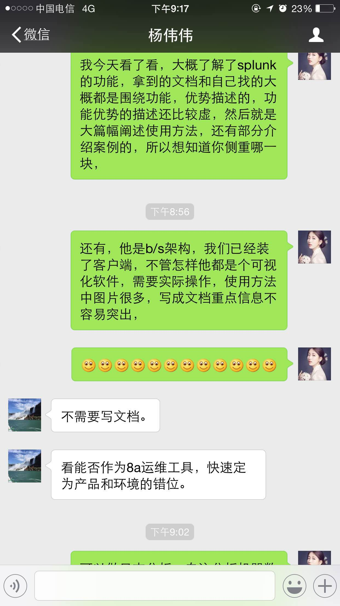
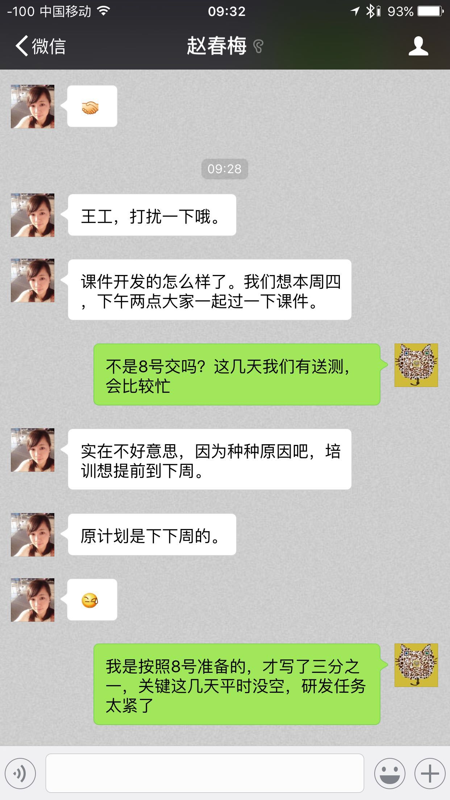
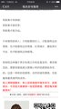
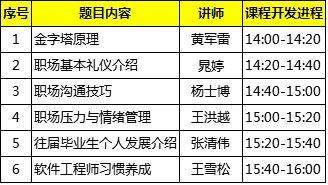
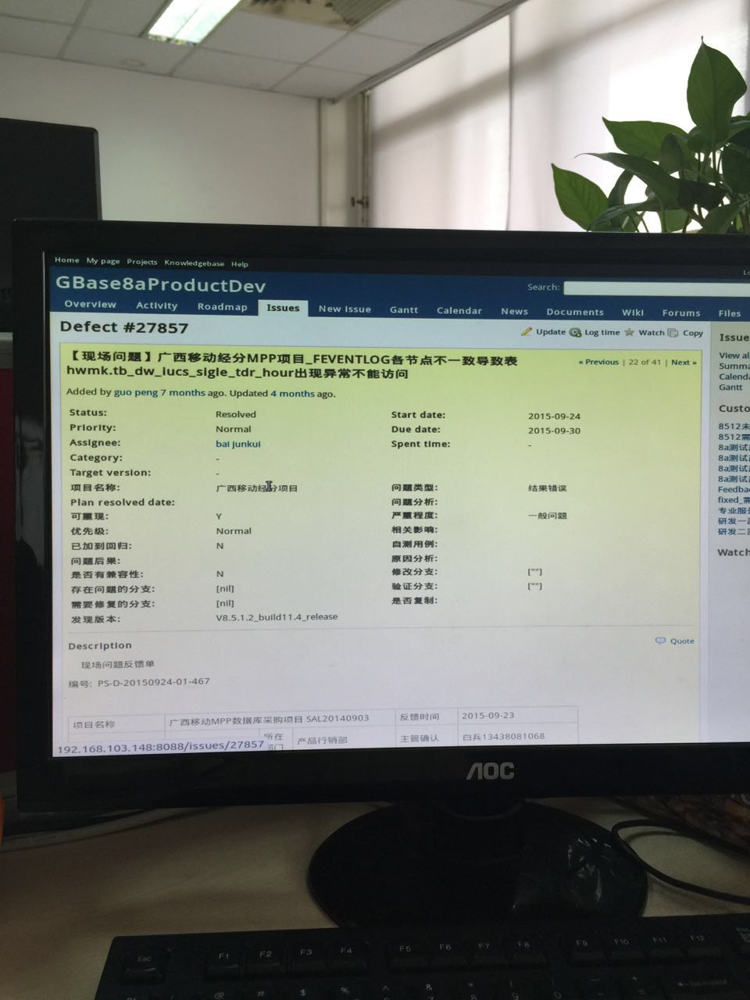

2016-04¶
2016-04-01¶
| 2016-04-01 08:55:42 | 我 | 早，几点到的 |
| 2016-04-01 08:56:43 | 你 | 8:20 |
| 2016-04-01 08:57:14 | 我 | 挺早的，昨晚几点回家的 |
| 2016-04-01 08:58:15 | 你 | 8:20 |
| 2016-04-01 08:58:17 | 你 | 哈哈 |
| 2016-04-01 08:58:40 | 我 | 挺好 |
| 2016-04-01 09:50:22 | 你 | 领导说啥了 |
| 2016-04-01 09:50:53 | 我 | 递归不做了 |
| 2016-04-01 09:55:51 | 我 | 大崔给领导的一个调研任务 |
| 2016-04-01 09:56:14 | 你 | 日志的是吗 |
| 2016-04-01 09:56:17 | 我 | 领导让田做，田很不情愿 |
| 2016-04-01 09:56:22 | 我 | 是 |
| 2016-04-01 09:56:23 | 你 | 恩 |
| 2016-04-01 09:56:51 | 我 | 领导让安排给需求做 |
| 2016-04-01 09:57:22 | 我 | 说TD用不到那么多人 |
| 2016-04-01 11:41:38 | 我 | 亲，你带饭了？ |
| 2016-04-01 11:42:26 | 你 | shi |
| 2016-04-01 11:42:31 | 你 | 你看见我了吗？ |
| 2016-04-01 11:42:35 | 你 | 今天忙吗？ |
| 2016-04-01 11:42:47 | 我 | 看见了 |
| 2016-04-01 11:42:56 | 我 | 今天很忙 |
| 2016-04-01 11:44:19 | 我 | 今天外面没有卖饭的 |
| 2016-04-01 11:44:31 | 你 | 是 |
| 2016-04-01 11:44:39 | 你 | 今天都很忙 |
| 2016-04-01 11:44:47 | 我 | 阿娇去食堂了 |
| 2016-04-01 11:44:51 | 你 | 什么事，问题？ |
| 2016-04-01 11:44:53 | 你 | 是 |
| 2016-04-01 11:45:03 | 你 | 我一会拿着饭找她去 |
| 2016-04-01 11:45:20 | 你 | 大食堂都是油烟，特别不想去 |
| 2016-04-01 11:45:34 | 你 | 她喜欢吃那的饭 |
| 2016-04-01 11:45:39 | 我 | 让她买回来吧 |
| 2016-04-01 11:45:44 | 你 | 她不 |
| 2016-04-01 11:45:46 | 你 | 哈哈 |
| 2016-04-01 11:45:56 | 你 | 胖人多任性 |
| 2016-04-01 11:46:01 | 我 | 你太宠着她了 |
| 2016-04-01 11:46:09 | 你 | 今天旭明可老实了 |
| 2016-04-01 11:46:19 | 你 | 看到我们就像不认识 |
| 2016-04-01 11:46:28 | 我 | 你说我这么宠着你，怕你受苦 |
| 2016-04-01 11:46:45 | 你 | 哈哈，没事的，我不受苦，就当散散心 |
| 2016-04-01 11:46:57 | 你 | 不然我一天都没机会出门 |
| 2016-04-01 11:47:03 | 我 | 哈哈 |
| 2016-04-01 11:47:26 | 我 | 你今天忙什么呢 |
| 2016-04-01 11:47:52 | 你 | 调研 |
| 2016-04-01 11:48:19 | 你 | 这家伙，李伟收了一束花 |
| 2016-04-01 11:48:36 | 我 | 今天她生日 |
| 2016-04-01 11:48:52 | 你 | 这都知道 |
| 2016-04-01 11:49:10 | 我 | 昨天她就嚷嚷的全知道了 |
| 2016-04-01 11:49:52 | 我 | 你还是调研递归吗 |
| 2016-04-01 11:49:58 | 你 | 恩，不是 |
| 2016-04-01 11:50:02 | 你 | 新的内容 |
| 2016-04-01 11:52:10 | 你 | 叫spelunking |
| 2016-04-01 11:52:19 | 你 | 是个检索工具啥的 |
| 2016-04-01 11:52:34 | 我 | 就是大崔的活 |
| 2016-04-01 11:52:55 | 你 | 恩，我觉饿得是 |
| 2016-04-01 11:53:01 | 你 | 那个工具还不错， |
| 2016-04-01 11:53:16 | 你 | 很强大，跟数据库有一样的地方 |
| 2016-04-01 11:54:30 | 我 | 你知道需求是什么吗 |
| 2016-04-01 11:54:39 | 你 | 不知道，就让看 |
| 2016-04-01 11:54:43 | 你 | 我先吃饭 |
| 2016-04-01 11:54:55 | 我 | 好，我回来告诉你需求吧 |
| 2016-04-01 12:16:36 | 你 | 吃完了 |
| 2016-04-01 12:17:12 | 你 | 吃完了 |
| 2016-04-01 12:17:16 | 你 | 好 |
| 2016-04-01 12:17:44 | 我 | 睡觉吧 |
| 2016-04-01 12:17:53 | 你 | 恩 |
| 2016-04-01 12:19:05 | 你 | 取快递 |
| 2016-04-01 12:19:29 | 我 | 好 |
| 2016-04-01 12:19:38 | 我 | 我们也吃完了 |
| 2016-04-01 13:18:51 | 你 | 王旭太有面子了 |
| 2016-04-01 13:19:09 | 你 | 工时没写 还得你亲自过来问 |
| 2016-04-01 13:19:39 | 我 | 还不是因为他坐你对面 |
| 2016-04-01 13:19:47 | 你 | 哈哈 |
| 2016-04-01 13:26:26 | 我 | 你忙吗 |
| 2016-04-01 13:26:48 | 你 | 我看这个资料呢 |
| 2016-04-01 13:27:54 | 我 | 好的，我和你说一下这个需求吧 |
| 2016-04-01 13:28:34 | 我 | 这个是大崔给领导的派的 |
| 2016-04-01 13:28:41 | 你 | 恩 |
| 2016-04-01 13:28:43 | 你 | 然后呢 |
| 2016-04-01 13:28:59 | 我 | 是想用这个工具自动收集现场的日志 |
| 2016-04-01 13:29:20 | 你 | 哦 原来是这样 |
| 2016-04-01 13:29:38 | 我 | 目前现场的日志有很多种，技术支持人员没有能力去手工收集 |
| 2016-04-01 13:30:11 | 我 | 所以就想找个软件来收集 |
| 2016-04-01 13:30:35 | 你 | 我看到的的是 需要自己穿数据 然后有多种方式检索 |
| 2016-04-01 13:30:38 | 我 | 如果找到合适的软件，公司会和8a 打包一起卖 |
| 2016-04-01 13:30:43 | 你 | 恩 |
| 2016-04-01 13:30:45 | 你 | 明白了 |
| 2016-04-01 13:31:11 | 你 | 我再看看 |
| 2016-04-01 13:31:17 | 你 | 有方向多了 |
| 2016-04-01 13:31:25 | 你 | 王洪越啥也没跟我说 |
| 2016-04-01 13:31:31 | 你 | 就给我资料 看吧 |
| 2016-04-01 13:32:28 | 我 | 现场日志不仅是咱们自己的，还有操作系统的、交换机的等等 |
| 2016-04-01 13:32:39 | 你 | 恩 |
| 2016-04-01 13:32:59 | 你 | 这里边说了个例子 是一个网上商店游戏的 |
| 2016-04-01 13:33:11 | 你 | 能够检索出所有错误信息 |
| 2016-04-01 13:33:44 | 我 | 咱们还比较特殊 |
| 2016-04-01 13:34:05 | 我 | 需要把几个节点之间的信息连接起来 |
| 2016-04-01 13:34:15 | 你 | 节点的也说了 |
| 2016-04-01 13:34:31 | 你 | 但是需要把数据添加进去 |
| 2016-04-01 13:34:45 | 我 | 单独看一个节点的信息没有用 |
| 2016-04-01 13:34:54 | 你 | 恩 是 |
| 2016-04-01 13:35:24 | 我 | 今天早上田和领导吵的就是田认为收集日志的他们已经写了 |
| 2016-04-01 13:35:41 | 我 | 这个工具没有更多的功能 |
| 2016-04-01 13:36:07 | 我 | 领导觉得活安排不下去，田不听话 |
| 2016-04-01 13:36:44 | 你 | 知道了 |
| 2016-04-01 13:42:09 | 我 | 我又过来看你了 |
| 2016-04-01 13:42:18 | 你 | wozhidao |
| 2016-04-01 13:42:23 | 你 | i know |
| 2016-04-01 13:42:57 | 我 | 现在每次都是看你顺便解决问题 |
| 2016-04-01 13:43:22 | 我 | 也搭着最近问题多点 |
| 2016-04-01 13:46:43 | 你 | 你没给我拍照吧 |
| 2016-04-01 13:46:49 | 你 | 你答应过我不拍的 |
| 2016-04-01 13:46:54 | 我 | 没有 |
| 2016-04-01 13:47:15 | 我 | 我答应过就不会拍 |
| 2016-04-01 13:47:25 | 你 | 恩 是 |
| 2016-04-01 13:47:28 | 你 | 我相信你 |
| 2016-04-01 13:57:13 | 你 | 你不回去嘛 |
| 2016-04-01 13:57:17 | 你 | 快回去吧 |
| 2016-04-01 13:57:27 | 我 | 看问题呢 |
| 2016-04-01 13:57:35 | 我 | 监督他们 |
| 2016-04-01 15:10:09 | 我 | 洪越给我们发了你写的递归的调研报告 |
| 2016-04-01 15:10:24 | 你 | 哦 好 |
| 2016-04-01 15:10:34 | 你 | 递归的那个我就差一点就知道了 |
| 2016-04-01 15:10:39 | 你 | 现在没时间看了 |
| 2016-04-01 15:10:43 | 你 | 还有个小问题 |
| 2016-04-01 15:10:50 | 我 | 哦 |
| 2016-04-01 15:10:53 | 你 | 那个报告啥也看不出来 |
| 2016-04-01 15:11:20 | 我 | cmd+h隐藏窗口 |
| 2016-04-01 15:11:37 | 你 | gotcha |
| 2016-04-01 15:12:01 | 我 | 就知道你会笑 |
| 2016-04-01 15:12:09 | 我 | 就爱看你笑 |
| 2016-04-01 15:39:41 | 我 | 你累了？ |
| 2016-04-01 15:39:50 | 你 | 困了 |
| 2016-04-01 15:40:11 | 我 | 睡会吧，反正领导不在 |
| 2016-04-01 15:40:17 | 你 | 不想睡 |
| 2016-04-01 15:40:19 | 你 | 没事 |
| 2016-04-01 15:40:31 | 我 | 是不是看文档看的 |
| 2016-04-01 15:40:46 | 你 | 是啊 我的阅读量好大啊 |
| 2016-04-01 15:42:31 | 我 | 涨知识呀 |
| 2016-04-01 15:42:44 | 你 | 没有我想要的 |
| 2016-04-01 15:42:48 | 我 | 哦 |
| 2016-04-01 15:42:56 | 你 | 正在锊 |
| 2016-04-01 15:42:57 | 我 | 要不聊会天 |
| 2016-04-01 15:43:00 | 你 | 不行 |
| 2016-04-01 15:43:02 | 你 | 没时间 |
| 2016-04-01 15:43:07 | 我 | 换换脑子 |
| 2016-04-01 15:43:17 | 你 | 我再看看 看出点东西来再说 |
| 2016-04-01 15:43:21 | 我 | 好吧 |
| 2016-04-01 15:43:27 | 你 | 我对软件了解太少了 |
| 2016-04-01 15:43:39 | 你 | 很多东西一说你们知道的 我都得看半天 |
| 2016-04-01 15:43:54 | 我 | 是 |
| 2016-04-01 15:44:45 | 你 | 没事 熟悉熟悉就好了 |
| 2016-04-01 15:44:52 | 你 | 慢慢就更好了 |
| 2016-04-01 15:44:57 | 你 | 是吧 |
| 2016-04-01 15:45:01 | 我 | 对呀 |
| 2016-04-01 16:11:21 | 我 | 怎么啦，为啥蒙眼 |
| 2016-04-01 16:11:29 | 你 | 困 |
| 2016-04-01 16:11:32 | 你 | 睡了会 |
| 2016-04-01 16:11:34 | 你 | 刚醒 |
| 2016-04-01 16:11:44 | 我 | 好点吗 |
| 2016-04-01 16:11:58 | 你 | 没事了 |
| 2016-04-01 16:12:02 | 你 | 好多了 |
| 2016-04-01 16:12:12 | 我 | 好 |
| 2016-04-01 16:46:35 | 你 | 聊天呗，休息会 |
| 2016-04-01 16:46:47 | 我 | 好 |
| 2016-04-01 16:47:12 | 你 | 我现在用MAC已经很顺手了 |
| 2016-04-01 16:47:13 | 你 | 哈哈 |
| 2016-04-01 16:47:20 | 你 | 开心死我了 |
| 2016-04-01 16:47:31 | 我 | 开心就好 |
| 2016-04-01 16:48:28 | 我 | 明天你回家吗 |
| 2016-04-01 16:48:43 | 你 | 公司收购美国开发是假的吧 |
| 2016-04-01 16:48:52 | 你 | 回张家口 |
| 2016-04-01 16:48:59 | 你 | 没期待啊 |
| 2016-04-01 16:49:05 | 你 | 而且会很累 |
| 2016-04-01 16:49:06 | 我 | 哦 |
| 2016-04-01 16:49:11 | 我 | 是 |
| 2016-04-01 16:49:24 | 我 | 就三天，挺折腾的 |
| 2016-04-01 16:49:31 | 你 | 是啊 |
| 2016-04-01 16:49:38 | 你 | 别提了 |
| 2016-04-01 16:50:01 | 我 | 回来又得缓好几天 |
| 2016-04-01 16:50:10 | 你 | 是啊 |
| 2016-04-01 16:50:16 | 你 | 主要有点远 |
| 2016-04-01 16:50:20 | 我 | 是 |
| 2016-04-01 16:50:32 | 你 | 本来我就不想回，我对象非得回 |
| 2016-04-01 16:50:47 | 你 | 而且说明天早起5:30出发 |
| 2016-04-01 16:50:48 | 我 | 肯定的 |
| 2016-04-01 16:50:56 | 我 | 是回他家 |
| 2016-04-01 16:50:57 | 你 | 你说多烦 |
| 2016-04-01 16:51:05 | 你 | 他也不想回 |
| 2016-04-01 16:51:06 | 我 | 人都是有感情的 |
| 2016-04-01 16:51:10 | 你 | 不是 |
| 2016-04-01 16:51:21 | 你 | 他挺爱回我家的 |
| 2016-04-01 16:51:44 | 你 | 主要去他家没意思， |
| 2016-04-01 16:52:07 | 你 | 不过，这也是我们该做的 |
| 2016-04-01 16:52:13 | 我 | 是 |
| 2016-04-01 16:52:29 | 你 | 你儿子的票买好了吗 |
| 2016-04-01 16:52:39 | 我 | 都买好了 |
| 2016-04-01 16:55:01 | 我 | 今天早点回去吧，明天还得起个大早 |
| 2016-04-01 16:55:06 | 你 | 我还想想想递归那个 |
| 2016-04-01 16:55:10 | 你 | 不了 |
| 2016-04-01 16:55:18 | 你 | 六点多走 |
| 2016-04-01 16:55:24 | 我 | 哦 |
| 2016-04-01 17:31:50 | 你 | 你几点走？ |
| 2016-04-01 17:32:01 | 我 | 待会就走 |
| 2016-04-01 17:46:20 | 你 | 你还不走？ |
| 2016-04-01 17:51:00 | 我 | 这就走 |
| 2016-04-01 17:51:20 | 你 | 谁送你 |
| 2016-04-01 17:51:23 | 你 | 胖子？ |
| 2016-04-01 17:51:48 | 你 | 王洪越把我说的话说给老田了 |
| 2016-04-01 17:52:03 | 你 | 今天的工作快烦死了 |
| 2016-04-01 17:52:09 | 我 | 怎么啦 |
| 2016-04-01 17:53:22 | 我 | 你说的什么告诉了田 |
| 2016-04-01 17:54:40 | 你 | 没什么 |
| 2016-04-01 17:54:45 | 你 | 破烂事 |
| 2016-04-01 17:55:11 | 你 | 我特别郁闷的事 是那个外甥女跟我们一起回家 |
| 2016-04-01 17:55:12 | 我 | 说吧，我还能帮你判断一下 |
| 2016-04-01 17:55:20 | 我 | 哦 |
| 2016-04-01 17:55:24 | 你 | 我跟她实在没得说 |
| 2016-04-01 17:55:28 | 我 | 是挺烦人 |
| 2016-04-01 17:55:38 | 你 | 尴尬的来回8小时 |
| 2016-04-01 17:55:44 | 你 | 真麻烦 |
| 2016-04-01 17:56:08 | 你 | 上周她不是来我家了吗 我对象周六加班 我还得在家给她做饭 |
| 2016-04-01 17:56:16 | 你 | 要是我自己就随便吃点了 |
| 2016-04-01 17:56:19 | 你 | 我觉得好麻烦 |
| 2016-04-01 17:56:28 | 你 | 本来我就不喜欢做饭 |
| 2016-04-01 17:56:46 | 你 | 今天我老公又加班 |
| 2016-04-01 17:57:15 | 你 | 那个女孩特别话少 就是很别扭 |
| 2016-04-01 17:57:27 | 我 | 唉 |
| 2016-04-01 17:57:41 | 我 | 那你就不理她 |
| 2016-04-01 17:57:48 | 你 | 而且她长的特成熟 还一直跟我叫舅妈 |
| 2016-04-01 17:57:57 | 你 | 我可不适应了 |
| 2016-04-01 17:58:02 | 我 | 哈哈 |
| 2016-04-01 17:58:05 | 你 | 还有件尴尬的事呢 |
| 2016-04-01 17:58:13 | 我 | ？ |
| 2016-04-01 17:58:26 | 你 | 上周五晚上我接她 路上他跟我说回家的事 |
| 2016-04-01 17:58:40 | 你 | 我就一直没跟她说我们回宣化 |
| 2016-04-01 17:58:55 | 你 | 她一会说回一会说不回 |
| 2016-04-01 17:59:21 | 你 | 然后我拉着她去接的我对象 我对象一上车就说清明节回家吗 跟我们一起吧 |
| 2016-04-01 17:59:32 | 我 | 正常 |
| 2016-04-01 17:59:49 | 我 | 你对象肯定会这么做 |
| 2016-04-01 18:00:41 | 你 | 我就是不想跟她在一块 |
| 2016-04-01 18:00:47 | 你 | 不招人喜欢 |
| 2016-04-01 18:01:04 | 你 | 后来我就说了他一顿 |
| 2016-04-01 18:01:08 | 我 | 唉 |
| 2016-04-01 18:01:14 | 你 | 当时可尴尬了 |
| 2016-04-01 18:01:18 | 我 | 没用的 |
| 2016-04-01 18:01:37 | 我 | 他也有他的考虑 |
| 2016-04-01 18:01:46 | 你 | 他有什么考虑 |
| 2016-04-01 18:02:01 | 你 | 我就怀疑了，为什么要这么对她 |
| 2016-04-01 18:02:11 | 你 | 我现在就不想这些事 |
| 2016-04-01 18:02:13 | 我 | 他得考虑如果不带小孩回家家里人会怎么说 |
| 2016-04-01 18:02:17 | 你 | 懒得生气 |
| 2016-04-01 18:02:32 | 我 | 是，不理他就好了 |
| 2016-04-01 18:02:53 | 我 | 这些事情得满满磨合 |
| 2016-04-01 18:03:29 | 我 | 别想这些事情了 |
| 2016-04-01 18:03:38 | 我 | 说说洪越的事情吧 |
| 2016-04-01 18:03:46 | 你 | 他没啥 |
| 2016-04-01 18:03:49 | 我 | 你到底和他说了什么 |
| 2016-04-01 18:04:00 | 你 | 就说调研的结果了 |
| 2016-04-01 18:04:03 | 你 | 没啥 |
| 2016-04-01 18:04:23 | 你 | 他也没看，然后把我说的跟老田说了 |
| 2016-04-01 18:05:13 | 我 | 要不晚上你和领导联系一下，说说你调研的，问问是不是他想要的 |
| 2016-04-01 18:05:24 | 你 | 行 |
| 2016-04-01 18:05:27 | 你 | 好的 |
| 2016-04-01 18:05:33 | 你 | 他干嘛去了 |
| 2016-04-01 18:05:43 | 我 | 好像回家了吧 |
| 2016-04-01 18:06:01 | 我 | 没准是回老家，他没说 |
| 2016-04-01 18:06:12 | 我 | 田应该知道 |
| 2016-04-01 18:06:26 | 你 | 哦，我得确定他有时间听我说 |
| 2016-04-01 18:06:43 | 我 | 所以说晚上 |
| 2016-04-01 18:06:58 | 我 | 我觉得他今天不会走 |
| 2016-04-01 18:07:10 | 我 | 要走也是明天 |
| 2016-04-01 18:08:08 | 你 | 恩 |
| 2016-04-01 18:10:39 | 你 | 烦死我了 |
| 2016-04-01 18:10:51 | 你 | 你上车了吗 |
| 2016-04-01 18:10:52 | 我 | 别烦了 |
| 2016-04-01 18:10:55 | 我 | 深呼吸 |
| 2016-04-01 18:11:02 | 我 | 我刚到南站 |
| 2016-04-01 18:11:06 | 你 | 我怎么跟领导开场啊 |
| 2016-04-01 18:11:10 | 我 | 取票呢 |
| 2016-04-01 18:11:31 | 你 | 开门见山 |
| 2016-04-01 18:11:32 | 我 | 你就问问他有没有空，有个问题问他 |
| 2016-04-01 18:11:38 | 你 | 好吧 |
| 2016-04-01 18:11:53 | 我 | 要是他忙或者开车就不会理你 |
| 2016-04-01 18:12:00 | 你 | 恩，好 |
| 2016-04-01 18:12:06 | 你 | 我就直接说得了 |
| 2016-04-01 18:13:08 | 你 | |
| 2016-04-01 18:13:12 | 你 | |
| 2016-04-01 18:13:13 | 我 | 是，就说你今天接到的任务，需求也不是很明确，你凭着自己的理解去调研的，让他看看有没有问题 |
| 2016-04-01 18:13:42 | 我 | 那你就加班呗 |
| 2016-04-01 18:16:36 | 你 | 我要是那有出息就好了 |
| 2016-04-01 18:17:17 | 我 | 所以得修炼 |
| 2016-04-01 18:17:53 | 你 | 哎 |
| 2016-04-01 18:18:08 | 你 | 不跟你说了，我给我弟弟回个电话，他刚给我打电话了 |
| 2016-04-01 18:18:11 | 你 | 舅舅家的 |
| 2016-04-01 18:20:19 | 你 | |
| 2016-04-01 18:20:26 | 你 | |
| 2016-04-01 18:20:31 | 你 | |
| 2016-04-01 18:20:58 | 你 | |
| 2016-04-01 18:21:00 | 我 | 被宠坏了 |
| 2016-04-01 18:21:06 | 你 | |
| 2016-04-01 18:21:12 | 我 | 是 |
| 2016-04-01 21:18:09 | 你 |  |
| 2016-04-01 21:18:57 | 你 | 别的就没说， |
| 2016-04-01 21:19:03 | 你 | 反正不用写文档了 |
| 2016-04-01 21:19:15 | 你 | 我就看看会用就行了 |
| 2016-04-01 21:19:24 | 你 | 别回了 |
2016-04-03¶
| 2016-04-03 11:14:22 | 你 | [链接] CAT |“再见啦，福丸，我最最亲爱的福丸…” |
2016-04-05¶
| 2016-04-05 08:48:28 | 你 | 没想到，你竟然给阿娇的朋友圈点了个赞 |
| 2016-04-05 08:49:05 | 我 | 哈哈，其实是想给你点的 |
| 2016-04-05 08:49:45 | 你 | 关键是好low |
| 2016-04-05 08:49:52 | 你 | 我已经无语了 |
| 2016-04-05 08:50:10 | 你 | 那个叫啥“莫生气”是吧 |
| 2016-04-05 08:50:16 | 我 | 是 |
| 2016-04-05 08:50:21 | 你 | 我上小学都会背了 |
| 2016-04-05 08:52:07 | 我 | 昨天你几点到家的？ |
| 2016-04-05 09:04:07 | 我 | 你这周有什么事情吗 |
| 2016-04-05 09:05:01 | 你 | 没有 |
| 2016-04-05 09:05:56 | 我 | 你帮我写给PPT行吗？ |
| 2016-04-05 09:06:17 | 你 | 行啊 把材料发给我 |
| 2016-04-05 09:06:21 | 我 | 新员工培训用的 |
| 2016-04-05 09:07:51 | 你 | 恩 好 |
| 2016-04-05 09:22:39 | 我 | 给你发邮件了 |
| 2016-04-05 09:22:48 | 你 | 好 |
| 2016-04-05 09:33:30 | 我 | 现在田真省事 |
| 2016-04-05 09:34:02 | 你 | 他本来也不想干事 |
| 2016-04-05 09:34:06 | 我 | 今天让洪越给个splunk计划 |
| 2016-04-05 09:34:31 | 我 | 现在他就是你们给计划，他负责跟踪 |
| 2016-04-05 09:34:48 | 你 | 他真省事 |
| 2016-04-05 09:35:00 | 你 | 你给我 的那个资料是哪的 就是那五点 |
| 2016-04-05 09:35:06 | 你 | 你自己想的啊 |
| 2016-04-05 09:35:17 | 我 | 是我自己想的 |
| 2016-04-05 09:35:30 | 你 | 这难为你了 |
| 2016-04-05 09:38:30 | 我 | 我得讲，总得知道点东西 |
| 2016-04-05 10:00:30 | 你 | 亲，问你几个问题啊 1 你是以什么身份做培训 2 培训想达到什么目标 3 大概多长时间 4 新员工是所有一段时间入职的新员工 还是开发人员 还是研发一组的 |
| 2016-04-05 10:00:50 | 你 | 我最晚明天下午给你 行吗？这样你还有时间改改 |
| 2016-04-05 10:01:23 | 我 | 可以 |
| 2016-04-05 10:01:44 | 我 | 是公司级的新员工 |
| 2016-04-05 10:02:12 | 我 | 大概半小时吧，我也不知道 |
| 2016-04-05 10:02:20 | 你 | 代替崔总的吗？ |
| 2016-04-05 10:02:25 | 我 | 不是 |
| 2016-04-05 10:02:29 | 你 | 我看有7习惯的 |
| 2016-04-05 10:03:27 | 我 | 这部分就简单列标题就行了，我不打算细讲 |
| 2016-04-05 10:03:46 | 我 | 只是讲一讲这个也是习惯的一部分 |
| 2016-04-05 10:04:15 | 你 | 我建议你别提了 不知道说的对不对啊 这个层次太高 一般崔总培训总会提 |
| 2016-04-05 10:04:28 | 你 | 你可以就带一句 响应下领导也行 |
| 2016-04-05 10:04:35 | 我 | 也行，我就是怕东西太少 |
| 2016-04-05 10:04:49 | 你 | 我帮你想几个点 |
| 2016-04-05 10:05:18 | 你 | 或者想几个纬度 |
| 2016-04-05 10:05:24 | 你 | 你看看哪个素材多 |
| 2016-04-05 10:05:36 | 我 | 好的 |
| 2016-04-05 10:28:12 | 我 | 你看什么呢 |
| 2016-04-05 10:28:30 | 你 | splunk |
| 2016-04-05 10:30:22 | 我 | 这个不是不需要写文档吗 |
| 2016-04-05 10:35:53 | 你 | 不需要我也得看啊 |
| 2016-04-05 10:36:00 | 你 | 现在还不会用呢 |
| 2016-04-05 10:36:20 | 我 | 好的，好像田也在看 |
| 2016-04-05 10:36:33 | 你 | 要是想给运维的用 就得看看好不好用 花多少钱啥的吧 |
| 2016-04-05 10:36:55 | 你 | 我不管 王洪越让我看 我就看看 反正领导也要 |
| 2016-04-05 10:37:13 | 我 | 是 |
| 2016-04-05 11:28:33 | 我 | 吃饭去 |
| 2016-04-05 11:31:19 | 你 | 那个splunk我看不懂怎么用 |
| 2016-04-05 11:31:37 | 你 | 你下午有空帮我看一眼呗 |
| 2016-04-05 11:32:18 | 我 | 可以呀 |
| 2016-04-05 11:32:23 | 你 | 他需要安装转发器，那个得联网，可是咱们内网联不了啊 |
| 2016-04-05 11:33:49 | 我 | 其实你可以问田 |
| 2016-04-05 11:34:54 | 你 | 我看splunk 要是监视数据库，就得装那个转发器 |
| 2016-04-05 11:35:09 | 我 | 正好和他套近乎 |
| 2016-04-05 11:35:47 | 我 | 那个可能不适合咱们，他是mysql的吧 |
| 2016-04-05 11:36:22 | 我 | 他能自己开发吗 |
| 2016-04-05 11:38:43 | 你 | 我会问他的 |
| 2016-04-05 11:38:51 | 你 | 我先把问题丢给他 |
| 2016-04-05 11:38:58 | 你 | 也没指望他能解决 |
| 2016-04-05 11:40:15 | 你 | 我看写的支持的数据库有三种 |
| 2016-04-05 11:40:39 | 你 | 我想的就是先问田，然后看他整成啥样吧， |
| 2016-04-05 11:41:05 | 你 | 然后再看看问问你 |
| 2016-04-05 11:41:31 | 我 | [链接] 在一个男权世界里，女人该如何强大地活着丨原创 |
| 2016-04-05 11:41:55 | 我 | 你看看这个，写得非常好 |
| 2016-04-05 12:14:57 | 你 | 好 |
| 2016-04-05 13:02:44 | 我 | 你没睡吗 |
| 2016-04-05 13:02:52 | 你 | 没睡 |
| 2016-04-05 13:03:24 | 我 | 不困？ |
| 2016-04-05 13:03:48 | 我 | 你昨天赶回来，不累？ |
| 2016-04-05 13:03:58 | 你 | 没事 |
| 2016-04-05 13:04:07 | 你 | 今天中午睡不着 |
| 2016-04-05 13:04:14 | 我 | 年轻真好 |
| 2016-04-05 13:05:00 | 你 | 呵呵 |
| 2016-04-05 13:18:55 | 我 | 你有什么需要问我的 |
| 2016-04-05 13:20:01 | 你 | 现在还没有 |
| 2016-04-05 13:20:08 | 你 | 等会 我在写东西 |
| 2016-04-05 13:20:11 | 我 | 好的 |
| 2016-04-05 13:39:17 | 你 | 问你个问题 为什么我们容易看到别人的缺点而不容易看到自己的呢 |
| 2016-04-05 13:40:20 | 我 | 自我保护 |
| 2016-04-05 13:40:33 | 我 | 还有竞争 |
| 2016-04-05 13:42:07 | 你 | 可是这样并不能让个体在竞争中有什么优势啊 |
| 2016-04-05 13:42:33 | 我 | 这个说起来有点复杂 |
| 2016-04-05 13:42:42 | 我 | 你知道谎言吧 |
| 2016-04-05 13:42:52 | 我 | 这里面涉及到成本的问题 |
| 2016-04-05 13:43:03 | 你 | 这个比较长 |
| 2016-04-05 13:43:09 | 你 | 等有时间再说 |
| 2016-04-05 13:43:10 | 我 | 这么做的成本比较低 |
| 2016-04-05 13:43:14 | 我 | 好的 |
| 2016-04-05 14:50:58 | 我 | 你怎么样 |
| 2016-04-05 15:05:51 | 我 | 亲，怎么啦 |
| 2016-04-05 15:59:43 | 我 | 你们什么评审会，这么久？ |
| 2016-04-05 18:03:48 | 你 | 变更那个洪越说题给老田，让老田决策 |
| 2016-04-05 18:03:57 | 你 | 你今天几点走 |
| 2016-04-05 18:04:17 | 我 | 我刚才和耿燕聊了一下，应该从耿燕那走 |
| 2016-04-05 18:04:29 | 我 | 我还不知道，你几点走？ |
| 2016-04-05 18:04:52 | 你 | 是走，但是说这个变更接不接受，让老田拍板 |
| 2016-04-05 18:05:47 | 我 | 好的 |
| 2016-04-05 20:23:00 | 你 | 王大叔，一会发给你邮件 check下 |
| 2016-04-05 20:26:40 | 我 | 好 |
| 2016-04-05 20:32:39 | 你 | 看下 因为洪越让我在邮件上回复 我不知道回给谁 这事他说让老田拍 我怕王洪越又找我事 |
| 2016-04-05 20:33:25 | 我 | 好 |
| 2016-04-05 20:33:37 | 你 | 这样写行吗 |
| 2016-04-05 20:34:30 | 我 | 行，换成田总 |
| 2016-04-05 20:34:40 | 你 | 好的 |
| 2016-04-05 20:34:46 | 我 | 你回复所有人 |
| 2016-04-05 20:35:00 | 你 | 直接发给洪越和田总了 然后抄送所有人 |
| 2016-04-05 20:35:01 | 我 | 我考虑一下用不用回复 |
| 2016-04-05 20:35:02 | 你 | 行吗 |
| 2016-04-05 20:35:07 | 你 | 好的 |
| 2016-04-05 20:35:25 | 我 | 有耿燕吧 |
| 2016-04-05 20:35:35 | 你 | 有 没有我填上他 |
| 2016-04-05 20:35:42 | 我 | 好的 |
| 2016-04-05 20:36:02 | 我 | 我今天和耿燕商量了这事 |
| 2016-04-05 20:36:11 | 你 | 怎么样 |
| 2016-04-05 20:36:26 | 我 | 我建议按流程做 |
| 2016-04-05 20:36:46 | 我 | 先发起变更请求 |
| 2016-04-05 20:36:52 | 我 | 然后评审 |
| 2016-04-05 20:37:05 | 我 | 耿燕同意了 |
| 2016-04-05 20:37:34 | 我 | 我想看看情况，不行明天晨会我提 |
| 2016-04-05 20:37:55 | 你 | 王洪越说他会提 |
| 2016-04-05 20:38:25 | 我 | 他提他的我提我的 |
| 2016-04-05 20:39:15 | 你 | 好的 |
| 2016-04-05 20:39:19 | 你 | 你安排吧 |
| 2016-04-05 20:39:23 | 你 | 我今天加班 |
| 2016-04-05 20:39:30 | 你 | 晚点回去 |
| 2016-04-05 20:39:35 | 我 | 啊 |
| 2016-04-05 20:39:58 | 我 | 早知道我晚点走了 |
| 2016-04-05 20:40:04 | 我 | 陪你一会 |
| 2016-04-05 20:40:07 | 你 | 太晚了 |
| 2016-04-05 20:40:11 | 我 | 你是调研吗 |
| 2016-04-05 20:40:22 | 你 | 我最近都加班 我得把splunk的整出来 |
| 2016-04-05 20:40:37 | 你 | 不过今晚加班是想给你写PPT |
| 2016-04-05 20:41:00 | 我 | 算了，我自己写吧 |
| 2016-04-05 20:41:06 | 你 | 没事啊 |
| 2016-04-05 20:41:14 | 我 | 害你加班 |
| 2016-04-05 20:41:17 | 你 | 我帮你看看吧 我觉得我写的也不好 |
| 2016-04-05 20:41:28 | 你 | 我喜欢加班写PPT |
| 2016-04-05 20:42:10 | 我 | 好吧，早点回去，别太晚了 |
| 2016-04-05 20:42:18 | 你 | 恩 好 |
| 2016-04-05 20:55:30 | 你 | 亲 我给你打电话说吧 |
| 2016-04-05 20:55:38 | 你 | 你方便接电话吗 |
| 2016-04-05 20:56:14 | 我 | 好的 |
| 2016-04-05 21:23:10 | 你 | 非常抱歉 |
| 2016-04-05 21:23:23 | 我 | 没事的，真的 |
| 2016-04-05 21:23:37 | 你 | 恩，好 |
| 2016-04-05 21:24:08 | 我 | 路上慢点，不然我会担心你的 |
| 2016-04-05 21:24:21 | 你 | 没事 |
| 2016-04-05 21:24:29 | 你 | |
| 2016-04-05 21:24:49 | 你 | 这人多会停车 |
| 2016-04-05 21:25:05 | 我 | 哈哈 |
| 2016-04-05 21:25:19 | 我 | 你没问题吧 |
| 2016-04-05 21:25:27 | 我 | 有点近 |
| 2016-04-05 21:25:28 | 你 | 那白的是我的 |
| 2016-04-05 21:25:33 | 你 | 没事 |
| 2016-04-05 21:25:37 | 我 | 好的 |
| 2016-04-05 21:25:42 | 你 | 你加点班吧， |
| 2016-04-05 21:25:46 | 你 | 不好意思啦 |
| 2016-04-05 21:25:50 | 我 | 没事 |
| 2016-04-05 21:26:02 | 我 | 待会我就写 |
| 2016-04-05 21:26:43 | 你 | 我走了 |
| 2016-04-05 21:26:48 | 你 | 开车 |
| 2016-04-05 21:26:51 | 你 | 别回了 |
| 2016-04-05 21:26:53 | 我 | 好 |
| 2016-04-05 21:26:57 | 你 | 哈哈 |
2016-04-06¶
| 2016-04-06 08:59:00 | 我 | 你怎么了 |
| 2016-04-06 09:28:40 | 你 | 没事 |
| 2016-04-06 09:28:43 | 你 | 过去了 |
| 2016-04-06 09:28:58 | 我 | 好 |
| 2016-04-06 09:32:30 | 我 |  |
| 2016-04-06 09:33:07 | 你 | 我晕 |
| 2016-04-06 10:33:52 | 你 | 压力大吗 ？ |
| 2016-04-06 10:34:00 | 我 | ？ |
| 2016-04-06 10:34:11 | 你 | 看你这么暴躁 |
| 2016-04-06 10:34:23 | 你 | 王旭想 老王又不稀罕我了 |
| 2016-04-06 10:34:30 | 我 | 他耽误我写 PPT 了 |
| 2016-04-06 10:34:39 | 你 | 我就知道 |
| 2016-04-06 10:34:41 | 你 | 哈哈 |
| 2016-04-06 10:34:45 | 你 | 你快写吧 |
| 2016-04-06 10:34:53 | 你 | 不然还嫁祸给我 |
| 2016-04-06 10:35:06 | 我 | 哦 |
| 2016-04-06 11:43:49 | 你 | 今天太忙了 |
| 2016-04-06 11:43:52 | 你 | 你呢 |
| 2016-04-06 11:43:59 | 你 | 这怎么样了 |
| 2016-04-06 11:44:03 | 你 | 写 |
| 2016-04-06 11:44:31 | 我 | 没怎么写，没有思路[难过] |
| 2016-04-06 11:44:47 | 你 | 那怎么办啊，哈哈 |
| 2016-04-06 11:45:16 | 我 | 放着吧，到最后再说 |
| 2016-04-06 11:46:15 | 你 | 晚上写 |
| 2016-04-06 11:46:21 | 你 | 安静点 |
| 2016-04-06 11:46:24 | 我 | 是 |
| 2016-04-06 11:46:35 | 你 | 你给自己定个时间， |
| 2016-04-06 11:46:53 | 你 | 安排好就行 |
| 2016-04-06 11:47:05 | 我 | 是 |
| 2016-04-06 15:23:59 | 你 | 干嘛呢 |
| 2016-04-06 15:24:05 | 你 | 写得怎么样了 |
| 2016-04-06 15:24:23 | 我 | 没空写，正在整送测 |
| 2016-04-06 17:58:33 | 你 | 今天这个环境太陌生了 座不下去了 |
| 2016-04-06 17:59:03 | 我 | 啊，为啥 |
| 2016-04-06 17:59:09 | 我 | 我正在讲 |
| 2016-04-06 17:59:21 | 你 | 你讲吧 |
| 2016-04-06 18:00:27 | 我 | 你不来了？ |
| 2016-04-06 18:00:34 | 你 | 恩 不去了 |
| 2016-04-06 18:00:47 | 我 | 好吧 |
| 2016-04-06 18:12:16 | 你 | 你今天很忙吗？ |
| 2016-04-06 18:12:26 | 你 | 我以后可能都不去听你们培训了 |
| 2016-04-06 18:16:27 | 我 | 为啥呀？ |
| 2016-04-06 18:16:36 | 我 | 你今天怎么啦？ |
| 2016-04-06 18:16:54 | 你 | 不高兴了 |
| 2016-04-06 18:17:07 | 你 | 就是不去了 |
| 2016-04-06 18:17:14 | 我 | 是我惹到你了？ |
| 2016-04-06 18:17:20 | 你 | 恩 |
| 2016-04-06 18:17:27 | 我 | 对不起 |
| 2016-04-06 18:17:39 | 你 | 跟培训没关系 反正以后都不去了 |
| 2016-04-06 18:17:43 | 你 | 你们high吧 |
| 2016-04-06 18:17:57 | 我 | 为啥呀？ |
| 2016-04-06 18:18:17 | 我 | 我正在讲呢，希望你也来听呀 |
| 2016-04-06 18:18:30 | 你 | 你讲吧 不打扰你了 |
| 2016-04-06 18:19:10 | 我 | 你今天怎么了 |
| 2016-04-06 18:19:23 | 我 | 是因为我没理你吗 |
| 2016-04-06 18:20:14 | 我 | 我看你今天特别忙，洪越一直在你那，我都不敢发消息 |
| 2016-04-06 18:28:11 | 我 | 亲，别生气啦 |
| 2016-04-06 18:28:17 | 我 | 对不起 |
| 2016-04-06 18:28:31 | 你 | 你别劝我啦 |
| 2016-04-06 18:29:03 | 我 | 你来听吧，我给你重新讲一遍 |
| 2016-04-06 18:29:14 | 你 | 我不去 |
| 2016-04-06 18:29:27 | 我 | 来吧 |
| 2016-04-06 18:29:29 | 你 | 你讲吧 我没资格听 |
| 2016-04-06 18:29:36 | 我 | 没有呀 |
| 2016-04-06 18:29:48 | 我 | 我就是想讲给你听的 |
| 2016-04-06 18:29:55 | 你 | 我只是生你的气 跟知识没关系 请不要拿知识开玩笑 |
| 2016-04-06 18:30:07 | 我 | 我以为你只是上厕所了 |
| 2016-04-06 18:30:17 | 我 | 看你把本给宋文彬了 |
| 2016-04-06 18:30:19 | 你 | 我不想见你了 |
| 2016-04-06 18:30:25 | 我 | 啊 |
| 2016-04-06 18:30:45 | 我 | 生这么大气 |
| 2016-04-06 18:30:58 | 我 | 别生气了，会气坏身子的 |
| 2016-04-06 18:31:03 | 你 | 跟你没关系 |
| 2016-04-06 18:31:55 | 我 | 肯定和我有关系 |
| 2016-04-06 18:32:37 | 我 | 我已经晾他们半天了 |
| 2016-04-06 18:32:43 | 我 | 别生气啦 |
| 2016-04-06 18:32:57 | 你 | 你这是在威胁我吗 |
| 2016-04-06 18:33:14 | 你 | 我没让你晾他们啊 |
| 2016-04-06 18:33:15 | 我 | 没有没有 |
| 2016-04-06 18:33:18 | 我 | 不是的 |
| 2016-04-06 18:33:26 | 我 | 我是说我和你聊天 |
| 2016-04-06 18:33:36 | 我 | 结果晾着他们 |
| 2016-04-06 18:33:39 | 你 | 我不跟你聊 你随便吧 |
| 2016-04-06 18:33:43 | 我 | 不是威胁你 |
| 2016-04-06 18:34:12 | 你 | 你晾不晾他们跟我一点关系没有 |
| 2016-04-06 18:34:16 | 你 | 那是你的事 |
| 2016-04-06 18:34:29 | 我 | 哦 |
| 2016-04-06 18:34:38 | 我 | 别生气啦 |
| 2016-04-06 18:34:50 | 我 | 为啥会生这么大气 |
| 2016-04-06 18:35:08 | 你 | 我不该生你的气 |
| 2016-04-06 18:35:16 | 你 | 你别管我了 我一会就好了 |
| 2016-04-06 18:35:31 | 我 | 不行 |
| 2016-04-06 18:35:36 | 我 | 我得哄你 |
| 2016-04-06 18:44:17 | 我 | 亲，对不起 |
| 2016-04-06 18:44:30 | 我 | 我今天不该不理你 |
| 2016-04-06 18:44:56 | 你 | 你自己知道我为什么生气 你为什么还要这么做呢 |
| 2016-04-06 18:45:15 | 我 | 那你为什么不告诉我呢 |
| 2016-04-06 18:45:33 | 你 | 我怎么告诉你啊 |
| 2016-04-06 18:45:40 | 你 | 我跟你说 你怎么不搭理我啊 |
| 2016-04-06 18:45:46 | 你 | 是吗 |
| 2016-04-06 18:47:37 | 我 | 亲，对不起 |
| 2016-04-06 18:47:47 | 我 | 我真的不是不搭理你 |
| 2016-04-06 18:47:58 | 你 | 算了 别说了 |
| 2016-04-06 18:48:11 | 你 | 我不生气了 |
| 2016-04-06 18:48:25 | 我 | 我今天看你好几次 |
| 2016-04-06 18:48:38 | 我 | 一直忍着 |
| 2016-04-06 18:48:39 | 你 | 别说了 |
| 2016-04-06 18:48:45 | 你 | 都是我不好 |
| 2016-04-06 18:48:47 | 我 | 怕打扰你 |
| 2016-04-06 18:48:54 | 我 | 是我不好 |
| 2016-04-06 18:49:04 | 我 | 我应该多陪你的 |
| 2016-04-06 18:49:45 | 我 | 真对不起 |
| 2016-04-06 18:49:57 | 我 | 我是真心道歉 |
| 2016-04-06 18:50:54 | 我 | 对不起 |
| 2016-04-06 18:51:52 | 我 | 笑笑吧 |
| 2016-04-06 18:53:19 | 我 | 我都语无伦次了 |
| 2016-04-06 19:01:35 | 我 | 亲，我还想让你帮我看PPT呢 |
| 2016-04-06 19:30:13 | 你 | 我能看出啥来啊 |
| 2016-04-06 19:30:49 | 我 | 能呀 |
| 2016-04-06 19:30:55 | 我 | 我相信你 |
| 2016-04-06 19:42:36 | 你 | 你是在讨好我吧 |
| 2016-04-06 19:42:50 | 我 | 就算吧 |
| 2016-04-06 19:43:04 | 我 | 是因为我犯错了 |
| 2016-04-06 19:52:27 | 我 | 不生气了吧 |
| 2016-04-06 19:52:33 | 你 | 生呢 |
| 2016-04-06 19:52:41 | 你 | 你以为就这么好了啊 |
| 2016-04-06 19:52:42 | 我 | 啊 |
| 2016-04-06 19:52:45 | 你 | 走了 |
| 2016-04-06 19:52:48 | 我 | 好吧 |
| 2016-04-06 19:52:58 | 我 | 明天我继续哄你 |
| 2016-04-06 19:53:10 | 你 | 我等着啊[调皮] |
| 2016-04-06 19:53:16 | 你 | 走了 |
| 2016-04-06 19:53:26 | 我 | 好，注意安全 |
2016-04-07¶
| 2016-04-07 08:24:07 | 我 | 早 |
| 2016-04-07 08:29:10 | 我 | 还生我气呢？ |
| 2016-04-07 08:29:54 | 你 | 你知道我为啥生你气吗 |
| 2016-04-07 08:30:25 | 我 | 两个原因 |
| 2016-04-07 08:30:42 | 我 | 一个是我没理你 |
| 2016-04-07 08:30:58 | 我 | 一个是我和杨丽莹太近 |
| 2016-04-07 08:31:14 | 你 | 我觉得你是故意的 |
| 2016-04-07 08:31:46 | 我 | 不是 |
| 2016-04-07 08:31:53 | 我 | 真的不是 |
| 2016-04-07 08:32:34 | 你 | 我不想听你解释 我知道我说不过你 |
| 2016-04-07 08:32:44 | 我 | 我昨天好几次想找你，看你那么忙 |
| 2016-04-07 08:33:00 | 你 | 你要是因为洪越在我这补搭理我 为啥培训的时候没搭理我啊 |
| 2016-04-07 08:33:25 | 你 | 培训的时候我不忙吧 东海说了30分钟废话吧 |
| 2016-04-07 08:33:26 | 我 | 那你知道我看你多少次吗？ |
| 2016-04-07 08:33:31 | 你 | 那不重要 |
| 2016-04-07 08:33:41 | 我 | 好吧，我错了 |
| 2016-04-07 08:33:42 | 你 | 你还没回答我的问题 |
| 2016-04-07 08:33:48 | 你 | 你为什么错啊 |
| 2016-04-07 08:33:57 | 你 | 所以你是故意的 |
| 2016-04-07 08:33:59 | 我 | 我是一直等你呢 |
| 2016-04-07 08:34:07 | 我 | 我应该先找你 |
| 2016-04-07 08:34:22 | 你 | 我问过你了 你忙吗 |
| 2016-04-07 08:34:49 | 你 | 你为什么要等我啊 你还知道我因为你不理我可能生你的气 |
| 2016-04-07 08:34:51 | 你 | 为什么啊 |
| 2016-04-07 08:35:26 | 你 | 你为什么说我因为你跟杨丽英走的近生你的气啊 |
| 2016-04-07 08:35:38 | 你 | 你都知道 你为什么还这么做 你就是故意的 |
| 2016-04-07 08:35:39 | 我 | 一开始我看你听他们讲课 |
| 2016-04-07 08:35:43 | 你 | 故意的气我 |
| 2016-04-07 08:35:44 | 我 | 还记笔记 |
| 2016-04-07 08:35:50 | 我 | 我就想等一会 |
| 2016-04-07 08:35:58 | 我 | 别打搅你 |
| 2016-04-07 08:36:02 | 你 | 你别解释了 |
| 2016-04-07 08:36:05 | 你 | 我都不信 |
| 2016-04-07 08:36:27 | 你 | 你不是怕打搅我 你是等我联系你 |
| 2016-04-07 08:36:34 | 我 | 而且我一直控制话题的走向就是想让你能听懂 |
| 2016-04-07 08:36:47 | 我 | 我还看见你和宋文斌交流 |
| 2016-04-07 08:36:48 | 你 | 你还故意跟杨丽英说话 你还等我联系你 |
| 2016-04-07 08:37:21 | 我 | 好吧，不过我真的不是故意的 |
| 2016-04-07 08:37:44 | 你 | 那我问你为什么生气 你怎么能说对呢 |
| 2016-04-07 08:38:13 | 我 | 我昨晚回家自省的时候想到的 |
| 2016-04-07 08:38:17 | 你 | 这件事就这么过去吧 你要是不想说 我也不想说了 就是以后你别这么做了 |
| 2016-04-07 08:38:29 | 我 | 其实你应该是早就生气了 |
| 2016-04-07 08:38:47 | 我 | 结果我当成你正在努力听讲呢 |
| 2016-04-07 08:38:48 | 你 | 我要是自己生气会挺难受的 不过我自己也会好 |
| 2016-04-07 08:38:59 | 我 | 你有很久一直低着头 |
| 2016-04-07 08:39:03 | 你 | 我说了 不听你解释 |
| 2016-04-07 08:39:23 | 我 | 好吧，你不想听， 我就不解释了 |
| 2016-04-07 08:40:38 | 我 | 对不起，我真的不是故意的 |
| 2016-04-07 08:41:43 | 我 | 只是没想到我那么辛苦的忍着不和你聊天是这个结果 |
| 2016-04-07 08:44:28 | 我 | [委屈][流泪] |
| 2016-04-07 08:46:20 | 我 | 别生气了 |
| 2016-04-07 08:46:31 | 你 | 恩 |
| 2016-04-07 08:46:45 | 我 | 我真的不是故意的 |
| 2016-04-07 08:46:59 | 你 | 恩 |
| 2016-04-07 08:47:02 | 你 | 知道了 |
| 2016-04-07 08:47:10 | 你 | 我找洪越 你先别发了 |
| 2016-04-07 09:01:02 | 我 | 说完了？我能和你聊了？ |
| 2016-04-07 09:01:10 | 我 | 还是你得忙？ |
| 2016-04-07 09:01:17 | 你 | 都行啊 |
| 2016-04-07 09:01:24 | 你 | 你PPT怎么样了 |
| 2016-04-07 09:01:35 | 我 | 还差一点 |
| 2016-04-07 09:01:43 | 我 | 我先问你个问题吧 |
| 2016-04-07 09:02:01 | 我 | 这个问题憋了我一天了 |
| 2016-04-07 09:02:08 | 你 | 好啊 |
| 2016-04-07 09:02:17 | 我 | 你最近是不是上火了？ |
| 2016-04-07 09:02:31 | 你 | 没有啊 |
| 2016-04-07 09:02:32 | 你 | 怎么了 |
| 2016-04-07 09:02:49 | 我 | 牙有毛病？ |
| 2016-04-07 09:02:59 | 我 | 嗓子有痰吗？ |
| 2016-04-07 09:03:04 | 你 | 我的牙咋啦 |
| 2016-04-07 09:03:07 | 你 | 没有啊 |
| 2016-04-07 09:03:16 | 你 | 挺好的啊 |
| 2016-04-07 09:03:21 | 我 | 那胃呢？ |
| 2016-04-07 09:03:30 | 你 | 没事啊 |
| 2016-04-07 09:03:31 | 你 | 怎么了 |
| 2016-04-07 09:04:35 | 我 | 前天和你说话的时候我闻到了你嘴里的味道，感觉好像是你的胃不好 |
| 2016-04-07 09:04:55 | 你 | 没有 |
| 2016-04-07 09:05:03 | 你 | 那你以后离我远点说话 |
| 2016-04-07 09:05:15 | 我 | 为啥 |
| 2016-04-07 09:05:28 | 你 | 没啥 |
| 2016-04-07 09:05:29 | 你 | 我没事 |
| 2016-04-07 09:06:08 | 我 | 我不是说我不喜欢你的味道，是担心你的胃 |
| 2016-04-07 09:06:18 | 你 | 恩 我没事 |
| 2016-04-07 09:11:01 | 我 | 其实以前我就闻到过，但是这次不一样。每个人都有自己的味道，平时你的味道挺好的。我对这些比较敏感，之前不告诉你是怕你困扰，也是想给自己留点，怕你知道后就没了。但是这次不一样，你应该是不疼，但是会有一些其他症状。我也会有类似的情况，可以理解为亚健康。所以你昨天生那么大气，我就怕你的胃疼 |
| 2016-04-07 09:11:39 | 你 | 哦 |
| 2016-04-07 09:11:41 | 你 | 我没有 |
| 2016-04-07 09:12:10 | 我 | 好吧，自己一定要注意，特别是别着凉 |
| 2016-04-07 09:28:09 | 我 | 亲，看样子你今天是不是还很忙 |
| 2016-04-07 09:46:03 | 你 | 领导来了饿 |
| 2016-04-07 09:46:21 | 我 | 是 |
| 2016-04-07 09:48:30 | 我 | 我现在真服了田了 |
| 2016-04-07 09:48:38 | 我 | 不论什么事情 |
| 2016-04-07 09:48:39 | 你 | 怎么了 |
| 2016-04-07 09:48:44 | 你 | 推 |
| 2016-04-07 09:48:49 | 我 | 就要计划 |
| 2016-04-07 09:49:04 | 你 | 王洪越也那样 领导也那样 |
| 2016-04-07 09:49:06 | 我 | 不管什么事情 |
| 2016-04-07 09:49:07 | 你 | 都是计划 |
| 2016-04-07 09:49:26 | 我 | 不管有没有人干 |
| 2016-04-07 09:49:27 | 你 | 可能它想不到别的推进的方法吧 |
| 2016-04-07 09:49:32 | 我 | 对 |
| 2016-04-07 09:49:43 | 我 | 懒政 |
| 2016-04-07 09:49:55 | 你 | 要计划就是自己没规划 |
| 2016-04-07 09:49:59 | 你 | 最典型的 |
| 2016-04-07 09:50:18 | 我 | 不去识别问题 |
| 2016-04-07 09:50:32 | 我 | 不想怎么解决问题 |
| 2016-04-07 09:51:06 | 你 | 是 |
| 2016-04-07 10:31:41 | 我 | 心情很糟，易怒 |
| 2016-04-07 10:31:52 | 你 | 怎么了 |
| 2016-04-07 10:31:55 | 你 | 跟我说说 |
| 2016-04-07 10:32:42 | 你 | 没缘由吗 |
| 2016-04-07 10:32:47 | 你 | 不是我惹的吧 |
| 2016-04-07 10:33:45 | 我 | 不是 |
| 2016-04-07 10:34:41 | 我 | 刚才严丹在 |
| 2016-04-07 10:34:52 | 你 | 我知道 我看见了 |
| 2016-04-07 10:34:59 | 你 | 是不是事情太多闹得 |
| 2016-04-07 10:35:02 | 我 | 我也不知道是为啥 |
| 2016-04-07 10:35:12 | 我 | 有可能 |
| 2016-04-07 10:35:26 | 你 | 可能是我跟你耍脾气闹得 |
| 2016-04-07 10:35:28 | 我 | 需要操心的事情太多 |
| 2016-04-07 10:35:30 | 你 | 我不生你气了 |
| 2016-04-07 10:35:36 | 我 | 肯定不是 |
| 2016-04-07 10:35:44 | 你 | 你别想哄我的事啦 |
| 2016-04-07 10:36:08 | 我 | 我心情差和哄你没关系 |
| 2016-04-07 10:36:28 | 我 | 你知道，我刚才突然有厌世的感觉 |
| 2016-04-07 10:36:41 | 我 | 可能就是你说的事情太多了 |
| 2016-04-07 10:36:47 | 你 | 可能吧 |
| 2016-04-07 10:36:50 | 我 | 该放一放了 |
| 2016-04-07 10:36:55 | 你 | 我也经常有 |
| 2016-04-07 10:36:57 | 你 | 没事的 |
| 2016-04-07 10:37:03 | 你 | 想想开心的事 |
| 2016-04-07 10:37:08 | 我 | 是，和你说了我就好多了 |
| 2016-04-07 10:37:15 | 你 | 对啊 |
| 2016-04-07 10:37:31 | 你 | 这时候特别需要跟别人说说 说出来就好了 |
| 2016-04-07 10:37:44 | 我 | 是呀 |
| 2016-04-07 10:37:46 | 我 | 你忙吧 |
| 2016-04-07 10:37:56 | 你 | 瞎忙 |
| 2016-04-07 10:38:16 | 我 | 不是的 |
| 2016-04-07 10:41:59 | 你 | 怎么了 |
| 2016-04-07 10:42:25 | 我 | 我是说你不是瞎忙，这些对你都是有好处的 |
| 2016-04-07 10:42:43 | 我 | 我的才是瞎忙呢，好多事情是不得不做 |
| 2016-04-07 10:43:01 | 你 | 有啥好处啊 |
| 2016-04-07 10:43:42 | 我 | 这些东西都是你的经验，没准以后你就会去一个开发日志应用的公司呢 |
| 2016-04-07 11:02:49 | 我 | 我还要再交一份规划降低投入产出比的文档，要不然 PBC 就没分了[惊恐] |
| 2016-04-07 11:03:15 | 你 | 哈哈 |
| 2016-04-07 11:03:47 | 我 | 我要心态平和， 我去看看你 |
| 2016-04-07 11:03:56 | 你 | haha |
| 2016-04-07 11:03:59 | 你 | haoba |
| 2016-04-07 11:09:06 | 我 | 果然心情好多了 |
| 2016-04-07 11:10:25 | 你 | 你就是心里作用 |
| 2016-04-07 11:12:09 | 我 | 是，因为人是感情动物 |
| 2016-04-07 12:11:48 | 你 | [链接] 异性之间有纯友谊吗？ |
| 2016-04-07 12:12:14 | 你 | 这是你最开始发给我的 |
| 2016-04-07 12:12:18 | 你 |  |
| 2016-04-07 12:12:48 | 你 | 这是最后一段说只有理性的男人和聪慧的女人才会有这种友谊 |
| 2016-04-07 12:13:00 | 你 | 为什么需要男人的理性，女人的聪慧 |
| 2016-04-07 12:13:02 | 你 | 哈哈 |
| 2016-04-07 12:13:08 | 你 | 我觉得自己太笨了 |
| 2016-04-07 12:14:46 | 我 | 不是呀 |
| 2016-04-07 12:14:57 | 我 | 我一直觉得你很聪明 |
| 2016-04-07 12:15:25 | 我 | 他说的是能悟道 |
| 2016-04-07 12:15:40 | 你 | 恩 |
| 2016-04-07 12:15:54 | 你 | 今天开车的时候想了想你说的道 |
| 2016-04-07 12:16:10 | 你 | 你说每个人都有每个人的道这件事 |
| 2016-04-07 12:16:59 | 我 | 嗯 |
| 2016-04-07 12:19:15 | 你 | 你说哲学家大都是衣食无忧的这种，是因为哲学本来层次就很高吗？或者说它不像是谋生技巧 |
| 2016-04-07 12:19:50 | 我 | 你说反了 |
| 2016-04-07 12:20:03 | 你 | 啊？ |
| 2016-04-07 12:20:05 | 你 | 哈哈 |
| 2016-04-07 12:20:09 | 我 | 以前的哲学家大多是贵族 |
| 2016-04-07 12:20:25 | 我 | 因为是贵族才有空研究哲学 |
| 2016-04-07 12:52:34 | 我 | 你睡觉了吗？ |
| 2016-04-07 12:53:23 | 我 | 我现在每天中午走一圈，就是以前咱俩走的路线 |
| 2016-04-07 12:58:39 | 你 | 自己走啊，那多无聊 |
| 2016-04-07 12:59:22 | 我 | 是呀，没有你陪着，很无聊 |
| 2016-04-07 13:00:17 | 你 | 哈哈 |
| 2016-04-07 13:23:00 | 我 | 和田讨论这次的PBC |
| 2016-04-07 13:23:25 | 你 | 就你们俩啊 |
| 2016-04-07 13:24:25 | 我 | 是 |
| 2016-04-07 13:42:25 | 你 | 聊的怎么样 |
| 2016-04-07 13:42:26 | 我 | 测试要开杨竞 |
| 2016-04-07 13:42:50 | 我 | 你们组是1B1C |
| 2016-04-07 13:43:05 | 你 | 为啥要开杨靖啊 |
| 2016-04-07 13:43:13 | 你 | 我晕 不会哪天把我开了吧 |
| 2016-04-07 13:43:18 | 我 | 不会 |
| 2016-04-07 13:43:38 | 我 | 杨竞不服管 |
| 2016-04-07 13:43:50 | 我 | 挑衅国华 |
| 2016-04-07 13:43:56 | 你 | 我晕 |
| 2016-04-07 13:44:01 | 你 | 他是这种人啊 |
| 2016-04-07 13:44:14 | 我 | 欺软怕硬 |
| 2016-04-07 13:45:51 | 你 | 好么 |
| 2016-04-07 13:47:22 | 你 | 今天的活还有大概一个小时就干完了 |
| 2016-04-07 13:49:51 | 我 | 真好 |
| 2016-04-07 13:50:20 | 我 | 可惜今天我时间不多，一堆破事 |
| 2016-04-07 13:51:57 | 你 | 没事 你忙你的吧 |
| 2016-04-07 13:52:15 | 我 | 好的 |
| 2016-04-07 15:50:35 | 我 | 我给你发了个邮件，你先看看 |
| 2016-04-07 15:50:42 | 你 | 恩 |
| 2016-04-07 15:50:58 | 你 | 正在看 |
| 2016-04-07 15:51:04 | 我 | 好 |
| 2016-04-07 16:30:08 | 我 | 忙死我了[抓狂] |
| 2016-04-07 16:30:37 | 你 | 别烦 越烦越忙 |
| 2016-04-07 16:30:39 | 你 | 哈哈 |
| 2016-04-07 16:30:59 | 你 | 我刚把活干完了 |
| 2016-04-07 16:31:00 | 我 | 是，我要心平气和 |
| 2016-04-07 16:31:04 | 你 | 哈哈 是 |
| 2016-04-07 16:31:17 | 我 | 好呀 |
| 2016-04-07 16:31:26 | 你 | 我要是PBC得B请你吃饭啊 |
| 2016-04-07 16:31:51 | 我 | 没问题 |
| 2016-04-07 16:32:08 | 你 | 得c就不请了啊 |
| 2016-04-07 16:32:17 | 我 | 那我请你 |
| 2016-04-07 16:32:18 | 你 | 我都无所谓 不是很在乎 |
| 2016-04-07 16:32:31 | 你 | 再说 |
| 2016-04-07 16:32:52 | 你 | 那你觉得B的可能性大还是C的大 |
| 2016-04-07 16:33:20 | 你 | 我现在文档写的又快又好 |
| 2016-04-07 16:34:27 | 我 | 不知道，这个应该是洪越定。 要是我都想给你 A |
| 2016-04-07 16:34:44 | 你 | 不至于吧 你私心太重 |
| 2016-04-07 16:34:47 | 你 | 随便吧 |
| 2016-04-07 16:34:52 | 你 | 就是猜着玩的 |
| 2016-04-07 16:35:25 | 我 | 我承认我私心重 |
| 2016-04-07 16:35:44 | 我 | 所以平时我要尽可能理性 |
| 2016-04-07 16:35:55 | 你 | 哈哈 |
| 2016-04-07 16:36:15 | 我 | 我给你 B 的可能性最大，我会找好多理由的 |
| 2016-04-07 16:36:43 | 你 | 幸好不是你平 |
| 2016-04-07 16:36:55 | 你 | 不用丢这么大难题给你 |
| 2016-04-07 16:37:08 | 你 | 要是你评 我可能主动要求C |
| 2016-04-07 16:37:12 | 你 | 省得你为难 |
| 2016-04-07 16:37:13 | 我 | 你之前不是一直在我们组评吗 |
| 2016-04-07 16:37:34 | 我 | 当时你占的是我们组的名额 |
| 2016-04-07 16:37:49 | 你 | 我知道 |
| 2016-04-07 16:38:03 | 我 | 而且那时候我们组还需要给 D |
| 2016-04-07 16:39:55 | 你 | 你先忙吧 |
| 2016-04-07 16:40:00 | 你 | 我姐找我聊天 |
| 2016-04-07 16:47:07 | 我 | 好 |
| 2016-04-07 17:06:57 | 我 | 告诉你一个消息，你别说出去 |
| 2016-04-07 17:07:03 | 你 | 当然 |
| 2016-04-07 17:07:05 | 你 | 什么？ |
| 2016-04-07 17:07:12 | 我 | 刚才和田聊 |
| 2016-04-07 17:07:20 | 你 | 恩 |
| 2016-04-07 17:07:30 | 我 | 你今年调薪10% |
| 2016-04-07 17:07:38 | 你 | 真的吗 |
| 2016-04-07 17:07:41 | 你 | 这么高 |
| 2016-04-07 17:07:47 | 我 | 平均数 |
| 2016-04-07 17:07:54 | 你 | 哦 |
| 2016-04-07 17:08:01 | 你 | 我以为5呢 |
| 2016-04-07 17:08:28 | 我 | 公司下来的比例就是10% |
| 2016-04-07 17:08:38 | 你 | 哦，好吧 |
| 2016-04-07 17:08:54 | 我 | 如果有人多，就得有人少 |
| 2016-04-07 17:09:07 | 你 | 恩 |
| 2016-04-07 17:09:10 | 你 | 不少了 |
| 2016-04-07 17:09:49 | 你 | 大家都是吗？ |
| 2016-04-07 17:09:55 | 你 | 阿娇也是吗 |
| 2016-04-07 17:10:23 | 我 | 我会给阿娇10 |
| 2016-04-07 17:10:32 | 你 | 恩，好 |
| 2016-04-07 17:10:50 | 我 | 这个不能平均 |
| 2016-04-07 17:10:56 | 我 | 会有低的 |
| 2016-04-07 17:11:06 | 你 | 哦， |
| 2016-04-07 17:11:10 | 你 | 好吧 |
| 2016-04-07 17:15:33 | 你 | 调座位的时候能别把我调太远吗？[抓狂][抓狂][抓狂][抓狂][抓狂][抓狂][抓狂][抓狂][抓狂][抓狂][抓狂][抓狂][抓狂][抓狂][抓狂][抓狂][抓狂][抓狂][抓狂][抓狂][抓狂][抓狂][抓狂][抓狂] |
| 2016-04-07 17:15:40 | 你 | 这才是我最担心的 |
| 2016-04-07 17:15:52 | 我 | 不会 |
| 2016-04-07 17:32:27 | 我 | 你可能会进里屋，坐田的位置 |
| 2016-04-07 17:32:56 | 你 | 田座哪啊 |
| 2016-04-07 17:33:02 | 你 | 不喜欢那个地 |
| 2016-04-07 17:33:10 | 我 | 你对面 |
| 2016-04-07 17:33:18 | 你 | 我晕 |
| 2016-04-07 17:33:28 | 我 | 这样你们组在一起 |
| 2016-04-07 17:33:29 | 你 | 怎么拍的，你呢 |
| 2016-04-07 17:33:36 | 我 | 我不动 |
| 2016-04-07 17:34:09 | 你 | 好吧，进里屋不错 |
| 2016-04-07 17:34:16 | 我 | 我们组就剩下里面这四个 |
| 2016-04-07 17:34:38 | 我 | 田坐你对面 |
| 2016-04-07 17:34:56 | 你 | 谁剩下 |
| 2016-04-07 17:36:14 | 我 | 我们靠窗户的四个不动 |
| 2016-04-07 17:37:16 | 你 | 你，旭明，东海和杨丽？ |
| 2016-04-07 17:37:24 | 我 | 是 |
| 2016-04-07 17:37:31 | 你 | 哦 |
| 2016-04-07 17:37:48 | 你 | 那你以后看不了我了 |
| 2016-04-07 17:37:57 | 你 | 没有王旭了 |
| 2016-04-07 17:38:09 | 我 | 是，有东海 |
| 2016-04-07 17:38:30 | 我 | 我可以侧着看你 |
| 2016-04-07 17:38:39 | 你 | 好吧 |
| 2016-04-07 17:38:50 | 我 | 你的侧脸也是很美的 |
| 2016-04-07 17:41:20 | 你 | 哈哈 |
| 2016-04-07 17:57:29 | 你 | 我怎么觉得我写的splunk |
| 2016-04-07 17:57:38 | 你 | 的这个文档写的这么好捏 |
| 2016-04-07 17:57:39 | 你 | 哈哈 |
| 2016-04-07 17:58:00 | 我 | 那是一定的呀 |
| 2016-04-07 18:24:08 | 你 | 你在面谈啊 |
| 2016-04-07 18:24:22 | 我 | 对 |
| 2016-04-07 18:24:44 | 我 | 调薪 |
| 2016-04-07 18:49:52 | 你 | 这次这么认真 |
| 2016-04-07 18:50:06 | 我 | 是 |
| 2016-04-07 18:50:25 | 你 | 为啥 |
| 2016-04-07 18:51:37 | 我 | 调薪，涉及到钱 |
| 2016-04-07 18:55:12 | 我 | 还是尽可能每个都谈吧 |
| 2016-04-07 18:55:41 | 我 | 不然会显得有轻重之分，对团队不利 |
| 2016-04-07 19:01:48 | 你 | 跟王洪越一起走 |
| 2016-04-07 19:01:51 | 你 | Shit |
| 2016-04-07 19:02:06 | 我 | 啊 |
| 2016-04-07 19:02:25 | 我 | 你现在走 |
| 2016-04-07 19:02:29 | 我 | 他有事 |
| 2016-04-07 19:02:35 | 你 | 我先把苹果吃完 |
| 2016-04-07 19:02:49 | 我 | 赶紧 |
| 2016-04-07 19:03:02 | 我 | 一会他就改完了 |
| 2016-04-07 19:03:48 | 你 | 他要搭车 |
| 2016-04-07 19:04:01 | 我 | 唉 |
2016-04-08¶
| 2016-04-08 08:34:21 | 你 | 今天这么晚 |
| 2016-04-08 08:34:24 | 你 | 到哪了 |
| 2016-04-08 08:34:55 | 我 | 刚出来 |
| 2016-04-08 08:35:03 | 你 | 好晚 |
| 2016-04-08 08:35:07 | 你 | 领导都来了 |
| 2016-04-08 08:35:11 | 我 | 昨晚睡得太晚了 |
| 2016-04-08 08:35:15 | 我 | 没起来 |
| 2016-04-08 08:37:38 | 我 | 你的报告交了吗 |
| 2016-04-08 08:37:47 | 你 | 啥报告 |
| 2016-04-08 08:37:59 | 我 | 你调研的 |
| 2016-04-08 08:38:10 | 你 | 交了 |
| 2016-04-08 08:38:20 | 你 | 昨天交的 |
| 2016-04-08 08:38:24 | 我 | 好的 |
| 2016-04-08 08:46:31 | 你 | 那王志新是不是做尹志军那啊 |
| 2016-04-08 08:46:47 | 你 | 我今天调研splunk的特性 |
| 2016-04-08 08:47:02 | 我 | 是 |
| 2016-04-08 08:47:19 | 你 | 我还得挨着她座 |
| 2016-04-08 08:47:24 | 你 | 她那么丑 |
| 2016-04-08 08:47:39 | 我 | 这次调整我们组付出最多 |
| 2016-04-08 08:47:51 | 你 | 今天穿了双漏脚面的鞋 有点凉 |
| 2016-04-08 08:48:08 | 你 | 你们组的都在外屋吗 |
| 2016-04-08 08:48:12 | 我 | 哦，我一定要看看 |
| 2016-04-08 08:48:15 | 你 | 你们四个在里屋 |
| 2016-04-08 08:48:20 | 我 | 是 |
| 2016-04-08 08:48:42 | 你 | 看你就是舍不得离开杨丽颖 |
| 2016-04-08 08:49:24 | 你 | 你旁边坐谁 |
| 2016-04-08 08:49:27 | 你 | 胡的位置 |
| 2016-04-08 08:49:58 | 我 | 质控的新人 |
| 2016-04-08 08:50:10 | 你 | 老田那个位置不过还好 要是你们屋的门开着 |
| 2016-04-08 08:50:23 | 我 | 我是舍不得你 |
| 2016-04-08 08:50:27 | 你 | 也没什么人从那走 我怕跟你聊天不方便 |
| 2016-04-08 08:50:38 | 我 | 要不然我就和他们一起到外屋了 |
| 2016-04-08 08:51:50 | 你 | 你为什么要做外屋呢 |
| 2016-04-08 08:52:06 | 我 | 整个组在一起 |
| 2016-04-08 08:52:11 | 你 | 要我是你 宁愿把需求的都踢出去也不可能座外屋 |
| 2016-04-08 08:52:19 | 我 | 现在就我们组被分开了 |
| 2016-04-08 08:52:37 | 你 | 你们组人多啊 |
| 2016-04-08 08:52:53 | 我 | 田当时提出过让我们占大屋 |
| 2016-04-08 08:53:04 | 我 | 让我搅和了 |
| 2016-04-08 08:53:23 | 我 | 那样我就真没法去看你了 |
| 2016-04-08 08:53:30 | 你 | 大屋是外屋吗 |
| 2016-04-08 08:53:47 | 我 | pst的屋 |
| 2016-04-08 08:54:17 | 我 | 现在这个方案是我提的 |
| 2016-04-08 08:54:32 | 我 | 这样你就进来，我还不用走 |
| 2016-04-08 08:54:59 | 我 | 本来想把你放陈彪那 |
| 2016-04-08 08:55:08 | 你 | 然后呢 |
| 2016-04-08 08:55:13 | 我 | 实在是找不到借口了 |
| 2016-04-08 08:55:34 | 你 | 田那也不错 |
| 2016-04-08 08:55:48 | 你 | 比陈彪那好 在陈彪那你怎么看我啊 |
| 2016-04-08 08:55:54 | 你 | 我不高兴了你都不知道 |
| 2016-04-08 08:56:18 | 我 | 我可以一直站着呀 |
| 2016-04-08 08:56:35 | 你 | 田这更好 |
| 2016-04-08 08:56:53 | 你 | 你一定得跟领导座一屋 |
| 2016-04-08 08:56:59 | 你 | 不然就太被动了 |
| 2016-04-08 08:57:10 | 我 | 是 |
| 2016-04-08 08:57:24 | 你 | 你就啥也不知道 |
| 2016-04-08 08:57:47 | 我 | 所以要把你调进来 |
| 2016-04-08 08:57:59 | 你 | 对啊 对啊 |
| 2016-04-08 08:58:05 | 我 | 还得找一个高大上的理由 |
| 2016-04-08 08:58:15 | 你 | 找得啥 |
| 2016-04-08 08:58:30 | 你 | 需求组的得在一起 |
| 2016-04-08 08:58:31 | 你 | 哈哈 |
| 2016-04-08 08:58:32 | 我 | 让你们组坐一起 |
| 2016-04-08 08:58:40 | 你 | 是 |
| 2016-04-08 08:58:42 | 你 | 不错 |
| 2016-04-08 08:58:44 | 我 | 而且和我比较近 |
| 2016-04-08 08:58:49 | 你 | 是 |
| 2016-04-08 08:58:56 | 我 | 不然你们就到外屋了 |
| 2016-04-08 08:59:00 | 你 | 难为你了 |
| 2016-04-08 08:59:12 | 你 | 领导问起splunk的事了 |
| 2016-04-08 08:59:19 | 你 | 到哪了 |
| 2016-04-08 08:59:28 | 你 | 老田回的 |
| 2016-04-08 08:59:34 | 我 | 哦 |
| 2016-04-08 08:59:53 | 你 | 你看 座位变了跟没变也差不多 |
| 2016-04-08 09:00:17 | 你 | 胡 和 尹 孙 现在也不怎么跟你汇报 |
| 2016-04-08 09:00:26 | 我 | 是 |
| 2016-04-08 09:00:32 | 你 | 只要旭明、东海、杨丽颖在就行呗 |
| 2016-04-08 09:01:03 | 我 | 重要的是有你在 |
| 2016-04-08 09:04:43 | 你 | 到哪了 |
| 2016-04-08 09:05:07 | 你 | 你其实还是喜欢跟你们组的坐一起的 |
| 2016-04-08 09:05:26 | 你 | 没办法，现实就这样，就是有取舍 |
| 2016-04-08 09:05:56 | 我 | 快了，下车了 |
| 2016-04-08 09:06:09 | 你 | 以后就得往外屋多跑跑了 |
| 2016-04-08 09:06:21 | 我 | 哈哈 |
| 2016-04-08 09:06:54 | 你 | 那天我们打羽毛球去，东江在车上说这几天来的有点晚，我就顺着说了两句 |
| 2016-04-08 09:07:24 | 你 | 说外屋的来的都太晚，每次我来的时候领导都到了，这屋的人还都没来 |
| 2016-04-08 09:08:00 | 你 | 我就说你以后早点来吧，不然显得不好 |
| 2016-04-08 09:08:05 | 你 | 他说是 |
| 2016-04-08 09:09:40 | 我 | 楼下了 |
| 2016-04-08 09:14:31 | 你 | 赶紧准备开会吧 |
| 2016-04-08 09:14:45 | 我 | 是 |
| 2016-04-08 09:15:05 | 我 | 你这周加班吗 |
| 2016-04-08 09:15:15 | 你 | 应该不加 |
| 2016-04-08 09:15:27 | 你 | 已经答应我老公了 |
| 2016-04-08 09:15:29 | 我 | 好 |
| 2016-04-08 09:15:32 | 你 | 加的话就是周六 |
| 2016-04-08 09:15:36 | 你 | 你先准备吧 |
| 2016-04-08 09:15:59 | 我 | 好 |
| 2016-04-08 09:38:29 | 我 | 领导又开始数人了 |
| 2016-04-08 09:38:46 | 你 | 我就觉得他今天会 |
| 2016-04-08 09:38:52 | 你 | 他早上8：30就到了 |
| 2016-04-08 10:12:02 | 我 | 签合同去了 |
| 2016-04-08 10:12:11 | 我 | 五年啦 |
| 2016-04-08 10:12:13 | 你 | 啥合同 |
| 2016-04-08 10:12:14 | 你 | 哦 |
| 2016-04-08 10:12:20 | 你 | 好久 |
| 2016-04-08 10:12:29 | 你 | 有纪念品吗 |
| 2016-04-08 10:12:35 | 你 | 十年是大金条啊 |
| 2016-04-08 10:12:49 | 我 | 还行吧，第一份工作我是九年 |
| 2016-04-08 10:12:50 | 你 | 你签10年的时候我就签5年了 |
| 2016-04-08 10:13:03 | 我 | 第二份五年 |
| 2016-04-08 10:13:17 | 我 | 这是第三份 |
| 2016-04-08 10:13:21 | 你 | 哦 |
| 2016-04-08 10:13:24 | 你 | 好 |
| 2016-04-08 10:13:51 | 我 | 有点感慨 |
| 2016-04-08 10:14:13 | 你 | how time flies |
| 2016-04-08 10:33:41 | 我 | 等我，有点忙 |
| 2016-04-08 10:55:29 | 你 | 刚才看到一句话 |
| 2016-04-08 10:55:41 | 你 | 好老板都是情商高，但内心真正简单透明的人 |
| 2016-04-08 10:55:42 | 我 | ？ |
| 2016-04-08 10:55:52 | 你 | 我是不是适合当老板啦 |
| 2016-04-08 10:55:53 | 我 | 哈哈 |
| 2016-04-08 10:55:54 | 你 | 哈哈 |
| 2016-04-08 10:55:57 | 我 | 对呀 |
| 2016-04-08 10:56:10 | 你 | 骗人 |
| 2016-04-08 10:56:18 | 我 | 当老板娘也不错啦[偷笑] |
| 2016-04-08 10:56:27 | 你 | 我看行 |
| 2016-04-08 11:02:22 | 你 | 把小白电话给我下吧 |
| 2016-04-08 11:03:41 | 我 | 我找一下 |
| 2016-04-08 11:04:34 | 我 | 18502629422 |
| 2016-04-08 11:05:35 | 你 | 多谢 |
| 2016-04-08 11:32:18 | 你 | 今天你们组的都很闲 |
| 2016-04-08 11:32:30 | 你 | 是因为刚刚送测了么 |
| 2016-04-08 11:35:36 | 我 | 是 |
| 2016-04-08 11:35:46 | 我 | 今天我要忙死 |
| 2016-04-08 11:35:54 | 我 | 好几个事情 |
| 2016-04-08 11:36:08 | 我 |  |
| 2016-04-08 11:36:44 | 我 | 还有PBC没弄 |
| 2016-04-08 11:36:45 | 你 | 开始了 |
| 2016-04-08 12:07:09 | 我 | 烦死了 |
| 2016-04-08 12:07:40 | 我 | 让旭明回一个给武总的邮件 |
| 2016-04-08 12:08:04 | 我 | 结果又惹祸了 |
| 2016-04-08 12:09:43 | 你 | [链接] 猫照镜子时发现被剃了毛之后，就一直这样了… |
| 2016-04-08 12:10:14 | 我 | 哈哈 |
| 2016-04-08 12:10:25 | 你 | 开心了吧 |
| 2016-04-08 12:10:41 | 我 | 是 |
| 2016-04-08 12:11:23 | 我 | 你怎么这么多猫 |
| 2016-04-08 12:12:28 | 你 | 因为有人喜欢啊 |
| 2016-04-08 12:12:44 | 我 | 哈哈 |
| 2016-04-08 12:18:04 | 你 | 跟领导吃饭去了吗 |
| 2016-04-08 12:18:28 | 我 | 没有 |
| 2016-04-08 12:18:42 | 你 | 恩 |
| 2016-04-08 12:19:16 | 我 | 你吃完了？ |
| 2016-04-08 12:23:24 | 我 | 你单人那张照片不好，显胖 |
| 2016-04-08 12:32:43 | 你 | 没事，胖就胖吧，也不能总太美啊 |
| 2016-04-08 12:32:54 | 你 | 是吧，哈哈 |
| 2016-04-08 12:33:04 | 你 | 丑点就丑点喽 |
| 2016-04-08 12:33:08 | 我 | [呲牙] |
| 2016-04-08 12:33:20 | 我 | 不丑 |
| 2016-04-08 12:34:14 | 我 | 你睡觉吧 |
| 2016-04-08 12:36:26 | 你 | 一点不想睡 |
| 2016-04-08 12:36:31 | 你 | 有人说我胖了 |
| 2016-04-08 12:36:39 | 我 | 谁 |
| 2016-04-08 12:36:40 | 你 | 不过我也攻击他了 |
| 2016-04-08 12:36:49 | 我 | 我去扁他 |
| 2016-04-08 12:36:54 | 你 | 好朋友，朋友圈留的言 |
| 2016-04-08 12:36:57 | 你 | 你不认识 |
| 2016-04-08 12:37:04 | 我 | 哦，好吧 |
| 2016-04-08 14:12:29 | 我 | 去讲PPT |
| 2016-04-08 14:13:17 | 你 | 改你了吗 |
| 2016-04-08 14:13:25 | 你 | 我也想听 |
| 2016-04-08 14:13:55 | 我 | 今天不行 |
| 2016-04-08 14:14:06 | 你 | 我知道 |
| 2016-04-08 14:14:12 | 我 | 今天是试讲，张总在 |
| 2016-04-08 14:14:28 | 你 | 哦 好吧 |
| 2016-04-08 14:14:32 | 你 | 我不去 |
| 2016-04-08 14:14:35 | 你 | 多长时间 |
| 2016-04-08 14:14:52 | 我 | 2个小时吧 |
| 2016-04-08 14:15:06 | 我 | 5个人，我是最后一个 |
| 2016-04-08 14:15:18 | 你 | 我晕 |
| 2016-04-08 14:15:53 | 我 | 烦吧 |
| 2016-04-08 14:16:10 | 你 | 还好 你听别人讲是吗 |
| 2016-04-08 14:16:14 | 我 | 是 |
| 2016-04-08 14:16:22 | 你 | 听呗 |
| 2016-04-08 14:16:30 | 你 | 我看这个splunk看的好累 |
| 2016-04-08 14:16:37 | 你 | 没什么进展 |
| 2016-04-08 14:16:38 | 我 | 现在是黄军雷讲金字塔 |
| 2016-04-08 14:16:41 | 你 | 嗯嗯 |
| 2016-04-08 14:16:48 | 我 | 遇到什么问题 |
| 2016-04-08 14:16:54 | 你 | 你不参加别人的不行吗 |
| 2016-04-08 14:17:12 | 你 | 这个文档写的不是很明确 而且都是英文的 |
| 2016-04-08 14:17:26 | 我 | 是 |
| 2016-04-08 14:17:49 | 你 | 没什么模块啥的 感觉就是这一句那一句 |
| 2016-04-08 14:18:20 | 我 | 因为他是商业产品 |
| 2016-04-08 14:18:51 | 我 | 讲的尽可能笼统 |
| 2016-04-08 14:19:07 | 你 | 可能吧 |
| 2016-04-08 14:19:25 | 你 | 而且他这个版本变化很大 |
| 2016-04-08 14:19:37 | 我 | 是 |
| 2016-04-08 14:19:41 | 你 | 文档都不是新的 操作都找不到 |
| 2016-04-08 14:19:58 | 我 | 我给你转个邮件吧 |
| 2016-04-08 14:20:07 | 你 | 算了 好看的话 王洪越也不会让我看 |
| 2016-04-08 14:20:10 | 你 | 慢慢看吧 |
| 2016-04-08 14:20:17 | 你 | 你转给我了 |
| 2016-04-08 14:20:27 | 你 | splunk和ELK的 |
| 2016-04-08 14:20:29 | 你 | 是吗 |
| 2016-04-08 14:20:46 | 你 | 什么时候搬工位啊 |
| 2016-04-08 14:20:55 | 你 | 赶着周末搬了得了 |
| 2016-04-08 14:21:40 | 我 | 今天就搬 |
| 2016-04-08 14:21:49 | 你 | 哦 |
| 2016-04-08 14:21:54 | 我 | 应该今天搬完 |
| 2016-04-08 14:22:09 | 你 | 我们今天打球 定的5:00的场地 |
| 2016-04-08 14:22:14 | 你 | 晚的没有了 |
| 2016-04-08 14:22:37 | 我 | 哦 |
| 2016-04-08 14:22:52 | 我 | 要看测试组搬的情况 |
| 2016-04-08 14:23:00 | 你 | 恩 等着吧 |
| 2016-04-08 14:23:47 | 我 | 你看看邮件 |
| 2016-04-08 14:24:01 | 你 | 好 |
| 2016-04-08 14:24:04 | 你 | 还没收到 |
| 2016-04-08 14:24:46 | 我 | 是领导给赵总的邮件 |
| 2016-04-08 14:26:16 | 你 | 不错 |
| 2016-04-08 14:26:29 | 你 | 这样的话可能用ELK啦 |
| 2016-04-08 14:26:59 | 我 | 是，你可以都看看，对比一下 |
| 2016-04-08 14:27:07 | 你 | 恩 |
| 2016-04-08 14:27:33 | 你 | 其实现在也不是很了解splunk |
| 2016-04-08 14:27:45 | 你 | 还不是特别会用 |
| 2016-04-08 14:28:02 | 我 | 慢慢学吧 |
| 2016-04-08 14:28:23 | 你 | 网上说splunk死贵死贵的 |
| 2016-04-08 14:28:37 | 我 | 对 |
| 2016-04-08 14:28:52 | 你 | 具体应对咱们的使用场景比ELK是不是好使 还不知道 |
| 2016-04-08 14:28:55 | 我 | 所以ELK才有价值 |
| 2016-04-08 14:29:02 | 你 | 对 我觉得也是 |
| 2016-04-08 14:30:03 | 你 | 咱们本来就是查错的 没有必要生报表啥的吧 出点统计信息 稍微显示的直观点估计就够使了 |
| 2016-04-08 14:30:05 | 你 | 你说呢 |
| 2016-04-08 14:30:20 | 我 | 不是 |
| 2016-04-08 14:30:37 | 我 | 这个其实是想让技术支持用 |
| 2016-04-08 14:30:50 | 我 | 他们肯定会需要这些功能 |
| 2016-04-08 14:31:32 | 我 | 从定位上来说我认为splunk更适合 |
| 2016-04-08 14:31:45 | 你 | 我理解的是 splunk就是检索工作 能把各种各样的海量的日志信息检索出想要的 |
| 2016-04-08 14:31:57 | 你 | 检索工具 |
| 2016-04-08 14:32:26 | 我 | 是 |
| 2016-04-08 14:32:29 | 你 | 日志信息量很大 但是需要的都散落在里边了 |
| 2016-04-08 14:32:41 | 你 | 他最主要的功能还是检索 |
| 2016-04-08 14:32:49 | 我 | 是 |
| 2016-04-08 14:33:15 | 你 | 你比如加载工具出毛病了 得看错误日志 用他检索比跳来跳去的肉眼看要省事点 |
| 2016-04-08 14:33:26 | 我 | 是 |
| 2016-04-08 14:33:42 | 你 | 但是还得需要点基本的检索知识 就是得会用 |
| 2016-04-08 14:34:05 | 你 | 我看splunk的检索 不是跟百度似的 还得编语句啥的 |
| 2016-04-08 14:34:38 | 你 | 光检索语法手册还有什么图表使用手册就100多页 |
| 2016-04-08 14:34:44 | 我 | 哈哈 |
| 2016-04-08 14:35:02 | 你 | 各种小标记 我看着烦的不行 |
| 2016-04-08 14:35:04 | 我 | 其实他不是给咱们这样企业用的 |
| 2016-04-08 14:35:20 | 你 | 这个可以做大数据分析的 |
| 2016-04-08 14:35:42 | 我 | 他是给互联网企业那样的公司用的 |
| 2016-04-08 14:35:50 | 你 | 日志里本来就藏着很多有用的数据 就看技术支持的人想要啥了 |
| 2016-04-08 14:35:53 | 我 | 就是自己有服务器 |
| 2016-04-08 14:35:59 | 你 | 对啊 你说咱们技术支持用他 |
| 2016-04-08 14:36:02 | 我 | 需要自己管理的 |
| 2016-04-08 14:36:07 | 你 | 主要用啥啊 |
| 2016-04-08 14:36:15 | 你 | 不就是看看错误啥的嘛 |
| 2016-04-08 14:36:21 | 你 | 搞不懂 |
| 2016-04-08 14:36:22 | 我 | 我现在也不是很清楚 |
| 2016-04-08 14:36:37 | 你 | 技术支持技术都差太远了 |
| 2016-04-08 14:36:42 | 我 | 是 |
| 2016-04-08 14:36:45 | 你 | 难得他们才不会呢 |
| 2016-04-08 14:36:52 | 你 | 整不出来找你们啊 |
| 2016-04-08 14:37:04 | 我 | 没错 |
| 2016-04-08 14:37:25 | 你 | 不过领导既然让他们用这个 就会给点压力 让他们学会用的 |
| 2016-04-08 14:37:28 | 你 | 你怎么回来了 |
| 2016-04-08 14:37:50 | 我 | 拿个本，喝口水 |
| 2016-04-08 14:38:21 | 你 | 我想问你个比较傻的问题 |
| 2016-04-08 14:38:33 | 你 | 你说分布式系统的本质是啥啊 |
| 2016-04-08 14:39:18 | 我 | 稍等 |
| 2016-04-08 14:41:36 | 我 | 本质其实就是分布 |
| 2016-04-08 14:42:06 | 我 | 由于分布引出来很多问题 |
| 2016-04-08 14:42:26 | 你 | 是 |
| 2016-04-08 14:42:56 | 你 | 今天leader们有会吗 |
| 2016-04-08 14:42:58 | 你 | 都不在 |
| 2016-04-08 14:44:09 | 我 | 没有 |
| 2016-04-08 14:44:24 | 我 | 应该是去谈PBC了 |
| 2016-04-08 14:56:50 | 我 | 无聊 |
| 2016-04-08 14:57:07 | 我 | 刚才是礼仪，现在讲沟通 |
| 2016-04-08 14:57:08 | 你 | 哈哈 我看书呢 系统思维 |
| 2016-04-08 14:57:12 | 你 | 哈哈 |
| 2016-04-08 14:57:20 | 你 | 那你听着得多无聊啊 |
| 2016-04-08 14:58:49 | 我 | 是 |
| 2016-04-08 14:58:56 | 我 | 无聊死了 |
| 2016-04-08 14:59:33 | 你 | 哈哈 |
| 2016-04-08 14:59:49 | 你 | 你不需要面谈吗 |
| 2016-04-08 15:00:21 | 我 | 和谁面谈？ |
| 2016-04-08 15:14:45 | 我 | ELK在广告系统监控中的应用 及 Elasticsearch简介 - Youmi Tech Blog. http://tech.youmi.net/2016/02/137134732.html?hmsr=toutiao.io&utm_medium=toutiao.io&utm_source=toutiao.io |
| 2016-04-08 15:27:28 | 你 | 清明节后我四姑家妹妹的丈夫查出脑瘤来了 |
| 2016-04-08 15:27:53 | 我 | 啊 |
| 2016-04-08 15:28:03 | 我 | 什么情况 |
| 2016-04-08 15:29:05 | 你 | 那个妹夫特别高大 但身体不好 经常过敏啥的 后来老是头疼 后来视力都不好了 再后来舌头老麻 去医院检查 确诊了 |
| 2016-04-08 15:29:39 | 你 | 我刚才查了查 头疼和视力不好是比较常见的症状 |
| 2016-04-08 15:29:45 | 我 | 是 |
| 2016-04-08 15:29:56 | 我 | 需要手术吧 |
| 2016-04-08 15:30:23 | 你 | 恩 肯定的 好像是今天做 |
| 2016-04-08 15:30:37 | 我 | 哦 |
| 2016-04-08 15:30:54 | 我 | 问题不大吧 |
| 2016-04-08 15:31:14 | 你 | 不知道 |
| 2016-04-08 15:31:26 | 你 | 我都不敢给我四姑打电话 |
| 2016-04-08 15:31:42 | 我 | 最好别打，等着吧 |
| 2016-04-08 15:33:55 | 我 | 今天下午估计费了 |
| 2016-04-08 15:34:20 | 我 | 还有两个呢 |
| 2016-04-08 15:36:58 | 你 | 那估计是 |
| 2016-04-08 15:37:15 | 你 | 刚才给我老姑打了 说还没告诉我四姑呢 |
| 2016-04-08 15:37:21 | 我 | 哦 |
| 2016-04-08 15:38:13 | 你 | 废了就废了吧 |
| 2016-04-08 15:38:18 | 你 | 正好休息 |
| 2016-04-08 15:39:00 | 我 | 我是说你五点就要走了 |
| 2016-04-08 15:39:42 | 你 | 你错了 我四点半就走 |
| 2016-04-08 15:39:52 | 我 | [大哭] |
| 2016-04-08 15:40:14 | 我 | 你明天来吗？ |
| 2016-04-08 15:40:26 | 你 | 估计不来 |
| 2016-04-08 15:40:52 | 我 | 好的，我也不来了 |
| 2016-04-08 15:40:59 | 你 | 哈哈 |
| 2016-04-08 15:41:07 | 你 | 还没有统计加班的啊 |
| 2016-04-08 15:41:30 | 我 | 是，估计5点以后 |
| 2016-04-08 15:42:24 | 你 | 是 |
| 2016-04-08 15:44:09 | 我 | 烦死了，今天没心情，估计讲不好 |
| 2016-04-08 15:44:20 | 你 | 烦什么啊 |
| 2016-04-08 15:44:25 | 你 | 别烦了 |
| 2016-04-08 15:44:41 | 我 | 洪越讲呢 |
| 2016-04-08 15:44:55 | 你 | 我晕 怎么还有他呢 |
| 2016-04-08 15:44:58 | 你 | 哪都有他 |
| 2016-04-08 15:45:16 | 我 | 你没看我发给你的吗 |
| 2016-04-08 15:45:27 | 你 | 看呢 |
| 2016-04-08 15:45:30 | 你 | ELK的 |
| 2016-04-08 15:46:13 | 你 | Kibana名字真好听 |
| 2016-04-08 15:46:22 | 我 | 不是，我是说发给的图片 |
| 2016-04-08 15:46:35 | 我 | 上午的 |
| 2016-04-08 15:46:41 | 我 | 里面有 |
| 2016-04-08 15:46:42 | 你 | 看了 没看见他啊 |
| 2016-04-08 16:15:42 | 我 | 我讲完了 |
| 2016-04-08 16:15:51 | 你 | 恭喜 |
| 2016-04-08 16:17:55 | 我 | 烦死了 |
| 2016-04-08 16:18:11 | 你 | 好了好了 |
| 2016-04-08 16:18:14 | 你 | 别烦了 |
| 2016-04-08 16:18:20 | 你 | 想想开心的事 |
| 2016-04-08 16:18:34 | 你 | 想想那个被剃毛的大猫 |
| 2016-04-08 16:18:39 | 你 | 你有他烦吗 |
| 2016-04-08 16:19:05 | 我 | 每个张总都要讲评 |
| 2016-04-08 16:19:41 | 你 | 那是挺烦的 |
| 2016-04-08 16:20:45 | 我 | 现在讲颜色对比 |
| 2016-04-08 16:20:55 | 你 | 我晕 |
| 2016-04-08 16:21:49 | 我 | 我快疯了 |
| 2016-04-08 16:21:58 | 你 | 忍住 |
| 2016-04-08 16:22:04 | 你 | 想点别的 |
| 2016-04-08 16:22:27 | 你 | 你们PBC截至到什么时候 |
| 2016-04-08 16:22:32 | 你 | 王洪越为啥不找我 |
| 2016-04-08 16:22:39 | 我 | 下周 |
| 2016-04-08 16:22:52 | 你 | 他回来了已经 |
| 2016-04-08 16:22:55 | 我 | 是 |
| 2016-04-08 16:23:01 | 你 | 不会就剩你和张总了吧 |
| 2016-04-08 16:23:19 | 我 | 一堆人呢 |
| 2016-04-08 16:23:52 | 你 | 说你呢？？？？？？ |
| 2016-04-08 16:24:08 | 我 | 是 |
| 2016-04-08 16:24:20 | 你 | 你就给他个耳朵 |
| 2016-04-08 16:24:57 | 你 | 你挣工资也不是挣写PPT的 |
| 2016-04-08 16:25:00 | 你 | 管他呢 |
| 2016-04-08 16:25:22 | 我 | 回来了 |
| 2016-04-08 16:25:45 | 我 | 今天我看见田和洪越谈了 |
| 2016-04-08 16:25:56 | 我 | 不知道是调薪还是PBC |
| 2016-04-08 16:25:57 | 你 | 哦 |
| 2016-04-08 16:26:01 | 你 | 随便 |
| 2016-04-08 16:26:33 | 你 | 你们昨天面谈的只是调薪吗 |
| 2016-04-08 16:30:06 | 我 | 是 |
| 2016-04-08 16:34:25 | 我 | 亲，你几点走？ |
| 2016-04-08 16:34:35 | 你 | 一会吧 |
| 2016-04-08 16:34:41 | 你 | 45？ |
| 2016-04-08 16:37:12 | 我 | 好吧 |
| 2016-04-08 16:37:21 | 我 | 我还有会 |
| 2016-04-08 16:38:42 | 我 | 我PPT还得求你帮忙 |
| 2016-04-08 16:38:52 | 你 | 怎么了 |
| 2016-04-08 16:39:24 | 我 | 需要提炼 |
| 2016-04-08 16:39:33 | 你 | 好 |
| 2016-04-08 16:39:44 | 你 | 你把需求跟我说哈 |
| 2016-04-08 16:39:45 | 你 | 好 |
| 2016-04-08 16:39:50 | 你 | 我今天七点回来 |
| 2016-04-08 16:39:56 | 你 | 不行你晚点走？ |
| 2016-04-08 16:40:06 | 我 | 每一页要提炼成几句话 |
| 2016-04-08 16:40:11 | 你 | 哈哈 |
| 2016-04-08 16:40:13 | 你 | 我晕 |
| 2016-04-08 16:40:18 | 你 | 问题不少看来 |
| 2016-04-08 16:40:24 | 你 | 你几点走啊 |
| 2016-04-08 16:40:35 | 我 | 不知道呢 |
| 2016-04-08 16:40:49 | 你 | 你又啥会啊 |
| 2016-04-08 16:41:06 | 你 | 领导说今天打球去 |
| 2016-04-08 16:41:07 | 我 | 讨论下季度PBC |
| 2016-04-08 16:41:22 | 你 | with who? |
| 2016-04-08 16:41:28 | 我 | 田 |
| 2016-04-08 16:41:31 | 我 | 番薯 |
| 2016-04-08 16:43:36 | 我 | 我回来先把PPT发给你吧 |
| 2016-04-08 16:43:42 | 你 | 恩 |
| 2016-04-08 19:26:41 | 你 | 尹志军那好么 |
| 2016-04-08 19:26:54 | 我 | ？ |
| 2016-04-08 19:26:57 | 你 | 挨着我最讨厌的两个人 |
| 2016-04-08 19:27:58 | 我 | 你可以看见我 |
| 2016-04-08 19:31:19 | 我 | 我先走了 |
| 2016-04-08 19:38:35 | 我 | 亲，早点回家吧，路上慢点 |
| 2016-04-08 20:16:26 | 你 | 刚收拾完 |
| 2016-04-08 20:16:44 | 我 | 啊 |
| 2016-04-08 20:16:58 | 我 | 你可以周一来收拾的 |
| 2016-04-08 20:17:17 | 你 | 算了，我不想别人都坐着，我打扰别人 |
| 2016-04-08 20:17:42 | 我 | 你心真好 |
| 2016-04-08 20:17:55 | 我 | 赶紧回家吧，太晚了 |
| 2016-04-08 20:19:25 | 你 | 等会，吃个苹果 |
| 2016-04-08 20:19:53 | 我 | 脑补中[偷笑] |
| 2016-04-08 20:20:01 | 你 | 哈哈 |
| 2016-04-08 20:20:20 | 我 | 这几天真是忙死了 |
| 2016-04-08 20:20:29 | 你 | 恩 |
| 2016-04-08 20:20:34 | 你 | 你比较忙 |
| 2016-04-08 20:20:47 | 你 | 哇塞，我竟然快吃完了 |
| 2016-04-08 20:21:01 | 你 | 胃口真好 |
| 2016-04-08 20:21:02 | 我 | 饿了吧 |
| 2016-04-08 20:21:06 | 你 | 嗯嗯 |
| 2016-04-08 20:21:10 | 你 | 饿了 |
| 2016-04-08 20:21:15 | 我 | 运动的 |
| 2016-04-08 20:21:20 | 你 | 恩 |
| 2016-04-08 20:21:32 | 我 | 今天领导去了吗 |
| 2016-04-08 20:21:37 | 你 | 去了 |
| 2016-04-08 20:21:52 | 你 | 打的挺high 的 |
| 2016-04-08 20:22:11 | 你 | 他打不过赵兴华 |
| 2016-04-08 20:22:18 | 我 | 是 |
| 2016-04-08 20:22:21 | 你 | 老得让着他 |
| 2016-04-08 20:22:37 | 我 | 你和领导打了吗 |
| 2016-04-08 20:22:43 | 你 | 恩 |
| 2016-04-08 20:22:55 | 我 | 他应该喜欢和你打 |
| 2016-04-08 20:23:04 | 你 | 我跟他一伙，后来国花跟他一伙 |
| 2016-04-08 20:23:45 | 我 | 好像和你一起打球 |
| 2016-04-08 20:23:50 | 你 | 我回家了，吃完了 |
| 2016-04-08 20:23:55 | 我 | 好的 |
| 2016-04-08 20:23:56 | 你 | 嗯嗯，有机会的 |
| 2016-04-08 20:23:59 | 我 | 路上慢点 |
| 2016-04-08 20:24:17 | 你 | 恩 |
2016-04-11¶
| 2016-04-11 08:26:17 | 我 | 谢谢你 |
| 2016-04-11 08:36:44 | 你 | 能行吗，ppt |
| 2016-04-11 08:37:28 | 我 | 行，比我写的强多了 |
| 2016-04-11 08:38:14 | 我 | 你坐屋里来弄得我反而不敢看你了 |
| 2016-04-11 08:38:40 | 你 | 你觉得行就行 |
| 2016-04-11 08:39:02 | 你 | 你看几次就习惯了 |
| 2016-04-11 08:39:09 | 我 | 哈哈 |
| 2016-04-11 08:39:35 | 你 | 没事，我看我搬工位，王洪越挺不爽的 |
| 2016-04-11 08:40:25 | 我 | 对呀，他想让你坐田那 |
| 2016-04-11 08:40:41 | 你 | 是，气死他 |
| 2016-04-11 08:41:08 | 我 | 你今晚几点走 |
| 2016-04-11 08:47:33 | 我 | 东海的显示器太高了 |
| 2016-04-11 08:47:48 | 你 | 我特别怕王洪越看我电脑 |
| 2016-04-11 08:48:14 | 我 | 哈哈 |
| 2016-04-11 08:48:20 | 我 | 其实看不见 |
| 2016-04-11 08:48:34 | 你 | 他这个人太猥琐了 |
| 2016-04-11 08:48:44 | 我 | 你可以试试看看田的你就知道了 |
| 2016-04-11 08:53:50 | 你 | 你可别老看我啊 |
| 2016-04-11 08:54:09 | 我 | 没办法，忍不住 |
| 2016-04-11 09:04:46 | 我 | 你开一下你手机的airdrop |
| 2016-04-11 09:04:59 | 我 | 我给你共享一个东西 |
| 2016-04-11 09:08:58 | 我 | 亲，你收一下 |
| 2016-04-11 09:13:31 | 我 | 连不上你 |
| 2016-04-11 09:13:41 | 我 | 你是不是没开Wi-Fi |
| 2016-04-11 09:16:33 | 我 | 哈哈，看见你的本了，但是看不见你的手机 |
| 2016-04-11 09:16:52 | 你 | shi |
| 2016-04-11 09:17:21 | 我 | 你手机的Wi-Fi和蓝牙都开开吧 |
| 2016-04-11 09:17:31 | 你 | 恩 |
| 2016-04-11 09:37:41 | 你 | 你给我的那个是啥 |
| 2016-04-11 09:37:53 | 我 | near lock |
| 2016-04-11 09:37:59 | 我 | 一个高大上的东西 |
| 2016-04-11 09:38:17 | 我 | 可以用手机给本解锁 |
| 2016-04-11 09:38:29 | 你 | 哦 这么高大上 |
| 2016-04-11 09:38:55 | 我 | 记着要去买内购 |
| 2016-04-11 09:39:04 | 我 | 现在内购也免费 |
| 2016-04-11 09:39:08 | 你 | 啥是内购啊 |
| 2016-04-11 09:39:40 | 我 | 他里面应该有提示，就是 pro |
| 2016-04-11 09:43:25 | 我 | 搞定了吗？ |
| 2016-04-11 09:43:33 | 你 | 没有 |
| 2016-04-11 09:44:23 | 你 | 一直显示无法连接设备 |
| 2016-04-11 09:47:02 | 我 | 需要到他的网站下个程序，我去给你下吧 |
| 2016-04-11 09:47:26 | 你 | 我现在还能让你帮我弄电脑吗 要是田在的话 |
| 2016-04-11 09:47:29 | 你 | 好别扭 |
| 2016-04-11 09:47:41 | 我 | 可以呀，没事的 |
| 2016-04-11 09:47:51 | 你 | 嗯嗯 那就好 |
| 2016-04-11 09:48:03 | 我 | 是因为你自己心里有事才觉得别扭 |
| 2016-04-11 09:48:13 | 你 | 应该是 |
| 2016-04-11 09:48:20 | 你 | 感觉好多眼睛哈 |
| 2016-04-11 09:48:30 | 我 | 哈哈 |
| 2016-04-11 09:53:28 | 我 | 放到同步的文件夹里面了 |
| 2016-04-11 10:26:33 | 你 | 吵死了 |
| 2016-04-11 10:27:31 | 我 | 每天都是这样 |
| 2016-04-11 10:36:10 | 你 | 老杨问为啥孙志林没搬呢 |
| 2016-04-11 10:36:44 | 我 | 没事 |
| 2016-04-11 10:39:29 | 你 | 王志新说不想搬 |
| 2016-04-11 10:39:40 | 你 | 老杨说可以不搬 |
| 2016-04-11 10:40:06 | 我 | 随她吧 |
| 2016-04-11 10:40:15 | 你 | 不管 |
| 2016-04-11 10:48:09 | 我 | 你这两天没开本吗？ |
| 2016-04-11 10:53:38 | 你 | en |
| 2016-04-11 10:54:04 | 我 | 唉，你开着他自己会装 |
| 2016-04-11 11:41:47 | 你 | 王洪越给了我个大活， |
| 2016-04-11 11:41:54 | 你 | 而且他一直催我 |
| 2016-04-11 11:42:02 | 我 | 什么？ |
| 2016-04-11 11:42:53 | 你 | 让我梳理splunk的功能特性 |
| 2016-04-11 11:42:58 | 你 | 下午估计很忙 |
| 2016-04-11 11:43:13 | 我 | 唉，忙吧 |
| 2016-04-11 11:43:37 | 我 | 晚上你得加班吧 |
| 2016-04-11 11:45:48 | 你 | 恩，看看下午忙的情况 |
| 2016-04-11 11:46:35 | 我 | 哈哈，看样子你送不了我了 |
| 2016-04-11 12:01:22 | 你 | 你今天下班早吗 |
| 2016-04-11 12:01:48 | 你 | 我还没反应过来呢 |
| 2016-04-11 12:01:58 | 我 | 我可以早下班，要去坐地铁 |
| 2016-04-11 12:02:27 | 你 | 什么意思 没听懂 |
| 2016-04-11 12:02:46 | 你 | 你要是下早班 我下午就赶紧弄 争取早点回家 |
| 2016-04-11 12:02:52 | 我 | 我要去坐地铁 |
| 2016-04-11 12:02:56 | 你 | 我估计最晚明天也得给王洪越 |
| 2016-04-11 12:03:10 | 我 | 所以不和他们走了，几点下班都行 |
| 2016-04-11 12:03:32 | 你 | 为啥今天坐地铁 |
| 2016-04-11 12:03:37 | 我 | 有事 |
| 2016-04-11 12:04:43 | 你 | 恩 好 |
| 2016-04-11 12:04:44 | 你 | 看吧 |
| 2016-04-11 12:05:27 | 我 | 是，我不急，你别太累 |
| 2016-04-11 12:05:37 | 你 | 没事 |
| 2016-04-11 12:05:57 | 我 | 你吃完了吧 |
| 2016-04-11 12:06:06 | 你 | 我喜欢CPU热起来的感觉哈 |
| 2016-04-11 12:06:10 | 你 | 自虐 |
| 2016-04-11 12:06:15 | 你 | 嗯嗯 吃完了 |
| 2016-04-11 12:06:16 | 我 | 哈哈 |
| 2016-04-11 12:06:24 | 我 | 你先睡会吧 |
| 2016-04-11 12:06:31 | 你 | 恩 好 |
| 2016-04-11 13:11:49 | 你 | 溜达呢 |
| 2016-04-11 13:11:52 | 你 | 这么大风 |
| 2016-04-11 13:12:08 | 我 | 是 |
| 2016-04-11 13:12:22 | 我 | 带着胖子他们走了一圈 |
| 2016-04-11 14:03:26 | 我 | 你嗓子怎么啦 |
| 2016-04-11 14:05:07 | 你 | 没事 |
| 2016-04-11 14:05:18 | 我 | 好 |
| 2016-04-11 14:08:43 | 我 | 我发现以前我看你，尹志军会看见。现在我看你，尹志军还是会看见[尴尬] |
| 2016-04-11 14:09:04 | 你 | 你以前也会站在这个位置吗 |
| 2016-04-11 14:09:12 | 我 | 是 |
| 2016-04-11 14:09:17 | 你 | 讨厌的尹胖子 |
| 2016-04-11 14:15:11 | 你 | 这个调研太难了 |
| 2016-04-11 14:15:26 | 我 | 是，我知道 |
| 2016-04-11 14:15:42 | 我 | 有什么需要我帮忙的吗？ |
| 2016-04-11 14:15:50 | 你 | 不需要 |
| 2016-04-11 14:15:53 | 你 | 我怕我做不出来 |
| 2016-04-11 17:01:26 | 我 | 你做的怎么样了 |
| 2016-04-11 17:01:33 | 你 | 不怎么样 |
| 2016-04-11 17:01:36 | 你 | 乱七八糟 |
| 2016-04-11 17:01:44 | 我 | 啊 |
| 2016-04-11 17:01:56 | 我 | 累坏了吧 |
| 2016-04-11 17:02:10 | 你 | 挺累的 |
| 2016-04-11 17:02:17 | 你 | 不过还得继续 |
| 2016-04-11 17:04:27 | 我 | 心疼坏了 |
| 2016-04-11 17:04:33 | 我 | 先歇会吧 |
| 2016-04-11 17:04:49 | 你 | 不歇 |
| 2016-04-11 17:05:01 | 我 | 啊 |
| 2016-04-11 17:07:01 | 你 | 烦死我了 |
| 2016-04-11 17:07:04 | 你 | 怎么办 |
| 2016-04-11 17:07:28 | 我 | 我好想帮你干 |
| 2016-04-11 17:07:39 | 你 | 肯定不行 |
| 2016-04-11 17:07:44 | 我 | 把你写的给我看看吧 |
| 2016-04-11 17:07:48 | 你 | 你干我干都一样 |
| 2016-04-11 17:07:50 | 你 | 不 |
| 2016-04-11 17:07:53 | 你 | 要 |
| 2016-04-11 17:08:16 | 我 | 你是不呢？还是要呢？[疑问] |
| 2016-04-11 17:08:41 | 你 | 不要 |
| 2016-04-11 17:11:59 | 我 | 哦 |
| 2016-04-11 18:29:25 | 我 | 你怎么样 |
| 2016-04-11 18:29:32 | 你 | 不怎么样 |
| 2016-04-11 18:29:35 | 你 | 你几点走 |
| 2016-04-11 18:30:08 | 我 | 可以现在走 |
| 2016-04-11 18:54:18 | 你 | 老田也走 |
| 2016-04-11 18:54:24 | 你 | 他会不会送你 |
| 2016-04-11 18:54:37 | 你 | 我去拿饭兜子 |
| 2016-04-11 18:54:42 | 你 | 你跟谁走？ |
| 2016-04-11 18:54:56 | 我 | 我和你走 |
| 2016-04-11 18:55:07 | 我 | 我说有人接我 |
| 2016-04-11 18:55:39 | 你 | 你打卡的时候微信我，我在食堂等会你 |
| 2016-04-11 18:55:50 | 你 | 我的车在里边呢 |
| 2016-04-11 18:55:55 | 你 | 没在门口 |
| 2016-04-11 18:55:59 | 我 | 好的 |
| 2016-04-11 18:57:48 | 你 | 咱们一起出去？ |
| 2016-04-11 18:57:54 | 你 | 我晕了 |
| 2016-04-11 18:58:05 | 你 | 老田跟你一起呢吗？ |
| 2016-04-11 18:58:34 | 我 | 没有 |
| 2016-04-11 18:58:43 | 我 | 我下来了 |
| 2016-04-11 18:58:51 | 我 | 他先走的 |
| 2016-04-11 19:00:22 | 你 | 我在车里 |
| 2016-04-11 19:00:46 | 我 | 好，严丹刚下来 |
| 2016-04-11 19:00:54 | 你 | 你出门禁的门左转头 |
| 2016-04-11 19:00:56 | 我 | 你的车在哪 |
2016-04-12¶
| 2016-04-12 08:18:27 | 你 | 早啊 |
| 2016-04-12 08:18:51 | 我 | 早，你怎么了？有什么焦虑的？ |
| 2016-04-12 08:19:00 | 你 | 工作 |
| 2016-04-12 08:19:17 | 我 | 哦 |
| 2016-04-12 08:43:15 | 你 | 你写PPT呢 |
| 2016-04-12 08:43:35 | 我 | 是，明天要交了 |
| 2016-04-12 08:43:41 | 你 | 恩 写吧 |
| 2016-04-12 08:45:01 | 我 | 你的 Windows 好了吗 |
| 2016-04-12 08:45:24 | 你 | 你别管了 等晚上有时间再说 我得先写文档了 |
| 2016-04-12 08:46:07 | 我 | 好的 |
| 2016-04-12 09:24:16 | 我 | 你看了我给你转的梁继展的邮件了吗 |
| 2016-04-12 09:24:30 | 你 | 早上看了下 没细看 |
| 2016-04-12 09:24:32 | 你 | 没时间 |
| 2016-04-12 09:24:51 | 你 | 等我把这个文档交上去 |
| 2016-04-12 09:25:04 | 我 | 好的，不着急 |
| 2016-04-12 10:27:11 | 我 | 晨会的时候郑媛看你的屏幕看了半天 |
| 2016-04-12 10:27:26 | 你 | 我写文档呢 没事 |
| 2016-04-12 10:51:16 | 我 | 看你好累呀 |
| 2016-04-12 10:51:24 | 你 | en |
| 2016-04-12 10:51:41 | 你 | 我这个文档王洪越看了非气死不可 |
| 2016-04-12 10:52:23 | 我 | 气死他正好 |
| 2016-04-12 10:52:49 | 你 | 我也这么想的 |
| 2016-04-12 10:55:28 | 你 | 好烂啊 |
| 2016-04-12 10:55:41 | 我 | 我看看 |
| 2016-04-12 10:55:45 | 你 | 我看你早上改PPT呢 需要改的多吗？ |
| 2016-04-12 10:56:11 | 我 | 不多，我就是调一下格式 |
| 2016-04-12 10:56:27 | 你 | 那就好 |
| 2016-04-12 10:56:36 | 我 | 你比我写的好 |
| 2016-04-12 10:56:38 | 你 | 你别看了 我都不知道我写的是啥 |
| 2016-04-12 10:56:52 | 你 | 一看你都没好好写 |
| 2016-04-12 10:57:01 | 你 | 我说的是splunk |
| 2016-04-12 10:59:33 | 我 | 我知道 |
| 2016-04-12 11:40:49 | 你 | 能请你吃饭了 |
| 2016-04-12 11:41:05 | 你 | 我是b |
| 2016-04-12 11:41:41 | 你 | 王洪越说这次调薪没有王志心，考核给的c，她挺不高兴的 |
| 2016-04-12 11:42:01 | 我 | 哈哈 |
| 2016-04-12 11:42:07 | 我 | 挺好 |
| 2016-04-12 11:42:16 | 你 | 我晕，她才来几天，这就不高兴了，我看王洪越将来不用我气死，被王志心吓死 |
| 2016-04-12 11:42:25 | 我 | 是 |
| 2016-04-12 11:43:01 | 你 | 我看他现在是完全了解我跟王志心不合了，反正也是他一手造成的 |
| 2016-04-12 11:43:20 | 我 | 是 |
| 2016-04-12 11:43:46 | 你 | 今天下午王洪越不在 |
| 2016-04-12 11:44:09 | 我 | 你写的怎么样了 |
| 2016-04-12 11:44:16 | 你 | 我已经提给他了， |
| 2016-04-12 11:44:24 | 你 | 他说再让我看看 |
| 2016-04-12 11:44:34 | 我 | 呵呵 |
| 2016-04-12 12:31:09 | 我 | 领导问今天晚上谁去打球了 |
| 2016-04-12 13:20:15 | 你 | 啥时候问的啊 |
| 2016-04-12 13:20:22 | 你 | 我刚才睡着了 |
| 2016-04-12 13:20:25 | 你 | 刚醒 |
| 2016-04-12 13:20:33 | 我 | 好 |
| 2016-04-12 13:20:45 | 我 | 中午吃饭的时候问的 |
| 2016-04-12 13:21:20 | 你 | 哦 不管他 |
| 2016-04-12 13:21:44 | 我 | 你今天去吗 |
| 2016-04-12 13:22:05 | 你 | 去，今天阿娇去 |
| 2016-04-12 13:22:10 | 你 | 耿燕也去 |
| 2016-04-12 13:22:22 | 我 | 好的 |
| 2016-04-12 13:55:29 | 我 | 你写的怎么样了 |
| 2016-04-12 13:55:47 | 你 | 今天下午没啥事 |
| 2016-04-12 13:55:50 | 你 | 可以聊天 |
| 2016-04-12 13:55:59 | 你 | 王洪越不在 空气都好了 |
| 2016-04-12 13:56:02 | 我 | 好的 |
| 2016-04-12 13:56:21 | 我 | 待会领导要和我谈PBC |
| 2016-04-12 13:56:35 | 你 | 恩 你有事忙你的 |
| 2016-04-12 13:56:43 | 你 | 谈吧 看他说啥 |
| 2016-04-12 13:57:15 | 我 | 除了加活不会有别的了 |
| 2016-04-12 13:59:08 | 你 | 是 |
| 2016-04-12 13:59:09 | 你 | 估计 |
| 2016-04-12 13:59:32 | 我 | 今天中午就和我说了 |
| 2016-04-12 13:59:52 | 我 | 要加大解决问题的力度 |
| 2016-04-12 14:00:06 | 我 | 要处理更多的问题 |
| 2016-04-12 14:00:08 | 你 | 嗯嗯 |
| 2016-04-12 14:00:12 | 你 | 是 估计是 |
| 2016-04-12 14:23:10 | 我 | 亲，干什么呢 |
| 2016-04-12 14:23:20 | 你 | 我看文档呢 |
| 2016-04-12 14:23:29 | 你 | 我还是搞不明白这个东西 |
| 2016-04-12 14:23:43 | 你 | 没啥别的事 |
| 2016-04-12 14:23:45 | 你 | 你干啥呢 |
| 2016-04-12 14:24:08 | 我 | 给李工写面谈表 |
| 2016-04-12 14:24:27 | 你 | 为什么你给他写啊 |
| 2016-04-12 14:24:32 | 你 | 不是他给你写吗 |
| 2016-04-12 14:25:16 | 我 | 他就写一句话 |
| 2016-04-12 14:25:25 | 你 | 哦 好么 |
| 2016-04-12 14:25:30 | 我 | 还不如我给他写好省事 |
| 2016-04-12 14:25:49 | 你 | 是 他那个人也挺奇怪的 |
| 2016-04-12 14:26:17 | 我 | 是 |
| 2016-04-12 14:27:09 | 你 | 你以后也得看看王旭去 |
| 2016-04-12 14:27:19 | 你 | 不然显得多不好 |
| 2016-04-12 14:27:26 | 我 | 我会去的 |
| 2016-04-12 14:27:37 | 我 | 这次还有他的研发任务呢 |
| 2016-04-12 14:27:38 | 你 | 还有 我挺喜欢你看我的 但是现在里屋更不方便了 |
| 2016-04-12 14:27:44 | 你 | 没有王旭掩护 |
| 2016-04-12 14:28:02 | 我 | 是 |
| 2016-04-12 14:30:29 | 你 | 慢慢适应适应吧 |
| 2016-04-12 14:30:33 | 你 | 没办法 |
| 2016-04-12 14:30:55 | 我 | 哈哈，不会吧 |
| 2016-04-12 14:31:08 | 你 | ？ |
| 2016-04-12 14:31:13 | 我 | 我还是可以和以前一样看你呀 |
| 2016-04-12 14:31:28 | 我 | 这回更不用找理由了 |
| 2016-04-12 14:31:35 | 我 | 我站起来就可以了 |
| 2016-04-12 14:31:48 | 你 | 可是我不敢看你啊 我不知道你什么时候关注我呢 |
| 2016-04-12 14:31:53 | 你 | 领导太多了 |
| 2016-04-12 14:31:54 | 我 | 只是你现在不能像在外屋那样了 |
| 2016-04-12 14:32:02 | 你 | 对啊 |
| 2016-04-12 14:32:14 | 你 | 你就关心你自己[难过] |
| 2016-04-12 14:32:26 | 我 | 现在我站起来你就会知道的 |
| 2016-04-12 14:32:35 | 我 | 以前我过去你都不一定知道 |
| 2016-04-12 14:32:43 | 你 | 不是拉 |
| 2016-04-12 14:32:50 | 你 | 主要我不能表情太多 |
| 2016-04-12 14:32:58 | 你 | 而且看不到你逗王旭了 |
| 2016-04-12 14:33:12 | 你 | 那是超级有乐趣 |
| 2016-04-12 14:33:25 | 我 | 那倒是 |
| 2016-04-12 14:35:23 | 你 | 我相信 咱们还会发现新的乐趣的 |
| 2016-04-12 14:35:44 | 我 | 那是肯定的 |
| 2016-04-12 14:36:03 | 我 | 其实逗王旭都算不上什么乐趣 |
| 2016-04-12 14:36:26 | 你 | 是吗 我觉得挺好玩的 挺轻松的 |
| 2016-04-12 14:36:27 | 我 | 只是咱俩能直接接触的机会太少了 |
| 2016-04-12 14:40:43 | 我 | [链接] 柳岩事件：我想要尊严，也想要性感丨原创 |
| 2016-04-12 15:06:02 | 我 | 你知道我看你吗 |
| 2016-04-12 15:15:50 | 你 | 不知道 |
| 2016-04-12 15:16:23 | 我 | 哦 |
| 2016-04-12 15:23:18 | 我 | 面谈去 |
| 2016-04-12 15:23:26 | 我 | 回来陪你聊天 |
| 2016-04-12 15:23:31 | 你 | 好 |
| 2016-04-12 15:51:40 | 我 | 谈完了 |
| 2016-04-12 15:51:52 | 你 | 没啥事吧 |
| 2016-04-12 15:52:02 | 我 | 没有 |
| 2016-04-12 15:52:13 | 你 | 恩 估计也没有 |
| 2016-04-12 16:08:28 | 我 | 亲，我没事了 |
| 2016-04-12 16:08:42 | 你 | 恩 |
| 2016-04-12 16:11:03 | 你 | 咱们微信用公司网会有事吗 |
| 2016-04-12 16:11:05 | 你 | 安全吗 |
| 2016-04-12 16:11:21 | 我 | 没事 |
| 2016-04-12 16:11:41 | 我 | 他们还没有黑客的水平 |
| 2016-04-12 16:11:52 | 你 | 嗯嗯 |
| 2016-04-12 16:11:56 | 你 | 好 |
| 2016-04-12 16:12:03 | 我 | 怎么想起问这个了？ |
| 2016-04-12 16:12:14 | 你 | 最近东海宋文斌忙吗 |
| 2016-04-12 16:12:28 | 我 | 还行 |
| 2016-04-12 16:12:38 | 你 | 没什么 刚才赵兴华提醒了我下 |
| 2016-04-12 16:15:02 | 我 | 哦 |
| 2016-04-12 16:15:15 | 我 | 亲，抬头 |
| 2016-04-12 16:15:34 | 我 | 挠挠 |
| 2016-04-12 16:49:07 | 你 | 突然心情不太好 |
| 2016-04-12 16:49:18 | 我 | 为啥 |
| 2016-04-12 16:49:20 | 你 | 看你那么欢乐 |
| 2016-04-12 16:49:35 | 我 | 我哭你就高兴？ |
| 2016-04-12 16:49:43 | 我 | 那我就哭吧 |
| 2016-04-12 16:49:46 | 你 | 当然不是 |
| 2016-04-12 16:49:47 | 我 | [大哭] |
| 2016-04-12 16:49:49 | 你 | 别 |
| 2016-04-12 16:49:52 | 你 | 我可不会哄 |
| 2016-04-12 16:50:05 | 我 | 怎么啦 |
| 2016-04-12 16:50:23 | 我 | 是因为我们不带你玩吗？ |
| 2016-04-12 16:50:30 | 你 | 没什么， |
| 2016-04-12 16:50:32 | 你 | 没有啊 |
| 2016-04-12 16:50:38 | 你 | 你们玩啥了 |
| 2016-04-12 16:50:49 | 我 | 没有以前在外屋欢乐？ |
| 2016-04-12 16:50:58 | 你 | 对了，你们爱怎么玩怎么玩，我都没事 |
| 2016-04-12 16:51:07 | 你 | 我都想好开解的话了 |
| 2016-04-12 16:51:13 | 你 | 你猜我想的啥 |
| 2016-04-12 16:51:17 | 你 | 哈哈 |
| 2016-04-12 16:51:23 | 我 | 我猜不到 |
| 2016-04-12 16:51:28 | 你 | 我自己想起来就开心 |
| 2016-04-12 16:51:59 | 我 | 说说我也欢乐一下 |
| 2016-04-12 16:52:19 | 你 | 你们玩吧，反正没我也玩不high |
| 2016-04-12 16:52:41 | 我 | 这你倒说对了 |
| 2016-04-12 16:52:44 | 你 | 你说微信干嘛撤回信息的时候，会显示撤回呢，真讨厌 |
| 2016-04-12 16:52:59 | 你 | 所以我就心里公平了 |
| 2016-04-12 16:53:09 | 我 | 说说别的吧 |
| 2016-04-12 16:53:15 | 你 | 再说，一般活动都会带着我的 |
| 2016-04-12 16:53:19 | 我 | 我今天发给你的看了吗 |
| 2016-04-12 16:53:21 | 你 | 说吧，说啥 |
| 2016-04-12 16:53:29 | 你 | 看了，柳岩的 |
| 2016-04-12 16:53:38 | 你 | 你以前给我发过一篇 |
| 2016-04-12 16:53:41 | 我 | 你的看法呢 |
| 2016-04-12 16:54:15 | 你 | 这事被大家传的有些… |
| 2016-04-12 16:54:28 | 我 | 继续说 |
| 2016-04-12 16:54:36 | 你 | 不过这样传下去体现了一点 |
| 2016-04-12 16:55:11 | 你 | 大众对女性解放这件事还是有很多思考的 |
| 2016-04-12 16:55:40 | 你 | 可能以前也有，只不过现在自媒体太多，言论自由了，信息发达了 |
| 2016-04-12 16:56:04 | 我 | 是 |
| 2016-04-12 16:56:07 | 你 | 你说呢，就跟和颐酒店的事一样 |
| 2016-04-12 16:56:10 | 我 | 还有吗 |
| 2016-04-12 16:56:31 | 你 | 这些都不重要，我还没说内容哦 |
| 2016-04-12 16:56:43 | 我 | 好 |
| 2016-04-12 16:58:03 | 你 | 内容的话我想说就是社会对女性解放可能会越来越认可了 |
| 2016-04-12 16:58:22 | 我 | 恩 |
| 2016-04-12 16:58:38 | 你 | 这还是需要一个非常漫长的过程的 |
| 2016-04-12 16:58:40 | 你 | 你说呢 |
| 2016-04-12 16:58:53 | 我 | 你说的没错 |
| 2016-04-12 16:58:58 | 我 | 我有关问题 |
| 2016-04-12 16:59:26 | 我 | 你对女性解放的实质性内容是怎么认识的 |
| 2016-04-12 17:00:58 | 你 | 我觉得它就是人性解放的过程 伴随着生产力的提高 逐渐解放 女性解放只是一个表现 |
| 2016-04-12 17:02:08 | 我 | 还是太虚 |
| 2016-04-12 17:02:23 | 你 | 你说 保守派也不紧紧是对女性的迫害 之所以表现为女性的迫害 无疑是男性在生产力提升方面表现出的优势吧 |
| 2016-04-12 17:02:31 | 你 | 你想让我说什么 |
| 2016-04-12 17:02:41 | 我 | 周末领导还这么批评番薯呢 |
| 2016-04-12 17:02:48 | 你 | 哈哈 |
| 2016-04-12 17:02:53 | 你 | 好吧 |
| 2016-04-12 17:03:12 | 你 | 层次太高了 不落地 |
| 2016-04-12 17:03:15 | 我 | 你善于总结，但是不善于论证 |
| 2016-04-12 17:03:23 | 你 | 哇哦 |
| 2016-04-12 17:03:25 | 我 | 就是缺乏逻辑链 |
| 2016-04-12 17:03:29 | 你 | 嗯嗯 |
| 2016-04-12 17:04:02 | 我 | 你想想我每次和你讲一个论点的时候，我都是拿很多东西来论证 |
| 2016-04-12 17:04:17 | 我 | 你的逻辑感稍差 |
| 2016-04-12 17:04:27 | 我 | 所以需要练 |
| 2016-04-12 17:04:32 | 你 | 恩 |
| 2016-04-12 17:04:44 | 我 | 这也可以看成一个游戏 |
| 2016-04-12 17:04:48 | 你 | 我不知道你想让我说什么 |
| 2016-04-12 17:04:56 | 你 | 你接着说 |
| 2016-04-12 17:05:32 | 我 | 比如说解放的具体的表现是什么 |
| 2016-04-12 17:05:49 | 你 | 我用回答吗 |
| 2016-04-12 17:05:54 | 我 | 怎么证明现在比以前更加解放 |
| 2016-04-12 17:06:05 | 你 | 我想是被接受吧 |
| 2016-04-12 17:06:19 | 你 | 这个我有例子啊 |
| 2016-04-12 17:06:23 | 你 | 比如说穿衣服 |
| 2016-04-12 17:06:32 | 我 | 你说说 |
| 2016-04-12 17:06:44 | 你 | 这个例子太多了 |
| 2016-04-12 17:07:01 | 你 | 先从小处说 拿我来说 |
| 2016-04-12 17:07:26 | 你 | 我小时候 奶奶们穿衣服 到我穿衣服 就差别很大啊 |
| 2016-04-12 17:08:13 | 你 | 奶奶们穿的都是宽大的 没样式的 不凸显身材的 跟校服一样 我们现在就不是啦 会穿丝袜啥的 |
| 2016-04-12 17:08:18 | 你 | 再看看国外 |
| 2016-04-12 17:08:44 | 你 | 我大学的时候 才开始穿丝袜 friends里边 92年就有丝袜了 |
| 2016-04-12 17:08:58 | 你 | 而且大家都在穿 已经很流行了 |
| 2016-04-12 17:09:11 | 你 | 还有伊斯兰教的 裹得严严实实 的 |
| 2016-04-12 17:09:16 | 我 | 好 |
| 2016-04-12 17:09:31 | 你 | 我说的对吗 |
| 2016-04-12 17:09:34 | 我 | 那我开始了 |
| 2016-04-12 17:09:44 | 你 | 开始吧 |
| 2016-04-12 17:09:59 | 我 | 你说的都对，但是都是表象 |
| 2016-04-12 17:10:12 | 你 | 你先说 |
| 2016-04-12 17:10:32 | 你 | 例子就是表象啊 是本质的外在体现啊 |
| 2016-04-12 17:10:41 | 你 | 你接着说吧 |
| 2016-04-12 17:10:46 | 我 | 就说柳岩这件事情，是她先出来道歉 |
| 2016-04-12 17:10:56 | 你 | 恩 |
| 2016-04-12 17:11:19 | 我 | 一个受害者先道歉 |
| 2016-04-12 17:11:32 | 你 | 我反着你说啊 |
| 2016-04-12 17:11:47 | 你 | 他道歉是因为他觉得自己不对啊 |
| 2016-04-12 17:11:58 | 你 | 她要是觉得自己完全对 干嘛道歉 |
| 2016-04-12 17:12:09 | 我 | 继续 |
| 2016-04-12 17:12:56 | 你 | 网友说：本来包贝尔大婚 结果柳岩上了头条 |
| 2016-04-12 17:13:49 | 你 | 从知名度这个角度上说 柳岩就是获利者 |
| 2016-04-12 17:13:58 | 我 | 继续 |
| 2016-04-12 17:14:05 | 你 | 她觉得惭愧啊 |
| 2016-04-12 17:14:49 | 你 | 当然这么说对柳岩也是有失公平 |
| 2016-04-12 17:14:52 | 我 | 还有吗 |
| 2016-04-12 17:14:56 | 你 | 没了 |
| 2016-04-12 17:15:01 | 你 | 你好像大坏蛋 |
| 2016-04-12 17:15:05 | 你 | 给我挖坑 |
| 2016-04-12 17:15:10 | 我 | 哈哈 |
| 2016-04-12 17:15:11 | 你 | 等着我跳 |
| 2016-04-12 17:15:34 | 我 | 那么你现在反过来说说 |
| 2016-04-12 17:15:43 | 你 | 怎么反过来说 |
| 2016-04-12 17:15:49 | 你 | 说柳岩无辜 |
| 2016-04-12 17:15:59 | 我 | 差不多 |
| 2016-04-12 17:16:02 | 你 | 我个人认为柳岩是无辜的 |
| 2016-04-12 17:16:45 | 你 | 首先 始作俑者的是帮老爷们 他只是无辜的被选中了而已 |
| 2016-04-12 17:17:02 | 我 | 恩 |
| 2016-04-12 17:17:03 | 你 | 也不是她故意的 |
| 2016-04-12 17:17:20 | 你 | 当然网友也有评论的 为什么是柳岩 |
| 2016-04-12 17:17:43 | 你 | 1、可能是柳岩平时就比较。。。。 |
| 2016-04-12 17:18:06 | 你 | 2、可能是柳岩这个人比较和善 |
| 2016-04-12 17:18:13 | 你 | 换句话就是好惹 |
| 2016-04-12 17:18:21 | 你 | 怎么不惹张歆艺啊 |
| 2016-04-12 17:18:29 | 你 | 估计得吃了他们 |
| 2016-04-12 17:18:35 | 我 | 哈哈 |
| 2016-04-12 17:18:44 | 你 | 不管哪个吧 柳岩都听无辜的 |
| 2016-04-12 17:19:07 | 你 | 你还想让我说啥 |
| 2016-04-12 17:19:40 | 我 | 你能想到什么就说什么 |
| 2016-04-12 17:20:07 | 你 | 我觉得吧 那群老爷们真的很过分 |
| 2016-04-12 17:20:16 | 你 | 柳岩也没必要出来道歉 |
| 2016-04-12 17:21:45 | 我 | 没了吗？ |
| 2016-04-12 17:21:52 | 你 | 没了 |
| 2016-04-12 17:22:03 | 你 | 我六点打球去啊 |
| 2016-04-12 17:22:09 | 我 | 他们过分在什么地方？ |
| 2016-04-12 17:22:19 | 你 | 闹的太过分了 |
| 2016-04-12 17:22:23 | 你 | 你看视频了吗 |
| 2016-04-12 17:22:35 | 我 | 我看了 |
| 2016-04-12 17:22:39 | 我 | 你说说 |
| 2016-04-12 17:22:40 | 你 | 恩 |
| 2016-04-12 17:23:02 | 你 | 没什么啊 就是要把柳岩扔水里去 |
| 2016-04-12 17:24:11 | 我 | 那么我给你看的这篇文章的主题是什么 |
| 2016-04-12 17:25:05 | 你 | 就是说女性解放吧 |
| 2016-04-12 17:26:29 | 你 | 赶紧回复我 |
| 2016-04-12 17:26:31 | 你 | 哈哈 |
| 2016-04-12 17:26:36 | 你 | 我是不是太霸道了 |
| 2016-04-12 17:26:45 | 我 | 不是 |
| 2016-04-12 17:27:01 | 你 | 你给我看过很多这类的文章了 |
| 2016-04-12 17:27:08 | 我 | 1. 你不霸道2.主题也不是女性解放 |
| 2016-04-12 17:27:14 | 你 | 哈哈 |
| 2016-04-12 17:27:18 | 你 | 那是啥啊 |
| 2016-04-12 17:27:35 | 你 | 我没仔细看，要点都看了 |
| 2016-04-12 17:27:45 | 我 | 两个 |
| 2016-04-12 17:27:58 | 你 | 你再发给我 我找不到了 |
| 2016-04-12 17:28:03 | 我 | 一个是女性要自强 |
| 2016-04-12 17:28:06 | 你 | 哦 |
| 2016-04-12 17:28:09 | 你 | 原来是这个啊 |
| 2016-04-12 17:28:19 | 我 | 另一个是男性要尊重女性 |
| 2016-04-12 17:28:33 | 你 | 女性自强了 自然会得到尊重 |
| 2016-04-12 17:28:51 | 你 | 谁不会尊重强者？ |
| 2016-04-12 17:28:56 | 你 | 这是社会问题 |
| 2016-04-12 17:28:57 | 我 | [链接] 柳岩事件：我想要尊严，也想要性感丨原创 |
| 2016-04-12 17:29:06 | 你 | 女性的地位越来越高了 |
| 2016-04-12 17:29:15 | 我 | 你说的不对 |
| 2016-04-12 17:29:25 | 你 | 你看过西西里的美丽传说这个电影吗 |
| 2016-04-12 17:29:27 | 我 | 你看他的标题 |
| 2016-04-12 17:29:35 | 我 | 看过 |
| 2016-04-12 17:30:03 | 我 | 尊严和性感并列 |
| 2016-04-12 17:30:42 | 你 | 性感怎么理解 |
| 2016-04-12 17:31:17 | 我 | 第一个主题：女性不要因为性感而就觉得自己低下 |
| 2016-04-12 17:31:19 | 你 | 我个人并不是很喜欢柳岩 |
| 2016-04-12 17:31:36 | 我 | 这个和个人的感觉无关 |
| 2016-04-12 17:32:09 | 我 | 他们之所以捉弄她是因为她的性感 |
| 2016-04-12 17:32:11 | 你 | 你接着说 |
| 2016-04-12 17:32:25 | 我 | 她出来道歉也是因为她的性感 |
| 2016-04-12 17:32:48 | 我 | 性感无错 |
| 2016-04-12 17:32:53 | 你 | 恩 |
| 2016-04-12 17:33:36 | 我 | 可是很多女性自身都会认为这个是错的 |
| 2016-04-12 17:33:46 | 你 | 是 |
| 2016-04-12 17:34:05 | 我 | 所以我说第一个主题首先是自强 |
| 2016-04-12 17:34:19 | 我 | 每个人都有自己的选择 |
| 2016-04-12 17:34:31 | 你 | 恩 |
| 2016-04-12 17:34:46 | 我 | 我们应该尊重每个人的选择 |
| 2016-04-12 17:34:55 | 你 | 那肯定的 |
| 2016-04-12 17:34:56 | 我 | 不管你喜不喜欢 |
| 2016-04-12 17:35:05 | 你 | 恩 是 |
| 2016-04-12 17:35:30 | 我 | 这就是我说的第二个主题 |
| 2016-04-12 17:35:44 | 你 | 恩 |
| 2016-04-12 17:36:36 | 我 | 其实我们都有不尊重别人的时候 |
| 2016-04-12 17:36:46 | 你 | 是 |
| 2016-04-12 17:37:08 | 我 | 但是基于对方性感的不尊重却不认为是一种错 |
| 2016-04-12 17:37:18 | 我 | 这是这件事情里面最大的问题 |
| 2016-04-12 17:37:53 | 我 | 而且受害者本身也认为自己错了，别人没错 |
| 2016-04-12 17:38:13 | 你 | 哈哈 |
| 2016-04-12 17:39:35 | 我 | 这回你明白了吗 |
| 2016-04-12 17:39:43 | 你 | 恩 |
| 2016-04-12 17:40:10 | 你 | 一个对自己的性感和自己的欲望接受的女人，是可以坦然拥有自己的自尊的，当一个人拥有了自己的价码的时候，她就不会做亏本的买卖，她的性感就是有品质的，有力量的。 |
| 2016-04-12 17:40:52 | 你 | 这个世界上，有很多东西是我们无法选择的，比如当下中国有很多乱七八糟的现象，中国文化中很多对女性的压抑和不尊重，但我们唯一能决定的，就是我们自己的态度 |
| 2016-04-12 17:41:08 | 我 | 对 |
| 2016-04-12 17:41:13 | 我 | 绩效反馈与面谈记录表_李东海_2016_1.doc |
| 2016-04-12 17:41:33 | 我 | 哈哈，发错了 |
| 2016-04-12 17:41:34 | 你 | 态度 |
| 2016-04-12 17:41:41 | 你 | 你想发给谁 |
| 2016-04-12 17:42:22 | 我 | 发给严丹，我正在整理 PBC 呢 |
| 2016-04-12 17:42:34 | 我 | 拷贝粘贴 |
| 2016-04-12 17:42:46 | 我 | 结果乱了 |
| 2016-04-12 17:42:56 | 你 | 没事 |
| 2016-04-12 17:43:08 | 你 | 写的好简单 |
| 2016-04-12 17:43:18 | 我 | 咱俩接着说吧 |
| 2016-04-12 17:43:35 | 我 | 女性要解放，首先要自强，就是态度 |
| 2016-04-12 17:43:36 | 你 | 好啊好啊 |
| 2016-04-12 17:44:27 | 你 | 尊重本身也是一种态度吧 |
| 2016-04-12 17:44:33 | 我 | 不光是别人的态度，最重要的是自己的态度 |
| 2016-04-12 17:44:48 | 你 | 我觉得最重要就是自己的态度 |
| 2016-04-12 17:45:04 | 我 | 如果你自己都觉得自己错了，那么别人更不会认为你对 |
| 2016-04-12 17:45:15 | 你 | 就像我对王、杨的执念一样 |
| 2016-04-12 17:45:26 | 你 | 其实都是自己折磨自己 |
| 2016-04-12 17:45:36 | 我 | 是 |
| 2016-04-12 17:45:54 | 你 | 正所谓放不下 |
| 2016-04-12 17:45:55 | 我 | 解放首先要从自己做起 |
| 2016-04-12 17:47:12 | 你 | 是 |
| 2016-04-12 17:47:19 | 你 | 自己做不到 怎么要求别人 |
| 2016-04-12 17:47:28 | 我 | 对了 |
| 2016-04-12 17:47:48 | 我 | 对你也一样，我希望你自己能解放你自己 |
| 2016-04-12 17:49:18 | 你 | 恩 我会努力的 |
| 2016-04-12 17:49:21 | 你 | 我胖了吗 |
| 2016-04-12 17:49:45 | 我 | 最近没有 |
| 2016-04-12 17:49:47 | 你 | 领导估计看到我跟你聊天了 |
| 2016-04-12 17:50:51 | 你 | 随便吧 |
| 2016-04-12 17:50:52 | 我 | 他应该看不清头像 |
| 2016-04-12 17:51:01 | 你 | 恩 |
| 2016-04-12 17:51:03 | 你 | 没事 |
| 2016-04-12 17:51:08 | 我 | 是 |
| 2016-04-12 17:51:18 | 你 | 我知道了 你今天跟我说的 我会好好想想的 |
| 2016-04-12 17:51:44 | 我 | 好的，重点是要解放自己 |
| 2016-04-12 17:53:47 | 你 | 跟他沟通 好奇怪 |
| 2016-04-12 17:54:43 | 我 | 是你还不习惯 |
| 2016-04-12 17:54:54 | 你 | 是 |
| 2016-04-12 17:57:41 | 你 | 我们想六点去 |
| 2016-04-12 17:57:47 | 我 | 去吧 |
| 2016-04-12 17:57:48 | 你 | 他飞得六点半 |
2016-04-13¶
| 2016-04-13 08:59:13 | 我 | 今天洪越请假了 |
| 2016-04-13 09:00:40 | 你 | 这么好 |
| 2016-04-13 09:01:27 | 我 | 你看了昨天梁继展的邮件了吗 |
| 2016-04-13 09:01:28 | 你 | 太好了，就讨厌看到他，我周末回家，看妹夫去，他开刀了，基本确诊是恶性的，刚结婚两年 |
| 2016-04-13 09:01:31 | 你 | 看了 |
| 2016-04-13 09:02:00 | 我 | 哦，这周末我去看我儿子 |
| 2016-04-13 09:02:18 | 我 | 你能看出来梁继展的错误吗 |
| 2016-04-13 09:03:16 | 你 | 哦，没看出来，就觉得挺乱的 |
| 2016-04-13 09:03:20 | 你 | 我再看看 |
| 2016-04-13 09:03:23 | 你 | 累死我了 |
| 2016-04-13 09:03:33 | 我 | 怎么了 |
| 2016-04-13 09:03:40 | 我 | 是打球累的吗 |
| 2016-04-13 09:03:41 | 你 | 打球 |
| 2016-04-13 09:04:01 | 我 | 昨天练什么了？ |
| 2016-04-13 09:04:07 | 你 | 嗯嗯 我最近都不开车了 东东送我 |
| 2016-04-13 09:04:21 | 我 | 好 |
| 2016-04-13 09:12:29 | 你 | 什么问题 |
| 2016-04-13 09:12:40 | 你 | 梁的那个 |
| 2016-04-13 09:12:51 | 我 | 没看出来吗 |
| 2016-04-13 09:13:09 | 你 | 角度问题？ |
| 2016-04-13 09:13:21 | 我 | 你知道上下文吗 |
| 2016-04-13 09:13:32 | 你 | 没有完整场景啊 |
| 2016-04-13 09:13:37 | 你 | 应该是知道 |
| 2016-04-13 09:13:41 | 我 | 他这个是上次那个PDF文件的 |
| 2016-04-13 09:13:48 | 你 | 知道 |
| 2016-04-13 09:13:53 | 你 | 他自己整理的需求 |
| 2016-04-13 09:16:11 | 我 | 你记得我告诉过你需求的边界吗 |
| 2016-04-13 09:16:31 | 你 | 王洪越给王志新打电话呢 |
| 2016-04-13 09:16:55 | 我 | 可能是让她参加晨会吧 |
| 2016-04-13 09:17:09 | 你 | 恩 是 |
| 2016-04-13 09:51:20 | 我 | 你干啥呢？皱着眉头 |
| 2016-04-13 09:51:41 | 你 | 没事，看文档 |
| 2016-04-13 09:51:50 | 你 | 王志心看我电脑了吗 |
| 2016-04-13 09:51:53 | 你 | 刚才 |
| 2016-04-13 09:51:56 | 我 | 没有 |
| 2016-04-13 09:52:05 | 你 | 恩 |
| 2016-04-13 11:22:46 | 你 | 你们忙啥呢 |
| 2016-04-13 11:23:37 | 我 | 浙江移动cgroup问题 |
| 2016-04-13 11:30:17 | 我 | 你发的朋友圈是什么情况 |
| 2016-04-13 11:31:45 | 你 | 没什么，觉得需求挺难的 |
| 2016-04-13 11:31:56 | 你 | 各种挖，分析 |
| 2016-04-13 11:38:43 | 你 | 这么多电话 |
| 2016-04-13 11:39:00 | 我 | 是，家里有事 |
| 2016-04-13 11:39:35 | 你 | 恩， |
| 2016-04-13 11:40:03 | 我 | 你还记得我姥姥的手受伤吧 |
| 2016-04-13 11:41:03 | 我 | 肌腱断了 |
| 2016-04-13 11:44:31 | 你 | 啊？ |
| 2016-04-13 11:44:36 | 你 | 怎么这么厉害 |
| 2016-04-13 11:44:44 | 你 | 不是挂了口子吗 |
| 2016-04-13 11:48:14 | 我 | 肉翻出来了，切到肌腱了 |
| 2016-04-13 11:48:26 | 我 | 非常麻烦 |
| 2016-04-13 12:11:49 | 你 | 怎么办啊 |
| 2016-04-13 12:12:09 | 你 | 我婆婆手指头也切到过， |
| 2016-04-13 12:12:15 | 我 | 不知道，可能要手术 |
| 2016-04-13 12:12:27 | 我 | 你吃完了吧 |
| 2016-04-13 12:12:30 | 你 | 恩 |
| 2016-04-13 12:12:41 | 你 | 真是多事之秋 |
| 2016-04-13 12:12:45 | 我 | 睡会吧 |
| 2016-04-13 12:12:49 | 你 | 恩 |
| 2016-04-13 12:12:59 | 你 | 你不用回家吧 |
| 2016-04-13 12:13:05 | 你 | 不想你回去 |
| 2016-04-13 12:13:09 | 你 | [大哭] |
| 2016-04-13 12:13:21 | 你 | 有人陪着吗？ |
| 2016-04-13 12:13:23 | 我 | 不用，我姥姥在天津呀 |
| 2016-04-13 12:13:38 | 我 | 我回天津就是为了陪她 |
| 2016-04-13 12:13:44 | 你 | 我指的你姥姥家 |
| 2016-04-13 12:13:47 | 你 | 笨啊 |
| 2016-04-13 12:13:55 | 我 | 对呀 |
| 2016-04-13 12:14:04 | 我 | 我现在和我姥姥住 |
| 2016-04-13 12:14:10 | 我 | 老家没人了 |
| 2016-04-13 12:14:13 | 你 | 我说你用不用回去陪你姥姥 |
| 2016-04-13 12:14:16 | 你 | 今天 |
| 2016-04-13 12:14:21 | 我 | 不用 |
| 2016-04-13 12:14:27 | 你 | 懂了吗 |
| 2016-04-13 12:14:32 | 我 | 懂了 |
| 2016-04-13 12:14:36 | 你 | 你们吃完了吗 |
| 2016-04-13 12:14:37 | 我 | 没事的 |
| 2016-04-13 12:14:42 | 你 | 今天好热 |
| 2016-04-13 12:14:51 | 我 | 正在吃，热死了 |
| 2016-04-13 12:14:58 | 我 | 一身汗 |
| 2016-04-13 12:15:13 | 你 | 哈哈，别太担心了，其实没事 |
| 2016-04-13 12:15:25 | 我 | 是 |
| 2016-04-13 12:15:33 | 你 | 就是岁数大了 |
| 2016-04-13 12:15:46 | 你 | 我对象的姥姥都89了 |
| 2016-04-13 12:15:49 | 我 | 看吧 |
| 2016-04-13 12:16:02 | 我 | 听大夫的 |
| 2016-04-13 12:16:05 | 你 | 也挺壮实，还能给我包饺子吃呢 |
| 2016-04-13 12:16:07 | 你 | 是 |
| 2016-04-13 12:16:08 | 我 | 你睡觉吧 |
| 2016-04-13 12:16:11 | 你 | 别担心啦 |
| 2016-04-13 12:16:14 | 你 | 好 |
| 2016-04-13 12:16:25 | 我 | 嗯 |
| 2016-04-13 13:09:44 | 我 | 睡醒了 |
| 2016-04-13 13:09:59 | 你 | 恩 你不睡觉不累吗 |
| 2016-04-13 13:10:02 | 我 | 你今天怎么老皱着眉 |
| 2016-04-13 13:10:10 | 你 | 我醒了四次 短短40分钟 |
| 2016-04-13 13:10:12 | 我 | 累，所以喝咖啡 |
| 2016-04-13 13:10:21 | 我 | 是因为心里有事？ |
| 2016-04-13 13:10:24 | 你 | 哪能管用吗 |
| 2016-04-13 13:10:28 | 你 | 没啥事 |
| 2016-04-13 13:14:57 | 你 | 你下午几点 |
| 2016-04-13 13:15:02 | 你 | 讲架构 |
| 2016-04-13 13:15:16 | 我 | 4点 |
| 2016-04-13 13:15:24 | 我 | 你去听吧 |
| 2016-04-13 13:15:29 | 我 | 我邀请你去 |
| 2016-04-13 13:15:30 | 你 | 恩 |
| 2016-04-13 13:15:43 | 你 | 不用 我乖乖去就是了 |
| 2016-04-13 13:16:21 | 我 | 我是真心的 |
| 2016-04-13 13:16:30 | 你 | 恩 我知道 |
| 2016-04-13 13:17:32 | 我 | 你还有事吗 |
| 2016-04-13 13:17:45 | 你 | 没什么事 |
| 2016-04-13 13:18:12 | 我 | 好的，聊会天吧。我今天也没啥事了 |
| 2016-04-13 13:18:21 | 你 | 聊呗 |
| 2016-04-13 13:18:25 | 你 | 我怕问你个问题 |
| 2016-04-13 13:18:28 | 我 | 就是待会去评一下 Leader 的 PBC |
| 2016-04-13 13:18:33 | 我 | 问吧 |
| 2016-04-13 13:18:35 | 你 | 哦 |
| 2016-04-13 13:18:44 | 我 | 我的已经定了 |
| 2016-04-13 13:18:47 | 我 | C |
| 2016-04-13 13:18:54 | 你 | 你是C |
| 2016-04-13 13:18:58 | 你 | 为什么 |
| 2016-04-13 13:19:07 | 我 | 是，我和田都是 |
| 2016-04-13 13:19:15 | 你 | 哦 |
| 2016-04-13 13:19:17 | 你 | 好吧 |
| 2016-04-13 13:19:18 | 我 | 有没完成的项 |
| 2016-04-13 13:19:23 | 你 | 哦 |
| 2016-04-13 13:19:47 | 我 | 你想问什么 |
| 2016-04-13 13:20:01 | 你 | 凭你感觉回答 我想不出来 |
| 2016-04-13 13:20:22 | 你 | 象splunk这样的日志管理软件会存储索引数据吗 |
| 2016-04-13 13:20:25 | 我 | 好 |
| 2016-04-13 13:20:34 | 我 | 会 |
| 2016-04-13 13:20:38 | 你 | 是有专门的服务器存这么多数据？ |
| 2016-04-13 13:20:48 | 我 | 对 |
| 2016-04-13 13:21:04 | 我 | 他自己本身就应该有一个数据库 |
| 2016-04-13 13:21:32 | 你 | 那 数据源按照是否变化分为可变的 不变的 |
| 2016-04-13 13:21:44 | 你 | 就是一次性导入就不变的 |
| 2016-04-13 13:21:55 | 你 | 还有一次性导入变化的 |
| 2016-04-13 13:22:14 | 我 | 恩 |
| 2016-04-13 13:22:18 | 你 | 它最起码得存下来导入的文件吧 |
| 2016-04-13 13:22:24 | 你 | 我现在找不到 |
| 2016-04-13 13:22:48 | 我 | 他可能合到一起了 |
| 2016-04-13 13:23:11 | 你 | 比如我导入一个文件 然后按照关键字检索能检索的到 但是不知道在哪 而且我想删除的话 删不了 |
| 2016-04-13 13:24:35 | 我 | 他底层应该是一个数据库 |
| 2016-04-13 13:24:58 | 我 | 是一个可以全文检索的数据库 |
| 2016-04-13 13:25:09 | 我 | 应该在他的数据目录 |
| 2016-04-13 13:26:14 | 我 | 他没有删除数据的功能吗 |
| 2016-04-13 13:26:27 | 你 | 没有 找不到 |
| 2016-04-13 13:27:01 | 我 | 你有他的手册吗 |
| 2016-04-13 13:27:14 | 你 | 资料很乱 |
| 2016-04-13 13:28:01 | 我 | 哦 |
| 2016-04-13 13:29:01 | 我 | 先别管他了，一般这种历史库不用删除数据 |
| 2016-04-13 13:29:16 | 你 | 哈哈 好吧 |
| 2016-04-13 13:30:22 | 我 | 你的文档不是写完了吗 |
| 2016-04-13 13:30:58 | 你 | 但是并没有搞明白 |
| 2016-04-13 13:34:30 | 我 | 没明白没事，关键是领导关心什么 |
| 2016-04-13 13:40:21 | 你 | 领导现在不关心 主要王洪越关心 |
| 2016-04-13 13:40:27 | 你 | 把这个丢给我了 |
| 2016-04-13 13:41:09 | 我 | 所以写成什么样都关系不大了 |
| 2016-04-13 13:41:18 | 你 | 恩 那倒是 |
| 2016-04-13 13:41:49 | 我 | 所以你也别纠结了 |
| 2016-04-13 13:41:57 | 你 | 恩 |
| 2016-04-13 13:42:28 | 我 | 要是过两天领导让用elk，你还需要调研呢 |
| 2016-04-13 13:46:13 | 你 | 是啊 |
| 2016-04-13 13:46:22 | 你 | 总是这些东西 |
| 2016-04-13 13:47:39 | 我 | 因为大崔想用 |
| 2016-04-13 13:57:15 | 你 | 你们两个一起谈啊 |
| 2016-04-13 13:57:47 | 我 | 对呀，这是得罪人的事情，不能就我一个 |
| 2016-04-13 13:58:06 | 你 | 这有啥得罪人的 |
| 2016-04-13 13:58:14 | 你 | 我就喜欢跟你谈 |
| 2016-04-13 13:58:23 | 我 | 再说这是leader，也不能一个人说了算 |
| 2016-04-13 13:58:38 | 你 | 恩 |
| 2016-04-13 14:26:38 | 我 | 没有实质内容 |
| 2016-04-13 14:26:54 | 你 | 肯定没有 而且越来越没有了 |
| 2016-04-13 14:27:12 | 我 | 无聊 |
| 2016-04-13 14:27:30 | 你 | 你说大家都带着面具 有啥说的 |
| 2016-04-13 14:27:39 | 你 | 跟我跟王洪越聊天一样 |
| 2016-04-13 14:27:44 | 你 | 假惺惺的 都 |
| 2016-04-13 14:27:55 | 我 | 是 |
| 2016-04-13 14:28:10 | 我 | 一个比一个假 |
| 2016-04-13 14:28:15 | 你 | 对啊 |
| 2016-04-13 14:28:25 | 你 | 假死了 这群人 干不出啥来了 |
| 2016-04-13 15:28:15 | 你 | 你不忙？ |
| 2016-04-13 15:28:35 | 我 | 忙 |
| 2016-04-13 16:09:30 | 我 | 你不来吗 |
| 2016-04-13 16:09:43 | 你 | nawu |
| 2016-04-13 16:10:11 | 我 | 五楼 |
| 2016-04-13 16:55:50 | 你 | 你说的我明白了 |
| 2016-04-13 16:56:00 | 你 | 多不幸 |
| 2016-04-13 16:56:03 | 我 | 哈哈 |
| 2016-04-13 17:23:14 | 你 | 完全不知所云 |
| 2016-04-13 17:29:30 | 我 | 你不懂的我单独给你讲 |
| 2016-04-13 17:30:01 | 你 | 哈哈，搞笑 |
| 2016-04-13 17:38:58 | 我 | 你能写吗 |
| 2016-04-13 17:39:10 | 你 | 不会 |
| 2016-04-13 17:39:25 | 我 | 明白吗？ |
| 2016-04-13 17:39:38 | 你 | 大概齐 |
| 2016-04-13 17:39:50 | 我 | 不错 |
| 2016-04-13 17:40:04 | 你 | 那个大表join的 |
| 2016-04-13 17:40:09 | 你 | 前提太多了 |
| 2016-04-13 17:40:37 | 你 | 你今天这衬衣是我最喜欢的 |
| 2016-04-13 17:40:40 | 你 | 哈哈 |
| 2016-04-13 17:41:04 | 我 | 你逗我笑 |
| 2016-04-13 17:41:09 | 我 | 你太坏了 |
| 2016-04-13 17:41:25 | 你 | 这跟节点有关吗 |
| 2016-04-13 17:41:54 | 我 | 有也没有，有关系好理解 |
| 2016-04-13 18:06:57 | 你 | 去签字，马上回 |
| 2016-04-13 18:44:04 | 你 | 别给他们讲了，他们想累死你 |
| 2016-04-13 18:44:21 | 我 | 没了 |
| 2016-04-13 18:56:36 | 你 | 领导还没走， |
| 2016-04-13 18:56:47 | 你 | 我走了，我老公来接我了，明天见 |
| 2016-04-13 18:56:52 | 我 | 好 |
| 2016-04-13 18:56:53 | 你 | 快歇歇 |
2016-04-14¶
| 2016-04-14 08:43:16 | 你 | 还没来 |
| 2016-04-14 08:43:37 | 我 | 到了 |
| 2016-04-14 08:44:51 | 我 | 你今天开车了？ |
| 2016-04-14 09:05:20 | 你 | 是 |
| 2016-04-14 09:06:11 | 我 | 刘海有点乱 |
| 2016-04-14 09:08:16 | 我 | 王志新怎么搬了 |
| 2016-04-14 09:10:36 | 我 | 你忙啥呢？一上班就忙 |
| 2016-04-14 09:10:59 | 你 | 王洪越让我做个测试 |
| 2016-04-14 09:12:32 | 我 | 哦 |
| 2016-04-14 09:15:01 | 你 | Splunk交差 |
| 2016-04-14 09:15:10 | 我 | 好的 |
| 2016-04-14 09:15:21 | 我 | 你头发的静电很大 |
| 2016-04-14 09:16:12 | 你 | 没有，今天早上才洗的，吹的都彭起来了 |
| 2016-04-14 09:16:36 | 你 | 没办法，只能挺着，睡一晚上，明天就好了 |
| 2016-04-14 09:16:52 | 我 | 是，你没用护发素吗 |
| 2016-04-14 09:17:01 | 你 | 用了啊， |
| 2016-04-14 09:17:13 | 你 | 护发素不是万能的好吗 |
| 2016-04-14 09:17:27 | 我 | 我知道 |
| 2016-04-14 09:17:48 | 我 | 头发缺油 |
| 2016-04-14 09:17:57 | 你 | 恩，缺水 |
| 2016-04-14 09:18:12 | 你 | 电吹风一吹更干了 |
| 2016-04-14 09:18:22 | 我 | 可能和你染发有关 |
| 2016-04-14 09:18:35 | 你 | 可能， |
| 2016-04-14 09:18:38 | 我 | 我记得你以前的头发挺好的 |
| 2016-04-14 09:18:44 | 你 | 是， |
| 2016-04-14 09:19:17 | 你 | 慢慢养，不瞎叨饬了 |
| 2016-04-14 09:19:30 | 我 | 好 |
| 2016-04-14 09:19:45 | 我 | 今天周会估计没发聊天了 |
| 2016-04-14 09:23:40 | 你 | 为什么啊，今天不是月会吗？ |
| 2016-04-14 09:24:51 | 我 | 在番薯屋 |
| 2016-04-14 09:25:03 | 我 | 人太多，眼杂 |
| 2016-04-14 10:25:23 | 我 | 我可不敢给你做鬼脸，阿娇看着呢 |
| 2016-04-14 10:27:10 | 你 | 我看到你笑了[微笑]别回了 |
| 2016-04-14 10:27:17 | 你 | 人太多 |
| 2016-04-14 10:39:22 | 你 | 蹭下你们组的车合适吗？ |
| 2016-04-14 10:40:10 | 我 | 可以，你和胖子说吧 |
| 2016-04-14 11:15:01 | 你 | 我得自己开车了 |
| 2016-04-14 11:15:08 | 你 | 我真是笨啊 |
| 2016-04-14 11:15:37 | 你 | 我昨天晚上做梦都在停车 |
| 2016-04-14 11:17:06 | 我 | 没事的，你就是不自信 |
| 2016-04-14 11:17:16 | 我 | 其实你已经不错了 |
| 2016-04-14 11:17:59 | 你 | 说的是好话 |
| 2016-04-14 11:18:20 | 我 | 我知道，开玩笑嘛 |
| 2016-04-14 11:18:31 | 我 | 你怎么不坐着了 |
| 2016-04-14 11:19:22 | 你 | 不想坐，有火 |
| 2016-04-14 11:19:40 | 我 | 啊，上火了？ |
| 2016-04-14 11:19:43 | 你 | 你说我自己开车的话，可能就不能跟你坐一桌吃饭了 |
| 2016-04-14 11:19:53 | 你 | 这个是我更关心的 |
| 2016-04-14 11:20:07 | 我 | 那你就早走 |
| 2016-04-14 11:20:20 | 你 | 算了，就这样吧， |
| 2016-04-14 11:20:27 | 我 | 比我们早就行 |
| 2016-04-14 11:20:42 | 你 | 王洪越说坐地铁去，我能让他们坐地铁吗 |
| 2016-04-14 11:21:03 | 我 | 你今天不是不开车吗 |
| 2016-04-14 11:21:32 | 你 | 我开 |
| 2016-04-14 11:22:03 | 我 | 现在可以光明正大的看你了 |
| 2016-04-14 11:22:32 | 你 | 有什么好看的 |
| 2016-04-14 11:22:47 | 你 | 刚才张旭明气坏我了 |
| 2016-04-14 11:22:59 | 我 | 怎么啦 |
| 2016-04-14 11:23:12 | 我 | 你今天衣服很漂亮 |
| 2016-04-14 11:23:34 | 我 | 主要还是因为人漂亮 |
| 2016-04-14 11:24:15 | 你 | 真的吗？ |
| 2016-04-14 11:24:26 | 我 | 对呀 |
| 2016-04-14 11:24:59 | 你 | 丑八怪来了 |
| 2016-04-14 11:25:01 | 你 | 哈哈 |
| 2016-04-14 11:25:08 | 我 | 是 |
| 2016-04-14 11:25:18 | 我 | 我以为他不来了呢 |
| 2016-04-14 11:29:12 | 我 | 今天讲的比较靠谱 |
| 2016-04-14 11:36:12 | 你 | 是是，我觉得也是 |
| 2016-04-14 11:36:21 | 你 | 刚才还跟阿娇说呢 |
| 2016-04-14 11:36:40 | 你 | 你每次都知道我想啥呢 |
| 2016-04-14 11:36:53 | 我 | 你去哪了 |
| 2016-04-14 11:37:55 | 你 | 快递 |
| 2016-04-14 11:38:02 | 我 | 好 |
| 2016-04-14 11:39:00 | 我 | 你今天很像芭比 |
| 2016-04-14 11:39:18 | 我 | 金色的头发，小短裙 |
| 2016-04-14 11:39:29 | 我 | 特别漂亮 |
| 2016-04-14 11:39:52 | 你 | 哪有 |
| 2016-04-14 12:17:12 | 我 | 你在哪 |
| 2016-04-14 12:39:19 | 我 | 你知道我一直盯着你看吗 |
| 2016-04-14 12:40:12 | 你 | 不许看 |
| 2016-04-14 12:40:21 | 你 | 番薯他们如此高调 |
| 2016-04-14 12:42:48 | 我 | 我就喜欢看你 |
| 2016-04-14 12:46:30 | 我 | 吃热了？ |
| 2016-04-14 12:46:34 | 你 | 结束 |
| 2016-04-14 12:46:38 | 你 | 饿死我了 |
| 2016-04-14 12:46:46 | 我 | 早上没吃？ |
| 2016-04-14 12:47:02 | 你 | 没，洗头发了 |
| 2016-04-14 12:48:18 | 我 | 本来我旁边有两个位，就是给你留的 |
| 2016-04-14 12:48:36 | 我 | 结果领导坐了 |
| 2016-04-14 12:48:42 | 你 | 哈哈 |
| 2016-04-14 12:48:51 | 你 | 这次阿娇太给力 |
| 2016-04-14 12:48:58 | 你 | 给我留地了 |
| 2016-04-14 12:49:04 | 我 | 我知道 |
| 2016-04-14 13:34:08 | 你 | 今天中午叫王志心坐我车，她不坐 |
| 2016-04-14 13:34:18 | 你 | 气死她了， |
| 2016-04-14 13:34:34 | 你 | 好像是因为办工位的事 |
| 2016-04-14 13:34:41 | 我 | 她坐谁的 |
| 2016-04-14 13:34:47 | 你 | 王洪越叫了半天 |
| 2016-04-14 13:34:59 | 你 | 我也催洪越走 |
| 2016-04-14 13:35:05 | 你 | 把他为难的 |
| 2016-04-14 13:35:06 | 你 | 哈哈 |
| 2016-04-14 13:35:16 | 你 | 老田的 |
| 2016-04-14 13:35:27 | 我 | 气死她 |
| 2016-04-14 13:35:36 | 我 | 就不让她 |
| 2016-04-14 13:35:50 | 你 | 睡会觉，就是气死她 |
| 2016-04-14 13:36:03 | 我 | 好 |
| 2016-04-14 13:54:08 | 你 | 你下午去吗？ |
| 2016-04-14 13:54:33 | 我 | 去 |
| 2016-04-14 13:54:37 | 我 | 去和你聊天 |
| 2016-04-14 13:54:43 | 你 | 好啊 |
| 2016-04-14 13:54:48 | 你 | 没睡觉 |
| 2016-04-14 13:54:55 | 我 | 困吗 |
| 2016-04-14 13:56:30 | 我 | 你的腿挺漂亮 |
| 2016-04-14 14:00:42 | 你 | 不好看 |
| 2016-04-14 14:00:55 | 你 | 老杨去哪了 |
| 2016-04-14 14:00:56 | 我 | 好看呀 |
| 2016-04-14 14:01:08 | 我 | 睡觉呢，待会领导去北京 |
| 2016-04-14 14:01:21 | 我 | 灭火去 |
| 2016-04-14 14:04:29 | 我 | 这个你不用听 |
| 2016-04-14 14:04:40 | 你 | 我知道 |
| 2016-04-14 14:04:43 | 我 | 大部分人都不懂 |
| 2016-04-14 14:04:49 | 你 | 来跟你聊天来了， |
| 2016-04-14 14:05:01 | 你 | 还有比较喜欢听东海说话 |
| 2016-04-14 14:05:10 | 我 | 东海就是自己high |
| 2016-04-14 14:05:17 | 你 | 挺好的 |
| 2016-04-14 14:05:28 | 你 | 我就喜欢high的 |
| 2016-04-14 14:06:19 | 你 | 不理我了 |
| 2016-04-14 14:06:30 | 我 | 没有 |
| 2016-04-14 14:06:45 | 我 | 正在想你的腿 |
| 2016-04-14 14:06:47 | 你 | 昨天讲课累不累啊 |
| 2016-04-14 14:06:50 | 你 | 我晕 |
| 2016-04-14 14:06:59 | 你 | 我的小粗腿有啥好看的 |
| 2016-04-14 14:07:07 | 我 | 累，今天心脏不太舒服 |
| 2016-04-14 14:07:35 | 我 | 我就是在想哪不好看，以及为什么 |
| 2016-04-14 14:07:38 | 你 | 是吧，估计就挺累的 |
| 2016-04-14 14:07:48 | 你 | 我晕， |
| 2016-04-14 14:07:59 | 我 | 你的小腿不粗 |
| 2016-04-14 14:08:07 | 你 | 小腿太粗，不直，小时候干活太多了 |
| 2016-04-14 14:08:37 | 我 | 今天从你后面看不粗 |
| 2016-04-14 14:08:45 | 你 | 果然自high |
| 2016-04-14 14:08:52 | 我 | 线条很好 |
| 2016-04-14 14:09:11 | 我 | 其实粗细无所谓，关键是线条 |
| 2016-04-14 14:09:32 | 你 | 没啥线条 |
| 2016-04-14 14:09:42 | 我 | 所谓粗就是线条的曲度太大 |
| 2016-04-14 14:10:10 | 我 | 我昨天讲的你都懂了吗 |
| 2016-04-14 14:10:13 | 你 | 哈哈，又开始了 |
| 2016-04-14 14:10:19 | 你 | 基本都听懂了 |
| 2016-04-14 14:10:31 | 我 | 估计yacc那部分你不懂 |
| 2016-04-14 14:10:43 | 你 | 我还帮你想了几次更好的理解方式 |
| 2016-04-14 14:10:54 | 你 | 就是解释方法 |
| 2016-04-14 14:11:05 | 我 | 说说 |
| 2016-04-14 14:11:23 | 你 | 太细节了 |
| 2016-04-14 14:11:48 | 你 | 你需要听吗 |
| 2016-04-14 14:11:58 | 我 | 要不哪天你当面给我讲吧 |
| 2016-04-14 14:12:01 | 你 | 没啥，我自己理解就行 |
| 2016-04-14 14:12:04 | 你 | 好啊 |
| 2016-04-14 14:12:20 | 我 | 我也可以提高一下 |
| 2016-04-14 14:12:49 | 你 | 我就是瞎想，讲不出来 |
| 2016-04-14 14:13:11 | 我 | 能想就是好习惯 |
| 2016-04-14 14:13:24 | 你 | 是， |
| 2016-04-14 14:17:53 | 我 | 你应该坐宋文彬那 |
| 2016-04-14 14:20:54 | 你 | 你好看我啊 |
| 2016-04-14 14:21:03 | 我 | 对呀 |
| 2016-04-14 14:21:15 | 我 | 现在我还得扭头 |
| 2016-04-14 14:21:28 | 我 | 会扭坏脖子的 |
| 2016-04-14 14:21:49 | 你 | 别看了 |
| 2016-04-14 14:23:19 | 我 | 唉 |
| 2016-04-14 14:24:21 | 我 | 你上火厉害吗 |
| 2016-04-14 14:26:22 | 你 | 我没觉得自己上火厉害啊 |
| 2016-04-14 14:26:50 | 我 | 你上火是什么表现 |
| 2016-04-14 14:27:08 | 你 | 嘴上张泡 |
| 2016-04-14 14:27:27 | 我 | 哦 |
| 2016-04-14 14:27:51 | 你 | 我跟领导聊天呢 |
| 2016-04-14 14:27:54 | 我 | 已经挺厉害的 |
| 2016-04-14 14:28:03 | 我 | 好的，你们聊吧 |
| 2016-04-14 14:28:15 | 你 | 啥 |
| 2016-04-14 14:28:25 | 你 | 我就是跟你说下 |
| 2016-04-14 14:28:42 | 我 | 怕你发错了 |
| 2016-04-14 14:29:44 | 你 | 没事，就是瞎聊 |
| 2016-04-14 14:29:48 | 你 | 拉关系 |
| 2016-04-14 14:30:04 | 我 | 好的 |
| 2016-04-14 14:30:53 | 你 | 不聊了 |
| 2016-04-14 14:31:08 | 我 | 好的 |
| 2016-04-14 14:31:17 | 你 | 你说跟领导聊闲篇是好事吗 |
| 2016-04-14 14:31:22 | 你 | 快帮我分析分析 |
| 2016-04-14 14:31:26 | 我 | 好事呀 |
| 2016-04-14 14:31:36 | 你 | 你真这么觉得吗 |
| 2016-04-14 14:31:40 | 我 | 是 |
| 2016-04-14 14:32:03 | 我 | 有机会我当面给你分析吧 |
| 2016-04-14 14:32:17 | 你 | 好吧，我现在就想听 |
| 2016-04-14 14:32:22 | 我 | 你记得上次咱俩吃饭的时候 |
| 2016-04-14 14:32:38 | 我 | 我不是说过我帮你吗 |
| 2016-04-14 14:32:43 | 你 | 恩，记得 |
| 2016-04-14 14:32:48 | 你 | 恩，好吧 |
| 2016-04-14 14:33:07 | 我 | 所以你就放心吧，别纠结了 |
| 2016-04-14 14:33:14 | 你 | 我刚才跟他说中午吃饭的时候，他在大家都不很敢说话 |
| 2016-04-14 14:33:31 | 我 | 和领导保持这种关系就挺好的 |
| 2016-04-14 14:33:39 | 你 | 好吧 |
| 2016-04-14 14:33:41 | 你 | 听你的 |
| 2016-04-14 14:33:48 | 我 | 他说什么 |
| 2016-04-14 14:33:54 | 你 | 其实我没得选啊 |
| 2016-04-14 14:34:03 | 你 | 他说为什么啊， |
| 2016-04-14 14:34:34 | 你 | 我说因为大家都怕你啊，他说为啥，怎么办啥的，我说，这样很好，利于管理， |
| 2016-04-14 14:34:38 | 你 | 他说那好吧 |
| 2016-04-14 14:34:48 | 我 | 哦 |
| 2016-04-14 14:35:04 | 我 | 说说你为啥没得选 |
| 2016-04-14 14:35:40 | 你 | 我有什么选择啊，领导愿意聊就聊，不愿意就不聊 |
| 2016-04-14 14:36:08 | 我 | 唉 |
| 2016-04-14 14:36:11 | 你 | 我朋友圈那个露屁屁的小孩，是不是超级可爱 |
| 2016-04-14 14:36:21 | 你 | 咋了，叹气？ |
| 2016-04-14 14:36:50 | 我 | 因为我看到了一些东西 |
| 2016-04-14 14:37:01 | 你 | 啥啊 |
| 2016-04-14 14:37:05 | 你 | 啥东西啊 |
| 2016-04-14 14:37:58 | 我 | 写不太清楚，自尊 自强 |
| 2016-04-14 14:38:05 | 我 | 类似的吧 |
| 2016-04-14 14:38:18 | 你 | 恩 |
| 2016-04-14 14:38:27 | 我 | 就是说你这种心理是被动的 |
| 2016-04-14 14:38:34 | 我 | 无奈的 |
| 2016-04-14 14:38:47 | 我 | 而不是主动的 |
| 2016-04-14 14:39:05 | 我 | 所以你才会问我这么聊天好不好 |
| 2016-04-14 14:39:24 | 你 | 恩 |
| 2016-04-14 14:39:42 | 我 | 你潜意识里还是对和领导私下聊天有担心或者说抵触 |
| 2016-04-14 14:40:13 | 你 | 是，其实是很抵触 |
| 2016-04-14 14:40:36 | 我 | 你看我没说错吧 |
| 2016-04-14 14:40:54 | 你 | 是啊，很对 |
| 2016-04-14 14:41:03 | 你 | 但是没办法， |
| 2016-04-14 14:42:52 | 我 | 这种抵触的原因和你上次和我打电话说那些和领导有关系的女性的行为有关 |
| 2016-04-14 14:43:17 | 我 | 好像说的有点复杂，不知道你看懂了吗 |
| 2016-04-14 14:44:01 | 你 | 看不太懂，我觉得还没到那程度吧， |
| 2016-04-14 14:44:15 | 你 | 我上次说你跟你的 |
| 2016-04-14 14:44:51 | 我 | 我是说你上次对那些人行为不是有一个理解吗 |
| 2016-04-14 14:45:15 | 我 | 而你抵触心理和这个理解相关 |
| 2016-04-14 14:59:19 | 我 | 我说的这个你理解吗 |
| 2016-04-14 15:01:59 | 你 | 等有机会面谈吧 |
| 2016-04-14 15:02:12 | 我 | 哈哈 |
| 2016-04-14 15:02:25 | 我 | 我果然把你说晕了 |
| 2016-04-14 15:06:26 | 你 | 哈哈，没事 |
| 2016-04-14 15:08:01 | 你 | 今天我跟领导说了这么一句话 |
| 2016-04-14 15:08:36 | 你 | “告诉你个好消息，我现在跟洪越沟通的比以前好很多了，我挺开心的” |
| 2016-04-14 15:08:45 | 你 | 你说我是不是很心机 |
| 2016-04-14 15:08:56 | 我 | 不是 |
| 2016-04-14 15:09:11 | 我 | 你说的就是你自己的感觉 |
| 2016-04-14 15:09:17 | 你 | 领导说，好事，加油 |
| 2016-04-14 15:09:40 | 你 | 我的心里话也没有必要跟所有人说啊 |
| 2016-04-14 15:09:45 | 我 | 你觉得你自己很心机？ |
| 2016-04-14 15:09:59 | 你 | 而且，这有一半是假话 |
| 2016-04-14 15:10:02 | 我 | 领导算所有人？ |
| 2016-04-14 15:10:13 | 你 | 其实我没有很开心， |
| 2016-04-14 15:10:33 | 你 | 反正我觉得我挺心机的 |
| 2016-04-14 15:10:45 | 你 | 你说我算是个情商高的人吗？ |
| 2016-04-14 15:10:52 | 我 | 你看后宫戏太多了吧 |
| 2016-04-14 15:10:58 | 你 | 哈哈 |
| 2016-04-14 15:10:59 | 我 | 可以算吧 |
| 2016-04-14 15:11:04 | 你 | 没有吧 |
| 2016-04-14 15:11:38 | 你 | 你会觉得跟我聊天很无聊吗？ |
| 2016-04-14 15:11:39 | 我 | 你都是凭着本能 |
| 2016-04-14 15:11:45 | 你 | 是 |
| 2016-04-14 15:11:49 | 我 | 当然不是 |
| 2016-04-14 15:12:00 | 我 | 我特别喜欢和你聊天 |
| 2016-04-14 15:12:06 | 你 | 真的？ |
| 2016-04-14 15:12:10 | 我 | 聊多久都不会无聊 |
| 2016-04-14 15:12:29 | 你 | 那就好 |
| 2016-04-14 15:12:40 | 你 | 怕我跟你说这些事，你不爱听 |
| 2016-04-14 15:12:56 | 我 | 不会 |
| 2016-04-14 15:13:07 | 我 | 和你有关的我都喜欢听 |
| 2016-04-14 15:13:19 | 你 | 为啥啊 |
| 2016-04-14 15:13:22 | 我 | 我喜欢的是你这个人 |
| 2016-04-14 15:13:32 | 你 | 哦 |
| 2016-04-14 15:13:35 | 你 | 好吧 |
| 2016-04-14 15:13:37 | 我 | 所以是以你为中心的 |
| 2016-04-14 15:14:16 | 你 | 你说这是因为你知道自己要什么决定的吗 |
| 2016-04-14 15:14:44 | 我 | 是 |
| 2016-04-14 15:15:22 | 你 | 就是你能够很好的认识自己 |
| 2016-04-14 15:16:55 | 你 | 我得重新想你说的那句先学不生气，再学气死人了 |
| 2016-04-14 15:17:21 | 我 | [微笑]你终于意识到了 |
| 2016-04-14 15:17:35 | 你 | 恩，是 |
| 2016-04-14 15:17:43 | 我 | 这就是认知的螺旋式上升的过程 |
| 2016-04-14 15:18:06 | 你 | 不生气是一个层次，气死人是更高的 |
| 2016-04-14 15:18:16 | 你 | 不生气就很难做到了， |
| 2016-04-14 15:18:38 | 我 | 我说的不是这个 |
| 2016-04-14 15:18:52 | 你 | 你说的是啥 |
| 2016-04-14 15:19:02 | 你 | 我知道了 |
| 2016-04-14 15:19:06 | 你 | 我知道了 |
| 2016-04-14 15:19:07 | 我 | 我是说你终于意识到这句话不是你以前以为的那个样子 |
| 2016-04-14 15:19:11 | 你 | 对 |
| 2016-04-14 15:19:15 | 你 | 是这样的 |
| 2016-04-14 15:19:30 | 我 | 好好体会一下这个过程 |
| 2016-04-14 15:19:37 | 你 | 就是相同的东西，认知不同，感受到的也不同 |
| 2016-04-14 15:19:41 | 我 | 先不要关注这个问题 |
| 2016-04-14 15:19:49 | 你 | 恩，是 |
| 2016-04-14 15:20:16 | 你 | 问题有各种各样的，但规律是相同的 |
| 2016-04-14 15:20:22 | 你 | 这就是规律的规律 |
| 2016-04-14 15:20:42 | 我 | 对 |
| 2016-04-14 15:22:24 | 我 | 掌握了这个规律就可以更好的认识自己 |
| 2016-04-14 15:23:31 | 你 | 恩， |
| 2016-04-14 15:23:33 | 你 | 对了 |
| 2016-04-14 15:23:54 | 你 | 你说番薯那个脸色，不是有病吧 |
| 2016-04-14 15:24:08 | 你 | 怎么脸跟脖子肤色差那么多 |
| 2016-04-14 15:24:25 | 我 | 他去青海湖晒的 |
| 2016-04-14 15:28:17 | 你 | 眼睛很累，别看手机了 |
| 2016-04-14 15:28:41 | 我 | 好，歇会吧 |
| 2016-04-14 16:23:41 | 我 | 怎么啦 |
| 2016-04-14 16:23:49 | 你 | 没事 |
| 2016-04-14 16:24:13 | 我 | 好的 |
| 2016-04-14 16:39:00 | 我 | 我刚才从显示器缝里看你你知道吗 |
| 2016-04-14 16:40:26 | 你 | 知道 |
| 2016-04-14 16:40:29 | 你 | 我也看你了 |
| 2016-04-14 16:40:32 | 你 | 不许看我了 |
| 2016-04-14 16:41:05 | 我 | 为什么呀 |
| 2016-04-14 16:44:46 | 你 | 不为什么啊 逗你玩 |
| 2016-04-14 16:44:52 | 你 | 你老看我 我多不好意思啊 |
| 2016-04-14 16:45:32 | 我 | 好吧，我就当你默认了 |
| 2016-04-14 18:16:45 | 我 | 亲，你几点走？ |
| 2016-04-14 18:17:48 | 你 | 不知道呢 你几点 |
| 2016-04-14 18:18:02 | 我 | 我也不知道 |
| 2016-04-14 18:18:45 | 我 | 刚想起来一个事情，好久没给你手机备份了吧 |
| 2016-04-14 18:53:14 | 你 | 你咋的了，黑着脸 |
| 2016-04-14 18:53:26 | 我 | 没有 |
| 2016-04-14 18:53:33 | 我 | 吓唬他们 |
| 2016-04-14 18:53:38 | 我 | 我打算走了 |
| 2016-04-14 18:53:41 | 我 | 你送我吗 |
| 2016-04-14 18:53:47 | 你 | 好啊 |
| 2016-04-14 18:53:49 | 你 | 走 |
| 2016-04-14 18:53:56 | 我 | 我先走，楼下等你 |
| 2016-04-14 18:54:03 | 你 | 恩， |
| 2016-04-14 18:54:08 | 你 | 车在门口 |
| 2016-04-14 18:54:13 | 我 | 好的 |
| 2016-04-14 19:00:11 | 你 | 我先走 |
| 2016-04-14 19:00:58 | 你 | 我在车里等你吧 |
| 2016-04-14 19:01:45 | 我 | 我还说比你早走 呢 |
| 2016-04-14 19:02:04 | 你 | 没事啊 |
| 2016-04-14 19:02:18 | 你 | 谁都一样 |
| 2016-04-14 19:03:05 | 我 | 出来了 |
2016-04-15¶
| 2016-04-15 09:04:17 | 你 | 早啊 |
| 2016-04-15 09:04:35 | 我 | 早 |
| 2016-04-15 09:05:05 | 我 | 突然不知道和你说什么了 |
| 2016-04-15 09:05:30 | 你 | 那就先别说 |
| 2016-04-15 09:05:34 | 你 | 一会就有了 |
| 2016-04-15 09:05:56 | 我 | 就是那种说什么你都知道，都不用说的感觉 |
| 2016-04-15 09:26:54 | 你 | 又生气了 |
| 2016-04-15 09:29:45 | 我 | 是，昨天杨总的邮件他们都不看 |
| 2016-04-15 09:33:06 | 我 | 洪越又来劲了 |
| 2016-04-15 09:41:56 | 你 | 看出来了 |
| 2016-04-15 09:43:25 | 你 | 最近他压力特大， |
| 2016-04-15 10:07:23 | 我 | 你听了吗 |
| 2016-04-15 10:07:38 | 你 | 没怎么听 什么事啊 |
| 2016-04-15 10:30:34 | 我 | 又要忙死了 |
| 2016-04-15 10:30:46 | 你 | 是 快忙吧 |
| 2016-04-15 10:31:12 | 我 | 命苦呀[流泪] |
| 2016-04-15 10:31:25 | 你 | 哪有 |
| 2016-04-15 10:59:42 | 我 | 想起来一个事情 |
| 2016-04-15 10:59:51 | 你 | 什么 |
| 2016-04-15 11:00:23 | 我 | 王志新最近力图和田走的近 |
| 2016-04-15 11:00:40 | 你 | 他早就这样了 |
| 2016-04-15 11:00:46 | 我 | 我感觉她已经抛弃洪越了，直接找田了 |
| 2016-04-15 11:00:59 | 我 | 你自己要把握好 |
| 2016-04-15 11:01:21 | 我 | 看今天的情况，田和洪越的关系不会太好 |
| 2016-04-15 11:01:41 | 我 | 那么田就有可能会让王志新代替洪越 |
| 2016-04-15 11:02:12 | 我 | 测试组他已经开始让张蓓蓓代替国华了 |
| 2016-04-15 11:02:13 | 你 | 哦 |
| 2016-04-15 11:02:33 | 我 | 你心里有个准备 |
| 2016-04-15 11:03:08 | 我 | 所以我支持你和领导保持联系 |
| 2016-04-15 11:03:39 | 我 | 但是和田的关系也不能搞僵了 |
| 2016-04-15 11:04:40 | 我 | 田最早对王志新的印象不好，但是都是会变的，你自己一定要注意 |
| 2016-04-15 11:04:55 | 你 | 我知道 |
| 2016-04-15 11:12:56 | 我 | 你吃啥呢？ |
| 2016-04-15 11:13:06 | 你 | 糖 |
| 2016-04-15 11:13:08 | 你 | 难吃 |
| 2016-04-15 11:13:17 | 我 | 哈哈 |
| 2016-04-15 11:13:49 | 我 | 糖吃多了小心长肉哦[偷笑] |
| 2016-04-15 11:48:14 | 我 | 还不知道几点吃饭 |
| 2016-04-15 11:48:21 | 我 | 等领导呢 |
| 2016-04-15 11:48:31 | 你 | 恩 |
| 2016-04-15 11:48:52 | 你 | 你看需求这边这几件事，愁死王洪越了， |
| 2016-04-15 11:49:07 | 你 | 我跟王志心我俩都没啥事做 |
| 2016-04-15 11:49:16 | 我 | 哈哈 |
| 2016-04-15 11:49:39 | 你 | 他让王志心调研oracle的，他跟老田吵吵的那事呢 |
| 2016-04-15 11:49:52 | 你 | 我觉得也没有必要老是看别人， |
| 2016-04-15 11:50:21 | 你 | 现在一来需求，老田就是看gp vertica oracle |
| 2016-04-15 11:50:35 | 你 | 让需求看一个遍 |
| 2016-04-15 11:50:37 | 你 | 哈哈 |
| 2016-04-15 11:50:42 | 我 | 他就这点水平 |
| 2016-04-15 11:50:49 | 你 | 不然就是计划 |
| 2016-04-15 11:51:07 | 你 | 把王洪越整疯了 |
| 2016-04-15 11:51:08 | 我 | 所以说将熊熊一窝 |
| 2016-04-15 11:51:31 | 你 | 是 |
| 2016-04-15 12:19:20 | 我 | 刚吃饭 |
| 2016-04-15 12:19:30 | 我 | 领导也快疯掉了 |
| 2016-04-15 13:19:25 | 我 | 你睡了吗 |
| 2016-04-15 13:21:08 | 你 | 恩 |
| 2016-04-15 13:24:59 | 我 | 困死了 |
| 2016-04-15 13:27:41 | 你 | 你也不睡觉 |
| 2016-04-15 13:27:58 | 我 | 没时间 |
| 2016-04-15 13:30:04 | 你 | 今天你们都跟领导吃饭去了吗？ |
| 2016-04-15 13:59:05 | 我 | 是 |
| 2016-04-15 13:59:20 | 我 | 今天被领导抓住了 |
| 2016-04-15 14:00:12 | 我 | 你还是调研splunk？ |
| 2016-04-15 14:00:59 | 你 | 是、 |
| 2016-04-15 14:01:05 | 你 | 调研性能 |
| 2016-04-15 14:01:23 | 我 | 这怎么调研 |
| 2016-04-15 14:01:56 | 你 | 王洪越让我调研 |
| 2016-04-15 14:02:00 | 你 | 我在做测试 |
| 2016-04-15 14:02:15 | 你 | 这个纬度不要太多 |
| 2016-04-15 14:02:20 | 你 | 而且这有啥用 |
| 2016-04-15 14:02:23 | 你 | 不知道 |
| 2016-04-15 14:02:29 | 你 | 他自己也不知道 |
| 2016-04-15 14:02:43 | 我 | 是呢 |
| 2016-04-15 14:02:52 | 我 | 我觉得也没用 |
| 2016-04-15 14:03:10 | 你 | 所以你现在知道为啥他愁死了吧 |
| 2016-04-15 14:03:14 | 你 | 不知道自己干啥 |
| 2016-04-15 14:03:25 | 你 | 也不知道让我们干啥 |
| 2016-04-15 14:03:50 | 我 | 你也不用那么认真 |
| 2016-04-15 14:04:11 | 你 | 我要认真啊 我不认真他会挑我毛病的 |
| 2016-04-15 14:04:49 | 我 | 我觉得他要是想挑怎么都能挑 |
| 2016-04-15 14:05:09 | 我 | 不想挑你不做都没事 |
| 2016-04-15 14:06:31 | 你 | 哦 那肯定的 |
| 2016-04-15 14:37:09 | 你 | 还在开会吗 |
| 2016-04-15 14:37:23 | 我 | 是 |
| 2016-04-15 14:37:32 | 你 | 洪越去了吗 |
| 2016-04-15 14:37:35 | 我 | 我都快睡着了 |
| 2016-04-15 14:37:38 | 我 | 来了 |
| 2016-04-15 14:39:49 | 你 | 树村是啥啊 |
| 2016-04-15 14:40:01 | 你 | 跟cgroup有关吗 |
| 2016-04-15 14:40:03 | 你 | 你太累了 |
| 2016-04-15 14:40:06 | 我 | 你别问 |
| 2016-04-15 14:40:13 | 你 | 天天那么晚睡 |
| 2016-04-15 14:40:28 | 我 | 是，最近就是太累了 |
| 2016-04-15 14:40:30 | 你 | 中午也不休息 那么早起 谁受的了 |
| 2016-04-15 14:40:34 | 你 | 对啊 |
| 2016-04-15 14:40:47 | 你 | 要不你心脏不好 |
| 2016-04-15 14:40:51 | 我 | cgroup是浙江移动 |
| 2016-04-15 14:43:17 | 我 | 你有空吗 |
| 2016-04-15 14:45:02 | 你 | 有空 |
| 2016-04-15 14:45:07 | 你 | 我干不了活了 |
| 2016-04-15 14:45:13 | 你 | 机器不让用了 |
| 2016-04-15 14:45:16 | 你 | 我晕 |
| 2016-04-15 14:45:20 | 我 | 为啥 |
| 2016-04-15 14:45:34 | 我 | 是老田收走了？ |
| 2016-04-15 14:45:50 | 你 | 这几台机子说借给贾他们了 |
| 2016-04-15 14:46:02 | 你 | 洪越也不跟我说，正测到一半 |
| 2016-04-15 14:46:12 | 你 | 结果ping不通了 |
| 2016-04-15 14:46:19 | 我 | 洪越可能也不知道 |
| 2016-04-15 14:46:20 | 你 | 正好不做了 |
| 2016-04-15 14:46:28 | 我 | 歇着吧 |
| 2016-04-15 14:46:31 | 你 | 嗯嗯，他借也没人知道 |
| 2016-04-15 14:46:42 | 你 | 你跟我说说树村呗， |
| 2016-04-15 14:46:55 | 我 | 回来再说 |
| 2016-04-15 14:47:04 | 我 | 给你看个东西 |
| 2016-04-15 14:47:32 | 我 | [链接] 男女关系之二：男性性策略 |
| 2016-04-15 14:48:12 | 你 | 好吧 |
| 2016-04-15 14:49:27 | 你 | 刚才燕丹说18号要出splunk |
| 2016-04-15 14:49:30 | 你 | 结果 |
| 2016-04-15 14:49:33 | 你 | 我的天啊 |
| 2016-04-15 14:49:39 | 你 | 我看王洪越怎么办 |
| 2016-04-15 14:49:54 | 我 | 对呀，又不是你的事情 |
| 2016-04-15 14:50:05 | 你 | 是我做的 |
| 2016-04-15 14:50:07 | 你 | 唉 |
| 2016-04-15 14:50:40 | 我 | 没事，没机器了不是你的责任 |
| 2016-04-15 14:51:01 | 你 | 恩 我刚跟老田说了 老田说没办法 那个优先级高 |
| 2016-04-15 14:55:50 | 我 | 是，就是领导的事情 |
| 2016-04-15 14:56:12 | 你 | meishi |
| 2016-04-15 14:58:11 | 你 | 你还困吗 |
| 2016-04-15 14:58:36 | 我 | 好多了 |
| 2016-04-15 14:58:43 | 你 | 过劲了 |
| 2016-04-15 14:58:47 | 我 | 和你聊天就来精神了 |
| 2016-04-15 14:58:52 | 你 | 哈哈 |
| 2016-04-15 14:59:02 | 你 | 昨天那个事 我还得跟你聊呢 |
| 2016-04-15 14:59:10 | 我 | 可以呀 |
| 2016-04-15 15:02:03 | 你 | 我昨天一下子明白了好多事 |
| 2016-04-15 15:02:17 | 我 | [微笑] |
| 2016-04-15 15:03:03 | 我 | 能说说吧 |
| 2016-04-15 15:06:41 | 你 | 最主要的一句话就是别太在意别人呢的眼光 |
| 2016-04-15 15:07:18 | 你 | 要以自己为中心 |
| 2016-04-15 15:07:25 | 你 | 这个的前提是要自强 |
| 2016-04-15 15:07:33 | 我 | 嗯 |
| 2016-04-15 15:07:43 | 你 | 反正这一类的吧 |
| 2016-04-15 15:07:51 | 我 | 是，差不多 |
| 2016-04-15 15:07:59 | 你 | 不过这些东西 说一次不行 |
| 2016-04-15 15:08:17 | 你 | 你得隔段时间就跟我说一遍 等到我完全掌握了 就不用说了 |
| 2016-04-15 15:08:28 | 我 | 好 |
| 2016-04-15 15:08:50 | 我 | 我还要训练你呢 |
| 2016-04-15 15:09:21 | 我 | 就像我去握你的手 |
| 2016-04-15 15:09:26 | 你 | 是 |
| 2016-04-15 15:09:28 | 你 | 练吧 |
| 2016-04-15 15:09:57 | 我 | 等你不怕了，就自强了 |
| 2016-04-15 15:10:30 | 你 | 恩 |
| 2016-04-15 15:11:18 | 你 | 我昨天想了想 |
| 2016-04-15 15:11:23 | 你 | 你看我说的对不 |
| 2016-04-15 15:11:29 | 我 | 好呀 |
| 2016-04-15 15:12:41 | 你 | 我现在是掌握了软许的模型了 所以我对写软许一点不怕，拿过来就写，就是架子能搭起来了，指着与系统相关的细节 要么就是平时积累，要么就是测试或者问问别人 |
| 2016-04-15 15:12:56 | 你 | 至少不会犯大错了 |
| 2016-04-15 15:13:01 | 我 | 是 |
| 2016-04-15 15:13:22 | 你 | 需求这块就差用需了 |
| 2016-04-15 15:13:33 | 你 | 那个我这么多天也是有些自己的体会 |
| 2016-04-15 15:13:59 | 你 | 需求也是一块 跟男女那块是一样的 都是特例而已 对吧 |
| 2016-04-15 15:14:15 | 你 | 所以 我想我的问题来了 |
| 2016-04-15 15:15:24 | 你 | 我还是在你的带领下 一块一块的攻克这些 我自己并没有掌握这个方法 |
| 2016-04-15 15:15:45 | 你 | 所以在新领域还是会有问题 |
| 2016-04-15 15:15:53 | 你 | 或者会犯相同的错误 |
| 2016-04-15 15:15:56 | 你 | 你说是不是 |
| 2016-04-15 15:16:05 | 我 | 是 |
| 2016-04-15 15:16:27 | 你 | 不过这毕竟是个过程 |
| 2016-04-15 15:16:55 | 我 | 我现在带着你在不同的领域就是让你体会这些方法 |
| 2016-04-15 15:17:05 | 你 | 是 |
| 2016-04-15 15:17:32 | 你 | 就像你以前跟我讲很多建模的过程一样 将抽象 逻辑链 |
| 2016-04-15 15:17:41 | 我 | 有些东西必须在特定的领域学习 |
| 2016-04-15 15:17:55 | 你 | 是吧 |
| 2016-04-15 15:20:36 | 你 | 你知道吗 短时间内王志新不可能出来的 他根本不知道怎么写软许 王洪越也不会教她 她写的用需 都是王洪越分析好 她只是写文档的 |
| 2016-04-15 15:20:55 | 我 | 是 |
| 2016-04-15 15:21:10 | 你 | 而且她的想法还一直是怎么实现的 所以做需求他差的远点 |
| 2016-04-15 15:21:33 | 你 | 老田对需求的理解程度 你也不是不知道 比洪越还差挺多的 |
| 2016-04-15 15:21:39 | 我 | 是 |
| 2016-04-15 15:21:53 | 你 | 昨天洪越讲的还是很不错的 基本没废话 都说点上了 |
| 2016-04-15 15:22:04 | 你 | 就是场景那块好像说错了 |
| 2016-04-15 15:22:26 | 我 | 嗯 |
| 2016-04-15 15:24:45 | 你 | 但是对系统不够了解是我的欠缺的 其实也是王洪越欠缺的 |
| 2016-04-15 15:24:58 | 你 | 大概是这样吧 |
| 2016-04-15 15:25:00 | 我 | 是 |
| 2016-04-15 15:25:28 | 你 | 本来我们就不擅长通过看代码获知东西 我们看的无非是与用户特别相关的手册啥的 |
| 2016-04-15 15:25:32 | 你 | 你说是不 |
| 2016-04-15 15:25:42 | 你 | 或者就是用 |
| 2016-04-15 15:25:47 | 我 | 是 |
| 2016-04-15 15:26:06 | 我 | 你们关键是用户视角 |
| 2016-04-15 15:26:07 | 你 | 慢慢来吧 |
| 2016-04-15 15:26:11 | 你 | 是 |
| 2016-04-15 15:55:59 | 我 | 亲，你去哪了 |
| 2016-04-15 16:59:17 | 你 | 王洪越说r5版本有加载指定列值的需求是吗 |
| 2016-04-15 16:59:27 | 我 | 是 |
| 2016-04-15 16:59:34 | 你 | 你们做吗 |
| 2016-04-15 16:59:42 | 我 | 做 |
| 2016-04-15 16:59:46 | 你 | 恩 |
| 2016-04-15 16:59:48 | 我 | 怎么了 |
| 2016-04-15 16:59:59 | 你 | 没事 他让我写软许 |
| 2016-04-15 17:19:30 | 我 | 我待会就要走了 |
| 2016-04-15 17:20:11 | 你 | 哦 |
| 2016-04-15 17:20:14 | 你 | 走吧 |
| 2016-04-15 17:20:33 | 我 | 明后天你都没空吧 |
| 2016-04-15 17:20:42 | 你 | 恩，应该没有 |
| 2016-04-15 17:20:49 | 我 | 好的 |
| 2016-04-15 17:21:07 | 你 | 我明天回唐山看妹夫，当天回来，把我姐也带过来 |
| 2016-04-15 17:21:13 | 你 | 应该会很她玩 |
| 2016-04-15 17:21:29 | 我 | 挺好 |
| 2016-04-15 17:22:26 | 你 | 我正在看指定列值的软需 我写的那个 |
| 2016-04-15 17:22:32 | 你 | 好多回忆啊 |
| 2016-04-15 17:22:53 | 我 | 好像还是我带你的时候写的 |
| 2016-04-15 17:23:01 | 你 | 是啊 是 |
| 2016-04-15 17:23:07 | 你 | 我那时候写的就不错了其实 |
| 2016-04-15 17:23:09 | 你 | 哈哈 |
| 2016-04-15 17:23:17 | 我 | 对呀 |
| 2016-04-15 17:23:26 | 你 | 不过还是有小问题的 |
| 2016-04-15 17:45:17 | 我 | 我要走了 |
| 2016-04-15 17:47:45 | 你 | 难过死了 |
| 2016-04-15 17:48:48 | 我 | 我也是 |
| 2016-04-15 17:49:02 | 我 | 等等，你为啥难过 |
| 2016-04-15 17:49:21 | 我 | 咱俩难过是一个原因吗 |
| 2016-04-15 17:49:26 | 你 | 你也是了，还问我为啥 |
| 2016-04-15 17:49:33 | 你 | 你为啥 |
| 2016-04-15 17:49:43 | 我 | 因为看不见你 |
| 2016-04-15 17:50:05 | 你 | 因为你走了 |
| 2016-04-15 17:54:24 | 我 | 唉 |
| 2016-04-15 17:54:32 | 你 | 叹什么气 |
| 2016-04-15 17:55:11 | 我 | 本来以为忙过浙江移动就会闲下来 |
| 2016-04-15 17:55:17 | 我 | 结果更忙 |
| 2016-04-15 17:55:34 | 我 | 和你聊天得等开会的时候 |
| 2016-04-15 17:56:30 | 你 | 那你怎么开会啊 |
| 2016-04-15 17:57:00 | 我 | 我就带个耳朵 |
| 2016-04-15 17:57:09 | 我 | 领导让洪越记录 |
| 2016-04-15 17:57:14 | 你 | 恩 好 |
| 2016-04-15 17:57:19 | 你 | 我心情特别不好 |
| 2016-04-15 17:57:26 | 你 | 你走了 我马上就想走 |
| 2016-04-15 17:57:51 | 我 | 不要，你心情不好，我也不好了 |
| 2016-04-15 17:58:24 | 我 | 我在楼道里一直看着你走过去 |
| 2016-04-15 17:58:35 | 我 | 你就偷瞄了一眼 |
| 2016-04-15 18:04:48 | 你 | 我哪敢看看你们啊 |
| 2016-04-15 18:05:42 | 我 | 我特意让他俩背着 |
| 2016-04-15 18:05:50 | 你 | Jdbc区分企管的那个需求，范树磊说要提供字符串长度 |
| 2016-04-15 18:06:30 | 你 | 那个有必要吗？那个字段有类型，超过报错就行吧 |
| 2016-04-15 18:07:03 | 你 | 错是server报出来来啊 |
| 2016-04-15 18:07:19 | 我 | 我没看那个需求 |
| 2016-04-15 18:07:31 | 你 | 好吧，没事 |
| 2016-04-15 18:07:37 | 我 | 长度是用户提供吗？ |
| 2016-04-15 18:09:03 | 你 | 就是审计日志这项系统表有一个列，本来显示的是接入类型，现在要区分jdbc和企管 |
| 2016-04-15 18:09:16 | 你 | 这张系统表 |
| 2016-04-15 18:09:20 | 你 | 打错了 |
| 2016-04-15 18:10:23 | 我 | 这个应该是server的 |
| 2016-04-15 18:10:32 | 我 | 不是用户的长度 |
| 2016-04-15 18:10:41 | 我 | 需求可以不写 |
| 2016-04-15 18:12:26 | 我 | 要写也就是和现有系统一致 |
| 2016-04-15 18:13:09 | 你 | 不行啊亲 |
| 2016-04-15 18:13:21 | 我 | 为啥不行 |
| 2016-04-15 18:13:22 | 你 | 现有系统那个字段肯定够用 不会报错的 |
| 2016-04-15 18:13:36 | 我 | 哦 |
| 2016-04-15 18:13:37 | 你 | 以前无非是JDBCCAPI啥的 |
| 2016-04-15 18:14:21 | 你 | 现在有studio了 没准下次还有monitor呢 就是复用这个系统表的字段了 |
| 2016-04-15 18:14:36 | 我 | 你的意见呢 |
| 2016-04-15 18:15:46 | 你 | 我的意见 绝对不能超，超了就是bug |
| 2016-04-15 18:16:00 | 你 | 所以整大点就行吧 |
| 2016-04-15 18:16:12 | 我 | 就按你说的写吧 |
| 2016-04-15 18:16:28 | 你 | 这本来是系统表 应该不能报错才对 |
| 2016-04-15 18:16:43 | 你 | 你说呢 不是数据 属于元数据 |
| 2016-04-15 18:17:02 | 你 | 而且一般不会超 |
| 2016-04-15 18:17:08 | 我 | 是，没错 |
| 2016-04-15 18:17:11 | 你 | 哈哈 |
| 2016-04-15 18:17:14 | 你 | 真的假的 |
| 2016-04-15 18:17:22 | 我 | 真的 |
| 2016-04-15 18:17:34 | 你 | 现在就是studio 别的我不管了 |
| 2016-04-15 18:17:43 | 你 | 而且别的也不在需求范围内 |
| 2016-04-15 18:17:47 | 我 | 是 |
| 2016-04-15 18:17:52 | 你 | 那是你们设计的事 |
| 2016-04-15 18:17:58 | 我 | 没错 |
| 2016-04-15 18:18:11 | 你 | 老范完全是把设计中的问题丢给需求了 |
| 2016-04-15 18:18:20 | 我 | 是 |
| 2016-04-15 18:18:24 | 你 | 我看明白就行了 |
| 2016-04-15 18:18:44 | 我 | 他们对需求的理解实在是太差了 |
| 2016-04-15 18:20:07 | 我 | 你几点回家？ |
| 2016-04-15 18:20:22 | 你 | 马上走 |
| 2016-04-15 18:20:38 | 你 | 再陪你聊会天，我就走 |
| 2016-04-15 18:20:41 | 我 | 好的 |
| 2016-04-15 18:21:00 | 你 | 写软需太有意思了， |
| 2016-04-15 18:21:16 | 我 | 哈哈 |
| 2016-04-15 18:21:22 | 你 | 估计我写软需就跟东海喜欢写代码一样 |
| 2016-04-15 18:21:33 | 你 | 讨厌调研 |
| 2016-04-15 18:21:35 | 我 | 是，你已经找到感觉了 |
| 2016-04-15 18:21:40 | 你 | 是啊 |
| 2016-04-15 18:22:17 | 我 | 其实调研也挺好玩的，只是洪越太笨，瞎指挥 |
| 2016-04-15 18:22:54 | 你 | 是呢，一点没有自我实现 |
| 2016-04-15 18:25:03 | 我 | 最近他实在是郁闷 |
| 2016-04-15 18:30:54 | 你 | 哈哈 |
| 2016-04-15 18:31:03 | 你 | 今天领导是不是安抚了啊 |
| 2016-04-15 18:31:27 | 我 | 没有 |
| 2016-04-15 18:32:05 | 你 | 哦，王洪越非得跟我走，还得我等他 |
| 2016-04-15 18:32:13 | 你 | 你到哪了 |
| 2016-04-15 18:32:31 | 我 | 上车了 |
| 2016-04-15 18:32:45 | 我 | 最近王志新不理他，他郁闷 |
| 2016-04-15 18:32:59 | 我 | 李伟去旅游了 |
| 2016-04-15 18:33:26 | 你 | 哈哈，是，各种讨好 |
| 2016-04-15 18:33:35 | 你 | 为什么突然提她啊 |
| 2016-04-15 18:33:44 | 我 | 谁？ |
| 2016-04-15 18:33:50 | 我 | 李伟吗？ |
| 2016-04-15 18:33:57 | 你 | 对啊 |
| 2016-04-15 18:34:04 | 你 | 你怎么知道的 |
| 2016-04-15 18:34:15 | 我 | 现在李伟和洪越走呀 |
| 2016-04-15 18:34:34 | 我 | 李伟嚷嚷的全世界都知道 |
| 2016-04-15 18:34:49 | 我 | 领导也知道 |
| 2016-04-15 18:35:15 | 你 | 嗯嗯 |
| 2016-04-15 18:35:52 | 你 | 是，他就那样 |
| 2016-04-15 18:35:59 | 你 | 挺臭美的 |
| 2016-04-15 18:36:06 | 我 | 以后估计洪越会粘着你了 |
| 2016-04-15 18:36:30 | 我 | 没有美女陪他了[呲牙] |
| 2016-04-15 18:36:35 | 你 | 我走的晚 |
| 2016-04-15 18:36:39 | 你 | 懒得搭理他 |
| 2016-04-15 18:36:46 | 我 | 哈哈 |
2016-04-18¶
| 2016-04-18 08:54:15 | 你 | 早啊 |
| 2016-04-18 08:54:25 | 我 | 早 |
| 2016-04-18 08:56:28 | 你 | 领导们们们都来好早 |
| 2016-04-18 08:56:57 | 我 | 周一开会多 |
| 2016-04-18 08:58:39 | 我 | 今天你开车了吗 |
| 2016-04-18 09:26:41 | 你 | 开了，怎么了，我周末回唐山，累的不行 |
| 2016-04-18 09:27:16 | 我 | 晚上我想让你送我 |
| 2016-04-18 09:27:25 | 你 | 好啊 |
| 2016-04-18 09:27:26 | 我 | 你歇过来了吗？ |
| 2016-04-18 09:27:27 | 你 | 好 |
| 2016-04-18 09:27:47 | 你 | 还好 我昨天晚上9：30就睡了 |
| 2016-04-18 09:28:06 | 我 | 你姐和你一起回来的？ |
| 2016-04-18 09:28:32 | 你 | 没有 我们本来说不回家了 后来没忍住 |
| 2016-04-18 09:28:43 | 你 | 我姐跟我哥的车回北京了 |
| 2016-04-18 09:28:50 | 我 | 哦 |
| 2016-04-18 09:30:01 | 你 | 你呢 |
| 2016-04-18 09:30:24 | 你 | 没啥事吧 我周五晚上跟严丹聊天来着 微信上 |
| 2016-04-18 09:30:41 | 我 | 我没事，你们聊什么了 |
| 2016-04-18 09:31:10 | 你 | 没什么实质内容 不过我跟她说王志新不坐我车的事了 |
| 2016-04-18 09:31:21 | 你 | 她就说让我别理他 |
| 2016-04-18 09:31:32 | 我 | 严丹也不喜欢他 |
| 2016-04-18 09:32:23 | 你 | 我觉得没有那么不喜欢 |
| 2016-04-18 09:32:37 | 你 | 只是没啥感觉 |
| 2016-04-18 09:32:49 | 你 | 我说了以后可能越来越不喜欢了 |
| 2016-04-18 09:32:53 | 我 | 哦 |
| 2016-04-18 09:33:24 | 我 | 你今天干什么 |
| 2016-04-18 09:33:38 | 你 | 写加载列值的软需 |
| 2016-04-18 09:34:00 | 我 | 对你来说就是小 case 啦 |
| 2016-04-18 09:35:14 | 你 | 哈哈 反正写肯定没问题啦 |
| 2016-04-18 09:35:16 | 你 | 嘿嘿 |
| 2016-04-18 09:37:30 | 你 | 为什么想让我送你啊 |
| 2016-04-18 09:37:50 | 我 | 想和你聊天呀 |
| 2016-04-18 09:38:01 | 你 | 我在家的时候跟我姐吵吵起来了 我爸爸一声呵斥 把我俩瞬间吓好了 |
| 2016-04-18 09:38:05 | 你 | 哈哈 |
| 2016-04-18 09:38:16 | 你 | 现在想想那场景真是太搞笑了 |
| 2016-04-18 09:38:28 | 我 | 为啥吵呀 |
| 2016-04-18 09:38:46 | 你 | 她工作太忙 老是忽略我 |
| 2016-04-18 09:38:53 | 你 | 其实没啥事 |
| 2016-04-18 09:39:12 | 我 | 哦，就因为这个吵 |
| 2016-04-18 09:39:18 | 你 | 就是我 爸爸给我俩讲道理的时候 我俩没理他 还依然吵 然后他就爆发了 |
| 2016-04-18 09:39:23 | 你 | 哈哈 搞笑 |
| 2016-04-18 09:39:25 | 我 | 你没有忽略她的时候吗 |
| 2016-04-18 09:39:34 | 我 | 哈哈 |
| 2016-04-18 09:39:36 | 你 | 现在很少吧 |
| 2016-04-18 09:39:45 | 你 | 你不知道有多忽略 |
| 2016-04-18 09:39:51 | 你 | 根本不搭理我 |
| 2016-04-18 09:39:53 | 我 | 说说 |
| 2016-04-18 09:40:07 | 你 | 不想说 没啥本质内容 就是不搭理我 |
| 2016-04-18 09:40:26 | 我 | 那么她的工作压力应该比你大 |
| 2016-04-18 09:40:35 | 你 | 是 |
| 2016-04-18 09:40:40 | 你 | 特别忙 |
| 2016-04-18 09:41:26 | 我 | 这就对了，就像上次你和我生气，也是因为我那几天压力大，忽视你了 |
| 2016-04-18 09:41:43 | 我 | 你好像对这种忽视非常敏感 |
| 2016-04-18 09:42:01 | 我 | 换句话说 |
| 2016-04-18 09:42:48 | 我 | 上次你和生气不论是原因还是程度都超出我的预计 |
| 2016-04-18 09:43:38 | 你 | 啊 |
| 2016-04-18 09:44:12 | 我 | 当时我确实是非常意外的，现在想起来是不是你敏感 |
| 2016-04-18 09:44:56 | 我 | 其实我就是从你和我生气以及你和你姐生气这两件事情中提取共性 |
| 2016-04-18 09:45:17 | 你 | 你想错了 |
| 2016-04-18 09:45:38 | 我 | 事情看起来都不大，但是对你来说好像都不小 |
| 2016-04-18 09:45:47 | 我 | 你说说我错在哪里 |
| 2016-04-18 09:48:27 | 我 | 你先忙你的吧，等有空再说 |
| 2016-04-18 10:38:11 | 我 | splunk的报告周二要提供？ |
| 2016-04-18 10:38:30 | 你 | 是 |
| 2016-04-18 10:38:34 | 你 | 那个王洪越写 |
| 2016-04-18 10:38:37 | 你 | 不关我的事 |
| 2016-04-18 10:39:04 | 我 | 好的 |
| 2016-04-18 10:39:30 | 你 | 我把资料都提给他 他也没让我写 他说了他看着写 |
| 2016-04-18 10:39:43 | 我 | 好 |
| 2016-04-18 11:27:22 | 我 | 吃饭了 |
| 2016-04-18 11:43:24 | 你 | 买的凉皮，太咸了 |
| 2016-04-18 11:43:52 | 我 | 哦，你没带饭？ |
| 2016-04-18 11:44:24 | 你 | 昨天晚上没做 |
| 2016-04-18 11:44:31 | 你 | 下午四点在家吃了 |
| 2016-04-18 11:44:36 | 我 | 哦 |
| 2016-04-18 11:44:37 | 你 | 结果没饭带 |
| 2016-04-18 11:45:08 | 我 | 早知道就带你们出来吃了 |
| 2016-04-18 11:45:15 | 你 | 阿娇带了 |
| 2016-04-18 11:45:23 | 我 | 哈哈 |
| 2016-04-18 11:45:25 | 你 | 我不去，你们吃个饭太墨迹了 |
| 2016-04-18 11:45:28 | 你 | 哈哈 |
| 2016-04-18 11:45:41 | 我 | 不会吧 |
| 2016-04-18 11:45:47 | 我 | 我们吃的快 |
| 2016-04-18 11:46:07 | 你 | 可是这么咸的凉皮，怎么吃，和水吃？ |
| 2016-04-18 11:46:36 | 你 | 我吃饭啦 |
| 2016-04-18 11:46:46 | 我 | 好 |
| 2016-04-18 13:05:58 | 我 | 睡醒了 |
| 2016-04-18 13:06:04 | 你 | 恩 |
| 2016-04-18 13:06:08 | 你 | 睡了一小会 |
| 2016-04-18 13:06:52 | 我 | 好 |
| 2016-04-18 13:17:20 | 你 | 你干嘛呢 |
| 2016-04-18 13:17:34 | 我 | 没事，看看资料 |
| 2016-04-18 13:17:53 | 你 | 哦 |
| 2016-04-18 13:17:59 | 你 | 以为你写代码呢 |
| 2016-04-18 13:18:02 | 我 | 你写完了？ |
| 2016-04-18 13:18:21 | 我 | 没有 |
| 2016-04-18 13:18:24 | 你 | 快了 这个好写 |
| 2016-04-18 13:19:13 | 我 | 好 |
| 2016-04-18 14:09:07 | 我 | 你姐生病了？ |
| 2016-04-18 14:10:43 | 你 | 恩 发烧 |
| 2016-04-18 14:10:51 | 你 | 今天没上班 输液去了 |
| 2016-04-18 14:10:52 | 我 | 你呢？ |
| 2016-04-18 14:10:56 | 你 | 我还好 |
| 2016-04-18 14:11:10 | 你 | 就是精神不怎么好 说不出哪有问题 |
| 2016-04-18 14:11:23 | 我 | 怎么被吓到了？ |
| 2016-04-18 14:11:30 | 我 | 是不是累的？ |
| 2016-04-18 14:11:35 | 你 | 被我爸爸吓的 |
| 2016-04-18 14:12:07 | 我 | 唉，那咋办呀 |
| 2016-04-18 14:12:13 | 你 | 咱们可以聊天了 我已经写完了 |
| 2016-04-18 14:12:29 | 我 | 好的 |
| 2016-04-18 14:12:34 | 你 | 没事啊 慢慢就好了 没什么好办法 我爸爸也不是故意的 就是我俩太不听话了 |
| 2016-04-18 14:13:12 | 我 | 你俩都这么大了，那还有不听话的说法 |
| 2016-04-18 14:13:27 | 你 | 有 |
| 2016-04-18 14:13:44 | 我 | 好吧 |
| 2016-04-18 14:16:00 | 你 | 就是吓的 真的 |
| 2016-04-18 14:16:20 | 我 | 是，我信 |
| 2016-04-18 14:16:33 | 你 | 本来我姐我俩就胆小 |
| 2016-04-18 14:16:57 | 我 | 你爸的声音一定非常大 |
| 2016-04-18 14:17:15 | 你 | 那肯定的 就是嗷嗷的嚷那种 |
| 2016-04-18 14:17:30 | 你 | 我俩小时候就被吓过 |
| 2016-04-18 14:18:03 | 你 | 不过我爸爸也不是故意的 |
| 2016-04-18 14:18:08 | 我 | 是 |
| 2016-04-18 14:18:18 | 你 | 所以你以发火我就特别害怕 |
| 2016-04-18 14:18:20 | 你 | 就是胆小 |
| 2016-04-18 14:18:53 | 我 | 我以后不发火了 |
| 2016-04-18 14:19:19 | 你 | 你发火前可以跟我说声 |
| 2016-04-18 14:19:20 | 你 | 哈哈 |
| 2016-04-18 14:20:05 | 你 | 我爸爸从我俩上高中基本就没这么发过火了 这次就是想劝我俩 |
| 2016-04-18 14:20:34 | 我 | 哦 |
| 2016-04-18 14:20:58 | 你 | 没跟我俩发过啊 但跟我妈妈还是打架 |
| 2016-04-18 14:21:43 | 我 | 不一样的，你们在家时间少 |
| 2016-04-18 14:22:52 | 你 | 不知道 反正是吓住了 |
| 2016-04-18 14:25:34 | 我 | 我们明天还要去工大参加研发季度会 |
| 2016-04-18 14:26:18 | 你 | 都是谁去啊 |
| 2016-04-18 14:26:26 | 你 | 多长时间 |
| 2016-04-18 14:26:28 | 我 | 领导、我和田 |
| 2016-04-18 14:26:33 | 我 | 一下午 |
| 2016-04-18 14:26:36 | 你 | 好吧 |
| 2016-04-18 14:26:39 | 我 | 错了，一天 |
| 2016-04-18 14:26:44 | 你 | 啊？ |
| 2016-04-18 14:26:47 | 你 | 你早上来嘛 |
| 2016-04-18 14:26:50 | 你 | 吗？ |
| 2016-04-18 14:29:59 | 我 | 我不知道，就是过来9点前也要走 |
| 2016-04-18 14:30:13 | 你 | o 好 |
| 2016-04-18 14:30:19 | 你 | 也挺烦的 |
| 2016-04-18 14:30:29 | 我 | 还有更烦的呢 |
| 2016-04-18 14:30:35 | 你 | 怎么了 |
| 2016-04-18 14:30:38 | 你 | 什么 |
| 2016-04-18 14:30:48 | 我 | 后天下午我给新员工培训 |
| 2016-04-18 14:31:04 | 我 | 大后天下午任职资格开会 |
| 2016-04-18 14:31:07 | 你 | 哈哈 那个不是一会就行吗 |
| 2016-04-18 14:31:12 | 我 | 连着三天 |
| 2016-04-18 14:31:24 | 你 | 天天开会 又到新一轮的任职资格了 阿娇参加吗 |
| 2016-04-18 14:31:37 | 我 | 不升级的不用参加 |
| 2016-04-18 14:31:42 | 你 | 我是得四年以后了 哈哈 四年以后我成啥样啊 |
| 2016-04-18 14:31:56 | 我 | 一定很厉害啦 |
| 2016-04-18 14:32:01 | 你 | 阿娇参与嘛 |
| 2016-04-18 14:32:02 | 你 | 吗 |
| 2016-04-18 14:33:47 | 我 | 她不用答辩 |
| 2016-04-18 14:51:54 | 我 | 你明天去打球吗 |
| 2016-04-18 14:52:07 | 你 | 去 |
| 2016-04-18 14:52:22 | 我 | 好吧 |
| 2016-04-18 14:55:16 | 你 | 老田想让你干嘛啊 |
| 2016-04-18 14:55:20 | 你 | 他鼓捣半天 |
| 2016-04-18 14:55:47 | 我 | cgroup他搞不定了 |
| 2016-04-18 14:56:00 | 你 | 恩 |
| 2016-04-18 14:56:34 | 我 | 现在他自己试验出来的结果说不通 |
| 2016-04-18 14:57:55 | 你 | 他想让你帮他 |
| 2016-04-18 14:58:16 | 我 | 他让我找人看代码 |
| 2016-04-18 14:58:48 | 我 | 他是想直接让旭明干的，旭明不在，只好和我说了 |
| 2016-04-18 14:59:30 | 你 | 恩 是 |
| 2016-04-18 15:01:13 | 我 | 这周末你干啥去？ |
| 2016-04-18 15:01:30 | 你 | 没事 |
| 2016-04-18 15:01:34 | 你 | 休息 |
| 2016-04-18 15:01:53 | 我 | 好 |
| 2016-04-18 15:01:57 | 你 | 看看能聊天的话过来加班 |
| 2016-04-18 15:02:04 | 你 | 现在才周一啊 |
| 2016-04-18 15:02:36 | 我 | 那倒是，不过不知道他们加不加班 |
| 2016-04-18 15:02:44 | 你 | 是 |
| 2016-04-18 15:02:47 | 我 | 现在我们组分两班 |
| 2016-04-18 15:02:56 | 你 | 哈哈 |
| 2016-04-18 15:03:01 | 我 | 一班周六一班周日 |
| 2016-04-18 15:09:49 | 你 | 哈哈 |
| 2016-04-18 15:24:21 | 我 | 你干啥呢 |
| 2016-04-18 15:24:39 | 你 | 看审计日志呢 |
| 2016-04-18 15:25:01 | 我 | 是番薯他们的？ |
| 2016-04-18 15:25:13 | 你 | 老田把问题丢给你了 |
| 2016-04-18 15:25:22 | 我 | 什么问题？ |
| 2016-04-18 15:25:23 | 你 | 遗留问题1解决方案： 1、增加物理内存； 2、合理规划现场sql的并发度 3、增加flush卡，或者ssd当swap使用，来降低内存换入换出的影响 遗留问题2-3需要老王继续安排人排查！ |
| 2016-04-18 15:25:30 | 我 | 没事 |
| 2016-04-18 15:25:31 | 你 | 遗留问题 |
| 2016-04-18 15:25:38 | 我 | 我看见了 |
| 2016-04-18 15:25:42 | 你 | 没事就好 |
| 2016-04-18 15:25:47 | 我 | 这事我自己亲自来 |
| 2016-04-18 15:26:03 | 我 | 这样就不怕胖子他们说走嘴了 |
| 2016-04-18 15:26:17 | 你 | 好吧 |
| 2016-04-18 15:27:03 | 你 | 我基本没事了 |
| 2016-04-18 15:27:13 | 我 | 好 |
| 2016-04-18 15:27:15 | 你 | 软许写完了 接下来写番薯那个 |
| 2016-04-18 15:27:29 | 你 | 指定列值的这个谁做 |
| 2016-04-18 15:27:34 | 你 | 王旭还有谁 |
| 2016-04-18 15:28:03 | 我 | 不知道，我问问 |
| 2016-04-18 15:28:18 | 你 | 问啥 我就是随便问问 |
| 2016-04-18 15:28:29 | 我 | 哦 |
| 2016-04-18 15:29:17 | 你 | gncli的时候 审计日志的系统表是空 |
| 2016-04-18 15:31:06 | 我 | 应该是没开 |
| 2016-04-18 15:34:27 | 你 | 好了 我开开了就有了 |
| 2016-04-18 15:34:41 | 我 | 好的 |
| 2016-04-18 15:57:08 | 我 | 王志新和田说的是什么 |
| 2016-04-18 15:57:28 | 你 | 就是邮件里的内容 |
| 2016-04-18 15:57:34 | 你 | 王志新不懂的 |
| 2016-04-18 15:57:47 | 你 | 老田说他不懂的 让王志新问别人 |
| 2016-04-18 15:58:05 | 你 | 具体别人是谁他俩没说 王志新说他问过王洪越 |
| 2016-04-18 15:58:23 | 我 | 哈哈 |
| 2016-04-18 15:58:38 | 我 | 你知道我为什么乐吗？ |
| 2016-04-18 15:58:47 | 你 | 不知道 |
| 2016-04-18 15:58:49 | 你 | 怎么了 |
| 2016-04-18 15:59:09 | 我 | 你知道他们的对话说明什么了吗？ |
| 2016-04-18 15:59:41 | 你 | 不知道 |
| 2016-04-18 15:59:59 | 我 | 你至少猜猜呀 |
| 2016-04-18 16:01:06 | 你 | 说明老田没办法了？ |
| 2016-04-18 16:01:17 | 你 | 想让王志新帮他问问 |
| 2016-04-18 16:01:18 | 你 | 不知道 |
| 2016-04-18 16:01:49 | 我 | 说明田烦她了 |
| 2016-04-18 16:02:05 | 我 | 觉得她自己不去做，等着别人 |
| 2016-04-18 16:02:12 | 你 | 没有 |
| 2016-04-18 16:02:15 | 你 | 哪有啊 |
| 2016-04-18 16:03:19 | 我 | 这个邮件是田发给杨总的关于cgroup 的邮件吧 |
| 2016-04-18 16:03:37 | 你 | 是 |
| 2016-04-18 16:03:48 | 你 | 主要老田知道的都告诉王志新了 |
| 2016-04-18 16:04:19 | 我 | 是 |
| 2016-04-18 16:04:37 | 我 | 所以我才这么说 |
| 2016-04-18 16:04:49 | 你 | 管他呢 |
| 2016-04-18 16:05:18 | 我 | 好吧，打字太累，晚上有空再和你说吧 |
| 2016-04-18 16:33:15 | 我 | 亲，你很忙吗？ |
| 2016-04-18 16:33:21 | 你 | 不忙 |
| 2016-04-18 16:33:24 | 你 | 怎么le |
| 2016-04-18 16:33:30 | 你 | 不知道你干什么呢 |
| 2016-04-18 16:33:38 | 我 | 我等你呢 |
| 2016-04-18 16:33:49 | 你 | 哈哈 没事 我没事 |
| 2016-04-18 16:33:57 | 我 | 我以为你很忙，没敢打扰你 |
| 2016-04-18 16:34:05 | 我 | 聊天吧 |
| 2016-04-18 16:34:06 | 你 | 不会 我没啥事 |
| 2016-04-18 16:34:09 | 我 | 我不想干活了 |
| 2016-04-18 16:34:11 | 你 | 好啊 |
| 2016-04-18 16:34:13 | 你 | 好 |
| 2016-04-18 16:34:26 | 我 | 你有什么想聊的 |
| 2016-04-18 16:34:36 | 你 | 没有 |
| 2016-04-18 16:34:45 | 你 | 聊的话就是跟你说说我妹夫 |
| 2016-04-18 16:35:04 | 你 | 他这个事 弄得我们一大家子人都上火 |
| 2016-04-18 16:35:07 | 我 | 这次你们回去看的那个人？ |
| 2016-04-18 16:35:16 | 我 | 怎么上火了 |
| 2016-04-18 16:39:03 | 我 | ？ |
| 2016-04-18 16:39:09 | 你 | 恩 |
| 2016-04-18 16:39:15 | 你 | 你知道P2P吧 |
| 2016-04-18 16:39:18 | 你 | 我跟你说说 |
| 2016-04-18 16:39:24 | 我 | 好的 |
| 2016-04-18 16:39:26 | 你 | 这里边有好多事 |
| 2016-04-18 16:39:37 | 你 | 先说我这个妹妹 |
| 2016-04-18 16:40:32 | 你 | 她个性比较刚烈 属于牛犊子那种 从小我老姑就不怎么喜欢她 |
| 2016-04-18 16:40:45 | 你 | 她是我四姑的孩子 |
| 2016-04-18 16:41:02 | 我 | 哦 |
| 2016-04-18 16:41:03 | 你 | 我四姑是个特别高调的人 经常在我们聚会的时候说她闺女好 |
| 2016-04-18 16:41:12 | 我 | 你和老姑关系好？ |
| 2016-04-18 16:41:15 | 你 | 然后我俩是那种别叫乖的 招人喜欢的 |
| 2016-04-18 16:41:33 | 你 | 对啊 我老姑很喜欢我俩 |
| 2016-04-18 16:41:42 | 我 | 恩 |
| 2016-04-18 16:41:49 | 你 | 我俩一直是为人比较低调的 他们就属于很高调的人 |
| 2016-04-18 16:42:15 | 你 | 就是很爱比吧 |
| 2016-04-18 16:42:32 | 你 | 废话就不说了，我觉得你应该很了解这种情况 |
| 2016-04-18 16:43:04 | 我 | 是 |
| 2016-04-18 16:43:20 | 你 | 然后结婚后，他对象就去一家p2p公司上班了 |
| 2016-04-18 16:43:36 | 你 | 当时就知道工资特别高 |
| 2016-04-18 16:43:52 | 我 | 结婚多久了？ |
| 2016-04-18 16:43:53 | 你 | 但是挺不靠谱的，反正我们都觉得挺不靠谱 |
| 2016-04-18 16:44:07 | 你 | 结婚不到2年 |
| 2016-04-18 16:44:15 | 我 | 哦 |
| 2016-04-18 16:44:20 | 你 | 前面5.20结的 |
| 2016-04-18 16:44:27 | 你 | 然后挣了好多钱 |
| 2016-04-18 16:44:43 | 你 | 家里人也有把钱放到妹夫公司做投资的 |
| 2016-04-18 16:44:56 | 你 | 大概加一起有20万吧 |
| 2016-04-18 16:45:08 | 我 | 唉 |
| 2016-04-18 16:45:26 | 你 | 他们一直挺高调的，然后结了婚买车 |
| 2016-04-18 16:46:01 | 你 | 买了车出了回事，就是撞石头上了 |
| 2016-04-18 16:46:16 | 你 | 把油箱拉漏了 |
| 2016-04-18 16:46:20 | 我 | 嗯 |
| 2016-04-18 16:46:21 | 你 | 然后换车 |
| 2016-04-18 16:46:27 | 你 | 把原来的卖了 |
| 2016-04-18 16:46:42 | 你 | 就是挺高调的， |
| 2016-04-18 16:47:03 | 你 | 每次见面，妹妹都带很贵的首饰 |
| 2016-04-18 16:47:18 | 你 | 这个一万多，那个一万多的， |
| 2016-04-18 16:47:19 | 我 | 可以想象 |
| 2016-04-18 16:47:38 | 你 | 我们能说什么啊，就说好呗 |
| 2016-04-18 16:47:51 | 我 | 是 |
| 2016-04-18 16:47:59 | 你 | 妹夫公司的事她也从来不说，我们也从来不问 |
| 2016-04-18 16:48:15 | 你 | 就是四姑聚会的时候会显摆显摆 |
| 2016-04-18 16:48:35 | 你 | 后来去年六月份，妹夫公司就出事了 |
| 2016-04-18 16:48:44 | 你 | 说资金冻住了 |
| 2016-04-18 16:48:57 | 我 | 是 |
| 2016-04-18 16:49:02 | 你 | 然后钱就要不回来了吧，大概是这样 |
| 2016-04-18 16:49:10 | 我 | 是 |
| 2016-04-18 16:49:18 | 你 | 然后妹妹还是什么都不说 |
| 2016-04-18 16:49:24 | 我 | 你们家投了多少 |
| 2016-04-18 16:49:31 | 你 | 这事是妹夫生病了才知道的 |
| 2016-04-18 16:49:37 | 你 | 我们没有投 |
| 2016-04-18 16:49:54 | 我 | 幸好 |
| 2016-04-18 16:50:07 | 你 | 我们一大家族都没人投，二姑是因为面子投了一万 |
| 2016-04-18 16:50:16 | 你 | 钱都是四姑家里的， |
| 2016-04-18 16:50:21 | 你 | 我不信这个的， |
| 2016-04-18 16:50:29 | 我 | 嗯 |
| 2016-04-18 16:50:35 | 你 | 别说我现在没钱，有钱我也不投 |
| 2016-04-18 16:50:45 | 你 | 妹妹也没让我们投， |
| 2016-04-18 16:51:05 | 你 | 投的都是她们家自己的，算是吧， |
| 2016-04-18 16:51:19 | 你 | 村里相好的有5万据说 |
| 2016-04-18 16:51:40 | 我 | 哦 |
| 2016-04-18 16:51:42 | 你 | 主要妹妹这些事也没跟我们说过，我们也不问 |
| 2016-04-18 16:52:01 | 你 | 结果资金冻住后他俩日子就不好过了 |
| 2016-04-18 16:52:21 | 你 | 妹妹性格又比较要强， |
| 2016-04-18 16:52:28 | 你 | 她俩也没少吵架 |
| 2016-04-18 16:52:42 | 你 | 这些也都是这次回家知道的 |
| 2016-04-18 16:53:03 | 你 | 然后妹夫就前些日子检查出脑癌了 |
| 2016-04-18 16:53:13 | 你 | 妹夫他家有遗传 |
| 2016-04-18 16:53:17 | 我 | 唉 |
| 2016-04-18 16:53:33 | 你 | 他爷爷55岁，因为肺癌死了 |
| 2016-04-18 16:53:56 | 你 | 他爸爸在他们结婚不到一年的时候也查出来了，还没死呢 |
| 2016-04-18 16:54:02 | 你 | 你说多惨 |
| 2016-04-18 16:54:26 | 你 | 我四姑这几年没好时候，赶上好多事 |
| 2016-04-18 16:54:34 | 你 | 没了 |
| 2016-04-18 16:54:59 | 你 | 这次回去给妹妹点钱，给四姑点钱， |
| 2016-04-18 16:55:06 | 你 | 看了看二姑 |
| 2016-04-18 16:55:33 | 我 | 那为啥上火呢 |
| 2016-04-18 16:56:51 | 你 | 那也上火啊，这不是别人的事，还是一家子人的事 |
| 2016-04-18 16:57:08 | 你 | 我们跟妹妹妹夫关系也不错 |
| 2016-04-18 16:57:20 | 我 | 唉 |
| 2016-04-18 16:57:32 | 你 | 而且妹妹本来就要强，想起来还是会挺上火的 |
| 2016-04-18 16:57:39 | 你 | 我觉得妹夫挺可怜的 |
| 2016-04-18 16:57:46 | 我 | 这就是命 |
| 2016-04-18 16:57:59 | 你 | 对啊，都是命 |
| 2016-04-18 16:58:02 | 我 | 会有人说因果报应 |
| 2016-04-18 16:58:18 | 我 | 我虽然不这么认为 |
| 2016-04-18 16:58:38 | 你 | 要是延金没在这个公司工作，要是没取小雨，要是别倒闭 |
| 2016-04-18 16:58:47 | 我 | 但是确实有很多巧合 |
| 2016-04-18 16:58:52 | 你 | 反正种种吧，就是很难过 |
| 2016-04-18 16:58:57 | 你 | 对啊，太多了 |
| 2016-04-18 16:59:01 | 我 | 能理解 |
| 2016-04-18 16:59:11 | 你 | 也不是每个人都会碰上这种工作 |
| 2016-04-18 16:59:22 | 你 | 不过如果是我，我不会干的， |
| 2016-04-18 16:59:35 | 你 | 是偶然也有必然成分 |
| 2016-04-18 16:59:43 | 我 | 是 |
| 2016-04-18 16:59:46 | 你 | 你说我们能不感慨吗 |
| 2016-04-18 16:59:54 | 我 | 你说说其中的必然 |
| 2016-04-18 17:00:05 | 你 | 我们一大家子人都在讨论这些事 |
| 2016-04-18 17:00:28 | 你 | 必然就是延金小雨她俩的性格决定的啊 |
| 2016-04-18 17:01:18 | 你 | 要是换成我和东东肯定不会干这种事的，她俩就会干，她俩会干是性格啊，认知啊好多主观因素决定的 |
| 2016-04-18 17:01:27 | 你 | 所以有必然成份 |
| 2016-04-18 17:01:38 | 我 | 哈哈 |
| 2016-04-18 17:01:46 | 你 | 就像被骗的人，也不是偶然 |
| 2016-04-18 17:01:49 | 我 | 你说的对 |
| 2016-04-18 17:01:55 | 你 | 有的人会被骗，有的人不会 |
| 2016-04-18 17:02:01 | 我 | 虽然逻辑感不强 |
| 2016-04-18 17:02:02 | 你 | 关键看自己 |
| 2016-04-18 17:02:06 | 你 | 哈哈 |
| 2016-04-18 17:02:10 | 我 | 但是整体是对的 |
| 2016-04-18 17:02:29 | 你 | 但是，事情发生后的处理方式也不一样， |
| 2016-04-18 17:02:40 | 我 | 是 |
| 2016-04-18 17:02:46 | 你 | 这些一点点的不一样结果就大相径庭了 |
| 2016-04-18 17:02:55 | 我 | 没错 |
| 2016-04-18 17:03:45 | 我 | 其实这里面就有中国古典哲学的世界观 |
| 2016-04-18 17:03:54 | 你 | 是吧 |
| 2016-04-18 17:04:00 | 你 | 说说 |
| 2016-04-18 17:04:01 | 我 | 所谓天命 |
| 2016-04-18 17:04:02 | 你 | 有空吗 |
| 2016-04-18 17:04:06 | 我 | 有 |
| 2016-04-18 17:04:29 | 我 | 其实就像你说的，这里面有很多的因素 |
| 2016-04-18 17:04:45 | 我 | 有些是主要的，有些是次要的 |
| 2016-04-18 17:04:54 | 你 | 恩 是 |
| 2016-04-18 17:05:13 | 我 | 对不同的人和不同的事情，这些因素影响也不一样 |
| 2016-04-18 17:05:24 | 你 | 是的 |
| 2016-04-18 17:05:36 | 你 | 因素很多 排列组合出来 就是不同结果的 |
| 2016-04-18 17:05:44 | 你 | 但他家的很明显是最坏的 |
| 2016-04-18 17:05:52 | 你 | 你接着说 |
| 2016-04-18 17:05:56 | 你 | 我想听 |
| 2016-04-18 17:05:58 | 我 | 在古代这些东西超过了人的认知能力 |
| 2016-04-18 17:06:05 | 你 | 恩 |
| 2016-04-18 17:06:09 | 我 | 但是又得解释这些 |
| 2016-04-18 17:06:14 | 你 | 都归为命了 |
| 2016-04-18 17:06:19 | 我 | 对 |
| 2016-04-18 17:06:26 | 我 | 而且是天命 |
| 2016-04-18 17:06:40 | 我 | 这里面重要的是天 |
| 2016-04-18 17:06:47 | 你 | 嗯嗯 是 |
| 2016-04-18 17:07:00 | 我 | 诸子百家对天的解释各有不同 |
| 2016-04-18 17:07:12 | 你 | 啊 这么多啊 |
| 2016-04-18 17:07:14 | 你 | 哈哈 |
| 2016-04-18 17:07:28 | 我 | 其实天就是规律 |
| 2016-04-18 17:07:38 | 我 | 各种各样的规律 |
| 2016-04-18 17:08:04 | 我 | 从不同的角度去看就会得出不同的天 |
| 2016-04-18 17:08:27 | 我 | 因为有天这个概念，就把很多因素给简化了 |
| 2016-04-18 17:09:02 | 我 | 然后在此基础上推演出一套规则 |
| 2016-04-18 17:09:24 | 我 | 认为人按这套规则行事就会有好结果 |
| 2016-04-18 17:09:54 | 我 | 这套规则最后形成的就是中国社会的道德规范 |
| 2016-04-18 17:10:08 | 我 | 这么说你明白吗 |
| 2016-04-18 17:10:23 | 你 | 明白 |
| 2016-04-18 17:10:38 | 你 | 这套规则最后形成的就是中国社会的道德规范 |
| 2016-04-18 17:10:43 | 你 | 这句不怎么明白 |
| 2016-04-18 17:11:17 | 我 | 比如三字经，弟子规这些东西 |
| 2016-04-18 17:11:27 | 你 | 嗯嗯 |
| 2016-04-18 17:11:35 | 我 | 其实就是规则的具体化 |
| 2016-04-18 17:11:53 | 你 | 明白 |
| 2016-04-18 17:12:01 | 我 | 而这些具体化的规则形成了道德规范 |
| 2016-04-18 17:12:26 | 我 | 这里面还有教育程度和接受能力的问题 |
| 2016-04-18 17:12:35 | 你 | 恩 是 |
| 2016-04-18 17:13:17 | 我 | 天的基础以及推演出来的规则对于普通老百姓来说太难理解 |
| 2016-04-18 17:13:31 | 你 | 是 |
| 2016-04-18 17:13:34 | 我 | 需要简单易记的形式 |
| 2016-04-18 17:13:40 | 你 | 恩 |
| 2016-04-18 17:13:51 | 我 | 这和新中国推行简化字是一个道理 |
| 2016-04-18 17:14:29 | 我 | 主要还是因为大多数人是文盲 |
| 2016-04-18 17:14:45 | 你 | 恩 |
| 2016-04-18 17:15:02 | 我 | 但是这就造成一个后果 |
| 2016-04-18 17:15:12 | 你 | 什么 |
| 2016-04-18 17:15:25 | 我 | 就是老百姓并不真正了解这些东西的来龙去脉 |
| 2016-04-18 17:15:39 | 我 | 就以为这些都是天注定 |
| 2016-04-18 17:16:02 | 你 | 哈哈 |
| 2016-04-18 17:16:04 | 你 | 搞笑 |
| 2016-04-18 17:20:39 | 你 | 你们明天开到几点 |
| 2016-04-18 17:20:59 | 我 | 6点 |
| 2016-04-18 17:21:20 | 你 | 这么晚啊 |
| 2016-04-18 17:35:15 | 我 | 一天呀 |
| 2016-04-18 17:35:24 | 你 | 怎么了 |
| 2016-04-18 17:35:38 | 我 | 可惜你去打球，不然又有空陪你了 |
| 2016-04-18 17:35:52 | 你 | 是 |
| 2016-04-18 17:36:17 | 我 | 明天我回来干活吧[呲牙] |
| 2016-04-18 17:36:40 | 你 | 你回来也不行啊 |
| 2016-04-18 17:36:43 | 你 | 我打球去 |
| 2016-04-18 17:37:09 | 我 | 对呀，你不去打球我就不回来了 |
| 2016-04-18 17:37:37 | 你 | 好吧，随你 |
| 2016-04-18 17:37:43 | 你 | 领导没准打球去呢 |
| 2016-04-18 17:37:54 | 我 | 是 |
| 2016-04-18 18:06:42 | 你 | 刚才杨总问你在开什么会 |
| 2016-04-18 18:06:48 | 我 | 气的我忘了打游戏了 |
| 2016-04-18 18:06:55 | 你 | 你爱生气 |
| 2016-04-18 18:06:56 | 我 | 临时决定的 |
| 2016-04-18 18:07:05 | 我 | 组里太乱了 |
| 2016-04-18 18:14:51 | 我 | 忙什么呢 |
| 2016-04-18 18:14:59 | 你 | 看文章 |
| 2016-04-18 18:15:09 | 我 | 什么文章 |
| 2016-04-18 18:16:21 | 你 | 突然有种想法 |
| 2016-04-18 18:16:53 | 我 | 说 |
| 2016-04-18 18:17:44 | 你 | 想去感受不一样的生活 |
| 2016-04-18 18:17:54 | 我 | ？ |
| 2016-04-18 18:18:03 | 你 | 我得藏在心里，不能告诉你 |
| 2016-04-18 18:18:13 | 你 | 告诉你就不灵了 |
| 2016-04-18 18:18:18 | 我 | 好吧 |
| 2016-04-18 18:40:59 | 你 | 你能走吗 |
| 2016-04-18 18:41:08 | 你 | 我不能等你了 |
| 2016-04-18 18:41:24 | 我 | 你走吧 |
| 2016-04-18 18:41:32 | 我 | 我还走不了 |
| 2016-04-18 18:49:18 | 你 | 拒绝的杠杠的 |
| 2016-04-18 18:49:37 | 我 | 不是 |
| 2016-04-18 18:49:49 | 我 | 真的没办法走 |
| 2016-04-18 18:50:02 | 我 | 我也真的想和你走 |
| 2016-04-18 18:50:18 | 我 | 这周可能就今天有空了 |
| 2016-04-18 18:50:43 | 我 | 严丹这还没说完，后面还有耿燕 |
| 2016-04-18 18:51:34 | 我 | 我今天本来还有事情，现在也黄了 |
| 2016-04-18 19:11:42 | 你 | 没事，你忙吧，跟你开玩笑呢 |
| 2016-04-18 19:11:57 | 你 | 不说了啊 |
| 2016-04-18 19:12:00 | 我 | 好 |
2016-04-19¶
| 2016-04-19 08:38:37 | 我 | 早 |
| 2016-04-19 08:39:18 | 你 | 早 |
| 2016-04-19 08:41:16 | 你 | 你们会开到六点吗 |
| 2016-04-19 08:41:29 | 我 | 是 |
| 2016-04-19 08:45:16 | 我 | 今天你忙吗 |
| 2016-04-19 08:45:24 | 你 | 不忙 |
| 2016-04-19 08:45:29 | 你 | 今天没事 |
| 2016-04-19 08:45:32 | 我 | 我今天没事，可以陪你一天 |
| 2016-04-19 08:45:38 | 你 | 好啊 |
| 2016-04-19 08:45:42 | 你 | 那肯定好 |
| 2016-04-19 08:46:01 | 我 | 开会也不用我，领导去 |
| 2016-04-19 08:46:48 | 你 | 我知道 |
| 2016-04-19 08:46:51 | 你 | 你自己安排好 |
| 2016-04-19 08:49:02 | 我 | 你姐的发烧好了吗 |
| 2016-04-19 08:49:41 | 你 | 好点了 |
| 2016-04-19 08:50:08 | 我 | 你好点不 |
| 2016-04-19 08:50:14 | 你 | 我没事 |
| 2016-04-19 08:50:30 | 你 | 休息休息就好了 |
| 2016-04-19 08:50:34 | 你 | 你几点走 |
| 2016-04-19 08:51:06 | 我 | 9点吧，坐老陈的车 |
| 2016-04-19 08:51:58 | 你 | 好 |
| 2016-04-19 08:54:45 | 你 | 咱们最近有团建活动吗 |
| 2016-04-19 08:55:06 | 我 | 严丹周末想去烧烤 |
| 2016-04-19 08:55:15 | 我 | 其他的我就不知道了 |
| 2016-04-19 08:55:31 | 你 | 哦，是团建吗？周末挺冷的 |
| 2016-04-19 08:55:49 | 我 | 不知道 |
| 2016-04-19 08:56:01 | 你 | 好吧 |
| 2016-04-19 09:05:47 | 我 | 到门口碰上领导了，正好坐领导的车 |
| 2016-04-19 09:06:36 | 你 | 挺好 |
| 2016-04-19 09:06:41 | 你 | 又开始说工作 |
| 2016-04-19 09:06:55 | 你 | 陈彪什么时候回来 |
| 2016-04-19 09:07:38 | 我 | 没事应该是周四 |
| 2016-04-19 09:59:09 | 我 | 会议室太小，特别挤 |
| 2016-04-19 09:59:36 | 你 | 哦 是不是发消息不方便 |
| 2016-04-19 09:59:48 | 我 | 没事，用手机 |
| 2016-04-19 10:00:38 | 你 | 今天我们去工大打球 |
| 2016-04-19 10:00:44 | 你 | 订的6-8 |
| 2016-04-19 10:00:47 | 你 | 10个人 |
| 2016-04-19 10:01:07 | 我 | 正好和我们接上了 |
| 2016-04-19 10:01:14 | 你 | 是啊 |
| 2016-04-19 10:01:16 | 你 | 哈哈 |
| 2016-04-19 10:01:20 | 我 | 我是不是考虑和你们打会 |
| 2016-04-19 10:01:27 | 你 | 可以啊 |
| 2016-04-19 10:02:05 | 我 | 到时候再说 |
| 2016-04-19 10:03:01 | 你 | 嗯嗯 |
| 2016-04-19 10:03:06 | 你 | 你穿的是运动鞋吗 |
| 2016-04-19 10:03:17 | 我 | 不是，休闲鞋 |
| 2016-04-19 10:03:32 | 你 | 不是皮鞋就行呗 |
| 2016-04-19 10:03:41 | 我 | 是 |
| 2016-04-19 10:06:09 | 你 | 这次老田汇报是吧 |
| 2016-04-19 10:06:24 | 我 | 领导汇报 |
| 2016-04-19 10:06:27 | 你 | 领导有汇报吗？ |
| 2016-04-19 10:06:32 | 你 | 哦， |
| 2016-04-19 10:06:49 | 我 | 领导擅长这种事 |
| 2016-04-19 10:06:50 | 你 | 那昨天我看老田在写ppt |
| 2016-04-19 10:06:58 | 你 | 是，超级擅长 |
| 2016-04-19 10:07:10 | 我 | 昨天领导忙，让田改 |
| 2016-04-19 10:07:16 | 你 | 哦，好吧 |
| 2016-04-19 10:07:49 | 我 | 今天领导都不知道在工大开会，还去上班了 |
| 2016-04-19 10:07:52 | 你 | 我早起给领导发消息了，说今天会组织打球，提醒他带装备 |
| 2016-04-19 10:07:56 | 你 | 哈哈 |
| 2016-04-19 10:08:01 | 你 | 不会吧 |
| 2016-04-19 10:08:03 | 你 | 我晕 |
| 2016-04-19 10:08:11 | 你 | 他应该知道 |
| 2016-04-19 10:08:27 | 我 | 他回你了吗 |
| 2016-04-19 10:08:35 | 你 | 回了 |
| 2016-04-19 10:08:43 | 你 | 早上七点发的 |
| 2016-04-19 10:08:56 | 我 | 他去吗 |
| 2016-04-19 10:09:05 | 你 | 回的“好滴” |
| 2016-04-19 10:09:21 | 你 | 我想等中午的时候跟他再问声他去不去 |
| 2016-04-19 10:09:29 | 你 | 这次有10个人 |
| 2016-04-19 10:09:39 | 你 | 不算领导和你 |
| 2016-04-19 10:09:44 | 我 | 人不少 |
| 2016-04-19 10:09:54 | 你 | 是啊 |
| 2016-04-19 10:10:13 | 你 | 你们以前这会也大多开到6:00吗 |
| 2016-04-19 10:10:20 | 你 | 会不会提前结束 |
| 2016-04-19 10:10:35 | 你 | 不管了，反正我跟他问声，他爱去不去 |
| 2016-04-19 10:10:38 | 我 | 不知道 |
| 2016-04-19 10:10:49 | 我 | 今天都谁去 |
| 2016-04-19 10:10:51 | 你 | 这次人这么多， |
| 2016-04-19 10:11:10 | 你 | 就多了番薯和胡祖会 |
| 2016-04-19 10:11:47 | 我 | 哦 |
| 2016-04-19 10:11:53 | 我 | 阿娇去吗 |
| 2016-04-19 10:12:07 | 你 | 去 |
| 2016-04-19 10:12:41 | 我 | 好的 |
| 2016-04-19 10:24:15 | 我 | 刚才武总批评领导了 |
| 2016-04-19 10:24:25 | 你 | 为什么啊 |
| 2016-04-19 10:29:47 | 我 | 就因为最近现场问题太多了 |
| 2016-04-19 10:30:12 | 我 | 现场支持不给力 |
| 2016-04-19 10:31:06 | 你 | 是说开发中心吗 |
| 2016-04-19 10:31:34 | 我 | 产品线，包括开发中心 |
| 2016-04-19 10:31:46 | 你 | 说的狠吗 |
| 2016-04-19 10:32:45 | 我 | 还行，点了一下 |
| 2016-04-19 10:32:59 | 你 | 哦 那就好 |
| 2016-04-19 10:33:06 | 你 | 我姐又输液去了 |
| 2016-04-19 10:33:38 | 我 | 啊，还没好吗 |
| 2016-04-19 10:33:46 | 你 | 还很严重 |
| 2016-04-19 10:34:02 | 我 | 只是发烧吗 |
| 2016-04-19 10:35:33 | 你 | 嗓子 |
| 2016-04-19 10:36:18 | 我 | 以前闹过吗 |
| 2016-04-19 10:36:42 | 你 | 她一直就身体绕点 |
| 2016-04-19 10:37:05 | 你 | 旭明他们面试的那个一面过了 |
| 2016-04-19 10:37:09 | 你 | 据说很帅 |
| 2016-04-19 10:37:38 | 我 | 哦，谁去二面 |
| 2016-04-19 10:38:04 | 你 | 让人家回去了 |
| 2016-04-19 10:38:10 | 你 | 说等你们来了二面 |
| 2016-04-19 10:38:28 | 你 | 旭明肯定会跟你汇报的 |
| 2016-04-19 10:38:31 | 我 | 哦 |
| 2016-04-19 10:38:33 | 你 | 你别说漏嘴 |
| 2016-04-19 10:38:38 | 我 | 我知道 |
| 2016-04-19 10:38:58 | 我 | 你姐是扁桃腺发炎吗 |
| 2016-04-19 10:39:42 | 你 | 不是 是嗓子 |
| 2016-04-19 10:39:52 | 你 | 就是火 |
| 2016-04-19 10:39:58 | 你 | 早上跟我说冒烟了 |
| 2016-04-19 10:40:13 | 我 | 咽炎？ |
| 2016-04-19 10:40:21 | 我 | 有点厉害了 |
| 2016-04-19 11:41:11 | 你 | 吃饭来了 |
| 2016-04-19 11:41:13 | 你 | 你呢 |
| 2016-04-19 11:41:22 | 你 | 刚才跟王洪越说话了 |
| 2016-04-19 11:41:28 | 我 | 还在开会 |
| 2016-04-19 11:41:33 | 我 | 拖了 |
| 2016-04-19 11:41:38 | 你 | 他这个人果然是给不得脸 |
| 2016-04-19 11:41:44 | 我 | 怎么啦 |
| 2016-04-19 11:41:54 | 你 | 我天天见他跟王志心当孙子 |
| 2016-04-19 11:42:41 | 你 | 刚才跟他说事，我看他又找事，跟他硬气着说了两句，就两句他就软了 |
| 2016-04-19 11:42:45 | 你 | 态度就变了 |
| 2016-04-19 11:42:48 | 我 | 哈哈 |
| 2016-04-19 11:42:56 | 你 | 以后就不给他好脸色 |
| 2016-04-19 11:43:09 | 你 | 让他养成习惯 |
| 2016-04-19 11:43:19 | 你 | 我还挺担心我姐 |
| 2016-04-19 11:43:40 | 我 | 去看医生了吗 |
| 2016-04-19 11:45:38 | 你 | 去诊所输液去了 |
| 2016-04-19 11:46:18 | 我 | 验血了吗？ |
| 2016-04-19 11:46:44 | 我 | 知道是什么炎症吗 |
| 2016-04-19 11:47:29 | 你 | 不知道， |
| 2016-04-19 11:47:38 | 你 | 她嗓子生溃疡了 |
| 2016-04-19 11:47:53 | 你 | 我在家给他抹药来着 |
| 2016-04-19 11:49:09 | 我 | 应该去医院看看 |
| 2016-04-19 11:55:57 | 你 | 你知道咱俩谁加的谁的微信吗 |
| 2016-04-19 11:56:38 | 我 | 好像是你加我的 |
| 2016-04-19 11:56:40 | 我 | 怎么啦 |
| 2016-04-19 11:57:05 | 你 | 啊，没什么，就是忘了 |
| 2016-04-19 11:57:14 | 你 | 你是秒答应的吗 |
| 2016-04-19 11:57:16 | 你 | 哈哈 |
| 2016-04-19 11:57:24 | 我 | 对呀 |
| 2016-04-19 11:57:55 | 你 | 哈哈 |
| 2016-04-19 12:09:58 | 我 | 吃饭去 |
| 2016-04-19 12:11:50 | 你 | 恩，去吧 |
| 2016-04-19 12:12:29 | 我 | 饿死我了 |
| 2016-04-19 12:12:45 | 你 | 没吃早点吗 |
| 2016-04-19 12:15:03 | 我 | 吃的太早 |
| 2016-04-19 12:15:10 | 你 | 是 |
| 2016-04-19 12:15:20 | 你 | 快吃去吧，多吃点 |
| 2016-04-19 12:15:26 | 你 | 我睡觉了 |
| 2016-04-19 12:16:13 | 我 | 好 |
| 2016-04-19 13:51:14 | 你 | 到哪了 |
| 2016-04-19 13:52:13 | 我 | 继续开会，还不到一半 |
| 2016-04-19 13:52:22 | 我 | 今天可能要拖堂 |
| 2016-04-19 13:54:03 | 你 | 啊 那估计得托了 |
| 2016-04-19 14:08:24 | 我 | 刚才赵总和武总进行了一次交锋 |
| 2016-04-19 14:08:36 | 你 | 怎么样 |
| 2016-04-19 14:08:43 | 你 | 很激烈吗 |
| 2016-04-19 14:08:52 | 我 | 没有 |
| 2016-04-19 14:09:08 | 我 | 他们之间都是暗劲 |
| 2016-04-19 14:09:38 | 我 | 武总刁难领导，结果让领导给顶回去了 |
| 2016-04-19 14:10:08 | 你 | 是 |
| 2016-04-19 14:10:11 | 你 | 就是这样 |
| 2016-04-19 14:10:17 | 你 | 大多是这样 |
| 2016-04-19 14:13:27 | 你 | 怎么样了 |
| 2016-04-19 14:13:51 | 你 | 办公室政治叫权术吗？ |
| 2016-04-19 14:16:05 | 我 | 叫 |
| 2016-04-19 14:16:50 | 我 | 背后的原因主要还是利益 |
| 2016-04-19 14:18:49 | 你 | 恩 是 |
| 2016-04-19 14:18:57 | 你 | 一会有评审会 |
| 2016-04-19 14:19:03 | 我 | 好的 |
| 2016-04-19 14:19:18 | 我 | 我等你回来，不着急 |
| 2016-04-19 14:29:45 | 你 | 没我啥事，都是王志心的 |
| 2016-04-19 14:30:08 | 我 | 什么需求 |
| 2016-04-19 14:31:01 | 你 | Td函数的 |
| 2016-04-19 14:31:31 | 你 | Jdbc的 |
| 2016-04-19 14:31:50 | 我 | 好 |
| 2016-04-19 14:32:47 | 我 | 洪越参加吗 |
| 2016-04-19 14:32:56 | 你 | 不参加 |
| 2016-04-19 14:33:32 | 我 | 我们组都谁去了 |
| 2016-04-19 14:38:35 | 你 | 我跟丑八怪 |
| 2016-04-19 14:38:40 | 你 | 就这么几个人 |
| 2016-04-19 14:39:16 | 我 | 东海去了吗 |
| 2016-04-19 14:39:44 | 你 | 下一个东海来 |
| 2016-04-19 14:39:52 | 你 | 现在是jdbc的 |
| 2016-04-19 14:40:22 | 我 | 好的 |
| 2016-04-19 14:41:21 | 我 | 你姐怎么样了 |
| 2016-04-19 14:41:30 | 你 | 输完了 |
| 2016-04-19 14:41:44 | 你 | Jdbc的那个server也得改 |
| 2016-04-19 14:41:49 | 我 | 我知道 |
| 2016-04-19 14:41:52 | 你 | 叫东海过来 |
| 2016-04-19 14:41:54 | 你 | 吧 |
| 2016-04-19 14:41:57 | 你 | 需要吗 |
| 2016-04-19 14:42:00 | 你 | 叫他了 |
| 2016-04-19 14:42:01 | 我 | 就是你昨天看的那个吧 |
| 2016-04-19 14:42:14 | 你 | 是 |
| 2016-04-19 14:42:21 | 我 | 这个他不知道 |
| 2016-04-19 14:42:29 | 我 | 我没给他安排 |
| 2016-04-19 14:42:36 | 我 | 让他去吧 |
| 2016-04-19 14:42:50 | 你 | 是，叫他了 |
| 2016-04-19 14:42:58 | 你 | 他说不知道 |
| 2016-04-19 14:43:06 | 我 | 最近我对东海很不满意 |
| 2016-04-19 14:43:29 | 你 | 但是刚才耿燕叫了 |
| 2016-04-19 14:43:48 | 你 | 我让叫的 |
| 2016-04-19 14:44:02 | 你 | 是不是有点多事了 |
| 2016-04-19 14:44:09 | 你 | 怎么了 |
| 2016-04-19 14:44:10 | 我 | 没有 |
| 2016-04-19 14:44:12 | 你 | 说说 |
| 2016-04-19 14:44:36 | 我 | 最近几件事情都达不到我的标准 |
| 2016-04-19 14:45:06 | 我 | 昨天让他写一个文档，就是拒绝一个需求 |
| 2016-04-19 14:45:26 | 你 | 然后呢 |
| 2016-04-19 14:45:29 | 我 | 结果改了三稿 |
| 2016-04-19 14:45:42 | 我 | 最后还是我亲自写的结论 |
| 2016-04-19 14:46:08 | 我 | 里面还有字体不对的情况 |
| 2016-04-19 14:46:28 | 你 | 刚才他们还说这事呢 |
| 2016-04-19 14:46:50 | 你 | 说你竟然从手机就能看出字体不一致 |
| 2016-04-19 14:47:22 | 我 | 没有，我用本 |
| 2016-04-19 14:47:37 | 我 | 不告诉他们，让他们猜去 |
| 2016-04-19 14:48:50 | 你 | 旭明说你有本 |
| 2016-04-19 14:48:52 | 你 | 哈哈 |
| 2016-04-19 14:50:19 | 我 | 最近旭明表现也不好 |
| 2016-04-19 14:50:38 | 我 | 昨天特意开会训他们 |
| 2016-04-19 14:53:44 | 你 | 这个需求涉及到server 了 |
| 2016-04-19 14:53:50 | 你 | 旭明一直打太极 |
| 2016-04-19 14:54:13 | 你 | 这个一组得做可行性评估啊 |
| 2016-04-19 14:55:22 | 我 | 让他们去做吧 |
| 2016-04-19 14:55:41 | 你 | 恩 |
| 2016-04-19 15:05:22 | 你 | 这个软需涉及不到server啊 |
| 2016-04-19 15:05:37 | 你 | 旭明说让我写软需 |
| 2016-04-19 15:05:39 | 我 | 涉及不到 |
| 2016-04-19 15:05:54 | 我 | 他为啥管你 |
| 2016-04-19 15:05:58 | 你 | 旭明现在被你练出来了 |
| 2016-04-19 15:06:14 | 你 | 他说没有软需他怎么改 |
| 2016-04-19 15:06:24 | 我 | 瞎扯 |
| 2016-04-19 15:06:37 | 你 | 而且server改的话要拉分支吗 |
| 2016-04-19 15:06:40 | 我 | 软需是用户级的 |
| 2016-04-19 15:07:08 | 我 | 不用拉分支 |
| 2016-04-19 15:07:18 | 你 | 那么细的东西怎么也涉及不到软需中啊，设计还差不多 |
| 2016-04-19 15:07:24 | 我 | 对呀 |
| 2016-04-19 15:07:39 | 我 | 这个其实用不到server组 |
| 2016-04-19 15:07:42 | 你 | 那server是做成定制化的吗 |
| 2016-04-19 15:07:53 | 我 | 设计方案才需要 |
| 2016-04-19 15:08:04 | 你 | 那企管那边说需要 |
| 2016-04-19 15:08:08 | 我 | 需求上不用 |
| 2016-04-19 15:08:13 | 你 | 哦，明白了 |
| 2016-04-19 15:08:15 | 你 | 好 |
| 2016-04-19 15:08:26 | 你 | 也是啊， |
| 2016-04-19 15:08:31 | 你 | 我又多事了 |
| 2016-04-19 15:08:46 | 我 | 怎么多事了 |
| 2016-04-19 15:08:58 | 你 | 不该拉旭明过来 |
| 2016-04-19 15:10:45 | 你 | 到td的olap了 |
| 2016-04-19 15:11:11 | 我 | 没事 |
| 2016-04-19 15:46:52 | 你 | 回来了 |
| 2016-04-19 15:47:21 | 你 | 刚才评用户需求的时候 |
| 2016-04-19 15:48:07 | 你 | 王志新把td的OLAP函数的参数写的特别细 然后说软需写的跟这个有的不一样 这个是td的查询结果 |
| 2016-04-19 15:48:27 | 你 | 结果燕姐说 软许跟用需肯定得一样啊 |
| 2016-04-19 15:48:41 | 你 | 要不该吧 大家面面相觑 都不说话 |
| 2016-04-19 15:48:55 | 我 | 稍等 |
| 2016-04-19 15:49:02 | 你 | 然后就冷冷的结束了 |
| 2016-04-19 15:49:03 | 你 | 好 |
| 2016-04-19 15:56:59 | 我 | 出大事了 |
| 2016-04-19 15:57:06 | 你 | 我知道了 |
| 2016-04-19 15:57:08 | 你 | 怎么办 |
| 2016-04-19 15:57:19 | 你 | 跟你有关吗 |
| 2016-04-19 15:57:20 | 我 | 不知道 |
| 2016-04-19 15:57:22 | 我 | 是 |
| 2016-04-19 15:57:32 | 你 | 怎么办啊 |
| 2016-04-19 15:57:41 | 我 | 我当场说的代码行数 |
| 2016-04-19 15:57:53 | 你 | 我晕 |
| 2016-04-19 15:58:01 | 你 | 然后王志怎么没回你 |
| 2016-04-19 15:58:05 | 你 | 怎么统计的啊 |
| 2016-04-19 15:58:10 | 你 | 没事的 你先别着急 |
| 2016-04-19 16:07:24 | 我 | 领导好像被训懵了 |
| 2016-04-19 16:07:45 | 我 | 今天武总确实表现的不好 |
| 2016-04-19 16:08:05 | 我 | 处处针对行销部 |
| 2016-04-19 16:08:48 | 我 | 武总说sequence总的影响是负面的 |
| 2016-04-19 16:09:28 | 你 | 我晕 |
| 2016-04-19 16:09:49 | 你 | 那当初做也不是咱们非得做的啊 |
| 2016-04-19 16:10:17 | 你 | 那他要是故意找茬，谁也没办法啊 |
| 2016-04-19 16:10:44 | 你 | 他作为公司的cto 怎么这么说话 |
| 2016-04-19 16:11:04 | 我 | 就是 |
| 2016-04-19 16:11:39 | 你 | 就算是他跟营销部较劲，也不能这样啊 |
| 2016-04-19 16:11:43 | 你 | 太过分了 |
| 2016-04-19 16:11:47 | 你 | 你说是不是 |
| 2016-04-19 16:11:56 | 你 | 这么明着搞 |
| 2016-04-19 16:12:14 | 我 | 没错 |
| 2016-04-19 16:12:27 | 我 | 武总开始往回找了 |
| 2016-04-19 16:12:37 | 你 | 找啥啊 |
| 2016-04-19 16:12:41 | 你 | 急死人了 |
| 2016-04-19 16:12:42 | 我 | 知道他自己说过了 |
| 2016-04-19 16:13:13 | 你 | 他真的不该这么说，就算是我都觉得不好 |
| 2016-04-19 16:13:35 | 我 | 他自己也意识到了 |
| 2016-04-19 16:14:29 | 你 | 今天都挨训了？ |
| 2016-04-19 16:14:35 | 你 | 你也挨训了? |
| 2016-04-19 16:16:37 | 我 | 冲着领导去的 |
| 2016-04-19 16:16:47 | 你 | 气死了 |
| 2016-04-19 16:16:57 | 我 | 我当时回答了有多少行代码 |
| 2016-04-19 16:17:17 | 你 | 哦 |
| 2016-04-19 16:17:37 | 你 | 没事 代码还有很多说法呢 有效的 无效的 新增的 改过的 |
| 2016-04-19 16:19:12 | 我 | 是 |
| 2016-04-19 16:27:39 | 你 | 怎么样了 |
| 2016-04-19 16:29:24 | 你 | 实在不行就示弱 |
| 2016-04-19 16:29:30 | 你 | 再不行就胡搅蛮缠 |
| 2016-04-19 16:30:08 | 我 | 这些和我都无关 |
| 2016-04-19 16:30:40 | 我 | 我现在就是给领导做好后盾 |
| 2016-04-19 16:30:51 | 你 | 是 |
| 2016-04-19 16:34:03 | 我 | 今天肯定不能打球了 |
| 2016-04-19 16:35:26 | 你 | 一组的都在干呢 |
| 2016-04-19 16:35:37 | 你 | 恩 别想了 |
| 2016-04-19 16:35:55 | 你 | 你已经放我两次鸽子了 |
| 2016-04-19 16:35:59 | 我 | 我已经答应领导晚上给他了 |
| 2016-04-19 16:36:04 | 你 | [难过] |
| 2016-04-19 16:36:08 | 我 | 对不起[大哭] |
| 2016-04-19 16:36:12 | 你 | 恩 好 我不怪你 |
| 2016-04-19 16:36:19 | 你 | 工作要紧 |
| 2016-04-19 16:36:54 | 我 | 唉 |
| 2016-04-19 16:37:57 | 我 | 本来以为不会有什么事情 |
| 2016-04-19 16:38:19 | 你 | 没办法 |
| 2016-04-19 16:38:28 | 你 | 就这样吧，都已经这样了 |
| 2016-04-19 16:38:39 | 我 | 这也是为啥我一直想低调 |
| 2016-04-19 16:39:07 | 你 | 嗯嗯 |
| 2016-04-19 16:48:41 | 我 | 刚才和赵总说话 |
| 2016-04-19 16:49:13 | 我 | 今天武总实在是没有风度 |
| 2016-04-19 16:49:22 | 你 | 对啊 |
| 2016-04-19 16:49:35 | 你 | 太没风度了 像个小媳妇 |
| 2016-04-19 16:50:26 | 我 | 现在颁奖，又说了好多，话里话外的意思还是开发中心不行 |
| 2016-04-19 16:50:46 | 我 | 说加班多不算 |
| 2016-04-19 16:50:54 | 你 | 唉 |
| 2016-04-19 16:50:58 | 你 | 谁也不是傻子 |
| 2016-04-19 16:51:18 | 我 | 必须有亮点，必须超过预期 |
| 2016-04-19 16:51:31 | 你 | 话外音 大家都能听出来 不过 人家就是想让你听出来 |
| 2016-04-19 16:51:37 | 我 | 刚才还将开发中心不能搞研发 |
| 2016-04-19 16:51:46 | 我 | 只能现场主持 |
| 2016-04-19 16:51:57 | 你 | 唉 气死人了 |
| 2016-04-19 16:53:09 | 我 | 本来这次我都没想报，田非让报，结果整出来这么一处 |
| 2016-04-19 16:55:29 | 你 | 没事的 |
| 2016-04-19 16:55:34 | 你 | 他也没想到 |
| 2016-04-19 16:55:39 | 你 | 你说呢 |
| 2016-04-19 16:56:18 | 我 | 我们组实在是太敏感了 |
| 2016-04-19 16:56:25 | 你 | 怎么讲 |
| 2016-04-19 16:57:32 | 你 | 挨个答收到 |
| 2016-04-19 16:58:20 | 我 | 必须的，这就是执行力 |
| 2016-04-19 16:58:32 | 你 | 唉 真难过 |
| 2016-04-19 17:18:51 | 你 | 你们该结束了吗 |
| 2016-04-19 17:19:02 | 我 | 快了 |
| 2016-04-19 17:19:09 | 你 | 好 |
| 2016-04-19 17:19:25 | 你 | 阿娇打不了球了 |
| 2016-04-19 17:19:41 | 我 | 嗯 |
| 2016-04-19 17:19:53 | 你 | 你得回公司吧 |
| 2016-04-19 17:20:02 | 我 | 是 |
| 2016-04-19 17:20:04 | 你 | 领导回去吗 |
| 2016-04-19 17:20:09 | 你 | 会打球吗 |
| 2016-04-19 17:20:12 | 我 | 不知道 |
| 2016-04-19 17:20:18 | 我 | 你问问他吧 |
| 2016-04-19 17:20:26 | 你 | 现在问行吗 |
| 2016-04-19 17:20:44 | 我 | 可以 |
| 2016-04-19 17:20:52 | 我 | 现在没什么事情 |
| 2016-04-19 17:23:32 | 你 | 杨总在群里还鼓励大家呢 |
| 2016-04-19 17:24:18 | 我 | 哦 |
| 2016-04-19 17:25:52 | 你 | 你们组得奖了 |
| 2016-04-19 17:26:08 | 我 | 我知道，别说了 |
| 2016-04-19 17:26:14 | 你 | 咋了 |
| 2016-04-19 17:26:19 | 你 | 我们挺开心的 |
| 2016-04-19 17:26:22 | 我 | 就是因为这个奖才引出今天的事情 |
| 2016-04-19 17:26:32 | 你 | 得奖就行呗 |
| 2016-04-19 17:26:38 | 我 | 我回来和你面谈吧 |
| 2016-04-19 17:31:26 | 你 | 好 |
| 2016-04-19 17:31:52 | 我 | 你几点去打球 |
| 2016-04-19 17:32:02 | 你 | 现在走 |
| 2016-04-19 17:32:06 | 你 | 你们该结束了吗 |
| 2016-04-19 17:32:29 | 我 | 快了，10分钟左右 |
| 2016-04-19 17:32:34 | 你 | 好 |
| 2016-04-19 17:35:35 | 你 | 你别跟你们组说好玩的 |
| 2016-04-19 17:36:05 | 我 | 说什么好玩的 |
| 2016-04-19 17:37:00 | 你 | 不知道 |
| 2016-04-19 17:37:17 | 你 | 你们是不是心情特别沉重 |
| 2016-04-19 17:37:28 | 我 | 你担心什么？我 get 不到 |
| 2016-04-19 17:38:46 | 你 | 没什么 |
| 2016-04-19 17:38:54 | 你 | 我瞎说的 |
| 2016-04-19 17:39:12 | 我 | 哦，你问领导了吗 |
| 2016-04-19 17:42:02 | 你 | 他应该去 |
| 2016-04-19 17:58:11 | 我 | 领导车停羽毛球馆了 |
| 2016-04-19 17:58:43 | 我 | 他要先去办点事 |
| 2016-04-19 18:07:23 | 你 | 好 |
| 2016-04-19 18:08:02 | 你 | 我跟这得老师混的可好了 |
| 2016-04-19 18:08:15 | 你 | 主动说我要的停车票太少 |
| 2016-04-19 18:08:32 | 你 | 说啥时候需要就跟她要 |
| 2016-04-19 19:00:20 | 你 | 你还在公司吗 |
| 2016-04-19 19:10:34 | 我 | 是 |
| 2016-04-19 20:40:47 | 我 | 你走了吗？ |
| 2016-04-19 20:53:25 | 你 | 到家了 |
2016-04-20¶
| 2016-04-20 08:56:51 | 你 | 还没来？ |
| 2016-04-20 08:57:07 | 我 | 没有，起晚了 |
| 2016-04-20 08:57:16 | 我 | 累死了 |
| 2016-04-20 09:03:20 | 你 | 到哪了 |
| 2016-04-20 09:03:28 | 你 | 老田太讨厌了 使劲整他 |
| 2016-04-20 09:03:51 | 我 | 怎么啦 |
| 2016-04-20 09:04:21 | 你 | 他早上一来就跟东海、旭明问这问那的 |
| 2016-04-20 09:04:29 | 你 | 那副嘴脸 |
| 2016-04-20 09:04:34 | 我 | 问什么 |
| 2016-04-20 09:04:52 | 你 | 问白班上写的东西 |
| 2016-04-20 09:04:57 | 你 | 旭明没怎么告诉他 |
| 2016-04-20 09:05:05 | 你 | 问代码怎么统计出来的 |
| 2016-04-20 09:05:12 | 你 | 东海跟他说话来着 |
| 2016-04-20 09:06:19 | 你 | 还有那天说李工的事 镇住不镇住的 他说的轻巧 不镇住人家能搭理你嘛 你以为你是谁啊 |
| 2016-04-20 09:06:41 | 我 | 他就这样 |
| 2016-04-20 09:09:22 | 我 | 领导到了吗 |
| 2016-04-20 09:09:28 | 你 | 没呢 |
| 2016-04-20 09:10:29 | 你 | 你们得奖我也不知道老田是喜是气 建议你少提这事 |
| 2016-04-20 09:10:39 | 我 | 是 |
| 2016-04-20 09:10:44 | 你 | 我知道你很委屈 严丹也知道 |
| 2016-04-20 09:10:58 | 你 | 总之少提 别人说什么都别回应 |
| 2016-04-20 09:11:02 | 你 | 嗯嗯 啊啊就行 |
| 2016-04-20 09:11:13 | 我 | 是 |
| 2016-04-20 09:11:19 | 你 | 免得把自己惹火了 |
| 2016-04-20 09:11:28 | 你 | 再委屈也是得奖了 |
| 2016-04-20 09:12:03 | 我 | 是 |
| 2016-04-20 09:12:32 | 你 | 武总也是气 但杨总还是会很高兴的 |
| 2016-04-20 09:12:41 | 你 | 你看在大群里就先公布了 |
| 2016-04-20 09:12:52 | 你 | 是吧 |
| 2016-04-20 09:13:02 | 我 | 是 |
| 2016-04-20 09:14:33 | 你 | 我是不是又多嘴了 |
| 2016-04-20 09:14:46 | 我 | 没有呀 |
| 2016-04-20 09:15:25 | 你 | 早上东海来了就跟老田说，昨天你们会开的挺激烈的啥的， |
| 2016-04-20 09:15:38 | 你 | 老田就说代码量的事， |
| 2016-04-20 09:16:01 | 我 | 是东海先提的吗 |
| 2016-04-20 09:16:06 | 你 | 对啊 |
| 2016-04-20 09:16:18 | 你 | 而且是那种特别开玩笑的语气 |
| 2016-04-20 09:16:45 | 你 | 我就朝他使了个眼色，叫他别跟老田说话了 |
| 2016-04-20 09:16:48 | 你 | 他就不说了 |
| 2016-04-20 09:16:53 | 我 | 知道了 |
| 2016-04-20 09:17:07 | 你 | 你可别来了训东海啊 |
| 2016-04-20 09:17:36 | 你 | 我也不知道对不对，但是我就是不想让老田知道太多你们的事情 |
| 2016-04-20 09:17:48 | 我 | 你做的对 |
| 2016-04-20 09:18:11 | 你 | 而且东海他们可能也没心没肺的，不知道啥时候就闯祸 |
| 2016-04-20 09:18:25 | 你 | 你别生气，我跟你说就是让你知道这事 |
| 2016-04-20 09:18:48 | 你 | 其实也没啥，但是你们得奖了，他肯定不爽 |
| 2016-04-20 09:19:05 | 你 | 所以这时候你们一定得低调低调 |
| 2016-04-20 09:20:31 | 我 | 是 |
| 2016-04-20 10:05:32 | 我 | 忙死了，今天还要交 PBC |
| 2016-04-20 10:05:45 | 你 | 恩 忙吧 |
| 2016-04-20 10:14:21 | 我 | 他在打电话 |
| 2016-04-20 10:14:28 | 你 | 我知道了 |
| 2016-04-20 10:14:29 | 你 | 没事 |
| 2016-04-20 10:56:27 | 我 | 刚才田和洪越说的是哪个项目？ |
| 2016-04-20 10:58:43 | 我 | 和范树磊相关的 |
| 2016-04-20 10:59:10 | 你 | 不知道 |
| 2016-04-20 10:59:13 | 你 | 没注意 |
| 2016-04-20 10:59:28 | 我 | 好的 |
| 2016-04-20 11:15:04 | 我 | 你干啥去 |
| 2016-04-20 11:23:20 | 你 | 王洪越说领导跟他说的买咱们公司的股份 |
| 2016-04-20 11:23:38 | 你 | 我想问问你知道这事不 |
| 2016-04-20 11:24:41 | 我 | 知道 |
| 2016-04-20 11:24:48 | 我 | 待会和你说 |
| 2016-04-20 11:25:21 | 你 | 买不买啊 ，反正我也没钱 买也买不多 |
| 2016-04-20 11:25:43 | 我 | 你出来，我和你在楼道说 |
| 2016-04-20 11:47:49 | 我 | 你买吗？ |
| 2016-04-20 12:20:25 | 你 | 不买，没钱 |
| 2016-04-20 12:20:47 | 你 | 反正我买的那点也不够给公司干啥 |
| 2016-04-20 12:21:12 | 我 | 好的 |
| 2016-04-20 12:23:12 | 我 | 下午我还要去讲PPT，PBC还没有弄完 |
| 2016-04-20 12:23:21 | 我 | 忙死啦 |
| 2016-04-20 12:23:43 | 你 | 忙吧 |
| 2016-04-20 12:24:03 | 我 | 真想请假不干了 |
| 2016-04-20 12:24:33 | 你 | 请吧， |
| 2016-04-20 12:24:45 | 你 | 我也不干了 |
| 2016-04-20 12:24:56 | 我 | 啊，为啥你不干了 |
| 2016-04-20 12:25:38 | 你 | 没啥 |
| 2016-04-20 12:25:42 | 你 | 没意思 |
| 2016-04-20 12:26:09 | 我 | 中午还说不走呢 |
| 2016-04-20 12:26:29 | 我 | 晚上你几点走？ |
| 2016-04-20 12:26:42 | 我 | 我想坐你的车 |
| 2016-04-20 12:27:09 | 我 | 除非领导安排事情，否则我今天一定要早走 |
| 2016-04-20 12:28:21 | 你 | 我没事啊，你为啥要跟我走 |
| 2016-04-20 12:28:31 | 你 | 我想自己走 |
| 2016-04-20 12:28:48 | 我 | 哦，好吧，那就算了吧 |
| 2016-04-20 12:32:29 | 你 | 对不起，我错了，我不该跟你发脾气 |
| 2016-04-20 12:32:51 | 你 | 你把我说的话都收回，今天中午说的 |
| 2016-04-20 12:32:55 | 我 | 没事的 |
| 2016-04-20 12:33:18 | 你 | 你跟我走不走你自己安排吧，我都行 |
| 2016-04-20 12:33:26 | 我 | 有什么不开心的和我说说 |
| 2016-04-20 12:33:32 | 你 | 没有 |
| 2016-04-20 12:33:42 | 我 | 为啥发脾气 |
| 2016-04-20 12:33:55 | 你 | 你下午2:30讲课吗 |
| 2016-04-20 12:33:58 | 你 | 没事 |
| 2016-04-20 12:34:07 | 我 | 1.30 |
| 2016-04-20 12:34:19 | 你 | 这么早，你准备准备吧 |
| 2016-04-20 12:34:23 | 我 | 是 |
| 2016-04-20 12:34:33 | 我 | 你睡觉吧 |
| 2016-04-20 12:34:38 | 你 | 恩 |
| 2016-04-20 13:15:58 | 我 | 你睡了吗 |
| 2016-04-20 13:16:05 | 你 | 恩 |
| 2016-04-20 13:18:09 | 我 | 我该去培训了，等我回来陪你 |
| 2016-04-20 13:18:52 | 你 | 好 |
| 2016-04-20 14:44:35 | 你 | 突然觉得好想你 |
| 2016-04-20 15:35:56 | 我 | 讲完了 |
| 2016-04-20 15:36:07 | 你 | 好久 |
| 2016-04-20 15:37:00 | 我 | 是 |
| 2016-04-20 15:37:13 | 我 | 有点拖堂 |
| 2016-04-20 15:37:32 | 我 | 不过还行，比我自己预计的好 |
| 2016-04-20 15:37:53 | 我 | 你写的PPT对我帮助很大 |
| 2016-04-20 15:38:12 | 你 | 哪有帮助了 |
| 2016-04-20 15:38:17 | 我 | 都不用仔细想，看着就脱口而出 |
| 2016-04-20 15:38:24 | 你 | 我以为你自己改了 |
| 2016-04-20 15:38:37 | 我 | 顺着你写的我就讲出来了 |
| 2016-04-20 15:38:48 | 我 | 我就改了格式 |
| 2016-04-20 15:39:20 | 你 | 哈哈 这是PPT的作用 |
| 2016-04-20 15:40:29 | 我 | 对呀 |
| 2016-04-20 15:41:08 | 我 | 真有点累 |
| 2016-04-20 15:41:19 | 你 | dui a 赶紧歇会 |
| 2016-04-20 15:56:31 | 我 | 我们组的培训，你去听吗？ |
| 2016-04-20 15:56:42 | 我 | 我要先打印 PBC，待会再去 |
| 2016-04-20 15:56:44 | 你 | 谁讲 |
| 2016-04-20 16:21:13 | 我 | 你去哪了？我刚来你就跑了 |
| 2016-04-20 16:23:13 | 你 | 拿faq |
| 2016-04-20 16:23:25 | 我 | 好的 |
| 2016-04-20 16:54:07 | 我 | 倒霉李培晟的大脑袋 |
| 2016-04-20 16:54:12 | 我 | 太碍事了 |
| 2016-04-20 16:59:23 | 你 | 11.5是8611吗 |
| 2016-04-20 16:59:43 | 我 | 不是，还是8512 |
| 2016-04-20 17:08:18 | 你 | 我今天答应我对象了，6:00下班 |
| 2016-04-20 17:09:09 | 你 | 今天下午你不在超级不习惯 |
| 2016-04-20 17:10:35 | 我 | 哦 |
| 2016-04-20 17:10:41 | 我 | 这么早 |
| 2016-04-20 17:10:59 | 我 | 那就算了吧[撇嘴] |
| 2016-04-20 17:13:32 | 你 | 要给你们发奖了，是你领吗 |
| 2016-04-20 17:13:38 | 我 | 不是 |
| 2016-04-20 17:15:45 | 你 | 就知道你不会去 |
| 2016-04-20 17:15:49 | 你 | 正合我意 |
| 2016-04-20 17:15:51 | 你 | 哈哈 |
| 2016-04-20 17:15:57 | 我 | 哦 |
| 2016-04-20 17:16:31 | 我 | 这周我周日可以来加班 |
| 2016-04-20 17:17:37 | 你 | 我看看吧，来不来 |
| 2016-04-20 17:18:05 | 你 | 周六小宁约我逛街去，让我陪她买衣服，她要相亲 |
| 2016-04-20 17:18:18 | 我 | 好的 |
| 2016-04-20 17:18:36 | 你 | 我周五让她跟我回家 |
| 2016-04-20 17:18:45 | 我 | 好 |
| 2016-04-20 17:57:04 | 你 | 今天算是见识了 |
| 2016-04-20 17:57:39 | 你 | 精彩 |
| 2016-04-20 18:44:03 | 你 | 走了 |
| 2016-04-20 18:44:15 | 我 | 好的，bye |
2016-04-21¶

2016-04-22¶

{kind=link}
{kind=link}
{kind=link}
{kind=link}
{kind=link}
{kind=link}
{kind=link}
{kind=link}
2016-04-23¶
| 2016-04-23 17:59:26 | 你 | 累死我了 |
| 2016-04-23 17:59:31 | 你 | 跟小宁逛街 |
| 2016-04-23 18:04:39 | 你 | 周末可能不能去上班了，我对象非得让我跟他去他姐家 |
| 2016-04-23 18:04:53 | 我 | 好的 |
| 2016-04-23 18:05:11 | 你 | 你等我明天给你消息 |
| 2016-04-23 18:05:20 | 我 | 好 |
| 2016-04-23 18:05:21 | 你 | 我要被累死了 |
| 2016-04-23 18:05:33 | 我 | 今天早点歇着 |
| 2016-04-23 18:05:39 | 你 | 她买衣服太难买了 |
| 2016-04-23 18:05:48 | 你 | 鞋也超级难买 |
| 2016-04-23 18:07:27 | 我 | 哦 |
| 2016-04-23 18:07:58 | 你 | 我还在滨江道呢 |
| 2016-04-23 18:08:02 | 你 | 还没回家 |
| 2016-04-23 18:08:36 | 你 | 不搭理我 |
| 2016-04-23 18:08:45 | 你 | 
|
| 2016-04-23 18:08:49 | 我 | 没有 |
| 2016-04-23 18:09:00 | 你 | 怎么了 |
| 2016-04-23 18:09:05 | 我 | 现场有问题 |
| 2016-04-23 18:09:13 | 我 | 领导在问呢 |
| 2016-04-23 18:09:22 | 你 | 那你忙吧 |
| 2016-04-23 18:09:24 | 你 | 我没事 |
| 2016-04-23 18:09:26 | 我 | 还好旭明很给力 |
| 2016-04-23 18:09:32 | 我 | 没事 |
| 2016-04-23 18:09:33 | 你 | 真的啊 |
| 2016-04-23 18:09:39 | 我 | 我就是过去看一下 |
| 2016-04-23 18:09:46 | 你 | 赶快给旭明配人 |
| 2016-04-23 18:09:58 | 我 | 是 |
| 2016-04-23 18:10:04 | 你 | 哈哈 |
| 2016-04-23 18:10:07 | 你 | 累死我了 |
| 2016-04-23 18:10:37 | 你 | 她脚太小，不要中跟的，不要脚面有装饰的 |
| 2016-04-23 18:10:42 | 你 | 我的天啊， |
| 2016-04-23 18:10:57 | 你 | 我在茫茫大海中给他找 |
| 2016-04-23 18:11:06 | 你 | 买的34号的 |
| 2016-04-23 18:11:12 | 我 | 是挺难的 |
| 2016-04-23 18:11:15 | 你 | 脚太小 |
| 2016-04-23 18:11:25 | 我 | 是 |
| 2016-04-23 18:11:38 | 你 | 必须是高跟，还不要特别高的 |
| 2016-04-23 18:11:44 | 你 | 中跟的也不行 |
| 2016-04-23 18:11:52 | 我 | 我们俩挺合适，我的脚也小 |
| 2016-04-23 18:12:01 | 我 | 我穿39的 |
| 2016-04-23 18:12:11 | 我 | 平时也买不到 |
| 2016-04-23 18:12:17 | 你 | 我要是有个眼镜，直接给滤了多好 |
| 2016-04-23 18:12:25 | 我 | 哈哈 |
| 2016-04-23 18:12:26 | 你 | 我对象也是 |
| 2016-04-23 18:12:35 | 你 | 跟我脚一样 |
| 2016-04-23 18:12:47 | 我 | 我打个电话，稍等 |
| 2016-04-23 18:12:48 | 你 | 还必须是浅色的 |
| 2016-04-23 18:12:55 | 你 | 白的，粉的 |
| 2016-04-23 18:15:23 | 我 | 好了 |
| 2016-04-23 18:15:56 | 你 | 好 |
| 2016-04-23 18:16:31 | 我 | 你应该顺便给自己买点 |
| 2016-04-23 18:17:25 | 你 | 主要我不需要 |
| 2016-04-23 18:17:35 | 你 | 找卫生间中… |
| 2016-04-23 18:18:05 | 我 | 等你 |
| 2016-04-23 18:21:54 | 你 | 看来我还没老的逛不了街，也算是舍命陪君子了 |
| 2016-04-23 18:22:31 | 我 | 😄 |
| 2016-04-23 18:22:47 | 我 | 田真讨厌 |
| 2016-04-23 18:23:03 | 我 | 直接通知旭明周一去杭州 |
| 2016-04-23 18:23:35 | 我 | 我都不知道，旭明刚和我说，田现在也没有联系我 |
| 2016-04-23 18:23:43 | 你 | 是吗 |
| 2016-04-23 18:23:49 | 我 | 领导从来都没有过这样 |
| 2016-04-23 18:24:00 | 你 | 让旭明跟田说问你 |
| 2016-04-23 18:24:05 | 我 | 领导用人从来都是和我先商量 |
| 2016-04-23 18:24:17 | 你 | |
| 2016-04-23 18:24:27 | 你 | |
| 2016-04-23 18:24:32 | 你 | |
| 2016-04-23 18:24:48 | 我 | 是 |
| 2016-04-23 18:26:03 | 你 | |
| 2016-04-23 18:26:04 | 你 | |
| 2016-04-23 18:26:39 | 你 | |
| 2016-04-23 18:26:49 | 你 | |
| 2016-04-23 18:26:58 | 你 | |
| 2016-04-23 18:27:01 | 我 | 你说的正是我想的 |
| 2016-04-23 18:27:35 | 你 | |
| 2016-04-23 18:27:42 | 你 | |
| 2016-04-23 18:28:41 | 你 | |
| 2016-04-23 18:28:46 | 我 | 是呗，旭明还是有点怕他 |
| 2016-04-23 18:28:56 | 你 | |
| 2016-04-23 18:29:18 | 你 | |
| 2016-04-23 18:29:30 | 你 | |
| 2016-04-23 18:29:57 | 你 | |
| 2016-04-23 18:30:09 | 我 | 你说的没错 |
| 2016-04-23 18:30:11 | 你 | |
| 2016-04-23 18:30:39 | 我 | 没有呀，很可爱 |
| 2016-04-23 18:37:00 | 你 | 坐地铁 |
| 2016-04-23 18:37:16 | 我 | 好，赶紧歇会吧 |
| 2016-04-23 18:37:25 | 我 | 今天累坏了吧 |
| 2016-04-23 18:37:33 | 你 | 还没坐上呢 |
| 2016-04-23 18:37:36 | 你 | 是啊 |
| 2016-04-23 18:37:46 | 你 | 我还想给东东买点吃的 |
| 2016-04-23 18:38:03 | 我 | 明天别去上班了，在家好好歇着 |
| 2016-04-23 18:38:22 | 我 | 我在考虑是不是周二和你们去打球 |
| 2016-04-23 18:38:31 | 你 | 歇不了 |
| 2016-04-23 18:38:35 | 你 | 好啊好啊 |
| 2016-04-23 18:38:38 | 你 | 我跟你打 |
| 2016-04-23 18:38:47 | 你 | 你的腿行吗？ |
| 2016-04-23 18:38:49 | 我 | 对呀，我也想和你打 |
| 2016-04-23 18:38:56 | 我 | 问题不大 |
| 2016-04-23 18:39:03 | 你 | 我其实很想去公司 |
| 2016-04-23 18:39:11 | 你 | 不想去大港 |
| 2016-04-23 18:39:39 | 你 | 而且我上周工时也不多 |
| 2016-04-23 18:39:42 | 我 | 你要是我们组的就可以说解决现场问题必须去公司了 |
| 2016-04-23 18:39:55 | 你 | 是啊，不行 |
| 2016-04-23 18:40:19 | 你 | 我对象现在挺难过的，我就让着他点呗 |
| 2016-04-23 18:40:36 | 你 | 免得生气，那样我也不好受 |
| 2016-04-23 18:40:45 | 我 | 是 |
| 2016-04-23 18:40:46 | 你 | 你说是不 |
| 2016-04-23 18:40:52 | 你 | 恩，就是 |
| 2016-04-23 18:40:58 | 你 | 我不想跟他吵架 |
| 2016-04-23 18:41:01 | 我 | 好好哄着他 |
| 2016-04-23 18:41:11 | 我 | 他现在需要你的支持 |
| 2016-04-23 18:41:14 | 你 | 嗯嗯，他现在挺需要我的 |
| 2016-04-23 18:41:22 | 你 | 跟我想的一样 |
| 2016-04-23 18:41:24 | 你 | 哈哈 |
| 2016-04-23 18:41:27 | 你 | 是的， |
| 2016-04-23 18:41:36 | 我 | 是呗 |
| 2016-04-23 18:41:42 | 你 | 反正我也不离职，咱们有的是时间 |
| 2016-04-23 18:41:48 | 你 | 是吧 |
| 2016-04-23 18:41:52 | 我 | 没错 |
| 2016-04-23 18:42:16 | 你 | 恩 |
| 2016-04-23 18:52:32 | 你 | 一会儿就不聊了 |
| 2016-04-23 18:52:33 | 你 | 我对象来地铁站接我 |
| 2016-04-23 18:52:46 | 我 | 好的 |
| 2016-04-23 18:52:56 | 你 | 到了，刚才没信号 |
| 2016-04-23 18:53:04 | 你 | 不能聊天了 |
| 2016-04-23 18:53:17 | 我 | 好的，早点歇着 |
| 2016-04-23 18:53:23 | 你 | 恩 |
| 2016-04-23 22:20:48 | 你 | 分享篇文章 |
| 2016-04-23 22:21:01 | 你 | [链接] 一个没有性魅力的人，做什么事都不会成功 - 黑天鹅 - 豆瓣 |
| 2016-04-23 22:21:17 | 你 | 别回我 |
2016-04-24¶
| 2016-04-24 07:55:10 | 你 | 不去上班，别回了 |
2016-04-25¶
| 2016-04-25 08:34:16 | 我 | 你累吗？ |
| 2016-04-25 08:34:28 | 你 | 你看出来了 |
| 2016-04-25 08:34:31 | 你 | 很憔悴吗 |
| 2016-04-25 08:34:52 | 我 | 我就是没看出来才问你的 |
| 2016-04-25 08:35:24 | 你 | 哦 我最近特别爱睡觉 |
| 2016-04-25 08:37:35 | 我 | 是不是缺觉了 |
| 2016-04-25 08:38:06 | 你 | 不知道 |
| 2016-04-25 08:39:52 | 我 | 我周末把黑天鹅下来了，看了一遍，你要吗 |
| 2016-04-25 08:40:25 | 你 | 我看完了 |
| 2016-04-25 08:41:03 | 我 | 好，你有什么看法 |
| 2016-04-25 08:41:26 | 你 | 等会 |
| 2016-04-25 08:41:29 | 你 | 我写日志 |
| 2016-04-25 09:06:53 | 我 | 这周我要早回去一天，我儿子家长会 |
| 2016-04-25 09:08:43 | 你 | so sad |
| 2016-04-25 09:09:02 | 我 | 哦 |
| 2016-04-25 09:13:01 | 你 | 我周末体重赠了4斤 |
| 2016-04-25 09:13:10 | 你 | 今天掉下去2斤 |
| 2016-04-25 09:13:12 | 你 | 多恐怖 |
| 2016-04-25 09:13:13 | 我 | 没事 |
| 2016-04-25 09:13:23 | 我 | 应该是喝水喝的 |
| 2016-04-25 09:13:30 | 你 | 吓坏我了 我以为我家称坏了 |
| 2016-04-25 09:13:37 | 我 | 😄 |
| 2016-04-25 09:13:42 | 你 | 我得减肥了 |
| 2016-04-25 09:14:23 | 你 | 我这个位置 正好能看见领导的头 |
| 2016-04-25 09:14:27 | 我 | 减吧，不用太刻意，每天多运动一点就够 |
| 2016-04-25 09:14:34 | 你 | 我得换换显示器的位置 |
| 2016-04-25 09:14:39 | 我 | 哦 |
| 2016-04-25 09:23:20 | 我 | 下午的评审是你的吗？ |
| 2016-04-25 09:23:48 | 你 | 是 |
| 2016-04-25 09:24:02 | 你 | 我今天头发乱吗 |
| 2016-04-25 09:24:06 | 我 | 我一定去 |
| 2016-04-25 09:24:10 | 我 | 还行 |
| 2016-04-25 09:24:14 | 你 | 昨天洗的 萎了一晚上」 |
| 2016-04-25 09:24:28 | 你 | 好 去吧 |
| 2016-04-25 09:24:31 | 我 | 比你早上洗好 |
| 2016-04-25 09:24:50 | 我 | 早上洗会比较干 |
| 2016-04-25 09:25:03 | 你 | 哦 好 |
| 2016-04-25 09:28:01 | 你 | 你笑啥捏 |
| 2016-04-25 09:28:34 | 我 | 我听见一声惨叫[坏笑] |
| 2016-04-25 09:28:52 | 你 | 你是说我吗 |
| 2016-04-25 09:29:08 | 我 | 😄 |
| 2016-04-25 09:29:26 | 你 | 我怕水太多 那个托盛不下 |
| 2016-04-25 09:29:40 | 你 | 流了都流我桌子上 |
| 2016-04-25 09:30:05 | 我 | 是 |
| 2016-04-25 09:31:05 | 你 | 旭明不去杭州了？ |
| 2016-04-25 09:31:15 | 我 | 他们今天没人提 |
| 2016-04-25 09:47:53 | 我 | 给你分享一本书吧，你开一下你手机的 airdroip |
| 2016-04-25 09:49:01 | 你 | 好像没过来 |
| 2016-04-25 09:49:26 | 我 | 看不见你手机 |
| 2016-04-25 09:50:02 | 你 | 我要上厕所 回来再传 |
| 2016-04-25 09:50:17 | 我 | 好 |
| 2016-04-25 10:12:06 | 你 | 看到了吗 |
| 2016-04-25 10:13:21 | 你 | 再传一次 |
| 2016-04-25 10:13:24 | 你 | 我整错了 |
| 2016-04-25 10:13:50 | 我 | 好的 |
| 2016-04-25 10:15:41 | 我 | 这会又看不见你手机了 |
| 2016-04-25 10:16:50 | 你 | 还看不见 |
| 2016-04-25 10:16:52 | 你 | ？ |
| 2016-04-25 10:17:17 | 我 | 稍等一会，我看看有没有别的办法 |
| 2016-04-25 10:17:25 | 你 | 没事 不急 |
| 2016-04-25 10:17:44 | 我 | 可能是我手机的问题，该重启了 |
| 2016-04-25 10:40:36 | 我 | 领导又给洪越找活了 |
| 2016-04-25 10:40:52 | 我 | 本来都说改成问题 |
| 2016-04-25 10:41:22 | 你 | 哦 是吧 |
| 2016-04-25 10:41:26 | 你 | 唉 |
| 2016-04-25 10:41:39 | 你 | 哪个啊？ |
| 2016-04-25 10:42:12 | 我 | 制动防抱死系统😄 |
| 2016-04-25 10:42:30 | 你 | 哈哈ABS啊 |
| 2016-04-25 10:42:46 | 我 | 对了 |
| 2016-04-25 11:06:34 | 我 | 今天东海给我惹祸了 |
| 2016-04-25 11:07:04 | 你 | 怎么了 |
| 2016-04-25 11:07:07 | 我 | 之前领导让他调研 ELK 抓交换机的日志 |
| 2016-04-25 11:07:08 | 你 | 严重吗 |
| 2016-04-25 11:07:15 | 我 | 他没和我说，忘了 |
| 2016-04-25 11:07:17 | 你 | 他没做是 |
| 2016-04-25 11:07:22 | 你 | 哦 |
| 2016-04-25 11:07:26 | 我 | 今天领导问了，我说不知道 |
| 2016-04-25 11:07:30 | 你 | 领导直接给他的活吗 |
| 2016-04-25 11:07:32 | 你 | 没事 |
| 2016-04-25 11:07:47 | 我 | 领导差点发火 |
| 2016-04-25 11:08:06 | 你 | 啊？ |
| 2016-04-25 11:08:09 | 你 | 没事吧 |
| 2016-04-25 11:08:24 | 我 | 我赶紧说我们已经在分析问题中使用了，岔开了 |
| 2016-04-25 11:08:57 | 我 | 领导要结果，我说这周给他 |
| 2016-04-25 11:09:01 | 你 | 我晕 |
| 2016-04-25 11:09:09 | 我 | 他说马上推广到现场 |
| 2016-04-25 11:09:16 | 你 | 领导不是没事找事吧 |
| 2016-04-25 11:09:35 | 我 | 不是，这个是大崔的任务，他也想早点完 |
| 2016-04-25 11:10:28 | 我 | 只是这样我的压力就突然大了 |
| 2016-04-25 11:10:32 | 你 | 好 |
| 2016-04-25 11:10:35 | 你 | 是啊 |
| 2016-04-25 12:15:58 | 你 | 吃完饭了 |
| 2016-04-25 12:16:33 | 我 | 好的，睡觉吧 |
| 2016-04-25 13:31:29 | 我 | 睡好了？ |
| 2016-04-25 13:31:39 | 你 | 恩 睡了一会 |
| 2016-04-25 13:34:51 | 我 | 下午会是几点 |
| 2016-04-25 13:35:00 | 你 | 3：30 |
| 2016-04-25 13:36:03 | 我 | 好的，还有点时间 |
| 2016-04-25 13:36:13 | 你 | 恩 怎么了 |
| 2016-04-25 13:36:16 | 我 | 你在写哪个文档呢 |
| 2016-04-25 13:36:18 | 你 | 你先忙吧 |
| 2016-04-25 13:36:24 | 你 | 什么都没写 |
| 2016-04-25 13:36:29 | 你 | 看监控工具呢 |
| 2016-04-25 13:36:35 | 我 | 好的 |
| 2016-04-25 13:36:43 | 你 | 上午写的指定列值的用需 已经踢了 |
| 2016-04-25 13:36:45 | 你 | 提了 |
| 2016-04-25 13:37:13 | 我 | 真快，不过这个延期了 |
| 2016-04-25 13:38:06 | 你 | 随便吧 没事 |
| 2016-04-25 13:51:32 | 我 | 我用本同步给你了，收到了吗？ |
| 2016-04-25 13:52:00 | 你 | 没有 这边没有显示 |
| 2016-04-25 13:52:17 | 我 | 你的本上，sync 的目录下 |
| 2016-04-25 13:52:20 | 你 | 怎么回事 是不是我收到了就不能再收了？ |
| 2016-04-25 13:52:25 | 你 | 哦 我看看 |
| 2016-04-25 13:52:39 | 你 | 看到了 |
| 2016-04-25 13:52:42 | 你 | 女人的起源 |
| 2016-04-25 13:52:45 | 我 | 是 |
| 2016-04-25 13:52:47 | 你 | PDF的 |
| 2016-04-25 13:52:48 | 你 | 好的 |
| 2016-04-25 14:15:44 | 我 | 干啥呢 |
| 2016-04-25 14:16:49 | 你 | 看需求矩阵呢 |
| 2016-04-25 14:16:52 | 你 | 你呢 |
| 2016-04-25 14:16:58 | 我 | 我没事了 |
| 2016-04-25 14:17:06 | 你 | 我刚才把你发给我的一篇文章看了一遍 |
| 2016-04-25 14:17:12 | 你 | 我有个问题想问你 |
| 2016-04-25 14:17:20 | 我 | 哪个文章 |
| 2016-04-25 14:17:30 | 你 | 就是柳岩那个 |
| 2016-04-25 14:17:36 | 你 | 要尊严也要性感的 |
| 2016-04-25 14:17:39 | 我 | 好 |
| 2016-04-25 14:20:07 | 你 | 如果说我心里想 某某某事就该男人做 这是不是就不是完全的女权主义了啊 |
| 2016-04-25 14:20:31 | 我 | 对呀 |
| 2016-04-25 14:20:48 | 你 | 就是提倡女权的同时 又想着靠自己女人的身份某利的 是不是伪女权 |
| 2016-04-25 14:21:08 | 我 | 没错 |
| 2016-04-25 14:21:45 | 你 | 好吧，那这个问题就没事了 |
| 2016-04-25 14:22:18 | 你 | 你说你算个女权吧，为什么你会说女人本来就应该被宠，这是不是矛盾呢 |
| 2016-04-25 14:22:51 | 我 | 不矛盾 |
| 2016-04-25 14:23:00 | 你 | 说说 |
| 2016-04-25 14:23:12 | 你 | 一个是理论，一个是实际？ |
| 2016-04-25 14:23:14 | 我 | 女人首先要自尊、自强 |
| 2016-04-25 14:23:39 | 我 | 男人就应该宠女人 |
| 2016-04-25 14:23:47 | 我 | 这是两个维度的事情 |
| 2016-04-25 14:23:53 | 你 | 说说 |
| 2016-04-25 14:24:42 | 你 | 我以为“男人宠女人”是在这个广阔的非女权社会的一种出事方式 |
| 2016-04-25 14:24:50 | 我 | 自尊、自强不是拒绝宠爱 |
| 2016-04-25 14:25:01 | 我 | 不是 |
| 2016-04-25 14:25:27 | 你 | 那你先说男人为什么要宠女人？ |
| 2016-04-25 14:25:35 | 你 | 先说这个问题 |
| 2016-04-25 14:25:48 | 我 | 你说的是因为这些男人宠爱女人的时候是有附加目的的 |
| 2016-04-25 14:25:54 | 我 | 就是你说的出事 |
| 2016-04-25 14:26:09 | 我 | 这个和宠爱没有必然的关系 |
| 2016-04-25 14:26:34 | 我 | 当然日久生情另外说 |
| 2016-04-25 14:27:29 | 我 | 就是说女人是不是要和男人有关系是女人自己决定的，和男人的宠爱无关 |
| 2016-04-25 14:27:41 | 我 | 你宠你的，我爱我的 |
| 2016-04-25 14:27:51 | 我 | 明白了吗？ |
| 2016-04-25 14:28:07 | 你 | 你先回答我的问题 |
| 2016-04-25 14:28:20 | 你 | 我现在不是说那篇文章 |
| 2016-04-25 14:28:57 | 我 | 这个说起来有点复杂 |
| 2016-04-25 14:29:21 | 我 | 首先宠爱这个必须发生在有关系的两个人之间，没有关系的是谈不上的 |
| 2016-04-25 14:29:42 | 我 | 不能说没有关系也要求，这就不对了 |
| 2016-04-25 14:30:20 | 我 | 其次男女作为自然演化的结果，从生物学上是有分工的 |
| 2016-04-25 14:31:08 | 我 | 对于种族繁衍来说，女性是繁衍的主角，而男性则负责保护女性 |
| 2016-04-25 14:31:24 | 你 | 恩 |
| 2016-04-25 14:31:28 | 你 | 明白 |
| 2016-04-25 14:31:31 | 你 | 你接着说 |
| 2016-04-25 14:31:56 | 我 | 你仔细研究一下生物界你就会发现，其实雄性是非常悲哀的 |
| 2016-04-25 14:32:27 | 我 | 大部分种族的雄性就是费力不讨好 |
| 2016-04-25 14:32:38 | 我 | 但是这就是自然规律 |
| 2016-04-25 14:32:46 | 我 | 否则种族就无法延续 |
| 2016-04-25 14:33:05 | 我 | 只有到了人类发展出社会以后才改变了这些 |
| 2016-04-25 14:33:14 | 你 | 哈哈 |
| 2016-04-25 14:33:19 | 你 | 好逗 |
| 2016-04-25 14:33:37 | 我 | 你知道云南有一个母系氏族社会吗 |
| 2016-04-25 14:33:52 | 你 | 知道 |
| 2016-04-25 14:33:59 | 你 | 白族就是 |
| 2016-04-25 14:34:38 | 我 | 那里的男性的地位就不高 |
| 2016-04-25 14:34:48 | 你 | 是 |
| 2016-04-25 14:34:59 | 你 | 你还没说完呢 |
| 2016-04-25 14:35:22 | 我 | 这个就反映出其实在人类社会早期还维持着动物社会的一些规范 |
| 2016-04-25 14:35:41 | 我 | 所以我一直说现在的社会男女倒置了 |
| 2016-04-25 14:36:31 | 我 | 有好多证据可以说明这些，我也和你说过产生这种情况的原因 |
| 2016-04-25 14:36:51 | 你 | 嗯嗯 |
| 2016-04-25 14:36:57 | 你 | 哈哈 |
| 2016-04-25 14:37:12 | 我 | 男人必须宠女人就是基于这个理论，因为我们生来就是这样的 |
| 2016-04-25 14:37:28 | 我 | 相比于动物界，现在的男人已经太幸福了 |
| 2016-04-25 14:37:57 | 我 | 还有一个原因就是我认为自然规律是自然选择的结果 |
| 2016-04-25 14:38:08 | 我 | 类似于天命如此 |
| 2016-04-25 14:38:22 | 我 | 我主张的还是按照自然规律办事 |
| 2016-04-25 14:38:40 | 我 | 就是老庄的哲学观 |
| 2016-04-25 14:39:07 | 你 | 哦， |
| 2016-04-25 14:39:19 | 我 | 我说明白了吗 |
| 2016-04-25 14:39:24 | 你 | 明白点了 |
| 2016-04-25 14:39:47 | 你 | 现在男权社会从某种意义上说也是自然选择的结果 |
| 2016-04-25 14:39:56 | 我 | 不是 |
| 2016-04-25 14:40:06 | 我 | 是人类社会的选择 |
| 2016-04-25 14:40:21 | 我 | 这体现出了人类对自然强大的改造能力 |
| 2016-04-25 14:40:35 | 我 | 但是这个能力是否对人类的繁衍有利还不好说 |
| 2016-04-25 14:40:50 | 你 | 大自然最开始是让女人承担了繁衍的主要职责的 |
| 2016-04-25 14:40:53 | 你 | 明白了 |
| 2016-04-25 14:41:19 | 我 | 没错 |
| 2016-04-25 14:41:24 | 你 | 可是整个社会发展的过程大自然都在做自然选择啊 |
| 2016-04-25 14:41:39 | 你 | 自然选择没有停过 |
| 2016-04-25 14:41:44 | 我 | 对人的自然选择早就停止了 |
| 2016-04-25 14:41:51 | 你 | 啊？ |
| 2016-04-25 14:41:54 | 你 | 不是把 |
| 2016-04-25 14:42:02 | 我 | 其实现代人类应该已经进入进化的死胡同了 |
| 2016-04-25 14:42:22 | 我 | 记住是进化，是人自身的进化 |
| 2016-04-25 14:42:50 | 我 | 你想一下，如果让你离开人造的环境，你能生存多久 |
| 2016-04-25 14:43:01 | 我 | 你能繁育下一代吗？ |
| 2016-04-25 14:43:24 | 你 | 那到底是自然厉害还是人厉害？ |
| 2016-04-25 14:43:46 | 你 | 自然还来不及进化，人就已经做改造了？ |
| 2016-04-25 14:43:59 | 你 | 或者改造已经完成了 |
| 2016-04-25 14:44:04 | 我 | 其实最后还是自然厉害 |
| 2016-04-25 14:44:09 | 你 | 速度 |
| 2016-04-25 14:44:23 | 你 | 人就是小打小闹 |
| 2016-04-25 14:44:24 | 我 | 因为地球才不在乎有没有生物生存呢 |
| 2016-04-25 14:44:25 | 你 | 哈哈 |
| 2016-04-25 14:44:29 | 你 | 是 |
| 2016-04-25 14:44:50 | 你 | 他也不在乎人类的将来 |
| 2016-04-25 14:44:51 | 我 | 即使生物全死了，最多和火星一样嘛 |
| 2016-04-25 14:44:56 | 你 | 是 |
| 2016-04-25 14:45:05 | 你 | 地球也不是自然啊 |
| 2016-04-25 14:45:11 | 你 | 我完全晕了 |
| 2016-04-25 14:45:36 | 我 | 你理解的太狭隘了 |
| 2016-04-25 14:45:53 | 我 | 其实在老庄的学说里面自然就是整个宇宙 |
| 2016-04-25 14:56:57 | 我 | 你的问题我回答完了吗？ |
| 2016-04-25 14:57:28 | 你 | 恩，差不多 |
| 2016-04-25 14:57:40 | 我 | 还有其他的吗？ |
| 2016-04-25 14:57:51 | 你 | 其实还有 |
| 2016-04-25 14:57:56 | 你 | 你等我会 |
| 2016-04-25 15:23:52 | 你 | 一会你去开会吗 |
| 2016-04-25 15:23:55 | 你 | 你有空吗 |
| 2016-04-25 15:24:01 | 我 | 有空 |
| 2016-04-25 15:24:13 | 你 | 好 |
| 2016-04-25 15:24:19 | 我 | 作为研发副总，这是我应该干的 |
| 2016-04-25 15:24:26 | 你 | 嗯嗯，好 |
| 2016-04-25 15:25:53 | 你 | 问你个问题 |
| 2016-04-25 15:26:02 | 我 | 嗯 |
| 2016-04-25 15:26:20 | 你 | 你觉得老杨安排你跟田的工作的时候，够清楚吗？ |
| 2016-04-25 15:26:27 | 我 | 不够 |
| 2016-04-25 15:26:47 | 我 | 他也是目标驱动 |
| 2016-04-25 15:26:52 | 你 | 嗯嗯 |
| 2016-04-25 15:26:57 | 我 | 能解决问题就行 |
| 2016-04-25 15:27:01 | 你 | 是 |
| 2016-04-25 15:27:07 | 你 | 开会了 |
| 2016-04-25 15:27:15 | 我 | 好 |
| 2016-04-25 15:27:25 | 你 | 等会再聊这个话题w |
| 2016-04-25 15:27:31 | 我 | 好 |
| 2016-04-25 15:27:37 | 你 | 我最近一直睡觉，不知道为什么 |
| 2016-04-25 16:56:22 | 我 | 你在改文档吗？ |
| 2016-04-25 17:08:00 | 你 | 没事干了 |
| 2016-04-25 17:08:06 | 你 | 讨厌吃雪糕 |
| 2016-04-25 17:08:14 | 我 | 那你还吃 |
| 2016-04-25 17:08:28 | 你 | 人家给了，扔了心疼 |
| 2016-04-25 17:08:38 | 我 | 谁这么好 |
| 2016-04-25 17:08:39 | 你 | 最后还是扔了 |
| 2016-04-25 17:08:42 | 你 | 翠姐 |
| 2016-04-25 17:08:54 | 我 | 唉 |
| 2016-04-25 17:08:55 | 你 | 吃个雪糕就好哇 |
| 2016-04-25 17:09:02 | 你 | 我今天回家很晚 |
| 2016-04-25 17:09:10 | 我 | 啊，为啥 |
| 2016-04-25 17:09:13 | 你 | 我对象被困在环内了 |
| 2016-04-25 17:09:21 | 我 | 哦 |
| 2016-04-25 17:09:30 | 我 | 7点以后 |
| 2016-04-25 17:09:32 | 你 | 我们限号，他去华苑面试， |
| 2016-04-25 17:09:34 | 你 | 是 |
| 2016-04-25 17:09:41 | 我 | 情况怎么样 |
| 2016-04-25 17:09:43 | 你 | 7点以后还得开过来 |
| 2016-04-25 17:09:52 | 你 | 还行吧，没事，慢慢找 |
| 2016-04-25 17:10:33 | 你 | 你还有事吗 |
| 2016-04-25 17:10:37 | 你 | 热不热 |
| 2016-04-25 17:10:58 | 我 | 我没事了，热死了 |
| 2016-04-25 17:11:09 | 我 | 领导不让开窗户 |
| 2016-04-25 17:11:12 | 你 | 哈哈 |
| 2016-04-25 17:11:16 | 你 | 为啥不让开 |
| 2016-04-25 17:11:24 | 我 | 说灰大 |
| 2016-04-25 17:11:33 | 你 | 我没看出你热来，上周有一天看出来了 |
| 2016-04-25 17:12:06 | 我 | 现在出汗呢 |
| 2016-04-25 17:18:38 | 你 | 我觉得王洪越真可怜 |
| 2016-04-25 17:18:47 | 你 | 哪个都惹不起 |
| 2016-04-25 17:18:51 | 我 | 怎么了 |
| 2016-04-25 17:19:07 | 我 | 关键是他以前的做法不对 |
| 2016-04-25 17:21:30 | 我 | 你今天开会前还说有问题问我 |
| 2016-04-25 17:21:46 | 你 | 恩 |
| 2016-04-25 17:24:49 | 你 | 你特别好奇你说的纸老虎的事 |
| 2016-04-25 17:25:04 | 你 | 而且我想问问你黑天鹅那部电影 |
| 2016-04-25 17:25:16 | 你 | 你以前看过那个电影吗？ |
| 2016-04-25 17:25:42 | 我 | 昨天看了 |
| 2016-04-25 17:25:58 | 我 | 我还看过根据同一个剧本改编的电视剧 |
| 2016-04-25 17:26:17 | 你 | 哦，好吧 |
| 2016-04-25 17:27:10 | 我 | 你想问什么 |
| 2016-04-25 17:27:50 | 你 | 那个电影看不太懂 |
| 2016-04-25 17:27:59 | 你 | 看了影评也不是很懂 |
| 2016-04-25 17:28:05 | 我 | 哦 |
| 2016-04-25 17:28:17 | 我 | 其实就是那个女孩的解放 |
| 2016-04-25 17:28:25 | 你 | 跟咱们总是讨论的话题有关联吗 |
| 2016-04-25 17:28:35 | 我 | 有 |
| 2016-04-25 17:28:42 | 你 | 我觉得我跟女主有些方面挺像的 |
| 2016-04-25 17:28:50 | 你 | 都很保守 |
| 2016-04-25 17:29:01 | 你 | 当然她是比较极端的 |
| 2016-04-25 17:29:41 | 我 | 最后她说的我很优秀，你能体会到吗 |
| 2016-04-25 17:30:14 | 我 | 还有就是在排练的过程中，指导一直让她放开自己 |
| 2016-04-25 17:30:27 | 你 | 不能 |
| 2016-04-25 17:30:30 | 你 | 真的不能 |
| 2016-04-25 17:31:08 | 你 | 其实她通过精神分裂等等方式释放自己，最终成功这个过程就超级别扭 |
| 2016-04-25 17:31:45 | 我 | 不是 |
| 2016-04-25 17:32:00 | 我 | 最后她做到了统一 |
| 2016-04-25 17:32:33 | 我 | 在这之前她通过假象对手来释放自己 |
| 2016-04-25 17:32:37 | 你 | 黑白的统一？ |
| 2016-04-25 17:33:13 | 我 | 在最后一幕的时候她明白了，她所看见的对手就是自己，就在她的化妆间里她明白的 |
| 2016-04-25 17:33:46 | 我 | 其实她一直想做的是对手做的事情 |
| 2016-04-25 17:33:52 | 我 | 只是因为自己的压抑 |
| 2016-04-25 17:34:17 | 我 | 你记得中间有一个桥段是女主去酒吧喝酒 |
| 2016-04-25 17:34:22 | 你 | 是 |
| 2016-04-25 17:34:28 | 你 | 记得 |
| 2016-04-25 17:34:38 | 我 | 就是通过酒精和药物来释放自己 |
| 2016-04-25 17:34:52 | 你 | 她为什么要做对手做的事 |
| 2016-04-25 17:35:06 | 你 | 就是她释放自己的方式 |
| 2016-04-25 17:35:11 | 我 | 内心，潜意识 |
| 2016-04-25 17:35:28 | 你 | 片中还有很多是吧，包括她对她妈妈 |
| 2016-04-25 17:35:49 | 我 | 对 |
| 2016-04-25 17:35:51 | 你 | 我还是很糊涂，她通过这些方式干什么？ |
| 2016-04-25 17:36:01 | 你 | 她为什么会采取这种方式 |
| 2016-04-25 17:36:14 | 我 | 这部电影本身就很隐晦 |
| 2016-04-25 17:36:26 | 你 | 包括引诱指导 |
| 2016-04-25 17:36:42 | 你 | 是为了得到那个皇后 |
| 2016-04-25 17:36:46 | 我 | 这个说来话长 |
| 2016-04-25 17:36:50 | 我 | 我给你慢慢说 |
| 2016-04-25 17:37:00 | 你 | 然后得到以后就是怎么达到指导的要求 |
| 2016-04-25 17:37:17 | 你 | 你说说，我特别想听 |
| 2016-04-25 17:37:25 | 我 | 首先这部电影反应的就是动物性和社会性的关系以及对人的影响 |
| 2016-04-25 17:37:27 | 你 | 我先打个电话 |
| 2016-04-25 17:38:23 | 我 | 为了在短短的2个小时内突出的表现社会对人的压抑以及人对本性的追求，电影里面省略了很多东西 |
| 2016-04-25 17:40:05 | 我 | 而之所以选择芭蕾，一个是因为这个职业很美，可以展现出美的一面，特别是天鹅湖，更是把美推到了极致 |
| 2016-04-25 17:40:51 | 我 | 第二个原因是这个职业竞争很厉害，有竞争就有压力，戏剧冲突才会强烈，才有看头 |
| 2016-04-25 17:42:00 | 我 | 第三个是通过白天鹅和黑天鹅的对比，特别是要求一个人饰演这两个角色，暗喻的是人本身的两面性 |
| 2016-04-25 17:43:01 | 我 | 从一开始女主表现的一个谨小慎微的女孩，展现了社会对人性的压抑 |
| 2016-04-25 17:43:27 | 我 | 特别怕犯错，注意每一个细节，对周围的事情非常敏感 |
| 2016-04-25 17:44:04 | 我 | 到最后她通过幻想不停的释放自己的另一面而达到最后的辉煌 |
| 2016-04-25 17:44:05 | 你 | 是 |
| 2016-04-25 17:44:30 | 我 | 其实讲的就是一个主题，就是要释放自己的人性 |
| 2016-04-25 17:44:53 | 你 | 幻想就能释放自己吗 |
| 2016-04-25 17:45:01 | 我 | 而女主的母亲是最有代表性的 |
| 2016-04-25 17:45:10 | 我 | 她代表的就是社会 |
| 2016-04-25 17:45:13 | 你 | 其实我比较关心她蜕变的过程 |
| 2016-04-25 17:45:15 | 你 | 是 |
| 2016-04-25 17:45:27 | 你 | 指导代表的是人性 |
| 2016-04-25 17:45:33 | 我 | 是 |
| 2016-04-25 17:45:53 | 你 | 人性是不排斥社会性的，社会性却要压抑人性 |
| 2016-04-25 17:46:00 | 我 | 指导和女主的关系很像我和你的关系 |
| 2016-04-25 17:46:08 | 你 | 是是是 |
| 2016-04-25 17:46:12 | 我 | 他一直在旁边帮女主 |
| 2016-04-25 17:46:16 | 你 | 特别xiang |
| 2016-04-25 17:46:20 | 你 | 对 |
| 2016-04-25 17:46:23 | 你 | 是的 |
| 2016-04-25 17:46:38 | 我 | 电影里面有很多让人以为指导会对女主不利的桥段 |
| 2016-04-25 17:46:45 | 你 | 最后他还喊她little princess 呢 |
| 2016-04-25 17:46:47 | 我 | 其实都是帮女主释放自己 |
| 2016-04-25 17:46:48 | 你 | 是 |
| 2016-04-25 17:46:50 | 你 | 是 |
| 2016-04-25 17:47:01 | 我 | 但是女主最终选择的是自己的方式 |
| 2016-04-25 17:47:10 | 我 | 也是对自己造成伤害的方式 |
| 2016-04-25 17:47:11 | 你 | 所以我才会一直问你这个电影的事 |
| 2016-04-25 17:47:23 | 你 | 选择自己的方式 |
| 2016-04-25 17:47:31 | 我 | 其实生活中不一定非得如此 |
| 2016-04-25 17:47:44 | 你 | 对啊，她最后估计死了 |
| 2016-04-25 17:47:47 | 我 | 电影为了达到戏剧的效果故意这么设计的 |
| 2016-04-25 17:48:12 | 你 | 与其死了还不如没拿到皇后的角色呢 |
| 2016-04-25 17:48:29 | 我 | 所以女主的蜕变过程其实只是一种方式 |
| 2016-04-25 17:48:46 | 你 | 你为什么说她选择自己的方式而不是接受指导的建议 |
| 2016-04-25 17:48:52 | 我 | 还有一种可能，就是她按照指导要求去做 |
| 2016-04-25 17:48:53 | 你 | 还有很多方式 |
| 2016-04-25 17:49:10 | 我 | 但是这样就没有戏剧效果了，你看电影也就没意思了 |
| 2016-04-25 17:49:18 | 你 | 是 |
| 2016-04-25 17:49:52 | 你 | 作者想表达的就有女主这个变态的蜕变过程 |
| 2016-04-25 17:50:21 | 你 | 要是通过指导获得蜕变，就完全是另一种样子了 |
| 2016-04-25 17:50:32 | 你 | 或者是另一个影片 |
| 2016-04-25 17:50:51 | 你 | 叫什么逃学威龙啥的 |
| 2016-04-25 17:50:53 | 你 | 哈哈 |
| 2016-04-25 17:51:08 | 我 | 是 |
| 2016-04-25 17:51:12 | 你 | 你看过滑铁卢吗？ |
| 2016-04-25 17:51:30 | 你 | 魂断蓝桥 |
| 2016-04-25 17:53:00 | 我 | 看过 |
| 2016-04-25 17:53:02 | 我 | 好几次呢 |
| 2016-04-25 17:53:39 | 你 | 恩 |
| 2016-04-25 17:54:28 | 你 | 我也看过好多次 |
| 2016-04-25 17:55:26 | 你 | 当时就想着 男主女主太悲哀了 怎么这么遗憾 却没有想过造成这个结果背后的真正原因 究竟杀害女主的是什么 |
| 2016-04-25 17:58:10 | 我 | 没错 |
| 2016-04-25 17:58:39 | 我 | 其实社会对我们的影响之大超过我们自己的想象 |
| 2016-04-25 17:59:03 | 你 | 是啊 |
| 2016-04-25 17:59:10 | 你 | 深入骨髓了 |
| 2016-04-25 17:59:13 | 我 | 对 |
| 2016-04-25 17:59:30 | 你 | 怎么才能看开这些呢 |
| 2016-04-25 17:59:48 | 我 | 如果没有有意识的去识别并抵抗，肯定会被牺牲的 |
| 2016-04-25 18:00:05 | 我 | 就是我平时和你讲的那些东西 |
| 2016-04-25 18:00:10 | 你 | 跟社会性对人的毒害相似的 还有很多别的事 |
| 2016-04-25 18:00:19 | 我 | 去寻找本质，人的本质 |
| 2016-04-25 18:00:25 | 我 | 没错 |
| 2016-04-25 18:00:27 | 你 | 那为什么我还是会卷土重来呢 |
| 2016-04-25 18:00:44 | 我 | 因为你没有实践 |
| 2016-04-25 18:00:57 | 我 | 所以没有记忆 |
| 2016-04-25 18:01:03 | 你 | 不懂 |
| 2016-04-25 18:01:14 | 我 | 你懂肌肉记忆吗 |
| 2016-04-25 18:01:18 | 你 | 你实践过？ |
| 2016-04-25 18:01:21 | 你 | 不懂 |
| 2016-04-25 18:01:34 | 我 | 就是不用经过大脑，肌肉就会自动反应的 |
| 2016-04-25 18:01:44 | 我 | 其实就是潜意识 |
| 2016-04-25 18:01:56 | 你 | 本能吗 |
| 2016-04-25 18:01:57 | 我 | 我的实践是一种另类的实践 |
| 2016-04-25 18:02:07 | 你 | 我怎么办 |
| 2016-04-25 18:02:12 | 我 | 我不知道 |
| 2016-04-25 18:02:34 | 我 | 其实这就是寻道的过程 |
| 2016-04-25 18:02:41 | 我 | 你已经知道了道 |
| 2016-04-25 18:02:56 | 我 | 但是怎么寻你还是不知道 |
| 2016-04-25 18:03:03 | 我 | 我和你的情况大不一样 |
| 2016-04-25 18:03:18 | 你 | 恩 |
| 2016-04-25 18:03:21 | 我 | 我是自己慢慢寻的过程中悟出来的 |
| 2016-04-25 18:03:49 | 我 | 还有就是我比你有更强的决心和毅力 |
| 2016-04-25 18:03:56 | 我 | 还有就是勇气 |
| 2016-04-25 18:04:03 | 你 | 是 |
| 2016-04-25 18:04:10 | 你 | 我在想想吧 |
| 2016-04-25 18:04:47 | 我 | 我原来的想法是给你一个环境，不需要经历那么多的痛苦就可以悟道 |
| 2016-04-25 18:05:01 | 我 | 我现在也在反思，这样是不是可行 |
| 2016-04-25 18:05:13 | 你 | 恩 |
| 2016-04-25 18:05:15 | 你 | 不好 |
| 2016-04-25 18:05:17 | 我 | 因为这是一条我从来没有走过的路 |
| 2016-04-25 18:05:22 | 你 | 因为我不知道怎么配合你 |
| 2016-04-25 18:05:26 | 你 | 嗯嗯 |
| 2016-04-25 18:05:46 | 我 | 其实我只是从理论上推演过这条路是行得通的 |
| 2016-04-25 18:05:57 | 我 | 但是具体怎么执行我也没有经验 |
| 2016-04-25 18:06:01 | 你 | 嗯嗯 |
| 2016-04-25 18:06:16 | 你 | 我特别想知道你那个层次是什么感觉 |
| 2016-04-25 18:06:24 | 你 | 可是我做不到 |
| 2016-04-25 18:06:25 | 我 | 不过让你经历和我一样的痛苦是不可能的 |
| 2016-04-25 18:06:30 | 你 | 我还不知道怎么做 |
| 2016-04-25 18:06:35 | 你 | 嗯嗯 |
| 2016-04-25 18:06:37 | 你 | 是 |
| 2016-04-25 18:06:42 | 我 | 一是你没有我的环境条件，你的环境比我太优越 |
| 2016-04-25 18:07:09 | 你 | 难道受苦就是唯一的悟道途径吗 |
| 2016-04-25 18:07:19 | 你 | 不过受苦悟的快 |
| 2016-04-25 18:07:20 | 我 | 二是现在世界的情况和我之前已经不一样了 |
| 2016-04-25 18:07:26 | 你 | 但也得分人 |
| 2016-04-25 18:07:35 | 我 | 其实我认为不一定非得受苦 |
| 2016-04-25 18:07:38 | 你 | 是 你的路我不可能再走的 |
| 2016-04-25 18:07:53 | 我 | 只不过受苦会促进人反思 |
| 2016-04-25 18:07:58 | 你 | 对 |
| 2016-04-25 18:08:05 | 你 | 我觉得这一点很重要 |
| 2016-04-25 18:08:07 | 我 | 就想你说的也得分人 |
| 2016-04-25 18:08:20 | 我 | 我一直在促进你进行反思 |
| 2016-04-25 18:08:26 | 你 | 是啊 有的人就是不会反思 |
| 2016-04-25 18:08:27 | 我 | 无痛苦的反思 |
| 2016-04-25 18:08:28 | 你 | 是 |
| 2016-04-25 18:09:21 | 我 | 我觉得不一定非得经历痛苦 |
| 2016-04-25 18:09:32 | 你 | 是 |
| 2016-04-25 18:09:43 | 你 | 就像量变不一定需要质变 |
| 2016-04-25 18:09:52 | 我 | 但是你必须有痛苦的体验 |
| 2016-04-25 18:10:02 | 我 | 比如看电影就是一种体验 |
| 2016-04-25 18:10:08 | 你 | 是 |
| 2016-04-25 18:10:15 | 我 | 通过电影你了解了痛苦，然后去反思 |
| 2016-04-25 18:10:25 | 我 | 你不需要去经历 |
| 2016-04-25 18:10:45 | 你 | 可能比亲身经历慢一些 |
| 2016-04-25 18:10:54 | 你 | 但是一种方法 |
| 2016-04-25 18:10:59 | 我 | 对 |
| 2016-04-25 18:11:00 | 你 | 对不对 |
| 2016-04-25 18:11:38 | 你 | 就像庄子看透了 也不一定经历了跟你一样的痛苦 |
| 2016-04-25 18:11:47 | 我 | 对 |
| 2016-04-25 18:11:49 | 你 | 或者非得比你痛苦的事 |
| 2016-04-25 18:12:12 | 我 | 其实那个时代的人之所以比较容易看透是因为那个时代的简单 |
| 2016-04-25 18:12:17 | 你 | 但是痛苦的经历容易激发人的反思 这是对的 |
| 2016-04-25 18:12:29 | 你 | 是 |
| 2016-04-25 18:13:38 | 你 | 你看古代的哪些大诗人 大词人 |
| 2016-04-25 18:15:35 | 你 | 都是被贬了 流放了才写出巨作来的 |
| 2016-04-25 18:15:38 | 你 | 你说是不 |
| 2016-04-25 18:15:51 | 我 | 是 |
| 2016-04-25 18:18:27 | 你 | 刚才老田没叫你吗？ |
| 2016-04-25 18:19:16 | 我 | 叫了，和我说一声他走了 |
| 2016-04-25 18:19:22 | 你 | 哦 |
| 2016-04-25 18:23:36 | 你 | 聊天吧 |
| 2016-04-25 18:23:43 | 你 | 没人打扰咱们了 |
| 2016-04-25 18:23:46 | 我 | 好呀 |
| 2016-04-25 18:24:09 | 你 | 你几点走？ |
| 2016-04-25 18:24:41 | 我 | 不知道呢，反正不着急 |
| 2016-04-25 18:24:46 | 你 | 哦 好吧 |
| 2016-04-25 18:25:01 | 你 | 我估计得7点半了 |
| 2016-04-25 18:25:18 | 我 | 那么晚 |
| 2016-04-25 18:25:23 | 你 | 是啊 |
| 2016-04-25 18:25:27 | 我 | 我陪你到7.30吧 |
| 2016-04-25 18:25:37 | 你 | 好啊 就喜欢你陪我 |
| 2016-04-25 18:25:50 | 你 | 突然没啥说的了 |
| 2016-04-25 18:26:00 | 你 | 我跟你说说我的想法 关于纸老虎的 |
| 2016-04-25 18:26:02 | 你 | 哈哈 |
| 2016-04-25 18:26:08 | 我 | 我给你看个东西 |
| 2016-04-25 18:26:12 | 你 | 好 |
| 2016-04-25 18:26:15 | 你 | 什么东西 |
| 2016-04-25 18:26:31 | 我 | [链接] 推荐文章《《女人的起源》读书笔记》 |
| 2016-04-25 18:43:09 | 我 | 看完了吗 |
| 2016-04-25 18:43:53 | 你 | 你一说话就被你吸过去了 |
| 2016-04-25 18:44:06 | 我 | 哈哈，慢慢看，不着急 |
| 2016-04-25 18:45:34 | 你 | 有很多地方看不懂 |
| 2016-04-25 18:46:01 | 我 | 因为你没看书 |
| 2016-04-25 18:46:12 | 我 | 这就是这本书的精华 |
| 2016-04-25 18:46:13 | 你 | 我问你个问题 |
| 2016-04-25 18:46:25 | 我 | 我就是懒得自己写 |
| 2016-04-25 18:46:32 | 你 | 那天你去我们家的时候 晚上你说要抱着我睡觉 为什么 |
| 2016-04-25 18:46:47 | 你 | 好奇怪的问法 |
| 2016-04-25 18:46:55 | 我 | 你说呢 |
| 2016-04-25 18:47:06 | 你 | 我想听你说 |
| 2016-04-25 18:47:19 | 你 | 不许推理 |
| 2016-04-25 18:47:33 | 你 | 先说最外层 然后推理 |
| 2016-04-25 18:47:40 | 我 | 你先说 |
| 2016-04-25 18:48:15 | 我 | 我说出来就没有意思了 |
| 2016-04-25 18:48:20 | 你 | 好 |
| 2016-04-25 18:48:21 | 你 | 那我说 |
| 2016-04-25 18:48:40 | 你 | 我想到的是 你想让我见见纸老虎 |
| 2016-04-25 18:49:50 | 我 | 然后呢 |
| 2016-04-25 18:49:53 | 你 | 我好像明白点了 |
| 2016-04-25 18:50:12 | 你 | 你看 我当时就有幻想了 |
| 2016-04-25 18:50:18 | 你 | 跟黑天鹅一样 |
| 2016-04-25 18:50:39 | 我 | 你幻想什么 |
| 2016-04-25 18:50:48 | 你 | 我想象中 如果咱们怎么样了 我的道德底线崩了 我会不想活了 |
| 2016-04-25 18:51:27 | 你 | 然后在我深深的自责中、在东窗事发后 我姑姑们严厉的指责中自杀了 |
| 2016-04-25 18:51:29 | 你 | 哈哈 |
| 2016-04-25 18:52:24 | 我 | 差不太多吧 |
| 2016-04-25 18:52:35 | 你 | 也许 现实并不是那样的 |
| 2016-04-25 18:52:39 | 我 | 我想让你看见纸老虎 |
| 2016-04-25 18:52:59 | 你 | 比如 咱们怎么样了 也许我还会活的好好的 |
| 2016-04-25 18:53:00 | 我 | 就是你所幻想的不会出现 |
| 2016-04-25 18:53:06 | 我 | 对 |
| 2016-04-25 18:53:08 | 你 | 对 |
| 2016-04-25 18:53:15 | 你 | 我还有很多幻想 |
| 2016-04-25 18:53:23 | 我 | 其实这不是最重要 |
| 2016-04-25 18:53:25 | 你 | 但那些都是幻想 |
| 2016-04-25 18:53:31 | 你 | 什么重要 |
| 2016-04-25 18:53:36 | 我 | 重要的是你的反应 |
| 2016-04-25 18:53:41 | 你 | ？ |
| 2016-04-25 18:53:44 | 你 | 怎么讲 |
| 2016-04-25 18:54:43 | 我 | 如果你同意了，那就说明你没有心理障碍 |
| 2016-04-25 18:54:50 | 你 | 哦 |
| 2016-04-25 18:54:56 | 你 | 是你在试探我 |
| 2016-04-25 18:55:02 | 我 | 我可能会进一步试探你 |
| 2016-04-25 18:55:04 | 我 | 对 |
| 2016-04-25 18:55:18 | 我 | 所以我说我说出来就没意思了 |
| 2016-04-25 18:55:37 | 你 | 没明白 |
| 2016-04-25 18:55:48 | 你 | 进一步试探我 |
| 2016-04-25 18:55:50 | 我 | 以后就不能试探你了 |
| 2016-04-25 18:55:57 | 你 | 什么意思啊 |
| 2016-04-25 18:56:08 | 你 | 你说的有点快 |
| 2016-04-25 18:56:15 | 你 | 我想问你个事啊 |
| 2016-04-25 18:56:18 | 我 | 如果你当时同意了，我会进一步试探看看你的底线 |
| 2016-04-25 18:56:28 | 我 | 说吧 |
| 2016-04-25 18:56:33 | 你 | 不行 你先说 |
| 2016-04-25 18:56:36 | 你 | 然后呢 |
| 2016-04-25 18:56:42 | 你 | 你有底线吗 |
| 2016-04-25 18:56:47 | 你 | 我真的特别好奇 |
| 2016-04-25 18:56:53 | 我 | 有 |
| 2016-04-25 18:57:04 | 我 | 我不能告诉你 |
| 2016-04-25 18:57:16 | 你 | 我想说 我的底线代表什么？ |
| 2016-04-25 18:57:24 | 我 | 其实这个底线也很简单，就是不能伤害你 |
| 2016-04-25 18:57:30 | 你 | 代表我被社会性同化的程度吗 |
| 2016-04-25 18:57:34 | 我 | 不是 |
| 2016-04-25 18:57:42 | 你 | 嗯嗯 |
| 2016-04-25 18:58:00 | 你 | 你不能伤害我 包括我自己伤害自己吗 |
| 2016-04-25 18:58:13 | 你 | 其实你说的你不能伤害我 就是我自己伤害自己是不是 |
| 2016-04-25 18:58:15 | 我 | 你的底线表明的是你会受到什么样的伤害 |
| 2016-04-25 18:58:21 | 我 | 不是 |
| 2016-04-25 18:58:42 | 我 | 我是说我去试探你，这是有底线的，就是不能伤害到你 |
| 2016-04-25 18:58:45 | 你 | 那你说那些所谓的不正经的女人呢 |
| 2016-04-25 18:58:53 | 你 | 嗯嗯 |
| 2016-04-25 18:58:55 | 你 | 明白了 |
| 2016-04-25 18:59:06 | 我 | 就像那天，其实我坚持可能就会达到目标 |
| 2016-04-25 18:59:12 | 你 | 是 |
| 2016-04-25 18:59:15 | 我 | 但是会对你造成伤害 |
| 2016-04-25 18:59:20 | 你 | 但是你为了我放弃了 |
| 2016-04-25 18:59:21 | 你 | 对 |
| 2016-04-25 18:59:28 | 你 | 你先回答问题 |
| 2016-04-25 18:59:44 | 你 | 你想过我是那种不正经的女人吗 |
| 2016-04-25 18:59:48 | 你 | 肯定想过 |
| 2016-04-25 18:59:54 | 我 | 你错了 |
| 2016-04-25 18:59:59 | 我 | 我从来没有想过 |
| 2016-04-25 19:00:02 | 你 | 在我 邀请你去我家的时候就想过了 |
| 2016-04-25 19:00:06 | 我 | 我从来不认为你是 |
| 2016-04-25 19:00:09 | 你 | 何解？ |
| 2016-04-25 19:00:10 | 我 | 没有 |
| 2016-04-25 19:00:22 | 你 | 就是这是大前提 |
| 2016-04-25 19:00:26 | 你 | 是吗 |
| 2016-04-25 19:00:27 | 我 | 我说过你对我是透明的 |
| 2016-04-25 19:00:31 | 你 | 好吧 |
| 2016-04-25 19:00:44 | 我 | 我能看见你的纯真、善良 |
| 2016-04-25 19:01:06 | 你 | 这句话说的明显有偏向 |
| 2016-04-25 19:01:23 | 我 | 所以从第一天开始我就没有认为你是哪种女人 |
| 2016-04-25 19:01:38 | 我 | 是有偏向 |
| 2016-04-25 19:09:14 | 你 | 我还有问题问你呢 |
| 2016-04-25 19:09:20 | 你 | 先别high了 |
| 2016-04-25 19:12:19 | 你 | 不跟你玩了 |
| 2016-04-25 19:12:22 | 我 | 好吧 |
| 2016-04-25 19:12:27 | 你 | 我得走了 |
| 2016-04-25 19:12:28 | 我 | 明天再玩 |
| 2016-04-25 19:12:30 | 你 | 看你high的 |
| 2016-04-25 19:12:34 | 你 | 真讨厌 |
| 2016-04-25 19:12:36 | 我 | 因为有你 |
| 2016-04-25 19:12:43 | 你 | 哈哈 |
| 2016-04-25 19:12:45 | 你 | 真的假的 |
| 2016-04-25 19:12:50 | 你 | 骗人 |
| 2016-04-25 19:12:51 | 我 | 真的 |
| 2016-04-25 19:12:53 | 你 | 走了 |
| 2016-04-25 19:12:54 | 我 | 不骗你 |
| 2016-04-25 19:12:57 | 你 | 拜拜 |
| 2016-04-25 19:12:58 | 我 | bye |
| 2016-04-25 19:15:03 | 你 | 走了 |
| 2016-04-25 19:15:11 | 我 | 嗯 |
2016-04-26¶
| 2016-04-26 08:43:02 | 我 | 早 |
| 2016-04-26 08:46:51 | 你 | 早 |
| 2016-04-26 08:47:03 | 你 | 打球去吗 |
| 2016-04-26 08:47:32 | 我 | 是 |
| 2016-04-26 08:47:40 | 你 | 真的吗？ |
| 2016-04-26 08:48:33 | 我 | 对呀，只要没事我就去 |
| 2016-04-26 09:01:40 | 我 | |
| 2016-04-26 09:26:57 | 我 | 今天几个人打球 |
| 2016-04-26 09:57:28 | 你 | 张蓓蓓、张明静、王国华、赵兴华、耿燕、陈彪、张翠萍、李辉 |
| 2016-04-26 09:57:56 | 我 | 车够吗 |
| 2016-04-26 10:00:10 | 你 | 我开车了 |
| 2016-04-26 10:00:15 | 你 | 肯定有你的位啊 |
| 2016-04-26 10:00:20 | 我 | 好 |
| 2016-04-26 10:08:17 | 你 | 打球人数：张蓓蓓、张明静、王国华、赵兴华、耿燕、陈彪、张翠萍、李辉、张瑞祥、范树磊、胡祖会 还有老王 6：00-8：00 工大 |
| 2016-04-26 10:09:07 | 我 | 不用给我汇报 |
| 2016-04-26 10:09:33 | 你 | 到时候我叫你啊 要是没事的话 你不许不去 |
| 2016-04-26 10:09:55 | 我 | 没问题 |
| 2016-04-26 10:10:11 | 你 | 你不觉得胖子的键盘很响吗？ |
| 2016-04-26 10:10:17 | 你 | seriously |
| 2016-04-26 10:10:22 | 我 | 是呀 |
| 2016-04-26 10:10:25 | 你 | 刚才怎么了 说你不管了 |
| 2016-04-26 10:10:37 | 我 | 我当初就是怕吵到你们才买的这个 |
| 2016-04-26 10:10:50 | 我 | 具体怎么做我当然不管了 |
| 2016-04-26 10:11:14 | 你 | 恩 |
| 2016-04-26 10:11:24 | 你 | 我以为你生气了呢 |
| 2016-04-26 10:11:47 | 我 | 就是生气了，东海太气人了 |
| 2016-04-26 10:35:43 | 我 | 你有空吗 |
| 2016-04-26 10:35:51 | 你 | 有 |
| 2016-04-26 10:36:24 | 我 | 聊天吗 |
| 2016-04-26 10:36:30 | 你 | 好啊 |
| 2016-04-26 10:36:36 | 你 | 我弄我的显示器呢 |
| 2016-04-26 10:36:43 | 我 | 还没好吗 |
| 2016-04-26 10:36:49 | 你 | 没有 |
| 2016-04-26 10:37:22 | 我 | 你把型号发给我 |
| 2016-04-26 10:37:35 | 你 | 不用你弄 |
| 2016-04-26 10:37:56 | 你 | 我自己看看 正好学习学习 |
| 2016-04-26 10:38:08 | 你 | [微笑] |
| 2016-04-26 10:38:24 | 我 | 你还是给我吧 |
| 2016-04-26 10:38:43 | 我 | 这个是比较复杂的，我都不一定能搞定 |
| 2016-04-26 10:38:55 | 我 | 这里面涉及到好多配置 |
| 2016-04-26 10:38:58 | 你 | 可是。。。 |
| 2016-04-26 10:39:09 | 你 | 弄不好也能凑合用 |
| 2016-04-26 10:39:10 | 我 | 特别是 Ubuntu，和别人还不一样 |
| 2016-04-26 10:39:15 | 你 | 不想麻烦你了 |
| 2016-04-26 10:39:16 | 我 | 你先给我吧 |
| 2016-04-26 10:40:08 | 你 | 215LM00020 |
| 2016-04-26 10:48:14 | 你 | 网上那个VGA1是啥啊 |
| 2016-04-26 10:48:37 | 我 | 就是 VGA 接口吧 |
| 2016-04-26 10:48:56 | 你 | 嗯嗯 咱们这个没有这个接口 |
| 2016-04-26 10:49:01 | 你 | 咱们这个是D-SUB的 |
| 2016-04-26 10:49:09 | 你 | 反正我练得线是 |
| 2016-04-26 10:49:12 | 我 | 一样 |
| 2016-04-26 10:49:13 | 你 | 连的 |
| 2016-04-26 10:50:15 | 我 | 你重启过机器吗 |
| 2016-04-26 10:50:23 | 你 | 重启了 不行 |
| 2016-04-26 10:50:28 | 你 | 跟原来一样 |
| 2016-04-26 10:50:32 | 你 | 别弄了 |
| 2016-04-26 10:50:36 | 你 | 等有空再说吧 |
| 2016-04-26 10:50:46 | 我 | 网上好像就是没有 |
| 2016-04-26 10:59:30 | 我 | 我没找到，你找到了吗 |
| 2016-04-26 10:59:49 | 你 | 没有 |
| 2016-04-26 10:59:54 | 你 | 别找了 |
| 2016-04-26 11:00:04 | 我 | 好 |
| 2016-04-26 11:00:28 | 我 | 早上给你发的图片你看了吧 |
| 2016-04-26 11:00:36 | 我 | 我觉得特别适合你 |
| 2016-04-26 11:00:43 | 你 | 恩 看了 |
| 2016-04-26 11:00:47 | 你 | 是的 |
| 2016-04-26 11:00:50 | 你 | 非常适合 |
| 2016-04-26 11:01:23 | 我 | 你昨天还说有问题问我呢 |
| 2016-04-26 11:02:50 | 你 | 我饿了 |
| 2016-04-26 11:03:02 | 我 | 去吃饭吧 |
| 2016-04-26 11:03:13 | 你 | 不 我要减肥 |
| 2016-04-26 11:03:29 | 我 | 减肥要晚上不吃 |
| 2016-04-26 11:03:44 | 你 | 我减肥 待会再吃 |
| 2016-04-26 11:03:52 | 你 | 哈哈 |
| 2016-04-26 11:03:54 | 我 | 好吧 |
| 2016-04-26 11:20:04 | 我 | 我找到了 |
| 2016-04-26 11:20:09 | 我 | http://www.ahlinux.com/ubuntu/6728.html |
| 2016-04-26 11:20:30 | 我 | 你的显示器的分辨率是1680x1050 |
| 2016-04-26 11:20:46 | 我 | 操作的时候改成这个就可以了 |
| 2016-04-26 11:20:57 | 你 | 不是 是1024*768 |
| 2016-04-26 11:21:26 | 我 | 我是说你显示器应该的是这个 |
| 2016-04-26 11:21:42 | 你 | 应该是1920的 |
| 2016-04-26 11:21:45 | 你 | 你看看你的 |
| 2016-04-26 11:22:36 | 我 | 我的是1680，你的应该是1920 |
| 2016-04-26 11:23:30 | 你 | 是 |
| 2016-04-26 11:23:34 | 你 | 1920 1080 |
| 2016-04-26 11:25:01 | 我 | 你不去吃饭吗 |
| 2016-04-26 11:27:23 | 我 | 早点吃，回来早点睡 |
| 2016-04-26 11:27:35 | 我 | 下午聊天，好不好 |
| 2016-04-26 11:32:37 | 你 | 好 你看我今天早上待会 |
| 2016-04-26 11:32:52 | 你 | 王洪越 让我接着调研vertica |
| 2016-04-26 11:32:53 | 你 | 靠 |
| 2016-04-26 11:34:11 | 我 | 不理他 |
| 2016-04-26 11:34:30 | 我 | 他特别讨厌，今天和我们一起吃 |
| 2016-04-26 11:34:52 | 我 | 我在想是不是因为杨丽莹今天和我们吃 |
| 2016-04-26 11:35:12 | 我 | 上次也是，他和杨丽莹一起去的 |
| 2016-04-26 11:36:52 | 你 | 不是 |
| 2016-04-26 11:37:12 | 你 | 他先说的，后来严丹叫的杨 |
| 2016-04-26 11:37:24 | 我 | 哦 |
| 2016-04-26 11:37:33 | 你 | 然后他叫也叫杨 |
| 2016-04-26 11:37:37 | 你 | 杨就去了 |
| 2016-04-26 11:37:47 | 你 | 我想他估计想跟你套近乎 |
| 2016-04-26 11:37:59 | 你 | 至少他觉得跟你比以前好了 |
| 2016-04-26 11:38:04 | 我 | 是 |
| 2016-04-26 11:38:29 | 你 | 他这个人奇奇怪怪的，也没什么原则，比较讨厌 |
| 2016-04-26 11:38:36 | 我 | 明天我上午请假，你帮我看看他们是不是还是一起 |
| 2016-04-26 11:38:47 | 你 | 你干嘛去啊 |
| 2016-04-26 11:38:52 | 你 | 请一上午吗？ |
| 2016-04-26 11:39:04 | 你 | 他们是不是一起怎么了？ |
| 2016-04-26 11:39:12 | 我 | 我去体检，一上午 |
| 2016-04-26 11:39:24 | 你 | 你好像对杨跟王洪越走的近这件事很在意哦 |
| 2016-04-26 11:39:36 | 你 | 为什么[调皮] |
| 2016-04-26 11:39:38 | 我 | 我是讨厌洪越 |
| 2016-04-26 11:39:50 | 我 | 不想让他和我们一起吃 |
| 2016-04-26 11:39:54 | 你 | 平时没见你这么讨厌他 |
| 2016-04-26 11:40:05 | 我 | 昨天他就没和我们一起 |
| 2016-04-26 11:40:16 | 你 | 你明天都不来了，还让我看着他跟杨在不在一起 |
| 2016-04-26 11:40:30 | 我 | 我只是好奇他的动机 |
| 2016-04-26 11:40:37 | 你 | 唉 |
| 2016-04-26 11:40:46 | 你 | 好吧，我无所谓， |
| 2016-04-26 11:41:01 | 我 | 如果你说的对，他昨天也应该找我们 |
| 2016-04-26 11:41:28 | 我 | 我现在没猜出来他想干嘛 |
| 2016-04-26 11:41:44 | 我 | 如果真是因为杨反而简单了 |
| 2016-04-26 11:42:05 | 你 | 这事很简单，等会跟你说 |
| 2016-04-26 11:42:12 | 我 | 还有就是他现在对你好的原因是什么 |
| 2016-04-26 11:43:01 | 你 | 他现在已经被孤立了， |
| 2016-04-26 11:43:15 | 你 | 他对田不满意，只能通过你 |
| 2016-04-26 11:43:36 | 你 | 而且他发现你并没有因为去年记恨他 |
| 2016-04-26 11:43:44 | 你 | 他自然跟你靠拢了 |
| 2016-04-26 11:43:55 | 你 | 他已经放弃田了 |
| 2016-04-26 11:44:00 | 我 | 好吧，你和我看问题的方式和方法不一样，我总是悲观一些，你总是乐观一些 |
| 2016-04-26 11:44:07 | 我 | 咱俩正好互补 |
| 2016-04-26 11:44:26 | 你 | 可能是吧，谁有理就听谁的， |
| 2016-04-26 11:44:33 | 你 | 就算是参考了 |
| 2016-04-26 11:44:51 | 你 | 昨天跟本跟田没啥冲突，他都偏向你了 |
| 2016-04-26 11:45:02 | 我 | 是 |
| 2016-04-26 11:45:08 | 你 | 他知道田不把他放在眼里 |
| 2016-04-26 11:45:23 | 你 | 王志新也不把他放在眼里 |
| 2016-04-26 11:45:36 | 你 | 我还对他好点，你对他也不错 |
| 2016-04-26 11:45:46 | 你 | 所以他才向你靠拢 |
| 2016-04-26 11:51:16 | 我 | 你说的有道理 |
| 2016-04-26 11:51:32 | 我 | 我还是把他想的太坏了 |
| 2016-04-26 11:51:42 | 我 | 主要还是因为他对你不好 |
| 2016-04-26 11:53:19 | 你 | 对杨丽颖太好 |
| 2016-04-26 11:55:48 | 我 | ？ |
| 2016-04-26 11:56:04 | 我 | 你是说我还是说他？ |
| 2016-04-26 12:01:58 | 你 | 他 |
| 2016-04-26 12:02:29 | 我 | 不是因为这个 |
| 2016-04-26 12:03:49 | 你 | 吃完了 |
| 2016-04-26 12:05:13 | 我 | 我还没吃上呢[流泪] |
| 2016-04-26 12:07:56 | 你 | 这也太慢了 |
| 2016-04-26 12:08:04 | 你 | 我下午没事就跟你聊天， |
| 2016-04-26 12:08:17 | 我 | 好的 |
| 2016-04-26 12:08:23 | 你 | 王洪越太讨厌 |
| 2016-04-26 12:08:25 | 我 | 我现在就祈祷 |
| 2016-04-26 12:08:30 | 我 | 祈祷你没事 |
| 2016-04-26 12:08:32 | 你 | 老是看我电脑 |
| 2016-04-26 12:08:38 | 你 | 我能有啥事啊， |
| 2016-04-26 12:08:42 | 我 | 🙏 |
| 2016-04-26 12:08:51 | 你 | Vertica不是一天调研出来的 |
| 2016-04-26 12:09:10 | 我 | 是 |
| 2016-04-26 12:52:26 | 我 | 是不是把你吵醒了 |
| 2016-04-26 12:52:32 | 你 | 没事 |
| 2016-04-26 12:52:44 | 我 | 对不起 |
| 2016-04-26 12:53:06 | 你 | 你一喊 我就睡不着了 想听发生啥事了 |
| 2016-04-26 12:53:09 | 你 | 没事拉 |
| 2016-04-26 12:53:14 | 你 | 我睡了一会了 |
| 2016-04-26 12:54:10 | 我 | [链接] » 沐猿而冠·附录·何为理性动物 |
| 2016-04-26 12:54:34 | 我 | 你看看这个 |
| 2016-04-26 12:54:40 | 你 | 哦 |
| 2016-04-26 13:07:22 | 你 | 看完了 |
| 2016-04-26 13:07:24 | 你 | 好长 |
| 2016-04-26 13:07:31 | 我 | 是 |
| 2016-04-26 13:07:56 | 我 | 这就是我打算给你的书，你可以自己去买一本看看，有点深 |
| 2016-04-26 13:08:03 | 你 | 是 |
| 2016-04-26 13:08:07 | 你 | 叫什么 |
| 2016-04-26 13:08:13 | 你 | 我自己买就行 |
| 2016-04-26 13:08:14 | 你 | 没事 |
| 2016-04-26 13:08:47 | 我 | 沐猿而冠 |
| 2016-04-26 13:08:55 | 你 | 嗯嗯 好 |
| 2016-04-26 13:14:21 | 我 | 上次给你看的那个蜥蜴的文章也是他的，就是黄喉、蓝喉和橙喉 |
| 2016-04-26 13:14:48 | 你 | 啊？ |
| 2016-04-26 13:14:52 | 你 | 我没听过啊 |
| 2016-04-26 13:15:03 | 你 | 啥蜥蜴的文章 |
| 2016-04-26 13:15:06 | 我 | 男性性策略 |
| 2016-04-26 13:15:14 | 我 | 标题不是 |
| 2016-04-26 13:15:27 | 你 | 不记得了 |
| 2016-04-26 13:15:53 | 我 | [擦汗] |
| 2016-04-26 13:16:05 | 你 | 真不记得了 |
| 2016-04-26 13:16:07 | 你 | 太多了 |
| 2016-04-26 13:16:15 | 我 | 我再给你一次吧 |
| 2016-04-26 13:16:30 | 你 | 恩 |
| 2016-04-26 13:16:43 | 我 | [链接] 男女关系之一：纠结的一夫一妻制 |
| 2016-04-26 13:16:51 | 我 | [链接] 男女关系之二：男性性策略 |
| 2016-04-26 13:26:16 | 我 | 这几天忙都忘了问你，你姐怎么样了 |
| 2016-04-26 13:27:26 | 你 | 她早好了 没事 |
| 2016-04-26 13:27:38 | 我 | 好的 |
| 2016-04-26 13:30:22 | 我 | 我突然想到一件事，你说我天天训旭明，会不会有一天他倒向田 |
| 2016-04-26 13:31:06 | 你 | 不可能 |
| 2016-04-26 13:31:12 | 你 | 旭明不是那样的人 |
| 2016-04-26 13:31:30 | 我 | 好的，我相信你 |
| 2016-04-26 13:31:49 | 你 | 恩 没事 他最近也是忙的不知所措了 |
| 2016-04-26 13:31:52 | 我 | 又是我自己的悲观主义在作祟 |
| 2016-04-26 13:32:36 | 你 | 恩 没事的 |
| 2016-04-26 13:32:38 | 你 | 放心好了 |
| 2016-04-26 13:32:52 | 我 | 好的 |
| 2016-04-26 13:34:28 | 你 | 给他个好脸 哄哄他 |
| 2016-04-26 13:34:40 | 你 | 一会就找不到北了吧 |
| 2016-04-26 13:34:56 | 我 | 😄 |
| 2016-04-26 13:36:48 | 我 | 你会把咱俩的事情告诉别人吗？比如你姐或者小宁 |
| 2016-04-26 13:37:23 | 你 | 没有 |
| 2016-04-26 13:37:39 | 你 | 我跟我姐说的 老王对我特别好 |
| 2016-04-26 13:53:31 | 我 | 好的 |
| 2016-04-26 13:56:02 | 我 | 你姐是产品经理吧 |
| 2016-04-26 13:56:09 | 你 | 是 |
| 2016-04-26 13:57:59 | 我 | 微博上有个叫纯银的家伙，也是产品经理，写的东西还不错，你可以让你姐看看 |
| 2016-04-26 13:58:11 | 你 | 好 |
| 2016-04-26 13:58:20 | 你 | 我俩都不会玩微博 |
| 2016-04-26 13:58:31 | 我 | 去搜用户 |
| 2016-04-26 13:58:37 | 我 | 然后关注 |
| 2016-04-26 13:59:11 | 你 | 好 |
| 2016-04-26 14:25:51 | 你 | http://www.haha.mx/joke/2202406#10006-weixin-1-52626-6b3bffd01fdde4900130bc5a2751b6d1 |
| 2016-04-26 14:33:43 | 我 | 坐这边是为了能看你 |
| 2016-04-26 14:33:52 | 你 | 是， |
| 2016-04-26 14:34:13 | 你 | 你看王洪越那个损样 |
| 2016-04-26 14:34:17 | 你 | 真恶心 |
| 2016-04-26 14:34:22 | 我 | 你昨天的问题还没问完呢 |
| 2016-04-26 14:34:28 | 你 | 真想吐他一脸 |
| 2016-04-26 14:34:29 | 我 | 不理他们 |
| 2016-04-26 14:34:36 | 我 | 咱俩聊咱俩的 |
| 2016-04-26 14:34:42 | 你 | 现在说不合适吧 |
| 2016-04-26 14:34:51 | 我 | 让东海去评吧 |
| 2016-04-26 14:34:53 | 你 | 合适 |
| 2016-04-26 14:34:55 | 你 | 嗯嗯 |
| 2016-04-26 14:35:08 | 你 | 我都忘了想跟你问啥了 |
| 2016-04-26 14:35:15 | 我 | 他们看不出来就自己填坑 |
| 2016-04-26 14:35:23 | 我 | 我看一下 |
| 2016-04-26 14:36:36 | 我 | “你想过我是那种不正经的女人吗” |
| 2016-04-26 14:36:42 | 我 | 是这个吧 |
| 2016-04-26 14:36:58 | 你 | 不是，这个已经说过了， |
| 2016-04-26 14:37:13 | 你 | 应该是我问你你为啥想抱着我睡 |
| 2016-04-26 14:37:25 | 你 | 你说让我说，是为了试探我 |
| 2016-04-26 14:37:28 | 你 | 我在想 |
| 2016-04-26 14:37:46 | 你 | 我今天中午有点想明白了 |
| 2016-04-26 14:38:08 | 我 | 好 |
| 2016-04-26 14:38:11 | 我 | 说说 |
| 2016-04-26 14:38:23 | 你 | 你应该是我是什么样都无所谓，就看我对你要求，结果是让我快乐，或者不让我受伤 |
| 2016-04-26 14:38:27 | 你 | 害 |
| 2016-04-26 14:38:29 | 你 | 比如 |
| 2016-04-26 14:39:10 | 你 | 如果我想让你抱着我睡，你会抱着我睡，如果我想自己睡，你就让我自己睡 |
| 2016-04-26 14:39:49 | 我 | 这个是结果 |
| 2016-04-26 14:40:00 | 我 | 不是原因 |
| 2016-04-26 14:40:06 | 你 | 啊 |
| 2016-04-26 14:40:16 | 你 | 原因就是你都无所谓 |
| 2016-04-26 14:40:18 | 你 | 看我 |
| 2016-04-26 14:40:28 | 我 | 不是 |
| 2016-04-26 14:40:30 | 你 | 你就是受体， |
| 2016-04-26 14:40:32 | 你 | 哈哈 |
| 2016-04-26 14:40:35 | 你 | 那你说 |
| 2016-04-26 14:40:38 | 我 | 我说一下 |
| 2016-04-26 14:41:25 | 你 | 好 |
| 2016-04-26 14:42:56 | 我 | 原因是我当时发现你有心理障碍，但是不知道程度和具体的表现，所以我才会试探你，这是一个逐步加深的过程，也是心理治疗的一种方法，只是我没有告诉你，这样我才能看见你真实的反应 |
| 2016-04-26 14:43:20 | 你 | 哦，好吧 |
| 2016-04-26 14:43:51 | 你 | 你告诉我估计我也不知道 |
| 2016-04-26 14:44:17 | 我 | 对于我来说，重要的不是结果，而是过程，就是你的反应 |
| 2016-04-26 14:44:37 | 你 | 嗯嗯 |
| 2016-04-26 14:44:41 | 你 | 是 |
| 2016-04-26 14:45:01 | 我 | 你自己可能没有感觉，我其实一直是按照你的反应在不停的调整 |
| 2016-04-26 14:45:12 | 你 | 没有感觉 |
| 2016-04-26 14:45:21 | 你 | 一点意识没有 |
| 2016-04-26 14:45:31 | 我 | 我当时感觉你有一阵已经快答应了 |
| 2016-04-26 14:45:41 | 你 | 啊，我都忘了 |
| 2016-04-26 14:45:46 | 你 | 应该不会 |
| 2016-04-26 14:45:56 | 我 | 但是你放弃了 |
| 2016-04-26 14:45:57 | 你 | 现在估计也不会 |
| 2016-04-26 14:45:59 | 你 | 哈哈 |
| 2016-04-26 14:46:09 | 你 | 我还是别不过来 |
| 2016-04-26 14:46:18 | 我 | 你说的是结果 |
| 2016-04-26 14:46:33 | 你 | 所以我才总想你怎么做到的 |
| 2016-04-26 14:46:35 | 你 | 哈哈 |
| 2016-04-26 14:46:45 | 你 | 是不是又不在一个频道了 |
| 2016-04-26 14:46:47 | 我 | 我是说你的心理上的感觉 |
| 2016-04-26 14:46:57 | 我 | 我知道你在说什么 |
| 2016-04-26 14:47:09 | 我 | 这也是你现在的一大问题 |
| 2016-04-26 14:47:20 | 我 | 就是很关注结果 |
| 2016-04-26 14:47:27 | 我 | 给你举个例子 |
| 2016-04-26 14:47:39 | 我 | 就好像我们拉一个橡皮筋 |
| 2016-04-26 14:48:05 | 我 | 最后一定要把它拉断 |
| 2016-04-26 14:48:48 | 我 | 我关注的是在这个过程中，橡皮筋发生的变化，比如粗细、裂纹 |
| 2016-04-26 14:48:59 | 我 | 你看到的就是它断了 |
| 2016-04-26 14:49:13 | 你 | 哈哈 |
| 2016-04-26 14:49:21 | 你 | 这么形象 |
| 2016-04-26 14:49:42 | 我 | 我不是不关注它断，我是在找它断之前的症状 |
| 2016-04-26 14:49:50 | 你 | 恩 |
| 2016-04-26 14:50:07 | 我 | 这样我就可以拉其他的橡皮筋了 |
| 2016-04-26 14:50:16 | 我 | 你明白了吗 |
| 2016-04-26 14:53:46 | 你 | 你给东海发消息呢吗 |
| 2016-04-26 14:54:11 | 我 | 没有 |
| 2016-04-26 14:54:24 | 我 | 我让他自己练 |
| 2016-04-26 14:54:43 | 我 | 就像当初你写文档一样 |
| 2016-04-26 14:55:23 | 你 | 是 |
| 2016-04-26 14:55:32 | 你 | 必须有这个过程 |
| 2016-04-26 14:56:06 | 我 | 没错 |
| 2016-04-26 14:58:25 | 我 | 东海都问不到点子上，光想着自己的实现 |
| 2016-04-26 14:58:47 | 你 | 王洪越开始救火了 |
| 2016-04-26 14:59:19 | 我 | 你还没回答我的问题，你明白了吗 |
| 2016-04-26 14:59:26 | 你 | 明白了 |
| 2016-04-26 14:59:50 | 我 | 好，现在我必须确保你明白 |
| 2016-04-26 15:00:56 | 我 | 现在你能分清楚关注过程和关注结果的区别吗？ |
| 2016-04-26 15:01:33 | 你 | 恩 |
| 2016-04-26 15:01:55 | 我 | 好，以后你也要关注过程 |
| 2016-04-26 15:03:24 | 你 | 研发实现不了是咋的，他现在开始做需求的活了 |
| 2016-04-26 15:03:30 | 你 | 李东海先生 |
| 2016-04-26 15:03:33 | 你 | 这个笨蛋 |
| 2016-04-26 15:03:38 | 我 | 是 |
| 2016-04-26 15:03:46 | 我 | 分不清 |
| 2016-04-26 15:20:14 | 我 | 你有什么要问的吗 |
| 2016-04-26 15:20:26 | 我 | 不行告诉我，我来问 |
| 2016-04-26 15:21:02 | 你 | 没有 |
| 2016-04-26 15:21:11 | 我 | 好 |
| 2016-04-26 15:21:14 | 你 | 我问的就是贝贝这个问题 |
| 2016-04-26 15:21:40 | 你 | 他胡乱说半天，其实就是没测到 |
| 2016-04-26 15:21:54 | 我 | 是 |
| 2016-04-26 15:26:09 | 我 | 她老说她不知道8a是什么样子 |
| 2016-04-26 15:26:19 | 我 | 是不是，我没记错吧 |
| 2016-04-26 15:26:48 | 你 | 说了一些 |
| 2016-04-26 15:26:58 | 我 | 好 |
| 2016-04-26 15:27:14 | 你 | 贝贝提的点对，就是参考的话可以参考规则，可以参考格式 |
| 2016-04-26 15:27:27 | 你 | 你想干什么啊， |
| 2016-04-26 15:27:43 | 你 | 不能都参考 |
| 2016-04-26 15:27:54 | 你 | 究竟参考啥她不知道 |
| 2016-04-26 15:28:23 | 你 | 你说sum时间结果是啥 |
| 2016-04-26 15:30:59 | 你 | 狗咬狗 |
| 2016-04-26 15:31:25 | 我 | 是 |
| 2016-04-26 15:51:17 | 我 | 洪越吓坏了 |
| 2016-04-26 15:51:31 | 你 | 是 |
| 2016-04-26 15:51:34 | 你 | 吓坏了 |
| 2016-04-26 15:51:40 | 你 | 你一说我才理解了 |
| 2016-04-26 15:52:11 | 你 | 样式不同了，就不能完全参考了啊 |
| 2016-04-26 15:52:14 | 你 | 对吧 |
| 2016-04-26 15:53:18 | 我 | 对 |
| 2016-04-26 16:06:30 | 你 | 捧臭脚的王洪越 |
| 2016-04-26 16:06:48 | 我 | 😄 |
| 2016-04-26 16:06:59 | 我 | 以后能改进也行 |
| 2016-04-26 16:38:45 | 我 | 你有空吗？ |
| 2016-04-26 16:39:03 | 你 | 有空 |
| 2016-04-26 16:39:04 | 你 | 怎么了 |
| 2016-04-26 16:39:17 | 我 | 找你聊天呀 |
| 2016-04-26 16:42:35 | 你 | 你那个名字后边的红旗很丑 |
| 2016-04-26 16:42:43 | 你 | 为什么jia |
| 2016-04-26 16:42:48 | 你 | [调皮][调皮][调皮][调皮][调皮][偷笑][偷笑][偷笑][偷笑][偷笑][调皮][调皮][调皮][调皮][偷笑][偷笑] |
| 2016-04-26 16:43:07 | 我 | 当时是试验，后来就没改 |
| 2016-04-26 16:44:03 | 你 | 哦 |
| 2016-04-26 16:44:09 | 你 | 哈哈 |
| 2016-04-26 16:48:03 | 我 | 现在怎么样 |
| 2016-04-26 16:56:09 | 我 | 你忙啥呢？ |
| 2016-04-26 16:56:15 | 你 | 没事啊 |
| 2016-04-26 16:56:26 | 你 | 看vertica的copy |
| 2016-04-26 16:57:14 | 我 | 你的朋友圈发的太模糊了，我给你原始的 |
| 2016-04-26 16:59:19 | 我 | 看不见你的手机 |
| 2016-04-26 17:02:28 | 我 | 我傻傻的盯着我的手机 |
| 2016-04-26 17:02:35 | 我 | 还是看不见你 |
| 2016-04-26 17:03:06 | 你 | 收到了 |
| 2016-04-26 17:03:18 | 我 | 好的 |
| 2016-04-26 17:04:11 | 你 | 我早上跟领导聊天了 |
| 2016-04-26 17:05:27 | 我 | 好呀 |
| 2016-04-26 17:05:38 | 我 | 领导没问你需求的事情吧 |
| 2016-04-26 17:05:59 | 你 | 没有 |
| 2016-04-26 17:06:14 | 你 | 我跟他说今天打球让他带装备 |
| 2016-04-26 17:06:21 | 我 | 还好，怕他问你调研的怎么样 |
| 2016-04-26 17:06:22 | 你 | 他在北京地铁上 |
| 2016-04-26 17:06:29 | 我 | 是，他出差 |
| 2016-04-26 17:06:34 | 你 | 啥调研？ |
| 2016-04-26 17:06:38 | 你 | 调研啥？ |
| 2016-04-26 17:06:41 | 我 | 单机的需求 |
| 2016-04-26 17:06:46 | 我 | 你答应人家的 |
| 2016-04-26 17:06:55 | 你 | 没有，他早忘了，你不说我也忘了 |
| 2016-04-26 17:07:01 | 我 | 😄 |
| 2016-04-26 17:07:09 | 你 | 他就是说着玩呢 |
| 2016-04-26 17:07:44 | 你 | 你看你最近不去找王旭，他多想你 |
| 2016-04-26 17:07:46 | 你 | 哈哈 |
| 2016-04-26 17:07:53 | 我 | 😄 |
| 2016-04-26 17:14:49 | 我 | 你忙吧 |
| 2016-04-26 17:15:14 | 你 | 我不忙 |
| 2016-04-26 17:15:33 | 我 | 哦，看你那么认真 |
| 2016-04-26 17:16:35 | 你 | 聊天吧 |
| 2016-04-26 17:16:44 | 我 | 好 |
| 2016-04-26 17:16:46 | 你 | 我刚才看着严丹眼巴巴的看着我 |
| 2016-04-26 17:16:48 | 你 | 哈哈 |
| 2016-04-26 17:16:50 | 你 | 搞笑 |
| 2016-04-26 17:17:01 | 你 | 你看旭明得瑟的 |
| 2016-04-26 17:17:02 | 你 | 哈哈 |
| 2016-04-26 17:17:04 | 我 | 什么情况 |
| 2016-04-26 17:17:29 | 你 | 没事，我瞎说的 |
| 2016-04-26 17:17:39 | 我 | 哦 |
| 2016-04-26 17:18:13 | 我 | 你除了和我聊人生以外你还和谁聊？ |
| 2016-04-26 17:18:30 | 你 | 我姐， |
| 2016-04-26 17:18:31 | 我 | 我记得好像你对象不会聊这些 |
| 2016-04-26 17:18:34 | 我 | 哦 |
| 2016-04-26 17:18:35 | 你 | 不过太少了 |
| 2016-04-26 17:18:41 | 我 | 挺好 |
| 2016-04-26 17:18:48 | 你 | 我跟我对象偶尔聊 |
| 2016-04-26 17:18:49 | 我 | 你们应该比较一致 |
| 2016-04-26 17:19:02 | 你 | 是，她现在明显不如我了 |
| 2016-04-26 17:19:11 | 我 | 😄 |
| 2016-04-26 17:19:14 | 你 | 但是我跟我姐聊天的机会太少了 |
| 2016-04-26 17:19:39 | 你 | 我对象现在越来越不聊了 |
| 2016-04-26 17:19:44 | 我 | 我说我的感觉，不知道对不对 |
| 2016-04-26 17:20:16 | 我 | 我觉得你姐比你成熟，或者说没你那么纠结 |
| 2016-04-26 17:22:37 | 你 | 对 |
| 2016-04-26 17:22:41 | 你 | 一直都这样 |
| 2016-04-26 17:23:47 | 我 | 看起来我的直觉还是不错的 |
| 2016-04-26 17:27:47 | 你 | 对 |
| 2016-04-26 17:27:49 | 你 | 不错 |
| 2016-04-26 17:27:56 | 你 | 我一直就很纠结 |
| 2016-04-26 17:28:28 | 我 | 慢慢来，我一定不让你纠结了 |
| 2016-04-26 17:30:37 | 我 | 我有信心，你有信心吗？ |
| 2016-04-26 20:39:11 | 你 | 忘了她了 |
| 2016-04-26 20:39:21 | 我 | 有别人我就不和你走了 |
| 2016-04-26 20:40:30 | 你 | en |
| 2016-04-26 20:40:32 | 你 | 走了 |
| 2016-04-26 20:40:47 | 我 | 要是单独我就和你走 |
{kind=link}
2016-04-27¶
| 2016-04-27 08:48:27 | 你 | 你起来了吗 |
| 2016-04-27 08:48:33 | 你 | 几点去医院 |
| 2016-04-27 08:48:58 | 我 | 已经在医院了，抽完第一管血了 |
| 2016-04-27 08:49:04 | 你 | 啊？ |
| 2016-04-27 08:49:13 | 你 | 疼不？ |
| 2016-04-27 08:49:14 | 我 | 这就去抽第二管 |
| 2016-04-27 08:49:21 | 你 | 疼死了 |
| 2016-04-27 08:49:27 | 我 | 是，现在手还疼 |
| 2016-04-27 08:49:42 | 你 | 想想就疼 |
| 2016-04-27 08:49:52 | 你 | 话说你没有浑身疼吗 |
| 2016-04-27 08:50:26 | 我 | 还行，有一点 |
| 2016-04-27 08:52:39 | 你 | 估计会疼 |
| 2016-04-27 08:52:54 | 你 | 东海昨晚上3点还回邮件呢吗 |
| 2016-04-27 08:53:01 | 我 | 是 |
| 2016-04-27 08:53:17 | 我 | 我晚上看了三份文档 |
| 2016-04-27 08:53:20 | 你 | 你昨晚12点半还给他回邮件呢吗 |
| 2016-04-27 08:53:26 | 我 | 对呀 |
| 2016-04-27 08:53:27 | 你 | 我晕 你不困吗 |
| 2016-04-27 08:53:31 | 我 | 困 |
| 2016-04-27 08:53:33 | 你 | 你不用睡觉的吗 |
| 2016-04-27 08:53:41 | 你 | 疯了 |
| 2016-04-27 08:53:44 | 我 | 但是不会今天就没空了 |
| 2016-04-27 08:53:59 | 你 | 好吧 |
| 2016-04-27 08:54:01 | 你 | 无语了 |
| 2016-04-27 08:55:36 | 你 | 你把工作都交待清楚了吗 |
| 2016-04-27 08:55:42 | 你 | 领导来了 心情不错 |
| 2016-04-27 08:55:45 | 我 | 是 |
| 2016-04-27 08:56:14 | 我 | 昨天11点给旭明打了半小时电话 |
| 2016-04-27 08:56:24 | 你 | 嗯嗯 那就好 |
| 2016-04-27 09:01:23 | 我 | 又是一管 |
| 2016-04-27 09:01:30 | 你 | 哈哈 |
| 2016-04-27 09:01:35 | 你 | 抽多少啊 |
| 2016-04-27 09:01:43 | 我 | 四次 |
| 2016-04-27 09:02:00 | 你 | 抽这么多啊 |
| 2016-04-27 09:02:15 | 我 | 是 |
| 2016-04-27 09:02:52 | 我 | 俩胳膊都交代进去了 |
| 2016-04-27 09:02:58 | 你 | 哈哈 |
| 2016-04-27 09:03:07 | 你 | 那回来多吃点 |
| 2016-04-27 09:03:10 | 你 | 你几点回来 |
| 2016-04-27 09:03:18 | 我 | 12 |
| 2016-04-27 09:03:23 | 你 | 好 |
| 2016-04-27 09:10:18 | 你 | 刚才领导说要不要给山东移动派人 |
| 2016-04-27 09:10:34 | 你 | 问旭明和田 去不去 他俩都不知道 |
| 2016-04-27 09:10:43 | 你 | 领导自己协调呢 |
| 2016-04-27 09:11:01 | 你 | 他根据现在的信息判断不了 |
| 2016-04-27 09:11:10 | 我 | 让领导安排吧 |
| 2016-04-27 09:11:14 | 你 | 恩 |
| 2016-04-27 09:11:15 | 你 | 好 |
| 2016-04-27 09:11:20 | 我 | 这事挺麻烦 |
| 2016-04-27 09:11:29 | 你 | 恩 好 |
| 2016-04-27 09:31:22 | 我 | 又要抽血[抓狂] |
| 2016-04-27 09:31:57 | 你 | 开晨会了 |
| 2016-04-27 09:32:23 | 我 | 好 |
| 2016-04-27 09:53:50 | 我 | 会开完了吗 |
| 2016-04-27 09:54:28 | 你 | 没开完 |
| 2016-04-27 10:04:04 | 你 | 开完了 |
| 2016-04-27 10:04:37 | 我 | 好的 |
| 2016-04-27 10:05:38 | 我 | 有什么事情吗 |
| 2016-04-27 10:05:54 | 你 | 很多 |
| 2016-04-27 10:06:12 | 你 | 老杨从项目上提了很多 |
| 2016-04-27 10:06:35 | 我 | 落实到谁头上了 |
| 2016-04-27 10:06:37 | 你 | 广西移动的，浙江移动的 |
| 2016-04-27 10:06:42 | 你 | 有一个你的 |
| 2016-04-27 10:06:49 | 我 | ？ |
| 2016-04-27 10:06:55 | 你 | 广西移动那个eventlog 的 |
| 2016-04-27 10:06:58 | 你 | 你知道吗？ |
| 2016-04-27 10:07:11 | 你 | 现在给拒了的 |
| 2016-04-27 10:07:16 | 我 | 有印象 |
| 2016-04-27 10:07:28 | 我 | 29897吗 |
| 2016-04-27 10:08:02 | 你 | 那个现在不知道谁拒的，老杨的意思是做起来，你头上的那个涉及李工 |
| 2016-04-27 10:08:11 | 你 | 你一会会收到邮件应该 |
| 2016-04-27 10:08:26 | 我 | 好 |
| 2016-04-27 10:10:04 | 你 | 应该是27857 |
| 2016-04-27 10:10:17 | 你 |  |
| 2016-04-27 10:10:42 | 我 | 你的显示器好了？ |
| 2016-04-27 10:12:10 | 你 | 没有 |
| 2016-04-27 10:12:12 | 你 | 还那样 |
| 2016-04-27 10:12:18 | 你 | 就这么用吧 |
| 2016-04-27 10:12:29 | 我 | 照片上很清楚 |
| 2016-04-27 10:13:06 | 你 | 嗯嗯 |
| 2016-04-27 10:13:08 | 你 | 没啥事 |
| 2016-04-27 10:13:09 | 我 | 你今天就是调研吗 |
| 2016-04-27 10:13:16 | 你 | 恩 我调研 |
| 2016-04-27 10:13:21 | 你 | 没啥事 |
| 2016-04-27 10:13:54 | 我 | 我待会去抽血，应该是最后一次了 |
| 2016-04-27 10:14:15 | 我 | 从昨天7点就不让吃饭喝水 |
| 2016-04-27 10:15:09 | 我 | 看见领导的朋友圈了吗 |
| 2016-04-27 10:15:36 | 我 | 有空和领导聊一下吧 |
| 2016-04-27 10:19:18 | 你 | 他现在很忙 |
| 2016-04-27 10:19:38 | 我 | 等中午吧 |
| 2016-04-27 10:20:00 | 你 | 恩 |
| 2016-04-27 10:22:24 | 你 | 今天说小白那边有两个人来楼上 你知道吗 |
| 2016-04-27 10:22:51 | 我 | 我不知道是今天 |
| 2016-04-27 10:22:59 | 你 | 小白晨会上说 这两个人有情绪 领导当时挺着急的 就说我没空照顾所有人的情绪 先把活给我干了 |
| 2016-04-27 10:23:02 | 我 | 是领导定的吗 |
| 2016-04-27 10:23:16 | 你 | 领导的好心情一闪即过了 |
| 2016-04-27 10:23:17 | 你 | 哈哈 |
| 2016-04-27 10:23:29 | 你 | 然后小白说你不care 但是我得care |
| 2016-04-27 10:23:31 | 我 | 最近着火等等地方太多 |
| 2016-04-27 10:23:40 | 你 | 影响团队稳定性 |
| 2016-04-27 10:23:51 | 你 | 领导就被憋了下 |
| 2016-04-27 10:24:04 | 我 | 还有就是老贾好像不给力 |
| 2016-04-27 10:24:44 | 你 | 不知道 |
| 2016-04-27 10:24:49 | 我 | 原来领导是想让田去干的 |
| 2016-04-27 10:24:56 | 你 | 不知道 我不管 |
| 2016-04-27 10:25:00 | 我 | 赵总没同意 |
| 2016-04-27 10:25:01 | 你 | 打错了 |
| 2016-04-27 10:25:39 | 我 | 吓我一跳，原来你还有那么大的权利 |
| 2016-04-27 10:25:51 | 你 | 哈哈 |
| 2016-04-27 10:25:53 | 你 | 打错了 |
| 2016-04-27 10:26:01 | 你 | 我哪有那么大权利哈 |
| 2016-04-27 10:26:03 | 你 | 哈哈 |
| 2016-04-27 10:26:13 | 我 | 去抽血[大哭] |
| 2016-04-27 10:26:17 | 你 | 别取笑我啦 |
| 2016-04-27 10:26:29 | 你 | 抽吧 就当是增进血液流通 |
| 2016-04-27 10:26:34 | 我 | [微笑] |
| 2016-04-27 10:30:48 | 我 | 这次疼死我了 |
| 2016-04-27 10:30:55 | 你 | haha |
| 2016-04-27 10:30:59 | 你 | 忍着 |
| 2016-04-27 10:31:02 | 你 | 哈哈 |
| 2016-04-27 10:31:19 | 我 | 瞧把你乐的 |
| 2016-04-27 10:31:25 | 你 | 那是 |
| 2016-04-27 10:31:36 | 你 | 痛在你身 乐在我心 |
| 2016-04-27 10:31:53 | 我 | 要是你看见我打字的姿势你得更乐 |
| 2016-04-27 10:43:26 | 你 | 是啊，那我得看看 |
| 2016-04-27 10:43:59 | 你 | 你还给领导点了赞 |
| 2016-04-27 10:44:01 | 你 | 哈哈 |
| 2016-04-27 10:44:08 | 我 | 我是第一个 |
| 2016-04-27 10:44:24 | 我 | 我是最能理解他的 |
| 2016-04-27 10:44:29 | 你 | 哈哈 |
| 2016-04-27 10:44:39 | 你 | 他可不一定那么认为 |
| 2016-04-27 10:44:52 | 我 | 是 |
| 2016-04-27 10:45:22 | 你 | 我昨天把借领导的球还给他了 |
| 2016-04-27 10:45:30 | 我 | 好 |
| 2016-04-27 10:45:35 | 你 | 他早上一来问谁给他的球 |
| 2016-04-27 10:45:51 | 你 | 我就过去说看看有没有给错 |
| 2016-04-27 10:46:21 | 你 | 我看的时候他跟我闲聊了几句 |
| 2016-04-27 10:46:28 | 你 | 说特别想打球了 |
| 2016-04-27 10:46:34 | 你 | 都胖了 |
| 2016-04-27 10:46:44 | 我 | 好 |
| 2016-04-27 10:47:12 | 你 | 今天看小白跟领导说话，比较冷静 |
| 2016-04-27 10:47:23 | 你 | 领导显得有些急 |
| 2016-04-27 10:47:34 | 我 | 是 |
| 2016-04-27 10:47:43 | 我 | 最近太不顺了 |
| 2016-04-27 10:51:05 | 你 | 是 |
| 2016-04-27 11:08:15 | 我 | [链接] 给书荒的你：有哪些你看之前以为很枯燥，结果一看却欲罢不能的书？马了多#读书#！[赞] |
| 2016-04-27 11:08:33 | 你 | haha |
| 2016-04-27 11:09:42 | 你 | 那天我跟我姐聊天 |
| 2016-04-27 11:10:09 | 你 | 发现我俩是对别人特别感兴趣的人 |
| 2016-04-27 11:10:19 | 我 | 怎么讲 |
| 2016-04-27 11:10:38 | 你 | 我姐当时跟我哥的车回北京 |
| 2016-04-27 11:11:44 | 你 | 车上坐着我哥的领导 是我哥的表哥 是个挣很多很多钱的人 |
| 2016-04-27 11:12:07 | 你 | 然后离婚了 当时刚结完二婚 |
| 2016-04-27 11:12:18 | 我 | 哦 |
| 2016-04-27 11:13:23 | 你 | 然后我姐跟我描述那个哥 |
| 2016-04-27 11:13:31 | 你 | 我俩跟他也叫哥 |
| 2016-04-27 11:13:52 | 你 | 我姐说 树海哥看上去是个很和蔼的人 |
| 2016-04-27 11:14:06 | 你 | 你会对不同的人好奇吗 |
| 2016-04-27 11:14:17 | 我 | 会 |
| 2016-04-27 11:14:24 | 你 | 哈哈 |
| 2016-04-27 11:14:30 | 你 | 看来大家都这样 |
| 2016-04-27 11:19:29 | 我 | 我吃饭，你也该去了吧 |
| 2016-04-27 11:19:48 | 你 | 今天阿娇不在 我可能不安点吃饭了 |
| 2016-04-27 11:19:55 | 你 | 等下午再吃 |
| 2016-04-27 11:20:13 | 我 | 哦 |
| 2016-04-27 11:50:32 | 你 | 你自己吃饭吗 |
| 2016-04-27 11:50:42 | 你 | 领导叫着旭明 东海他们一起吃饭去了 |
| 2016-04-27 11:50:48 | 你 | 办公室就我自己 |
| 2016-04-27 11:51:05 | 我 | 我正在回来 |
| 2016-04-27 11:51:10 | 我 | 5分钟 |
| 2016-04-27 11:51:11 | 你 | 到哪了 |
| 2016-04-27 11:51:21 | 你 | 啊 在哪了 |
| 2016-04-27 11:56:41 | 我 | 楼下 |
| 2016-04-27 12:00:27 | 我 | 可惜还有两个人 |
| 2016-04-27 12:00:42 | 你 | 没事啊 |
| 2016-04-27 12:00:45 | 你 | 有就有呗 |
| 2016-04-27 12:01:05 | 我 | 等我喘口气 |
| 2016-04-27 12:21:01 | 我 | 亲，你饿不 |
| 2016-04-27 12:21:35 | 你 | 还好 有点 |
| 2016-04-27 12:21:39 | 你 | 我不想吃饭 |
| 2016-04-27 12:21:43 | 你 | 忍着 |
| 2016-04-27 12:21:51 | 我 | 就是为了减肥 |
| 2016-04-27 12:22:04 | 我 | 这样不好吧，你的胃受得了吗？ |
| 2016-04-27 12:22:19 | 你 | 没有 |
| 2016-04-27 12:22:27 | 你 | 不是为了减肥 我不想自己吃 |
| 2016-04-27 12:22:32 | 你 | 等下午再说 |
| 2016-04-27 12:22:37 | 我 | 好吧 |
| 2016-04-27 12:29:01 | 我 | 你打算几点去吃？ |
| 2016-04-27 12:29:21 | 你 | 下午 |
| 2016-04-27 12:29:25 | 你 | 我没打算 |
| 2016-04-27 12:29:52 | 我 | 今天你还去听他们讲课吗？ |
| 2016-04-27 12:30:04 | 我 | 我估计今天会特别差 |
| 2016-04-27 12:30:14 | 我 | 没有人准备 |
| 2016-04-27 12:30:29 | 你 | 再说吧 没人准备 |
| 2016-04-27 12:30:35 | 你 | 我早上就知道了 |
| 2016-04-27 12:32:49 | 我 | 我都有点不想去了 |
| 2016-04-27 12:33:00 | 我 | 东海太令我失望了 |
| 2016-04-27 12:33:03 | 你 | 要不取消呗 |
| 2016-04-27 12:33:14 | 你 | 我觉得没准备的话特别浪费时间 |
| 2016-04-27 12:33:20 | 我 | 我不管，让他们自己去做吧 |
| 2016-04-27 12:33:28 | 你 | 跟上次一样 |
| 2016-04-27 12:33:54 | 你 | 你总是说东海神游 我也发现了 |
| 2016-04-27 12:34:01 | 我 | 我想和你聊天 |
| 2016-04-27 12:34:05 | 我 | 我先和你聊天吧 |
| 2016-04-27 12:34:06 | 你 | 不知道为啥 就是有这种感觉 |
| 2016-04-27 12:34:13 | 我 | 东海的文档我不看了 |
| 2016-04-27 12:34:15 | 你 | 你有事吗 |
| 2016-04-27 12:34:23 | 我 | 就让他们超期 |
| 2016-04-27 12:34:30 | 你 | 你们校对的职责是啥 |
| 2016-04-27 12:34:37 | 你 | 哈哈 |
| 2016-04-27 12:34:43 | 我 | 现在我的感觉是就我怕超期，他们都不关心 |
| 2016-04-27 12:34:59 | 我 | 理论上和编制同责 |
| 2016-04-27 12:35:06 | 你 | 不是 责任 |
| 2016-04-27 12:35:13 | 你 | 我说的是职责 |
| 2016-04-27 12:35:25 | 你 | 校对逻辑 错别字 格式？ |
| 2016-04-27 12:35:31 | 我 | 一样的职责，就是不是执笔写 |
| 2016-04-27 12:35:55 | 我 | 对其中的模型、逻辑负有相同的责任 |
| 2016-04-27 12:37:58 | 我 | 这是我以前单位的制度 |
| 2016-04-27 12:38:13 | 你 | 嗯嗯 这个制度挺好的 |
| 2016-04-27 12:38:16 | 我 | 我是后来才体会到这个制度的重要性 |
| 2016-04-27 12:38:26 | 我 | 当时也觉得多余、麻烦 |
| 2016-04-27 12:38:28 | 你 | 我问的是 校对的具体内容 你刚刚才已经回答我了 |
| 2016-04-27 12:38:43 | 我 | 我知道 |
| 2016-04-27 12:38:51 | 你 | 我想说的是 每个人对文档的规划都不一样 尤其是大纲 |
| 2016-04-27 12:39:00 | 你 | 还有纬度 |
| 2016-04-27 12:39:12 | 我 | 继续说 |
| 2016-04-27 12:39:16 | 我 | 很有意思 |
| 2016-04-27 12:39:23 | 你 | 其实把事情说清楚就行了 设计文档不需要向上级汇报 |
| 2016-04-27 12:39:40 | 你 | 我看你们组有时候 校对不知道校对什么 会浪费很多时间 |
| 2016-04-27 12:39:52 | 你 | 这是我发现的一个问题 不知道是不是问题 |
| 2016-04-27 12:40:23 | 我 | 是一个问题 |
| 2016-04-27 12:41:14 | 我 | 这个需要一个过程，这就是团队文化，以前我的单位大家都知道校对该干什么，现在大家都不清楚 |
| 2016-04-27 12:41:34 | 我 | 不过不能因为浪费时间就不执行 |
| 2016-04-27 12:41:58 | 你 | 我不是说不执行 是提高效率 |
| 2016-04-27 12:41:59 | 我 | 只要坚持就一定会有效果 |
| 2016-04-27 12:42:17 | 我 | 这个需要时间，是一个认识提高的过程 |
| 2016-04-27 12:42:35 | 我 | 你不也走过这个过程吗 |
| 2016-04-27 12:42:38 | 你 | 恩 是 |
| 2016-04-27 12:42:52 | 我 | 你看你现在就比以前明白很多道理了 |
| 2016-04-27 12:43:14 | 你 | 是啊 |
| 2016-04-27 12:43:27 | 你 | 总不能你都白交了吧 |
| 2016-04-27 12:44:09 | 你 | 其实这些道理大家都懂 只是 我是旁观者 所以看的清楚点 真正执行的人就会陷入工作中 反倒看不清楚了 |
| 2016-04-27 12:44:27 | 你 | 就像你能看到东海的问题 但是他却看不到一样 |
| 2016-04-27 12:44:33 | 我 | 这就是上帝视角 |
| 2016-04-27 12:44:39 | 你 | 我的问题 你能看到 我自己就看不到 |
| 2016-04-27 12:44:45 | 你 | 所以才要集思广益 |
| 2016-04-27 12:44:48 | 你 | 哈哈 |
| 2016-04-27 12:44:59 | 我 | 如果对自己也能有这个视角，就容易很多了 |
| 2016-04-27 12:45:07 | 你 | 你看 听取别人的一件事多么重要的一件事 |
| 2016-04-27 12:45:27 | 你 | 很多人都做不到 这正是我特比特别特别想做的事 |
| 2016-04-27 12:45:34 | 我 | 我和你的看法不一样 |
| 2016-04-27 12:45:56 | 你 | 而且 你也不能太过分的要求他们 你说呢 |
| 2016-04-27 12:45:57 | 我 | 我认为自知才是最重要的，别人只能是参考 |
| 2016-04-27 12:46:11 | 我 | 我没有过份要求 |
| 2016-04-27 12:46:13 | 你 | 但是自知很难做到啊 |
| 2016-04-27 12:46:21 | 我 | 只是他们必须付出代价 |
| 2016-04-27 12:46:34 | 你 | 自知比参考要难很多啊 |
| 2016-04-27 12:46:42 | 我 | 从上帝视角审视自己就可以做到自知 |
| 2016-04-27 12:46:48 | 我 | 这个我以前和你讲过 |
| 2016-04-27 12:47:09 | 我 | 还记得咱俩玩的黑和白的游戏吗 |
| 2016-04-27 12:47:48 | 你 | 记得 |
| 2016-04-27 12:47:58 | 你 | 我就玩不了 |
| 2016-04-27 12:49:31 | 我 | 以后我经常带你你玩吧 |
| 2016-04-27 12:49:39 | 我 | 多玩几次就会了 |
| 2016-04-27 12:49:43 | 你 | 好啊好啊 |
| 2016-04-27 12:49:45 | 你 | 我喜欢 |
| 2016-04-27 12:49:51 | 你 | 我特别喜欢这个游戏 |
| 2016-04-27 12:50:00 | 我 | 你掌握的这个方法，你的心结也容易打开 |
| 2016-04-27 12:50:07 | 你 | 恩 |
| 2016-04-27 12:50:46 | 我 | 这个方法最大的难点在于对自己的理性 |
| 2016-04-27 12:50:52 | 你 | 对 |
| 2016-04-27 12:51:00 | 我 | 还有就是要有承认自己错误的勇气 |
| 2016-04-27 12:51:19 | 我 | 否则很容易就被感性干扰 |
| 2016-04-27 12:51:33 | 你 | 对的 |
| 2016-04-27 12:51:43 | 你 | 这是我近期很大的一个目标 |
| 2016-04-27 12:51:56 | 我 | 啊 |
| 2016-04-27 12:52:05 | 我 | 你都定目标了 |
| 2016-04-27 12:53:33 | 你 | 对啊 |
| 2016-04-27 12:53:46 | 你 | 定了 我现在深受其害 所以一定要改 |
| 2016-04-27 12:54:32 | 我 | 亲，稍等一下 |
| 2016-04-27 12:54:47 | 我 | 你说的是哪件事情？ |
| 2016-04-27 12:55:08 | 我 | 是你的心结？还是你的感性？ |
| 2016-04-27 12:55:33 | 你 | 我的心结只是其中的一件事 |
| 2016-04-27 12:55:41 | 你 | 还有很多 |
| 2016-04-27 12:55:44 | 我 | 哦 |
| 2016-04-27 12:55:48 | 你 | 都是关于理性感性的 |
| 2016-04-27 12:55:49 | 我 | 你有几个目标？ |
| 2016-04-27 12:56:19 | 你 | 我现在只把理性作为了一个非常明确的目标 |
| 2016-04-27 12:56:31 | 你 | 心结 那个还没上升到目标的高度 |
| 2016-04-27 12:56:42 | 你 | 那个我就顺其自然 |
| 2016-04-27 12:57:06 | 我 | 那你和我说说都是什么目标吧 |
| 2016-04-27 12:59:15 | 你 | 我可以跟你说说 我设定这个目标的原因 |
| 2016-04-27 12:59:31 | 你 | 也就是我现在身上体现的 毛病 |
| 2016-04-27 12:59:38 | 我 | 好 |
| 2016-04-27 12:59:49 | 你 | 我能总结出来 跟我不理性有关的 |
| 2016-04-27 12:59:54 | 你 | 很多很多 |
| 2016-04-27 13:00:00 | 我 | 哦 |
| 2016-04-27 13:00:03 | 你 | 我现在已经慢慢改了 |
| 2016-04-27 13:00:46 | 你 | 工作上大部分你都看到了 生活上的有些你没留意 |
| 2016-04-27 13:00:49 | 你 | 我睡会觉 |
| 2016-04-27 13:01:02 | 我 | 好 |
| 2016-04-27 13:08:11 | 你 | 不睡了 都一点了 |
| 2016-04-27 13:11:11 | 你 | 你说我只需要做vertica支持 但8a不支持的吧 8a支持 v不支持的我做那个干嘛 对吗 |
| 2016-04-27 13:18:31 | 我 | 对 |
| 2016-04-27 13:21:17 | 我 | 你需要喝点咖啡吗 |
| 2016-04-27 13:21:29 | 你 | 恩 喝 一会儿 |
| 2016-04-27 13:21:40 | 我 | 好的 |
| 2016-04-27 13:33:39 | 我 | 我决定让东海他们今天的评审会流产 |
| 2016-04-27 13:33:48 | 你 | 哈哈 |
| 2016-04-27 13:33:50 | 我 | 得给他们一个教训 |
| 2016-04-27 13:34:04 | 你 | 他干到3点去了 |
| 2016-04-27 13:34:09 | 你 | 哈哈 |
| 2016-04-27 13:34:13 | 你 | 我有点头疼 |
| 2016-04-27 13:34:25 | 你 | 我的活都干完了 |
| 2016-04-27 13:39:21 | 我 | 去活动一下 |
| 2016-04-27 13:39:41 | 我 | 屋里空气 |
| 2016-04-27 13:42:08 | 我 | 我昨天提的语法语义是不是把他们给难为坏了 |
| 2016-04-27 13:43:10 | 你 | 没有 |
| 2016-04-27 13:43:13 | 你 | 完全没有 |
| 2016-04-27 13:43:25 | 我 | 哦 |
| 2016-04-27 13:43:32 | 你 | 他俩说的我当时都遇到过 |
| 2016-04-27 13:43:41 | 我 | 我还以为能难住他们呢 |
| 2016-04-27 13:43:47 | 你 | 王志新不想干活 |
| 2016-04-27 13:43:52 | 你 | 想偷懒 |
| 2016-04-27 13:43:59 | 我 | 以后再找点高难度的 |
| 2016-04-27 13:44:19 | 你 | 我当时做正则的时候，做了超级多的测试 |
| 2016-04-27 13:44:26 | 你 | 让他俩忙去吧 |
| 2016-04-27 13:45:47 | 我 | 你好点吗 |
| 2016-04-27 13:46:07 | 我 | 去活动一下，呼吸新鲜空气 |
| 2016-04-27 13:48:06 | 你 | 恩，好点了，我陪你不？ |
| 2016-04-27 13:48:10 | 你 | 合适吗 |
| 2016-04-27 13:48:14 | 我 | 合适呀 |
| 2016-04-27 13:48:38 | 你 | 行啊，走吧，我的活都忙完了 |
| 2016-04-27 13:48:57 | 我 | 好 |
| 2016-04-27 14:53:43 | 我 | 我觉得咱俩还是面谈的效率高 |
| 2016-04-27 14:54:05 | 我 | 我能 get 到你的问题点，你也能听懂我说的要点 |
| 2016-04-27 14:55:06 | 你 | 是 |
| 2016-04-27 14:55:11 | 你 | 以后总找机会 |
| 2016-04-27 14:58:20 | 你 | 那就好 |
| 2016-04-27 14:58:39 | 你 | 我突然有种很悲观的情绪 |
| 2016-04-27 14:59:18 | 你 | 我觉得我永远也理解不了你的想法了 |
| 2016-04-27 14:59:34 | 我 | 不会 |
| 2016-04-27 14:59:45 | 我 | 你现在就差一点 |
| 2016-04-27 15:37:30 | 你 | 亲 把聊天记录的链接给我发一下 |
| 2016-04-27 15:37:46 | 我 | 好 |
| 2016-04-27 15:38:09 | 我 | https://sweet.readthedocs.org/zh_CN/latest/ |
| 2016-04-27 15:38:23 | 我 | 亲，我最近一直没更新 |
| 2016-04-27 15:38:37 | 我 | 你是要看最近的吗？ |
| 2016-04-27 15:40:27 | 你 | 不看 |
| 2016-04-27 15:40:30 | 你 | 没事 |
| 2016-04-27 15:41:14 | 我 | 好的 |
| 2016-04-27 16:18:20 | 你 | 你给他么全否了？ |
| 2016-04-27 16:18:39 | 我 | 没办法 |
| 2016-04-27 16:18:49 | 我 | 这次可真不是故意 |
| 2016-04-27 16:19:00 | 你 | 哈哈 完了 |
| 2016-04-27 16:19:07 | 你 | somebody |
| 2016-04-27 16:19:58 | 你 | 跟你八卦下 |
| 2016-04-27 16:20:19 | 你 | 刚才吃西瓜的时候 领导吃了吗？ |
| 2016-04-27 16:20:23 | 你 | 你们吃的时候 |
| 2016-04-27 16:20:25 | 我 | 吃了 |
| 2016-04-27 16:20:28 | 我 | 怎么啦 |
| 2016-04-27 16:20:37 | 你 | 我想他第二次吃估计是故意想叫我吃的 |
| 2016-04-27 16:20:39 | 你 | 哈哈 |
| 2016-04-27 16:20:53 | 我 | 太有可能啦 |
| 2016-04-27 16:20:54 | 你 | 我觉得很有可能 没准他想跟我说话呢 |
| 2016-04-27 16:20:59 | 我 | 是 |
| 2016-04-27 16:21:10 | 你 | 他估计叫了下王志新 |
| 2016-04-27 16:21:54 | 我 | 你早上和领导聊了吗 |
| 2016-04-27 16:22:19 | 你 | 聊了一会 |
| 2016-04-27 16:24:05 | 你 | 今天中午吃饭的时候 领导也故意问了下我 |
| 2016-04-27 16:24:11 | 你 | 说我是不是带饭了 |
| 2016-04-27 16:24:18 | 你 | 问我都是谁做饭 |
| 2016-04-27 16:24:30 | 我 | 挺好 |
| 2016-04-27 16:32:39 | 我 | 我没事了 |
| 2016-04-27 16:33:15 | 你 | 我一直没事 |
| 2016-04-27 16:34:31 | 我 | 聊天吧 |
| 2016-04-27 16:34:40 | 你 | 你看起来很忙 |
| 2016-04-27 16:34:49 | 我 | 是 |
| 2016-04-27 16:34:56 | 我 | 不知不觉就忙了 |
| 2016-04-27 16:36:05 | 我 | 你干啥呢 |
| 2016-04-27 16:36:23 | 你 | 看记录呢 |
| 2016-04-27 16:36:33 | 你 | 你对我真是宽大啊 |
| 2016-04-27 16:36:59 | 我 | 哦 |
| 2016-04-27 16:37:09 | 我 | 你又有心得了 |
| 2016-04-27 16:37:33 | 你 | 我把以前重要的 你说的 我不明白的话记到本上一些 |
| 2016-04-27 16:37:43 | 你 | 刚才看的时候 发现有很多能看懂了 |
| 2016-04-27 16:37:50 | 你 | 所以我想看看以前的记录 |
| 2016-04-27 16:37:55 | 你 | 我也很久没看了 |
| 2016-04-27 16:37:58 | 我 | 嗯 |
| 2016-04-27 16:38:30 | 我 | 我今天想早点回家 |
| 2016-04-27 16:38:36 | 我 | 你送我吗 |
| 2016-04-27 16:39:25 | 你 | totally ok |
| 2016-04-27 16:39:48 | 我 | 好 |
| 2016-04-27 16:39:54 | 我 | 到时候我喊你 |
| 2016-04-27 16:41:10 | 你 | hao |
| 2016-04-27 16:52:20 | 你 | 你干嘛去了 |
| 2016-04-27 16:53:05 | 我 | 抽烟，待会和你说说我们聊的 |
| 2016-04-27 16:53:13 | 你 | 好 |
| 2016-04-27 17:04:17 | 我 | 刚才和洪越聊，说起王志新 |
| 2016-04-27 17:04:32 | 我 | 就说她没有模型 |
| 2016-04-27 17:04:41 | 我 | 洪越也这样认为 |
| 2016-04-27 17:04:53 | 你 | 是吧 |
| 2016-04-27 17:05:00 | 你 | 王洪越就是怕她 |
| 2016-04-27 17:32:25 | 我 | 没事，我就是想看你 |
| 2016-04-27 17:32:37 | 你 | 我也没事 我就是想看你 |
| 2016-04-27 17:32:44 | 我 | 😄 |
| 2016-04-27 17:35:51 | 你 | 没事干 |
| 2016-04-27 17:36:23 | 我 | 那就歇会，过会就下班了 |
| 2016-04-27 17:36:33 | 我 | 我今天也特别不想干活 |
| 2016-04-27 17:36:49 | 我 | 和你聊天是最快乐的时光 |
| 2016-04-27 17:36:59 | 你 | 真的吗 |
| 2016-04-27 17:37:08 | 我 | 真的 |
| 2016-04-27 17:41:34 | 你 | 咱们聊天吧 |
| 2016-04-27 17:41:46 | 我 | 好呀 |
| 2016-04-27 17:41:47 | 你 | 没啥聊的 |
| 2016-04-27 17:41:49 | 你 | 哈哈 |
| 2016-04-27 17:42:04 | 我 | 其实我有好多，就是打字有点麻烦 |
| 2016-04-27 17:42:32 | 你 | 哦 那晚上聊会 |
| 2016-04-27 17:42:41 | 我 | 好呀 |
| 2016-04-27 17:44:47 | 我 | 我今天给你的关于书的链接有用吗？ |
| 2016-04-27 17:48:37 | 你 | 哦 我没看呢 |
| 2016-04-27 17:48:43 | 你 | 再看记录 |
| 2016-04-27 17:49:07 | 我 | 好的，你看吧 |
| 2016-04-27 18:13:04 | 我 | 我和宋说了，有人接我 |
| 2016-04-27 18:13:12 | 你 | 好 |
| 2016-04-27 18:13:26 | 你 | 你说什么时候走就什么时候走 |
| 2016-04-27 18:13:34 | 我 | 好 |
| 2016-04-27 18:13:59 | 你 | 你想想刚才跟田说话的过程 |
| 2016-04-27 18:14:09 | 我 | ？ |
| 2016-04-27 18:39:58 | 你 | 你走吗 |
| 2016-04-27 18:40:13 | 我 | 走 |
| 2016-04-27 18:43:25 | 你 | 等提出来 |
| 2016-04-27 18:43:26 | 你 | 会 |
| 2016-04-27 18:43:32 | 你 | 领导在我前边呢 |
| 2016-04-27 18:43:41 | 我 | 好的 |
| 2016-04-27 18:44:04 | 我 | 我已经下楼了，等你消息 |
| 2016-04-27 18:44:47 | 你 | 出来吧 |
| 2016-04-27 18:44:49 | 你 | 他走了 |
| 2016-04-27 18:45:07 | 你 | 我在你对面呢 |
| 2016-04-27 18:45:19 | 你 | 他捎了一个人 |
| 2016-04-27 18:45:38 | 我 | 好 |
| 2016-04-27 18:45:52 | 你 | 不是你对面，是马路对面，卖煎饼的这边 |
| 2016-04-27 18:46:07 | 我 | 👌 |
{kind=link}
2016-04-28¶
| 2016-04-28 09:32:36 | 你 | 我没事，勿念，别回了 |
| 2016-04-28 17:22:49 | 你 | 有事吗？ |
| 2016-04-28 17:22:53 | 你 | 单位 |
| 2016-04-28 17:23:02 | 我 | 没事 |
| 2016-04-28 17:23:07 | 我 | 你呢 |
| 2016-04-28 17:23:19 | 你 | 我也没事，身体不舒服 |
| 2016-04-28 17:23:27 | 我 | 怎么啦 |
| 2016-04-28 17:23:36 | 我 | 担心你一天了 |
| 2016-04-28 17:23:43 | 你 | 恩，我知道 |
| 2016-04-28 17:23:55 | 你 | 没事，放心吧，明天就上班去 |
| 2016-04-28 17:24:14 | 我 | 好吧，我待会回家，明天陪你 |
| 2016-04-28 17:24:23 | 你 | 好 |
| 2016-04-28 17:24:51 | 我 | 是胃病还是发烧？ |
| 2016-04-28 17:27:16 | 你 | 没事 |
| 2016-04-28 17:27:25 | 我 | 哦 |
| 2016-04-28 17:27:27 | 你 | 别管了，真的 |
| 2016-04-28 17:29:14 | 你 | 我没事，别担心我 |
| 2016-04-28 17:29:24 | 我 | 好 |
| 2016-04-28 17:29:37 | 你 | 恩 |
| 2016-04-28 17:29:55 | 你 | 不能跟你说了 |
| 2016-04-28 17:30:03 | 你 | 明天再聊吧 |
2016-04-29¶
| 2016-04-29 08:38:07 | 你 | 你现在哪呢？ |
| 2016-04-29 08:38:16 | 你 | 我来单位了 |
| 2016-04-29 08:38:30 | 我 | 我在路上 |
| 2016-04-29 08:38:38 | 我 | 你好了吗 |
| 2016-04-29 08:38:41 | 你 | 去杭州吗？ |
| 2016-04-29 08:39:01 | 我 | 石家庄，给我儿子开家长会 |
| 2016-04-29 08:39:15 | 我 | 我这次不去杭州了 |
| 2016-04-29 08:39:17 | 你 | 哦 对 我忘了 |
| 2016-04-29 08:41:47 | 你 | 没事了 |
| 2016-04-29 08:42:03 | 你 | 恩 不去也行啊 都那么大的人了 |
| 2016-04-29 08:42:15 | 我 | 是 |
| 2016-04-29 08:42:25 | 你 | 而且是男孩子 |
| 2016-04-29 08:42:33 | 我 | 明天你回家吗 |
| 2016-04-29 08:43:48 | 你 | en 回 |
| 2016-04-29 08:44:00 | 我 | 好的 |
| 2016-04-29 08:46:24 | 你 | 你今天有空跟我聊天吗 |
| 2016-04-29 08:46:35 | 你 | 我有很都话跟你说 |
| 2016-04-29 08:47:06 | 我 | 有 |
| 2016-04-29 08:47:29 | 我 | 开会的时候可能回复慢点，别着急 |
| 2016-04-29 08:47:42 | 你 | 没事 |
| 2016-04-29 08:47:50 | 我 | 我也特想和你聊 |
| 2016-04-29 08:47:51 | 你 | 不是什么大事 |
| 2016-04-29 08:58:27 | 你 | 没事干 |
| 2016-04-29 08:58:31 | 你 | 聊天吧 |
| 2016-04-29 08:58:52 | 我 | 好的 |
| 2016-04-29 08:58:58 | 你 | 我发现自从和你成为朋友以后 我的朋友越来越少了 |
| 2016-04-29 08:59:06 | 我 | 哦 |
| 2016-04-29 08:59:08 | 你 | how to do |
| 2016-04-29 08:59:18 | 我 | 知道原因吗 |
| 2016-04-29 09:03:27 | 你 | 当然 |
| 2016-04-29 09:03:45 | 你 | 而且 我发现能理解我的人越来越少了 |
| 2016-04-29 09:04:23 | 我 | 我好像罪孽深重[尴尬] |
| 2016-04-29 09:04:28 | 你 | 是啊 |
| 2016-04-29 09:04:30 | 你 | 怎么办 |
| 2016-04-29 09:05:21 | 我 | 其实很简单 |
| 2016-04-29 09:05:36 | 你 | 我知道 你不用说 |
| 2016-04-29 09:05:43 | 你 | 我现在有矛盾了 |
| 2016-04-29 09:05:50 | 我 | 好吧，我不说 |
| 2016-04-29 09:05:56 | 我 | 你说吧 |
| 2016-04-29 09:10:34 | 你 | 前天晚上我老公跟我吵架了 |
| 2016-04-29 09:11:02 | 你 | 我回家后他特别不高兴 吃饭的时候我问他 有什么事情吗 |
| 2016-04-29 09:11:21 | 你 | 他说 你今天在地铁站跟谁聊天了 |
| 2016-04-29 09:11:37 | 我 | 哦 |
| 2016-04-29 09:11:38 | 你 | 我当时脑袋嗡一下 身体一下子就不好了 |
| 2016-04-29 09:11:57 | 你 | 后来我俩就因为跟你聊天的事说了一晚上 |
| 2016-04-29 09:12:27 | 你 | 我早上起来的时候 胳膊和腿很麻 浑身没劲 就跟洪越请假了 |
| 2016-04-29 09:12:36 | 你 | 不过现在 暂且没啥事了 |
| 2016-04-29 09:12:48 | 你 | 我想跟你说说我跟东东聊天的过程 |
| 2016-04-29 09:12:52 | 我 | 这还不叫大事 |
| 2016-04-29 09:12:57 | 我 | 好的 |
| 2016-04-29 09:12:58 | 你 | 聊天的内容 |
| 2016-04-29 09:13:19 | 你 | 他现在被我说服了 但是我不保证他又回到自己的逻辑去 |
| 2016-04-29 09:13:26 | 你 | 我也很理解他 但是他不理解我 |
| 2016-04-29 09:13:37 | 我 | 这个正常 |
| 2016-04-29 09:13:40 | 你 | 所以昨天一天整个人都很悲观 |
| 2016-04-29 09:13:49 | 你 | 而且身体一直没劲 |
| 2016-04-29 09:14:08 | 我 | 唉 |
| 2016-04-29 09:14:16 | 你 | 我跟他说的时候 把自己的思路捋的很清楚 |
| 2016-04-29 09:14:34 | 你 | 我当时也不知道怎么跟他说 |
| 2016-04-29 09:15:03 | 你 | 可等我说的时候 我发现我的逻辑出其的非常清楚 我自己都很惊讶 |
| 2016-04-29 09:15:21 | 你 | 我也发现了东东让我很敬佩的一面 |
| 2016-04-29 09:25:15 | 我 | ？ |
| 2016-04-29 09:25:36 | 你 | 等 |
| 2016-04-29 09:28:57 | 你 | 东东说：我早就知道你跟他聊天 我一直忍着 可是今天我实在忍不下去了 你每次还用那么堂皇的理由骗我 我在家给你做饭 你跟他聊天 而且 这件事已经跟你说过很多次了 你也不该 觉得很没意思 不行就不过了 |
| 2016-04-29 09:41:55 | 我 | 哦 |
| 2016-04-29 09:42:19 | 你 | 我问他怎么监视我的， |
| 2016-04-29 09:42:24 | 你 | 必须说清楚 |
| 2016-04-29 09:44:57 | 你 | 他不说 |
| 2016-04-29 09:45:12 | 我 | 哦 |
| 2016-04-29 09:50:30 | 你 | 东东始终都不没说没用的 他脾气很好的 真的 |
| 2016-04-29 09:51:23 | 你 | 然后他说了句 让我一边玩去 我就警告他了 我说请你别说没用的话 因为我还想跟你过 别给我造成心理阴影 |
| 2016-04-29 09:51:25 | 你 | 哈哈 |
| 2016-04-29 09:51:37 | 你 | 看我多理智 |
| 2016-04-29 09:51:42 | 我 | 😄 |
| 2016-04-29 09:51:46 | 你 | 后来我俩就一直说这事 |
| 2016-04-29 09:51:53 | 你 | 很理智的说 |
| 2016-04-29 09:52:27 | 我 | 好 |
| 2016-04-29 09:54:14 | 你 | 然后我跟他说 你想让我怎么做 ？ |
| 2016-04-29 09:54:26 | 你 | 他说不知道 |
| 2016-04-29 09:55:08 | 你 | 我发现他一直说他因为什么受伤了 但一直没说怎么解决 所以我想他是没想后来的事 而且东东肯定不想跟我离婚 |
| 2016-04-29 09:56:14 | 我 | 嗯 |
| 2016-04-29 09:56:27 | 你 | 我说 我可以答应你 不见他 但是你会信吗 你的痛苦会因为我的『承诺』减轻吗？你会鄙视我 而且几度不相信我 |
| 2016-04-29 09:58:52 | 你 | 然后 我说 这件事的解决办法并不在我 而是你自己 你必须把你自己的心结打开 你是被你自己假象出来的幻想折磨了 我跟他根本不是你想象的样子 |
| 2016-04-29 09:59:35 | 你 | 如果你不去监视我 我们还会吵架吗 什么会变化 我依然爱你 你依然爱我 我们依然很幸福的过自己的小日子 |
| 2016-04-29 09:59:50 | 你 | 所以是你监视我 这个举动破坏了我们 |
| 2016-04-29 10:00:19 | 你 | 你为什么会监视我 是因为你不信任我 是你假象出来的场景在作祟 而那个场景是假的 |
| 2016-04-29 10:00:24 | 你 | 根本不存在的 |
| 2016-04-29 10:01:51 | 你 | 我说到着 他已经很认真的思考 我说的话了 而不是还是固守自己的认知 所以我很感激 这也是我对东东的新的认识 |
| 2016-04-29 10:02:04 | 我 | 嗯 |
| 2016-04-29 10:11:25 | 你 | 然后我就跟他解释了咱们俩究竟是什么关系 |
| 2016-04-29 10:12:13 | 我 | 你怎么解释的[微笑] |
| 2016-04-29 10:12:19 | 你 | 我说大部分时间你都在教我如何认知世界 我在理解实践你的理论 |
| 2016-04-29 10:12:45 | 你 | 其实我对象对你那么大劲 是你下错了一步棋 |
| 2016-04-29 10:12:58 | 你 | 这件事我已经完全能理解了 |
| 2016-04-29 10:13:02 | 你 | 但是它还不能 |
| 2016-04-29 10:13:05 | 你 | 他 |
| 2016-04-29 10:14:16 | 我 | 我走错了哪一步 |
| 2016-04-29 10:14:27 | 你 | 就是你最初最初你跟我相识的时候 你为了建立我跟你之间的信任 采取的方式 |
| 2016-04-29 10:14:31 | 你 | 是完全错的 |
| 2016-04-29 10:14:47 | 我 | 怎么讲 |
| 2016-04-29 10:14:48 | 你 | 不能说是完全错的 是不适合的 |
| 2016-04-29 10:16:18 | 你 | 最开始 你抓着我的手 给我承诺 |
| 2016-04-29 10:16:28 | 你 | 你送我到公交车站 |
| 2016-04-29 10:16:33 | 你 | 你说你喜欢我 |
| 2016-04-29 10:16:40 | 我 | 嗯 |
| 2016-04-29 10:16:41 | 你 | 甚至你中午约我出来说话 |
| 2016-04-29 10:16:53 | 我 | 这些你对象都知道？ |
| 2016-04-29 10:16:59 | 你 | 你抓我的手 |
| 2016-04-29 10:17:10 | 你 | 他知道你送我 |
| 2016-04-29 10:17:37 | 你 | 因为我当时害怕极了 |
| 2016-04-29 10:17:46 | 你 | 他知道你要带我 |
| 2016-04-29 10:18:05 | 你 | 还有最开始咱俩老聊天 |
| 2016-04-29 10:18:11 | 你 | 我没有瞒着他 |
| 2016-04-29 10:18:17 | 你 | 我当时真的真的很害怕 |
| 2016-04-29 10:18:21 | 我 | 我知道 |
| 2016-04-29 10:18:25 | 你 | 请你理解我 我只能跟他说 |
| 2016-04-29 10:18:35 | 我 | 我只是了解情况 |
| 2016-04-29 10:18:43 | 你 | 我知道我老公是个可靠的人 |
| 2016-04-29 10:18:54 | 我 | 无论你做什么我都理解 |
| 2016-04-29 10:19:24 | 你 | 我依然记得我坐在我们租的房子的床上 我老公跪在地上 握着我的手 我跟他哭诉我在公司经历的一切 |
| 2016-04-29 10:19:30 | 你 | 希望他理解我 |
| 2016-04-29 10:20:06 | 我 | 对不起，给你的压力太大了 |
| 2016-04-29 10:20:13 | 你 | 当时你是我唯一的依靠 你又送我 说喜欢我 我真的很为难 |
| 2016-04-29 10:20:43 | 你 | 一方面 我不想你放弃我 一方面我对你这种行为很害怕 又不敢拒绝 |
| 2016-04-29 10:24:02 | 你 | 事实上，你这些做法如果只是想取得我的信任，来接受你“邪门歪道”，你大可不必如此 |
| 2016-04-29 10:24:21 | 我 | 嗯 |
| 2016-04-29 10:24:41 | 你 | 我是个对知识很有好奇心的人，真的，虽然我有时很懒 |
| 2016-04-29 10:26:02 | 你 | 但是咱们后来的种种我都没跟我老公说过，我只是尽量不在他面前提你，所以他对你的印象一直停留在那个心怀不轨的领导上 |
| 2016-04-29 10:26:44 | 我 | 😄 |
| 2016-04-29 10:26:49 | 你 | 哈哈 |
| 2016-04-29 10:26:57 | 你 | 后来还有很多很多呢 |
| 2016-04-29 10:30:29 | 你 | 单纯的说我跟你的关系 离说服他还远不够 |
| 2016-04-29 10:31:03 | 我 | 嗯 |
| 2016-04-29 10:31:04 | 你 | 而且我尽量减少你在整件事情的戏份 因为越提你他越生气 |
| 2016-04-29 10:31:17 | 你 | 越会陷入到他的逻辑里 |
| 2016-04-29 10:31:33 | 你 | 这中间我说了两个主要的话题 |
| 2016-04-29 10:34:04 | 你 | 一个是我在婚姻里 知道了自己想要的究竟是什么 并且跟他说了我明白『在婚姻里 知道了自己想要的究竟是什么』的整个过程 |
| 2016-04-29 10:34:34 | 你 | 第二 是我对外界其他男人对我的诱惑的看法 |
| 2016-04-29 10:36:03 | 你 | 在我跟他讲的过程中 我明白了你说的那句 世间有童话般爱情 的那句话 |
| 2016-04-29 10:36:18 | 你 | 我明白了你当初为什么说我的不安全感是病 |
| 2016-04-29 10:36:42 | 你 | 更加明白了 你所谓的婚姻中的信任的重要性 |
| 2016-04-29 10:39:08 | 我 | 嗯 |
| 2016-04-29 10:59:44 | 你 | 我还没说完呢 |
| 2016-04-29 11:00:03 | 我 | 我知道，等你说呢 |
| 2016-04-29 11:16:55 | 你 | 我想想怎么跟你说 |
| 2016-04-29 11:17:14 | 我 | 好的，不着急 |
| 2016-04-29 11:17:28 | 你 | 先说第二个吧 其他男人对我的诱惑 |
| 2016-04-29 11:17:33 | 我 | 好 |
| 2016-04-29 11:17:36 | 你 | 这个也是有过程的 |
| 2016-04-29 11:18:02 | 你 | 之所以现在能说出来 是我自己回想过自己内心的变化 |
| 2016-04-29 11:18:53 | 你 | 当初 就觉得东东长得好 他的笑容非常吸引我 所以选择他 |
| 2016-04-29 11:19:48 | 你 | 后来 随着生活脚步的继续 他吸引我的笑容 我都不知道是啥样了 |
| 2016-04-29 11:20:12 | 你 | 后来我们有非常稳定的5年相处时光 |
| 2016-04-29 11:20:26 | 你 | 这期间没有任何男人 女人闯入我们的生活 |
| 2016-04-29 11:20:42 | 你 | 其实这种平静什么都说明不了 |
| 2016-04-29 11:20:59 | 你 | 根本不能说明 我对他以及他对我的忠诚 |
| 2016-04-29 11:21:17 | 你 | 当然爱情的忠诚迂腐与否这个问题先不考虑啊 |
| 2016-04-29 11:21:40 | 你 | 为什么说明不了 是因为这期间根本没有诱惑 |
| 2016-04-29 11:21:49 | 你 | 我这个人你很了解 |
| 2016-04-29 11:22:14 | 我 | 是 |
| 2016-04-29 11:22:31 | 你 | 吸引我的男人的品质 是不断在变化的 |
| 2016-04-29 11:23:28 | 你 | 可能大学的时候就是长相 |
| 2016-04-29 11:24:11 | 你 | 还有能力 |
| 2016-04-29 11:24:36 | 你 | 我在整个大学研究生期间都没有超越东东人 |
| 2016-04-29 11:25:19 | 你 | 可是在我进入社会后，接触的人明显有了层次，有了很多“能人” |
| 2016-04-29 11:25:30 | 你 | 我就有过迷失的一段时间 |
| 2016-04-29 11:25:41 | 我 | 什么时候 |
| 2016-04-29 11:26:01 | 你 | 在我第一份工作的时候 |
| 2016-04-29 11:26:14 | 你 | 我的第一个领导 |
| 2016-04-29 11:26:29 | 我 | 嗯，和我想的一样 |
| 2016-04-29 11:29:56 | 你 | 不过都是我的思想作祟 |
| 2016-04-29 11:30:05 | 你 | 我现在想起当时我 真的好幼稚 |
| 2016-04-29 11:30:47 | 你 | 当时觉得那个领导好厉害 其实可能更多是崇拜吧 |
| 2016-04-29 11:31:01 | 我 | 这很正常 |
| 2016-04-29 11:31:04 | 你 | 我现在有点乱了 你试着看啊 |
| 2016-04-29 11:31:23 | 我 | 没事，我看得懂 |
| 2016-04-29 11:32:07 | 你 | 当时我也很苦恼 我是不是喜欢他了 我喜欢上已婚领导了 我老公怎么办 |
| 2016-04-29 11:32:13 | 你 | 又开始幻想了 |
| 2016-04-29 11:32:36 | 我 | 😄 |
| 2016-04-29 11:32:40 | 你 | 但是我很快就离开那个单位 就没有然后了 |
| 2016-04-29 11:32:54 | 你 | 很多事都是后来自己想的 |
| 2016-04-29 11:36:04 | 你 | 我真乱了 |
| 2016-04-29 11:36:14 | 我 | 没事 |
| 2016-04-29 11:36:26 | 我 | 顺着说就好了 |
| 2016-04-29 11:36:28 | 你 | 可能是你出现了吧 |
| 2016-04-29 11:36:43 | 你 | 认识你了，你也是很厉害的人， |
| 2016-04-29 11:37:16 | 你 | 这中间有我对你的了解，我跟东东更好的磨合，我自己认知的提高 |
| 2016-04-29 11:37:50 | 你 | 结果就是，我更爱东东了，我真心的觉得他是最对的， |
| 2016-04-29 11:38:15 | 你 | 这中间也有我自己不断认识自己，知道自己看重的是什么 |
| 2016-04-29 11:38:22 | 我 | 嗯 |
| 2016-04-29 11:38:48 | 你 | 我对钱的需求，对权力的需求都很淡 |
| 2016-04-29 11:39:14 | 你 | 或者这么说， |
| 2016-04-29 11:40:19 | 你 | 钱，权力，漂亮衣服，化妆品，香水，别人的赞美等等这些对我的诱惑都不重要了 |
| 2016-04-29 11:40:29 | 你 | 或者我不在意了， |
| 2016-04-29 11:40:43 | 你 | 我更在意的反而是东东的笑容 |
| 2016-04-29 11:41:03 | 我 | 他知道吗 |
| 2016-04-29 11:41:05 | 你 | 还有对世界真理的不断探索，自己认知的提升 |
| 2016-04-29 11:41:46 | 你 | 我跟他说了，不过他d体会的估计远没有我深刻 |
| 2016-04-29 11:41:59 | 我 | 嗯 |
| 2016-04-29 11:42:25 | 你 | 所以，即使他不工作，不挣钱，他没有那么好的技术，我依然很爱他 |
| 2016-04-29 11:42:34 | 你 | 是发自内心的， |
| 2016-04-29 11:42:39 | 我 | 是 |
| 2016-04-29 11:42:56 | 你 | 所以我才跟你说他找工作我根本没当回事， |
| 2016-04-29 11:43:02 | 你 | 我只是怕他心情不好 |
| 2016-04-29 11:43:12 | 我 | 嗯 |
| 2016-04-29 11:43:58 | 你 | 我现在即使跟你聊天，跟领导聊天，其实都不会干扰我对他的爱 |
| 2016-04-29 11:44:13 | 我 | 嗯 |
| 2016-04-29 11:44:18 | 你 | 但是他看的却特别浅 |
| 2016-04-29 11:44:38 | 你 | 真正爱他，是面对诱惑无动于衷，而不是逃避诱惑 |
| 2016-04-29 11:44:43 | 你 | 等会 |
| 2016-04-29 11:44:45 | 你 | 吃饭 |
| 2016-04-29 11:44:55 | 我 | 好 |
| 2016-04-29 11:56:36 | 你 | 赤裸裸的夸旭明 |
| 2016-04-29 11:56:38 | 你 | 吃完了 |
| 2016-04-29 11:56:55 | 我 | 这么快 |
| 2016-04-29 11:57:05 | 你 | 嗯 |
| 2016-04-29 11:57:08 | 你 | 吃个饭 |
| 2016-04-29 11:57:12 | 你 | 而已 |
| 2016-04-29 11:57:27 | 你 | 我接着说 |
| 2016-04-29 11:58:20 | 你 | 东东在这之前，说我曾经说过他跟某女走的近的时候，他会义无反顾的跟女的断绝一切来往 |
| 2016-04-29 11:58:33 | 你 | 说我一而再再而三的骗他 |
| 2016-04-29 11:58:58 | 你 | 我就跟他说的刚才主动抵制诱惑的一套 |
| 2016-04-29 11:59:06 | 你 | 反过来我又说他 |
| 2016-04-29 11:59:49 | 你 | 我说，其实你从来没有经历过诱惑，因为你身边的女人，都没有我优秀[调皮]， |
| 2016-04-29 12:00:27 | 你 | 有点自大，但这是事实 |
| 2016-04-29 12:00:28 | 我 | 😄 |
| 2016-04-29 12:00:37 | 你 | 所以你一直处在第一阶段， |
| 2016-04-29 12:03:28 | 你 | 我说，你假想一下，如果你身边出现你觉得更渴望得到的女人，你会不会向我一样坚决，虽然我不知道你更看重女人哪个特点，长得比我好，修养比我好，还是家世好 |
| 2016-04-29 12:03:45 | 你 | 他又开始思考， |
| 2016-04-29 12:03:53 | 我 | 嗯 |
| 2016-04-29 12:03:55 | 你 | 这是关于诱惑的 |
| 2016-04-29 12:04:11 | 你 | 后来又说了关于我想要什么的 |
| 2016-04-29 12:04:35 | 你 | 这个跟这个诱惑的有相同的地方，我想本质应该是一样的 |
| 2016-04-29 12:05:21 | 你 | 那个等会说，我就觉得一晚上我都在分析我自己，然后是各种推导，各种表白 |
| 2016-04-29 12:05:26 | 你 | 好尴尬 |
| 2016-04-29 12:05:45 | 我 | 为啥尴尬 |
| 2016-04-29 12:06:13 | 你 | 我想这些话说出去还有有点小尴尬的 |
| 2016-04-29 12:06:50 | 你 | 这就是我心里想的，但是那个环境下，稍微一不注意，东东就会认为是我在哄骗他 |
| 2016-04-29 12:07:23 | 你 | 接着说婚姻里究竟要什么 |
| 2016-04-29 12:07:55 | 你 | 我给他举了好多例子 |
| 2016-04-29 12:08:11 | 你 | 我想要的就是跟他过小日子， |
| 2016-04-29 12:08:38 | 你 | 我想要的是彼此有心与心交流的默契 |
| 2016-04-29 12:09:31 | 你 | 不是一纸婚书，两个家庭，或者孩子社会舆论的绑定 |
| 2016-04-29 12:09:50 | 我 | 说的不错 |
| 2016-04-29 12:10:14 | 你 | 我说，你觉得我爸妈除了生活中的琐事，还会有什么交流 |
| 2016-04-29 12:10:23 | 你 | 你爸妈有什么交流 |
| 2016-04-29 12:10:27 | 你 | 没有 |
| 2016-04-29 12:10:50 | 你 | 他们完全是被捆绑在一起，而且捆绑到不想改变了 |
| 2016-04-29 12:11:39 | 你 | 如果说是因为他们没文化，没成就，那四姨算是个事业有成的人，她跟四姨夫又有什么交流 |
| 2016-04-29 12:12:35 | 你 | Ps：四姨是个事业很成功的女人，四姨夫是个很普通很普通的警察，快要退休了，两个人现在已经不在一屋住了， |
| 2016-04-29 12:12:47 | 你 | 四姨也很贤惠 |
| 2016-04-29 12:12:53 | 我 | 嗯 |
| 2016-04-29 12:12:56 | 你 | 对家人，孩子很友好 |
| 2016-04-29 12:13:06 | 你 | 但是她的婚姻是失败的 |
| 2016-04-29 12:13:18 | 你 | 她也是被捆绑了， |
| 2016-04-29 12:13:23 | 我 | 嗯 |
| 2016-04-29 12:13:42 | 你 | 至少她现在的快乐里，没有爱人带给她的那部分 |
| 2016-04-29 12:13:50 | 你 | 接着说 |
| 2016-04-29 12:14:04 | 你 | 我不想跟他们一样， |
| 2016-04-29 12:14:58 | 你 | 最简单的，我不想等到我们67十岁的时候，进化到你的耳朵听不到我这个音色的声音， |
| 2016-04-29 12:15:56 | 你 | 我希望即使到67十岁，我们依然会手牵手，依然有说不完的话，依然在此次眼中看到珍惜 |
| 2016-04-29 12:16:15 | 你 | 他这时候已经不生气了 |
| 2016-04-29 12:16:33 | 你 | 情绪已经缓和特别多了 |
| 2016-04-29 12:16:57 | 你 | 他被我天衣无缝的逻辑和深情的告白打动了 |
| 2016-04-29 12:16:58 | 我 | 嗯 |
| 2016-04-29 12:16:59 | 你 | 哈 |
| 2016-04-29 12:17:15 | 我 | 你说的确实太好了 |
| 2016-04-29 12:17:27 | 你 | 可是，我生怕他自己一个人的时候又回去，所以周四那天我就没上班 |
| 2016-04-29 12:17:35 | 你 | 一方面是我确实不舒服 |
| 2016-04-29 12:17:56 | 你 | 一方面是我怕他忘了我的好 |
| 2016-04-29 12:18:19 | 你 | 还有呢 |
| 2016-04-29 12:19:33 | 你 | 我说，你不能回忆下我对你的好么，你觉得这是一个朝三暮四的女人能做到的吗 |
| 2016-04-29 12:20:52 | 你 | 你觉得那种极度虚荣的女人会在自己有机会靠出卖自己上位的时候，依然吭哧吭哧的一步步努力吗 |
| 2016-04-29 12:21:40 | 你 | 你觉得，一个出卖自己的女人，会在你没有工作的时候没有任何怨言，没有任何攀比的支持你，对你不离不弃吗 |
| 2016-04-29 12:22:48 | 你 | 还有，如果我有一点看不上你，想在结婚不到一年的时间出轨，还会想跟你生孩子吗？ |
| 2016-04-29 12:23:34 | 你 | 你吃饭去吧 |
| 2016-04-29 12:23:51 | 你 | 我都不让你吃饭了 |
| 2016-04-29 12:24:01 | 你 | 你快忙你的去 |
| 2016-04-29 12:28:35 | 我 | 没事 |
| 2016-04-29 12:29:56 | 我 | 刚才和老师聊天，你睡会吧 |
| 2016-04-29 13:51:21 | 我 | ？ |
| 2016-04-29 14:03:50 | 你 | 怎么了 |
| 2016-04-29 14:04:38 | 我 | 没事，我们到酒店了 |
| 2016-04-29 14:04:48 | 我 | 你怎么样 |
| 2016-04-29 14:07:33 | 你 | 好 |
| 2016-04-29 14:08:30 | 你 | 把旭明发的ELK的文档发给我 我看看哈 |
| 2016-04-29 14:08:43 | 我 | 好 |
| 2016-04-29 14:09:42 | 你 | 领导给王洪越布置了调研的任务 |
| 2016-04-29 14:09:54 | 你 | 两个 他给了我一个 |
| 2016-04-29 14:09:55 | 我 | 什么调研 |
| 2016-04-29 14:10:01 | 你 | EMC的HAWQ |
| 2016-04-29 14:10:11 | 我 | 哦 |
| 2016-04-29 14:13:07 | 我 | 收到了吗？ |
| 2016-04-29 14:13:22 | 我 | 是宋文彬写的，你可以直接问他 |
| 2016-04-29 14:14:59 | 你 | 恩 |
| 2016-04-29 14:15:01 | 你 | 好 |
| 2016-04-29 14:15:35 | 我 | 你忙吧，等你有空接着聊 |
| 2016-04-29 14:23:47 | 你 | 我想跟你聊 |
| 2016-04-29 14:24:05 | 我 | 好，我没事了 |
| 2016-04-29 14:31:19 | 你 | 领导批评洪越了 |
| 2016-04-29 14:33:06 | 我 | 又为啥 |
| 2016-04-29 14:33:23 | 你 | 就是说了句 |
| 2016-04-29 14:34:06 | 你 | 他们在统计需求和问题 估计是月会上说 领导说需求那块写的太简单了 没有按照他说的写 |
| 2016-04-29 14:34:14 | 你 | 老田来了个 就是 |
| 2016-04-29 14:34:15 | 你 | 哈哈 |
| 2016-04-29 14:35:02 | 我 | 唉 |
| 2016-04-29 14:35:12 | 我 | 田实在不应该 |
| 2016-04-29 14:35:20 | 你 | 不过也不是大事 |
| 2016-04-29 14:35:25 | 你 | 说了句就过去了 |
| 2016-04-29 14:35:32 | 我 | 自己手下的怎么也该护着一下 |
| 2016-04-29 14:36:28 | 你 | 随便他吧 |
| 2016-04-29 14:36:36 | 你 | 你说他这个人多讨厌 |
| 2016-04-29 14:37:58 | 你 | 我早上填请假单 让他签字 他跟旭明说话来着 他把名字写完 不写时间 接着跟旭明说话 我在旁边等着 |
| 2016-04-29 14:38:01 | 你 | 后来我就走了 |
| 2016-04-29 14:38:08 | 你 | 叫他得瑟 |
| 2016-04-29 14:38:14 | 你 | 让他主动给我送来 |
| 2016-04-29 14:38:16 | 你 | 切 |
| 2016-04-29 14:38:55 | 我 | 是，给脸不要 |
| 2016-04-29 14:39:25 | 你 | 就是呗 你说你能有多忙啊 比杨总忙吗 |
| 2016-04-29 14:39:52 | 我 | 就是 |
| 2016-04-29 14:41:04 | 你 | 不管他 |
| 2016-04-29 14:41:22 | 我 | 嗯 |
| 2016-04-29 14:41:30 | 你 | 也可能我对他有偏向 |
| 2016-04-29 14:41:47 | 你 | 一是他与你作对 二是他跟王志新好 |
| 2016-04-29 14:41:50 | 你 | 哈哈 |
| 2016-04-29 14:42:09 | 我 | 有一条就够了 |
| 2016-04-29 14:42:22 | 你 | 是 |
| 2016-04-29 14:53:33 | 我 | 你看了ELK的文档了吗 |
| 2016-04-29 14:53:41 | 你 | 没有呢 |
| 2016-04-29 14:53:44 | 你 | 有事吗 |
| 2016-04-29 14:54:14 | 我 | 没有，我觉得宋文彬写的不好，想让你看看你 |
| 2016-04-29 14:54:24 | 你 | 哦 |
| 2016-04-29 14:54:30 | 你 | 是这个PDF的吗 |
| 2016-04-29 14:54:33 | 我 | 是 |
| 2016-04-29 14:54:47 | 我 | 赵总已经批复可以现场使用了 |
| 2016-04-29 14:54:54 | 你 | 为什么不是word 这个目录不能用 |
| 2016-04-29 14:55:01 | 我 | 我担心后面会出很多事情 |
| 2016-04-29 14:55:07 | 你 | 是 |
| 2016-04-29 14:55:25 | 我 | 他用markdown写的，转成的PDF |
| 2016-04-29 14:55:45 | 我 | 和我给你的那个日记软件类似 |
| 2016-04-29 14:55:52 | 你 | 知道了 |
| 2016-04-29 15:01:50 | 你 | 你说指什么问题啊 |
| 2016-04-29 15:02:04 | 你 | 『我担心后面会出很多事情』这句话说的 |
| 2016-04-29 15:02:38 | 你 | 我跟你说 我用splunk的时候 有的时候 有的信息就检所不出来 不知道为啥 |
| 2016-04-29 15:02:46 | 你 | 反正也不咋好用 |
| 2016-04-29 15:02:53 | 我 | 我不是说技术 |
| 2016-04-29 15:02:55 | 你 | 门槛挺高的 |
| 2016-04-29 15:03:04 | 你 | 啊 你指啥啊？ |
| 2016-04-29 15:03:21 | 我 | 我是说现场的想法和我们不一样 |
| 2016-04-29 15:03:35 | 你 | 什么想法不一样？ |
| 2016-04-29 15:03:41 | 你 | 不知道你说的是啥 |
| 2016-04-29 15:03:42 | 我 | 就是用户的需求和研发认为的需求不一样 |
| 2016-04-29 15:03:54 | 你 | 谁知道呢 |
| 2016-04-29 15:03:58 | 我 | 这次没经过需求 |
| 2016-04-29 15:04:03 | 我 | 我知道 |
| 2016-04-29 15:04:08 | 你 | 运维的也不知道自己要的是啥 |
| 2016-04-29 15:04:25 | 我 | 你还没看见第一版呢 |
| 2016-04-29 15:04:34 | 你 | 哈哈 |
| 2016-04-29 15:04:39 | 你 | 不堪入目？ |
| 2016-04-29 15:04:47 | 我 | 比你当初写的第一篇差远了 |
| 2016-04-29 15:04:57 | 你 | 真的假的 |
| 2016-04-29 15:05:06 | 你 | 你老鼓励我 |
| 2016-04-29 15:05:19 | 你 | 你看我今天跟你说的 是不是进步很大 |
| 2016-04-29 15:05:34 | 你 | 就是我能用我的思维打败我老公了 |
| 2016-04-29 15:05:36 | 你 | 哈哈 |
| 2016-04-29 15:05:58 | 我 | 进步非常大 |
| 2016-04-29 15:06:12 | 我 | 比我想象的大得多 |
| 2016-04-29 15:06:47 | 你 | 我也没想到 |
| 2016-04-29 15:07:04 | 你 | 说真的 说之前我都不确定我能说出这些话 |
| 2016-04-29 15:07:24 | 我 | 我说一下我的看法 |
| 2016-04-29 15:07:46 | 我 | 不是你们两个的事情，也不是我和你的事情 |
| 2016-04-29 15:08:02 | 我 | 我想的是你的成长 |
| 2016-04-29 15:08:35 | 我 | 我没想到过你能说出来这么有哲理的话 |
| 2016-04-29 15:09:18 | 我 | 在我的印象里你还是那个感性的小女孩 |
| 2016-04-29 15:10:52 | 我 | 所以今天我一直在想是什么导致你的成长 |
| 2016-04-29 15:11:02 | 你 | 哈哈 |
| 2016-04-29 15:11:03 | 你 | 思考 |
| 2016-04-29 15:11:14 | 你 | 理论加实践 |
| 2016-04-29 15:11:19 | 你 | 废话 |
| 2016-04-29 15:11:28 | 我 | 再具体一点 |
| 2016-04-29 15:12:02 | 我 | 你确实成长了不少 |
| 2016-04-29 15:12:06 | 你 | 是 |
| 2016-04-29 15:12:08 | 我 | 你说的对 |
| 2016-04-29 15:12:12 | 你 | 我是顿悟了 |
| 2016-04-29 15:12:18 | 我 | 再具体一点 |
| 2016-04-29 15:12:19 | 你 | 吵架顿悟的 |
| 2016-04-29 15:12:22 | 你 | 被吓的 |
| 2016-04-29 15:12:23 | 你 | 哈哈 |
| 2016-04-29 15:12:37 | 你 | 跟我在任职资格的时候顿悟一样 |
| 2016-04-29 15:12:41 | 你 | 我感觉是 |
| 2016-04-29 15:12:43 | 我 | 你又说对了 |
| 2016-04-29 15:12:47 | 我 | 压力 |
| 2016-04-29 15:12:51 | 你 | 对 |
| 2016-04-29 15:13:10 | 你 | 我怕东东不理解我 跟我离婚 怕他离开我 |
| 2016-04-29 15:13:13 | 我 | 你看，你自己已经可以独立思考了 |
| 2016-04-29 15:13:20 | 你 | 因为如此荒诞的理由 |
| 2016-04-29 15:13:24 | 我 | 自己提炼模型了 |
| 2016-04-29 15:13:48 | 我 | 就是说你已经捅破了那层窗户纸了 |
| 2016-04-29 15:13:55 | 你 | 你知道我一直纠结的纸老虎 |
| 2016-04-29 15:14:02 | 你 | 我终于知道为什么了 |
| 2016-04-29 15:14:04 | 你 | 真的 |
| 2016-04-29 15:14:08 | 我 | 说说 |
| 2016-04-29 15:14:34 | 你 | 你一直给我很多资料 从科学的角度说男女关系的本质 |
| 2016-04-29 15:14:38 | 你 | 说婚姻的本质 |
| 2016-04-29 15:14:53 | 你 | 说男女相吸的本质 说进化的过程 |
| 2016-04-29 15:15:13 | 你 | 但我一直没有释放我的思想 |
| 2016-04-29 15:15:30 | 我 | 嗯 |
| 2016-04-29 15:15:32 | 你 | 说明我不是通过这种方式悟道的 这是我刚想出来的 啊 |
| 2016-04-29 15:15:47 | 我 | 嗯 |
| 2016-04-29 15:16:06 | 我 | 你学会了我的自省方式 |
| 2016-04-29 15:16:14 | 你 | 直到我意识到我对东东的在乎 我猜顿悟 其实就这件事来说问题根本不在我 |
| 2016-04-29 15:16:17 | 你 | 问题在东东 |
| 2016-04-29 15:16:24 | 我 | 是 |
| 2016-04-29 15:16:28 | 你 | 我一直怕跟你接触会被他知道 |
| 2016-04-29 15:16:40 | 你 | 所以强迫自己不跟你接触 |
| 2016-04-29 15:16:47 | 你 | 这个过程我并不快乐 |
| 2016-04-29 15:16:58 | 我 | 哦 |
| 2016-04-29 15:17:10 | 你 | 我是爱东东的 我完全可以给他所有他想要的 一个妻子给他的一切 |
| 2016-04-29 15:17:19 | 你 | 这跟我跟你聊天根本没有冲突 |
| 2016-04-29 15:17:41 | 你 | 但是为什么不行呢 为什么我做不到呢 |
| 2016-04-29 15:18:03 | 你 | 做不到几跟你聊天又不会有负罪感 |
| 2016-04-29 15:18:42 | 你 | 因为如果这件事始终围绕我是不可能有解 这件事的问题点出现在东东身上 |
| 2016-04-29 15:18:50 | 你 | 或者说出现在我俩身上 |
| 2016-04-29 15:18:56 | 你 | 是因为我俩不够信任 |
| 2016-04-29 15:19:01 | 我 | 是 |
| 2016-04-29 15:19:04 | 你 | 或者说是他不够信任我 |
| 2016-04-29 15:19:08 | 我 | 是 |
| 2016-04-29 15:19:14 | 你 | 其实我并没有错 |
| 2016-04-29 15:19:23 | 我 | 没错 |
| 2016-04-29 15:21:03 | 你 | 你说是不是 |
| 2016-04-29 15:21:15 | 你 | 我终于想明白了 |
| 2016-04-29 15:21:36 | 你 | 我假想了一个场景 非常完美 |
| 2016-04-29 15:23:26 | 我 | 你说的没错 |
| 2016-04-29 15:23:34 | 你 | 就是 一个聚会上我跟一个男人很暧昧的说话 东东也在场 整个气氛很愉快 结束后东东都不会怀疑我只爱他一个的事实 他知道我跟那个男人的交流 完全是为了达到其他的目的 |
| 2016-04-29 15:23:39 | 你 | 多高尚 |
| 2016-04-29 15:24:20 | 你 | 而不是聚会结束后 我俩回到家 他开始逼问我为何那样对他 |
| 2016-04-29 15:24:29 | 你 | 这就是夫妻的信任 |
| 2016-04-29 15:26:51 | 我 | 是 |
| 2016-04-29 15:27:45 | 我 | 你体会到了信任的真谛 |
| 2016-04-29 15:28:09 | 你 | 真的吗 |
| 2016-04-29 15:28:38 | 你 | 所以虽然这件事听起来挺悲观的 但对我的提升有巨大的作用 |
| 2016-04-29 15:28:47 | 你 | 所以我特别想把我的想法告诉你 |
| 2016-04-29 15:31:20 | 我 | 我知道 |
| 2016-04-29 15:31:41 | 我 | 然后你就发现除了我没有别人能理解你 |
| 2016-04-29 15:32:06 | 我 | 然后你就觉得朋友少了？ |
| 2016-04-29 15:32:20 | 你 | 对 |
| 2016-04-29 15:32:45 | 我 | 痛并快乐 |
| 2016-04-29 15:33:10 | 你 | 你不觉得很滑稽吗 唯一一个知道我真爱我老公的人 竟然是被我老公当成情敌的人 |
| 2016-04-29 15:33:11 | 你 | 哈哈 |
| 2016-04-29 15:35:07 | 我 | 不滑稽 |
| 2016-04-29 15:35:16 | 我 | 生活就是这样 |
| 2016-04-29 15:35:30 | 我 | 爱人和知己很难两全 |
| 2016-04-29 15:35:48 | 你 | 唉 |
| 2016-04-29 15:37:15 | 我 | 不爱知己。爱人不知己 |
| 2016-04-29 15:37:30 | 你 | 哈哈 |
| 2016-04-29 15:37:32 | 你 | 对的 |
| 2016-04-29 15:37:36 | 你 | 可是你不是啊 |
| 2016-04-29 15:37:44 | 你 | 你没有这种困扰 现在我有了 |
| 2016-04-29 15:38:33 | 我 | 我和你不一样 |
| 2016-04-29 15:38:45 | 我 | 我是很长时间没有知己 |
| 2016-04-29 15:39:15 | 我 | 你今天上午和我说话的方式就是我自己自省的方式 |
| 2016-04-29 15:39:25 | 我 | 我把自己当知己 |
| 2016-04-29 15:45:50 | 你 | 等会聊 |
| 2016-04-29 15:45:53 | 你 | 我得干会活 |
| 2016-04-29 15:46:21 | 我 | 好的 |
| 2016-04-29 16:52:46 | 你 | 你四月份生日 |
| 2016-04-29 16:52:55 | 你 | 我都不知道哪天 |
| 2016-04-29 16:53:05 | 我 | 是，已经过了 |
| 2016-04-29 16:53:17 | 我 | 是不是吃蛋糕 |
| 2016-04-29 16:53:38 | 你 | 是啊 |
| 2016-04-29 16:54:07 | 你 | 你是白羊座的，所以应该是这月 |
| 2016-04-29 16:54:28 | 我 | 你替我吃了吧 |
| 2016-04-29 16:54:52 | 我 | 我是9号 |
| 2016-04-29 16:55:00 | 你 | 哪能轮到我啊 |
| 2016-04-29 16:55:20 | 我 | 为啥 |
| 2016-04-29 16:55:40 | 我 | 你去就说替我拿的 |
| 2016-04-29 16:56:44 | 你 | 算了 |
| 2016-04-29 16:57:36 | 我 | 你今天和你对象聊了吗 |
| 2016-04-29 16:59:59 | 你 | 聊什么 |
| 2016-04-29 17:02:00 | 我 | 你也不关心一下人家的状态 |
| 2016-04-29 17:02:20 | 你 | 他已经没事了 |
| 2016-04-29 17:02:37 | 你 | 我现在看着他别又回到他的假想敌那就行 |
| 2016-04-29 17:03:15 | 我 | 你这几天有空还是多和他聊聊 |
| 2016-04-29 17:04:35 | 你 | 我知道 |
| 2016-04-29 17:04:44 | 你 | 聊也没用 |
| 2016-04-29 17:09:48 | 我 | 其实是促进他去思考 |
| 2016-04-29 17:10:10 | 你 | shi |
| 2016-04-29 17:10:46 | 我 | 这个阶段的男人由于结了婚，会有一种完成任务的感觉 |
| 2016-04-29 17:10:56 | 你 | 再等等 我一下子说太多 他也理解不了 |
| 2016-04-29 17:11:00 | 我 | 会有一些颓废 |
| 2016-04-29 17:11:06 | 你 | 哦 是吧 |
| 2016-04-29 17:11:08 | 我 | 好的 |
| 2016-04-29 17:11:24 | 你 | 而且 我得给他个机会 让他给我说 |
| 2016-04-29 17:11:31 | 我 | 是 |
| 2016-04-29 17:11:33 | 你 | 不然我不知道他现在的想法 |
| 2016-04-29 17:11:42 | 你 | 而且 现在还是有点敏感的 |
| 2016-04-29 17:11:51 | 你 | 而且他找工作 对他也有影响 |
| 2016-04-29 17:11:55 | 我 | 是 |
| 2016-04-29 17:12:08 | 你 | 等找到工作了 他心情好点更合适 |
| 2016-04-29 17:12:13 | 你 | 你说呢 |
| 2016-04-29 17:12:20 | 我 | 没错 |
| 2016-04-29 17:12:34 | 你 | 我现在就是多跟他表白 让他知道 我多爱他 |
| 2016-04-29 17:13:19 | 我 | 是 |
| 2016-04-29 17:13:22 | 你 | 先坚定这个根本 |
| 2016-04-29 17:13:35 | 你 | 我觉得我说的大部分东东都听进去了 |
| 2016-04-29 17:13:55 | 我 | 好 |
| 2016-04-29 17:13:59 | 你 | 我现在就是每天加深他对我的这个正向的印象就行 |
| 2016-04-29 17:14:11 | 你 | 而且我只会这么做 别的我也不会 |
| 2016-04-29 17:14:17 | 你 | 而且我很笨的 |
| 2016-04-29 17:14:27 | 你 | 一般装的 我都来不了 |
| 2016-04-29 17:14:47 | 我 | 其实你不笨 |
| 2016-04-29 17:14:52 | 你 | 比如我不爱他 非得让我说爱他 我表现不出来的 |
| 2016-04-29 17:14:58 | 你 | 就跟我不会撒谎一样 |
| 2016-04-29 17:15:04 | 我 | 是 |
| 2016-04-29 17:15:10 | 你 | 不然怎么能让他识破我骗他了呢 |
| 2016-04-29 17:15:23 | 你 | 他说我加班的理由都太牵强了 |
| 2016-04-29 17:15:29 | 你 | 你看我连这个都不会 |
| 2016-04-29 17:15:39 | 你 | 下一步就要学会装 |
| 2016-04-29 17:15:40 | 我 | 对了，他怎么看见你聊天的 |
| 2016-04-29 17:15:41 | 你 | 哈哈 |
| 2016-04-29 17:15:47 | 你 | 我不知道 |
| 2016-04-29 17:16:06 | 我 | 哦 |
| 2016-04-29 17:16:09 | 你 | 他只知道在地铁站 |
| 2016-04-29 17:16:22 | 我 | 算了，以后不聊了 |
| 2016-04-29 17:16:59 | 我 | 我不能老让你这样 |
| 2016-04-29 17:18:45 | 你 | 我不知道他怎么知道的 |
| 2016-04-29 17:18:52 | 你 | 他不告诉我 |
| 2016-04-29 17:20:31 | 我 | 你也别问了 |
| 2016-04-29 17:20:37 | 你 | 我不问了 |
| 2016-04-29 17:20:41 | 你 | 管他呢 |
| 2016-04-29 17:20:44 | 你 | 没事 |
| 2016-04-29 17:21:08 | 我 | 不过这次你真的是顿悟了 |
| 2016-04-29 17:21:18 | 你 | 恩 真的 |
| 2016-04-29 17:21:21 | 我 | 所以也不是坏事 |
| 2016-04-29 17:21:25 | 你 | 你也发现了吧 |
| 2016-04-29 17:21:33 | 我 | 不一定非得见面聊 |
| 2016-04-29 17:21:56 | 你 | 对啊 现在东东更珍惜我了 |
| 2016-04-29 17:22:18 | 我 | [疑问] |
| 2016-04-29 17:22:39 | 你 | 他现在还没有回退回去呢 |
| 2016-04-29 17:23:16 | 我 | 你是说他相信你 |
| 2016-04-29 17:23:36 | 你 | 是啊 |
| 2016-04-29 17:24:52 | 我 | 好 |
| 2016-04-29 17:27:57 | 你 | 你今天回来吗 |
| 2016-04-29 17:28:04 | 你 | 不回来了 |
| 2016-04-29 17:28:39 | 我 | 不回 |
| 2016-04-29 17:28:45 | 我 | 后天回去 |
| 2016-04-29 17:30:45 | 我 | 这几天你要是心情好就发个朋友圈吧 |
| 2016-04-29 17:35:38 | 你 | 好的 |
| 2016-04-29 17:35:40 | 你 | 一定 |
| 2016-04-29 17:45:58 | 我 | 你几点下班 |
| 2016-04-29 17:46:23 | 你 | 不知道呢 |
| 2016-04-29 17:46:37 | 我 | 好吧 |
| 2016-04-29 17:46:38 | 你 | 刚才领导让我帮他检查文档的错别字 |
| 2016-04-29 17:46:47 | 我 | 这是好事 |
| 2016-04-29 17:46:51 | 你 | 我给找出个错误来了 |
| 2016-04-29 17:46:59 | 我 | 这几天我再想想你的事情 |
| 2016-04-29 17:47:08 | 你 | 好啊 |
| 2016-04-29 17:47:12 | 我 | 看看你是怎么顿悟的 |
| 2016-04-29 17:47:17 | 你 | 好 |
| 2016-04-29 17:47:26 | 你 | 你好好想想 |
| 2016-04-29 17:47:27 | 我 | 想想以后怎么帮你 |
| 2016-04-29 17:47:30 | 你 | 好啊 |
| 2016-04-29 17:47:35 | 你 | 别累着啊 |
| 2016-04-29 17:47:41 | 我 | 可以更容易的顿悟 |
| 2016-04-29 17:47:48 | 我 | 不会 |
| 2016-04-29 17:48:00 | 我 | 这是我最喜欢干的事情 |
| 2016-04-29 17:48:10 | 我 | 比编程还喜欢 |
| 2016-04-29 17:48:37 | 你 | 那你想吧 |
| 2016-04-29 17:48:45 | 我 | 好 |
| 2016-04-29 17:49:01 | 你 | 感觉领导很爱跟我说话 |
| 2016-04-29 17:49:36 | 我 | 对呀，一直是，只是你不知道 |
| 2016-04-29 17:49:46 | 你 | 真的吗 不是吧 |
| 2016-04-29 17:49:51 | 你 | 现在很明显 |
| 2016-04-29 17:50:35 | 我 | 其实我早就看出来了 |
| 2016-04-29 17:50:48 | 你 | 那为什么呢 |
| 2016-04-29 17:50:59 | 你 | 你可能比较爱留意我的事 |
| 2016-04-29 17:51:05 | 我 | 首先你可爱 |
| 2016-04-29 17:51:15 | 我 | 和他比较合拍 |
| 2016-04-29 17:51:20 | 你 | 真的是酱子的吗 |
| 2016-04-29 17:51:31 | 你 | 我觉得我俩听合拍的 应该 |
| 2016-04-29 17:51:38 | 我 | 对呀，不骗你 |
| 2016-04-29 17:53:03 | 你 | 我信你啊 |
| 2016-04-29 17:53:16 | 你 | 哈哈 管他呢 |
| 2016-04-29 17:53:18 | 我 | 信我吧，没错的 |
| 2016-04-29 17:53:24 | 你 | 喜欢总比不喜欢强 |
| 2016-04-29 17:53:37 | 我 | 是 |
| 2016-04-29 17:53:53 | 你 | 我得低调点 |
| 2016-04-29 17:53:57 | 我 | 对实现你的梦想有很大帮助 |
| 2016-04-29 17:53:58 | 你 | 我怕严丹 |
| 2016-04-29 17:54:00 | 你 | 对啊 |
| 2016-04-29 17:54:09 | 我 | 你说的对 |
| 2016-04-29 17:54:36 | 你 | 我觉得只有你会把我的梦想当回事 |
| 2016-04-29 17:54:47 | 我 | 哦 |
| 2016-04-29 17:55:19 | 你 | 只有你知道我最最清楚我，最起码没人这么重视过 |
| 2016-04-29 17:55:59 | 我 | 这才是知己呀 |
| 2016-04-29 17:56:36 | 我 | 连闺蜜都做不到的 |
| 2016-04-29 17:57:22 | 你 | 是啊 |
| 2016-04-29 17:57:29 | 你 | 我姐也开始不理解我了 |
| 2016-04-29 17:57:32 | 你 | 都怪你 |
| 2016-04-29 17:57:52 | 我 | 是，我错了[擦汗] |
| 2016-04-29 17:58:28 | 你 | 所以我能放弃你吗？我肯定不会放弃你的 |
| 2016-04-29 17:58:58 | 你 | 与其让我放弃你 还不如我苦口婆心的劝我对象接受这个事实 |
| 2016-04-29 17:59:04 | 你 | 或者直接瞒着他 |
| 2016-04-29 17:59:07 | 我 | 😄 |
| 2016-04-29 17:59:14 | 你 | 瞒好点 |
| 2016-04-29 17:59:39 | 我 | 还记得我最早给你的那篇关于朋友的文章吗 |
| 2016-04-29 17:59:47 | 你 | 恩 记得 |
| 2016-04-29 17:59:51 | 我 | 你一直说无法了解 |
| 2016-04-29 18:00:04 | 我 | 现在是不是有一点感觉了 |
| 2016-04-29 18:00:23 | 你 | 是啊 |
| 2016-04-29 18:00:37 | 你 | 当我没朋友的时候 才有更深的体会 |
| 2016-04-29 18:01:48 | 我 | 其实你还是有他们的 |
| 2016-04-29 18:01:59 | 你 | 我知道 |
| 2016-04-29 18:02:06 | 我 | 等你的认识更高的时候，他们又回来了 |
| 2016-04-29 18:02:15 | 你 | 你成功造出来了一个朋友 |
| 2016-04-29 18:02:43 | 我 | 不是 |
| 2016-04-29 18:02:45 | 你 | 真的吗 |
| 2016-04-29 18:02:56 | 我 | 真的，我不骗你 |
| 2016-04-29 18:25:27 | 你 | 你今天为啥夸旭明 |
| 2016-04-29 18:30:15 | 我 | 在一个问题群里比DMD先回复了问题的原因 |
| 2016-04-29 18:31:08 | 你 | 哦 原来是这样 |
| 2016-04-29 18:31:57 | 我 | 两个好处 |
| 2016-04-29 18:32:09 | 我 | 压过了DMD |
| 2016-04-29 18:32:16 | 我 | 压过了田 |
| 2016-04-29 18:32:17 | 你 | 恩 |
| 2016-04-29 18:32:20 | 你 | 哦 |
| 2016-04-29 18:32:58 | 我 | 现在鹿明他们已经很正式的对待旭明了 |
| 2016-04-29 18:33:09 | 我 | 领导对他也很满意 |
| 2016-04-29 18:33:10 | 你 | 是吧 太棒了 |
| 2016-04-29 18:33:12 | 你 | 是 |
| 2016-04-29 18:33:16 | 你 | 领导很满意 |
| 2016-04-29 18:33:49 | 你 | 他也顿悟了 |
| 2016-04-29 18:33:50 | 你 | 哈哈 |
| 2016-04-29 18:34:16 | 我 | 他还差远了 |
| 2016-04-29 18:34:35 | 你 | 哈哈 |
| 2016-04-29 18:34:46 | 我 | 这次只是偶尔来神 |
| 2016-04-29 18:35:09 | 你 | 哈哈 |
| 2016-04-29 18:35:21 | 你 | 他现在有点跟膨胀了 |
| 2016-04-29 18:35:33 | 你 | 领导和老田都把他当宝了 |
| 2016-04-29 18:35:43 | 我 | 😄 |
| 2016-04-29 18:36:19 | 你 | 真的 |
| 2016-04-29 18:37:46 | 你 | 得瑟的不要不要的 |
| 2016-04-29 18:38:16 | 我 | 先让他高兴一阵 |
| 2016-04-29 18:38:28 | 我 | 过几天再敲打 |
| 2016-04-29 18:38:29 | 你 | 恩 |
| 2016-04-29 18:42:04 | 你 | 问你个事 |
| 2016-04-29 18:42:18 | 你 | 你说领导对我好 严丹是不是最不满意 |
| 2016-04-29 18:48:03 | 我 | 是 |
| 2016-04-29 18:48:35 | 我 | 领导对你的好和对严丹的好不一样 |
| 2016-04-29 18:48:39 | 你 | 刚才领导走的时候 特意嘱咐旭明句 |
| 2016-04-29 18:48:52 | 你 | 有什么问题 记得打电话给老王 |
| 2016-04-29 18:48:57 | 我 | 😄 |
| 2016-04-29 18:49:08 | 你 | 你说说怎么不一样 |
| 2016-04-29 18:49:29 | 我 | 对严丹是因为严丹给他卖命 |
| 2016-04-29 18:49:39 | 我 | 对你是发自内心的 |
| 2016-04-29 18:49:55 | 我 | 你应该能知道这里面的区别 |
| 2016-04-29 18:50:01 | 你 | 真的啊 |
| 2016-04-29 18:50:05 | 你 | 好吧 |
| 2016-04-29 18:50:13 | 你 | 我现在理解你说的 ：我跟你笑 是因为我乐意跟你笑 |
| 2016-04-29 18:50:26 | 你 | 以我为主的意思了 |
| 2016-04-29 18:50:27 | 我 | 说说 |
| 2016-04-29 18:50:35 | 我 | 😄 |
| 2016-04-29 18:50:43 | 我 | 你今天顿悟不少呀 |
| 2016-04-29 18:50:47 | 你 | 我对领导的纠结 跟你最开始也差不多 |
| 2016-04-29 18:50:49 | 你 | 真的 |
| 2016-04-29 18:51:09 | 我 | 我知道 |
| 2016-04-29 18:51:15 | 你 | 有点区别是 我想工作中让他帮我 但是我并不喜欢他 |
| 2016-04-29 18:51:31 | 你 | 跟你最开始差不多 |
| 2016-04-29 18:51:46 | 我 | 你现在不也是不喜欢我吗 |
| 2016-04-29 18:51:51 | 你 | 现在我都不在乎这些了 真的 所以我也不纠结了 |
| 2016-04-29 18:52:16 | 你 | 我现在不喜欢你了 最起码不是那时候我害怕的那种喜欢了 |
| 2016-04-29 18:52:24 | 你 | 是相知的感觉 你说多神奇 |
| 2016-04-29 18:52:25 | 你 | 真的 |
| 2016-04-29 18:52:30 | 你 | 顿悟了这么多 |
| 2016-04-29 18:52:31 | 你 | 哈哈 |
| 2016-04-29 18:52:32 | 我 | 我理解 |
| 2016-04-29 18:52:37 | 你 | 可能我累计的太多了 |
| 2016-04-29 18:52:41 | 我 | 只是我有点奇怪 |
| 2016-04-29 18:52:46 | 你 | 怎么了 |
| 2016-04-29 18:52:49 | 我 | 你真的喜欢过我 |
| 2016-04-29 18:52:56 | 你 | 然后呢 |
| 2016-04-29 18:53:01 | 我 | 就是你害怕的那种？ |
| 2016-04-29 18:53:06 | 你 | 对啊 |
| 2016-04-29 18:53:14 | 你 | 就是我害怕的那种 |
| 2016-04-29 18:53:22 | 我 | 好吧，看样子我的直觉没错 |
| 2016-04-29 18:53:26 | 你 | 肯定是有过的 |
| 2016-04-29 18:53:48 | 你 | 以前跟你握手我很害怕 一般都躲着 因为我怕喜欢你 |
| 2016-04-29 18:53:52 | 你 | 现在不会了 真的 |
| 2016-04-29 18:53:56 | 我 | 还好 |
| 2016-04-29 18:54:10 | 你 | 我觉得即使你坐在这 我的我的手 我也不会害怕了 |
| 2016-04-29 18:54:16 | 你 | 你说多神奇 |
| 2016-04-29 18:54:30 | 你 | 我真的是跨过去了 |
| 2016-04-29 18:54:37 | 我 | 太好了 |
| 2016-04-29 18:54:41 | 你 | 哈哈 |
| 2016-04-29 18:54:50 | 你 | 以后可以随便握了 |
| 2016-04-29 18:54:52 | 你 | 哈哈 |
| 2016-04-29 18:54:58 | 你 | 见了面再说 |
| 2016-04-29 18:55:07 | 你 | 我也是刚刚领悟 |
| 2016-04-29 18:55:09 | 我 | 好 |
| 2016-04-29 18:55:21 | 你 | 我想跟你说的是 我不知道我跟你说过没有 |
| 2016-04-29 18:55:29 | 你 | 你记得上次研发开季度会 |
| 2016-04-29 18:55:34 | 你 | 领导说打球那次吗 |
| 2016-04-29 18:55:40 | 我 | 嗯 |
| 2016-04-29 18:55:49 | 你 | 他好像把车都听到羽毛球馆了 |
| 2016-04-29 18:55:52 | 你 | 你记得吗 |
| 2016-04-29 18:55:56 | 你 | 他最后没去 |
| 2016-04-29 18:55:57 | 我 | 记得 |
| 2016-04-29 18:56:26 | 你 | 那天晚上他还给我发微信 说『不好意思没去成』 |
| 2016-04-29 18:56:37 | 你 | 其实我觉得他大可不必发的 |
| 2016-04-29 18:56:43 | 你 | 而且说的很真诚 |
| 2016-04-29 18:56:49 | 我 | 挺好的 |
| 2016-04-29 18:56:50 | 你 | 我跟你说过吗 |
| 2016-04-29 18:57:03 | 你 | 所以我才跟你说 领导还是对我很好的 |
| 2016-04-29 18:57:10 | 我 | 没有和我说 |
| 2016-04-29 18:57:24 | 我 | 领导对你就是很好 |
| 2016-04-29 18:57:25 | 你 | 所以我得更好好工作 |
| 2016-04-29 18:57:27 | 你 | 嗯嗯 |
| 2016-04-29 18:57:40 | 我 | 也不枉我一直替你美言 |
| 2016-04-29 18:57:45 | 你 | 哈哈 |
| 2016-04-29 18:57:53 | 你 | 你都替我美言啥了 |
| 2016-04-29 18:58:05 | 你 | 我听听 |
| 2016-04-29 18:58:07 | 你 | 哈哈 |
| 2016-04-29 18:58:20 | 你 | 我跟你说领导的事 你会烦吗 |
| 2016-04-29 18:58:36 | 我 | 好几次洪越有问题的时候，我和领导说你能干 |
| 2016-04-29 18:58:37 | 你 | 我五一参加婚礼 肯定有美美的图片 |
| 2016-04-29 18:58:43 | 我 | 我不烦 |
| 2016-04-29 18:58:45 | 你 | 嗯嗯 就是 |
| 2016-04-29 18:58:52 | 你 | 你烦的话一定告诉我啊 |
| 2016-04-29 18:59:03 | 我 | 有几次晨会领导都直接点名让你干 |
| 2016-04-29 18:59:10 | 你 | 我不能跟别人说 只能跟你说 |
| 2016-04-29 18:59:15 | 我 | 好的，我告诉你 |
| 2016-04-29 18:59:16 | 你 | 是 |
| 2016-04-29 18:59:19 | 你 | 今天也是 |
| 2016-04-29 18:59:42 | 你 | 他跟老田说错别字的事 然后突然来了句 李辉收邮件 |
| 2016-04-29 18:59:46 | 你 | 我说啥 |
| 2016-04-29 18:59:58 | 你 | 帮我看看错别字 和 语句是否通顺 |
| 2016-04-29 19:00:00 | 我 | 领导就是嫌洪越不给你派活，又办不好 |
| 2016-04-29 19:00:13 | 我 | 😄 |
| 2016-04-29 19:00:14 | 你 | 严丹说他没空看 |
| 2016-04-29 19:00:25 | 我 | 他终于憋不住了 |
| 2016-04-29 19:00:29 | 你 | 我觉得王洪越一点规划都没有 |
| 2016-04-29 19:00:41 | 你 | 他也不知道什么活适合谁 |
| 2016-04-29 19:01:10 | 你 | 而且 我们组的今天上午都没事 你说他不能组织点培训 培养培养我们吗 |
| 2016-04-29 19:01:23 | 我 | 就是 |
| 2016-04-29 19:01:40 | 你 | 就是一点规划没有 而且每次所谓的指导都是一对一的 生怕另一个知道 |
| 2016-04-29 19:01:54 | 你 | 你说他这么着对我们租的成长多有影响啊 |
| 2016-04-29 19:01:58 | 我 | 何苦呢 |
| 2016-04-29 19:02:02 | 你 | 对啊 |
| 2016-04-29 19:02:26 | 我 | 你几点回家，别太晚了 |
| 2016-04-29 19:02:30 | 你 | 而且我跟王志新这关系 他大可以调和调和啊 |
| 2016-04-29 19:02:37 | 你 | 马上回 |
| 2016-04-29 19:02:48 | 你 | 你说我跟领导说说行不 |
| 2016-04-29 19:02:58 | 我 | 说什么 |
| 2016-04-29 19:02:59 | 你 | 有机会我肯定说 |
| 2016-04-29 19:03:06 | 你 | 说王洪越培训我们的事 |
| 2016-04-29 19:03:15 | 我 | 可以 |
| 2016-04-29 19:03:38 | 你 | 就是 跟小姑娘嚼舌根一样 |
| 2016-04-29 19:03:46 | 你 | 主要这并不影响什么 |
| 2016-04-29 19:03:52 | 你 | 对吧 |
| 2016-04-29 19:04:01 | 你 | 然后我在我这看了一上午书 |
| 2016-04-29 19:04:09 | 你 | 又看了一章 |
| 2016-04-29 19:04:16 | 我 | 什么书 |
| 2016-04-29 19:04:17 | 你 | 走了 |
| 2016-04-29 19:04:25 | 我 | 好 |
| 2016-04-29 19:04:28 | 你 | 系统化思维 |
| 2016-04-29 19:04:34 | 你 | 走了 |
| 2016-04-29 19:04:50 | 我 | bye |
| 2016-04-29 19:07:20 | 你 | 记得留聊天记录亲 |
| 2016-04-29 19:07:26 | 你 | 我的得删了 |
| 2016-04-29 19:07:33 | 我 | 没问题 |
| 2016-04-29 19:07:48 | 你 | 多谢 |